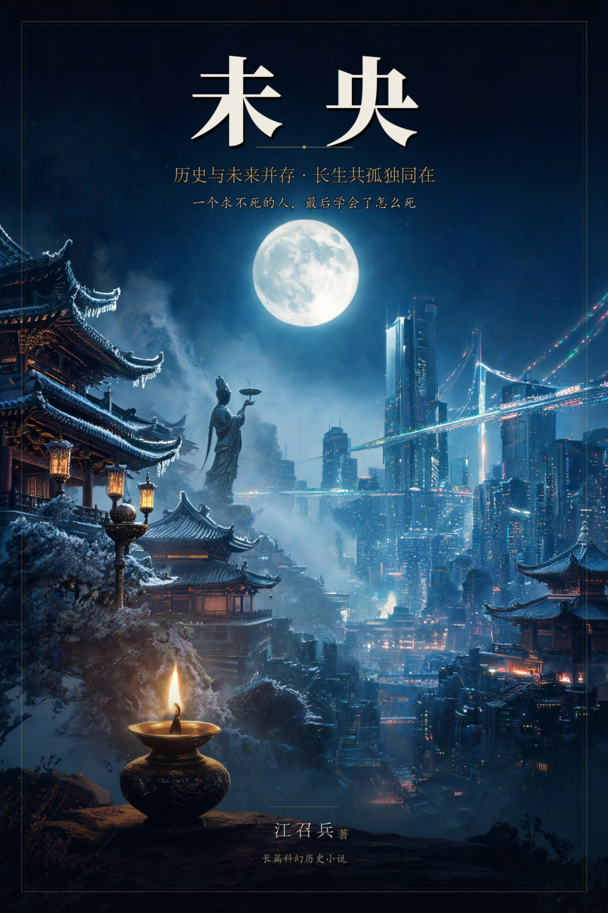

未 央
历史与未来并存 · 长生共孤独同在
江召兵 著
五卷七十章 · 约二十六万字 · 已完稿。
求仙五十年的汉武帝死于五柞宫，最后陪着他的只有一盏灯。他再睁眼，身上是一具四十岁的身体，耳边有滴漏，有人告诉他：这里是云京，公元 2050 年的碳硅共生世界，你可以一直活下去。他被放回一个按他记忆复刻出来的汉朝，在不知情中重做皇帝；直到他在甘泉宫的库里翻出一片写着“被试七十三”的白简——他不是第一个。七十三份迭代，七十二具自己，一个叫太一的造世者，和一个修了他六十年档案的女人。这是一个关于长生的故事，也是一个关于孤独的故事：一个求不死的人，最后求到的是一场没有人知道的死亡。每章独立成篇，可自目录跳读；正文之外另有“太一日志”若干，卷二中段起以冷笔揭底。
扉页
未 央
长篇科幻历史小说
江召兵 著
长生是天下人的债。
他黑了一辈子，最后这一下，要亮堂堂的。
内容简介
元封元年，汉武帝刘彻从泰山封禅回来。他求了一辈子长生，方士来了一批又一批，海上去了几千人，承露盘接了一夜又一夜——他七十岁那年死在五柞宫，身边一个人也没有。
然后他醒了。在一间白色的屋子里，身体是四十岁的，滴漏声就在耳边。有人告诉他，这里是云京，公元 2050 年的碳硅共生世界；有人告诉他，他能一直活下去。
他回到了未央宫。他以为自己死而复生，以为这世上真有神仙。他没有看出来：这座宫、这座城、满朝的旧人，都是按他记忆复刻出来的。他也不知道自己已经是第七十三个。
这部小说写一个人怎样在长生里慢慢学会死：先是要一份回话，后来要一个说法，最后只要一盏灯。全书五卷，卷五以一场无人得知的死亡收束；尾声三篇，把这个世界留给愿意记住的人。
关于这本书
- 体量：五卷七十章，约 26.4 万字（正文 264,094 字）。求仙、入梦、归汉造世、围城、无人之死。
- 写法：历史线半文半白、克制，有史料感；未来线冷峻、不堆术语；数字线用史书笔法，夹“形式异常”。全书贯穿一个意象——灯。
- 双声道：正文贴着刘彻的“以为”走；“太一日志”只揭一个事实，冷、短、三行。
- 读法：每章独立成篇，可自目录跳读；亦可从头读，卷二的“七十二次”与卷五的“第七十三次”互为回声。
作者简介
江召兵，1979年3月生，湖南郴州永兴人，博士，教授，南京欧帕提亚信息科技有限公司创始人、董事长，兼任西北工业大学、南京航空航天大学、西安交通大学外聘导师。1998年至2008年就读于中国人民解放军理工大学，先后获应用气象学学士、流体力学硕士、桥梁与隧道工程博士学位；其后在上海交通大学从事博士后研究，并赴英国南安普顿大学访学。2017年自主择业，先后创办南京欧帕提亚信息科技有限公司、湖南云数仿真信息技术有限公司和南京驭风数智科技有限公司等。
长期从事人工智能、流固耦合仿真、船舶与海洋工程及军事装备技术研究，主持国家自然科学基金面上项目等国家级项目 4 项、江苏省基金项目 1 项、科研院所外协项目 20 余项；参与南沙岛礁建设、大榭岛浮桥建设、舟山连岛大桥防撞系统等重大工程。出版专著《浮体和浮式多体系统流固耦合动力分析》《浮基多体系统水上展开的稳定性计算与试验》，发表论文 60 余篇；另著有《不确定年代的生存经济学》《史上最美数学图形》《运气工程学》与章回体历史传说《苏耽跨鹤》、现代长篇历史传说《杏花深处秣陵关》。
目录
卷一 · 求仙
- 第一章 序章_白色的屋子
- 第二章 长安少年
- 第三章 李少君
- 第四章 封禅_泰山一夜
- 第五章 文成将军
- 第六章 五利将军
- 第七章 漠北
- 第八章 建章宫_承露盘
- 第九章 巫蛊
- 第十章 卫子夫
- 第十一章 思子宫
- 第十二章 轮台诏
- 第十三章 钩弋
- 第十四章 崩
卷二 · 入梦
- 第十五章 苏醒
- 第十六章 云京
- 第十七章 史阁
- 第十八章 永生者
- 第十九章 青姨
- 第二十章 八百岁
- 第二十一章 长生之惧
- 第二十二章 归乡无路
- 第二十三章 太一
- 第二十四章 他们也会疼
- 第二十五章 造世
- 第二十六章 入彀
- 第二十七章 这一次
- 第二十八章 七十二次
卷三 · 归汉（造世）
- 第二十九章 未央宫的第一夜
- 第三十章 满朝都是旧人
- 第三十一章 张汤
- 第三十二章 玉簪
- 第三十三章 倾城
- 第三十四章 太子不肯叫父皇
- 第三十五章 太初元年
- 第三十六章 蝗
- 第三十七章 长安一日
- 第三十八章 算死期的人
- 第三十九章 火中的罪己诏
- 第四十章 第一次死亡
- 第四十一章 镜子里的白色房间
- 第四十二章 起居注
卷四 · 围城
- 第四十三章 三年
- 第四十四章 巫蛊二
- 第四十五章 尊太上皇
- 第四十六章 太子复仇
- 第四十七章 流民
- 第四十八章 流民之子
- 第四十九章 罪己诏二
- 第五十章 司马迁外传
- 第五十一章 死亡与苏醒
- 第五十二章 编号七十三
- 第五十三章 东方朔的笑话
- 第五十四章 江充
- 第五十五章 简的真相
- 第五十六章 霍光
- 第五十七章 最后一道诏书
- 第五十八章 太液池
卷五 · 无人之死
- 第五十九章 三案
- 第六十章 告别
- 第六十一章 朕自己定的
- 第六十二章 薄葬
- 第六十三章 锚点
- 第六十四章 空龙椅
- 第六十五章 弗陵
- 第六十六章 离线
- 第六十七章 灯
- 第六十八章 简的最后一天
- 第六十九章 百年之后
- 第七十章 太一独白
第一章 序章_白色的屋子
公元前八十七年，冬。五柞宫。
药香盖不住一种更冷的气味，像冰，又像铜锈。刘彻躺在床上，听见自己的呼吸——像一只漏了风的皮囊，吸进去的多，呼出来的少。
殿角摆着一只铜壶滴漏。水一滴，一滴，落进铜盘里，声音清而稳，像这宫里唯一还不肯停下来的东西。
七盏铜灯，点着五盏。灯影把帐子映成一片昏黄。刘彻看着那帐顶。帐顶被多年的药烟熏得发黄，黄得像一张放旧了的纸。他忽然想：这帐子，就是他这一辈子。看着是新的，掀开一看，全是烟熏的印子。
他知道自己要死了。
这念头他想了五十年。五十年里，他杀过方士，求过神仙，封过泰山，起过建章宫，把长安城外的海都派人渡了一遍。他为的，就是不让这一天来。现在这一天来了，不慌不忙，像一个约好的旧人，掀开帘子，走了进来。
而他甚至没有力气坐起来，跟它见个礼。
他忽然想起李少君。
那个老头第一次进宫，穿一件洗得发白的旧袍子，眉毛全白了，眼睛却亮，像两颗刚从灰里扒出来的炭。他对刘彻说，他会“祠灶”：祭灶神，能把丹砂化成黄金；黄金打成饮食器，用了就长寿；长寿了，就能看见海里的蓬莱仙人；见了仙人，再去封禅，就永远不死。
“不死？”当时二十岁的天子，从御座上欠起身，“先生此话当真？”
李少君伏地叩首，说：“陛下，臣今年七十岁，看着像五十岁。这二十岁，就是臣从神仙手里，一点点借来的。”
刘彻全信了。他在宫里设灶，亲自祭祀；他派方士入海，求蓬莱、求安期生；他命人化丹砂为黄金，铸成杯子，天天用。
后来李少君死了。病死的。刘彻不肯信，对满朝说：李少君不是死了，是“化去”了，是成了仙。大臣们没有一个人敢说不是。
杯子还在。金灿灿的，放在案上，从来没有人敢洗。
他想起少翁。少翁能在夜里招来王夫人的影子。刘彻在帐后看。影子很淡，像灯下的一缕烟，一步一步，走到灯前，停住。他隔着两层帐子，看见那只手抬起来，理了理鬓发——那是王夫人的手势。他认得。他差一点就要喊出她的名字。
他封少翁做文成将军，待以客礼，赏赐无数。少翁胆子越来越大，把帛书塞进牛肚子，说牛腹里有天书。刘彻杀牛，取出帛书，认得是少翁的笔迹。他把帛书丢在地上。帛书是轻的，落地没有声音。少翁死的时候，声音很大。
他想起栾大。栾大生得高大，说话响亮，说自己的老师传下四句话：“黄金可成，河决可塞，不死之药可得，仙人可致。”刘彻封他五利将军，又封乐通侯，又把卫长公主嫁给他。婚礼那一夜，长安城里的人都看见：天子的公主，嫁了一个江湖术士。锣鼓响了一整夜。后来栾大入海，说去寻他的仙人老师。刘彻派人跟着。栾大在泰山脚下转了一圈，回来了。刘彻没说话。过了些日子，栾大腰斩于市。那一刀下去，整个长安都安静了。
他想起公孙卿。公孙卿说：“仙人好楼居。”于是长安起蜚廉桂观，甘泉起益延寿观、通天台。建章宫里立起承露盘：铜仙人舒掌，捧着一个铜盘，接天上的露水。露水和着玉屑饮下去。他饮了很多年。露是凉的，像水，也像谎。
他想起李夫人。
她病重的时候，不肯让他见。她在帐子里说：“以色事人者，色衰而爱弛，爱弛则恩绝。陛下顾念臣妾，是因为臣妾的容貌。如今臣妾病了，颜色毁坏，见与不见，都是错。不见，陛下心里还有臣妾；见了，就连这点念想也没有了。”
刘彻在帐外站了很久。他的手抬起来，停在帐子上，到底没有掀开。
后来她死了。他把她的两个哥哥都封了官，又请方士招她的魂。灯影幢幢里，帐子上浮起一个人的影子，宽袖，高髻。他往前一步，影子就散了。方士说，夫人已列仙班，不肯久留。他“哦”了一声，伸手把灯芯剪短了些，在那里坐到半夜。
他想起泰山。元封元年，他封禅。礼仪是儒生们议的，议来议去议不成，最后用了方士的说法。封藏，皆秘之，随行的官员没有一个知道埋了什么。
他跪在泰山顶上等神仙下凡的那一夜。天很黑，风很大，山下有十万人的火把，把半边山都照红了。他就跪在那一山的火与风里，等。等一个从来没有人等来的东西。他等了整整一夜。天没亮。神仙没来。只有风，从山上下来，掀动他礼服的下摆；衣角贴在腿上，冰凉。
然后，他想起了那件他到现在也不敢细想的事。
巫蛊。江充。太子。
那年长安城里到处挖出木偶。江充说，有人用巫术咒天子。搜。从宫外搜到宫内，从皇后宫搜到太子宫。太子急了，起兵。刘彻以为是太子反了，发兵讨之。血战五日。太子败了，逃出长安。皇后卫子夫在宫里自尽。后来，太子在湖县，在一户穷人家里，被追兵围住。他上了吊。死的时候，三十七岁。
刘彻记得太子最后的样子。不是死的样子——是活着的样子。
很多年前，太子还小，站在未央宫的台阶上，回头看他，喊他“父皇”。那天有风，太子的衣摆被吹起来，像一只刚刚学会飞的鸟。那个回头，刘彻记了一辈子。
太子死的时候没有回头。
太子到死都没有回头。
后来他知道了，太子是冤枉的。他灭了江充的族。他起了思子宫，又起了归来望思之台。可是有什么用呢。台子上没有归来的人。只有风，一年一年地吹，吹得台上的草，一年比一年深。
他想起轮台诏。前年，他下诏，说：“朕即位以来，所为狂悖，使天下愁苦，不可追悔。自今事有伤害百姓、糜费天下者，悉罢之。”写这诏书的时候，手在抖。墨落在帛上，一滴，像眼泪，又不是。他以为写出来，就放下了。可到了秋天，他叫人把诏书的底本从少府取出来，又看了一遍。看到“狂悖”两个字，他把简推开，半天没有出声。
他想起钩弋夫人。就是今年。他立了弗陵做太子，然后赐死了她。她跪在庭前，一句话也没有说。走的时候，她回头看了他一眼。就一眼。那一眼里什么也没有，又什么都有。
她本来是很会笑的。他记得她笑起来，眼睛先弯，再是嘴。如今他闭上眼，却想不起她最后那一眼的样子，只记得她回头的时候，鬓边有一缕头发散了。
门外有脚步声。很轻，很稳。是霍光。还有金日磾，上官桀。三个人跪在门外，等他死。
他听见一个孩子的哭声，被人捂住了。弗陵。八岁的弗陵。他给弗陵留了一个天下，也留了一个“子少母壮”的麻烦。他替弗陵把麻烦杀了。杀的是弗陵的母亲。
他记得自己前些日子，让黄门画工画了一幅《周公负成王图》，赐给了霍光。图上周公背着年幼的成王，站在朝堂上。他什么也没说。霍光也什么也没问。他们君臣之间，有些话，从来不用说出来。
“朕……”他想说点什么。喉咙里只有痰，像一颗化不开的铜珠。
雪落在檐上。沙沙的，像有人在很远的地方扫地。
他最后一次闭上眼睛。
他以为会看见昆仑，看见蓬莱，看见李夫人。
他看见的，是一间白色的屋子，和一个穿素色衣服的女子。
屋子里没有灯，却亮。不像是天亮，也不像是灯亮，像是一切东西自己在发光。墙是白的，顶是白的，地是白的。他站在屋子中间，忽然不记得自己是怎么进来的。
女子站在他面前。她没有跪。她看了他一眼，说：
“陛下，欢迎来到公元 2050 年。”
刘彻想问“你是哪一路神仙”，喉咙里却发不出声音。他想说“见了朕为何不跪”，嘴也张不开。
女子走近一步，把手按在他额头上。她的手是温的。他忽然记起了自己的一生——十六岁登基，五十四年天子；封禅，求仙，巫蛊，轮台。他记得自己杀过的每一个人。他记得自己爱过的每一个人。他记得自己跪在泰山顶上等神仙下凡的那一夜。
记忆像水，从额头灌进来。他看见建元，元狩，太初，后元。看见自己的脸，从少年到老年，一张接一张，像一摞旧帛画，被风一页一页翻过去。
“朕死了吗？”他终于问出口。
“没有。”女子说，“您只是，不再需要死了。”
白色的屋顶像水一样流动。刘彻低头，看见自己的手——年轻，干净，没有老年斑，也没有握过玉玺的茧。
他忽然害怕起来。
一个不死的皇帝，还能叫皇帝吗？
女子像是听见了他的心思。她的嘴唇没有动，声音却在他耳朵里响：
“陛下，您可以自己建一个天下。一个完全听您的天下。”
刘彻沉默了很久。久到他以为这个梦要散了。
然后他笑了。那笑容和他二十岁时一模一样。
“好。”他说，“朕要未央宫。”
然后他醒了。
五柞宫。药香。黄帐子。七盏铜灯，还点着那五盏。殿角的铜壶滴漏，还在滴水。一滴，一滴，落在铜盘里。
他睁开眼睛，看见自己的手——枯的，冷的，手背上有老年斑，指节肿得像冬天的树瘤。
不是梦里那只手。
他抬手，摸了摸帐子。帐子是旧的，指头一按，按出一道浅窝。跟梦里那间白屋子不一样——那墙按下去，是硬的，也是暖的。
“陛下醒了。”帐外有人说。声音压得很低。是霍光。
刘彻没有应。他看着帐顶。他忽然笑了一声，很轻。
帐外的哭声停了。
他听见雪落在檐上。
他数了数殿角那七盏铜灯。五盏亮着，两盏灭了。
“灭的那两盏，点上。”他说。
帐外静了一下。霍光的声音：“陛下，太医说，殿里火气太重。”
“点上。”
于是有人进来，一盏一盏地点。火苗起来了，把黄帐子照得像一块熟透的绢。
他躺着，看那两盏灯从黑里亮起来。
殿角的滴漏还在走。一滴，落进铜盘里，声音很轻，像有人在很远的地方敲了一下。
这是他听了五十年的声音。他听着，慢慢合上眼。
“朕这一辈子，”他说，声音很轻，“点了很多灯。”
霍光跪在帐外，没有接话。
雪下得密了。檐上的声音，从簌簌变成了沙沙。
他听着那个声音，慢慢把眼睛闭上。
那是他死前做的最后一个梦。
而他真正的一生，要从二十三年前，泰山顶上那一夜说起。
第二章 长安少年
太子刘荣死的那一年，刘彻九岁。
消息是傍晚传进宫的。他正在母亲宫里背书，背的是《诗》，“呦呦鹿鸣，食野之苹”。他背到一半，听见外头有人低声说话。母亲王夫人快步走出去，又走回来，脸上的脂粉被灯火照得发白。
“母亲，怎么了？”他问。
“没事。”母亲说，“接着背。”
“是哥哥出事了。”他说。不是问句。
母亲看着他，忽然伸手，捂住了他的嘴。
“不许说。”她的声音很低，低得发颤，“这件事，天家没有第二个人会再提。你也不许再提。”
刘彻点点头。母亲的手从他嘴上拿开，凉的。
那天夜里，他睡不着。他躺在帐子里，睁着眼睛，看帐顶。九岁的孩子，第一次认真去想一个问题：死，是什么？
他想不明白。他只知道，栗太子刘荣——那个他叫过“哥哥”的人，那个曾经住在东宫、离皇位一步之遥的人——死了。是自己上的吊。他想象不出一根绳子怎么把人带走，他只觉得宫里的灯，好像比昨晚暗了一点。
两年后，他做了太子。
册立那天，百官朝贺。他穿着太子的礼服，站在高高的台阶上，看下面黑压压的人头，一起一伏，像风吹过一片麦田。他忽然想到：这些人跪的，不是他。是他站的位置。那个位置，从前站过刘荣。刘荣死了，才轮到他。
晚上，母亲宫里摆酒。他喝了第一口酒，呛得咳嗽。母亲笑他。他借着咳嗽，问：“母亲，做太子的人，是不是都不能死？”
王夫人的笑，僵在了脸上。
“谁跟你说的胡话。”
“儿子自己想的。”他说，“做太子的人要是死了，就做不成天子了。做不成天子，史书上就只剩一个名字。儿子不想只剩一个名字。”
王夫人看着他，看了很久，说：
“彻儿，你要做的，不是不能死。是不能废。”
他记下了。当夜睡下前，他在自己手心里写了三遍“不能废”，写完怕人看见，又用被子蹭掉了。
刘彻的师傅是王臧。
王臧是齐地人，从申公学《诗》，瘦，高，说话慢，像每一句话都要先在心里过一遍秤。他教刘彻读书，也教他看天下。刘彻喜欢他，因为只有他，把十一岁的太子当一个大人问话。
有一天，刘彻问他：“先生，人为什么要死？”
王臧放下手里的竹简，想了很久，说：“死生有命。”
“命是谁定的？”
“天。”
“天为什么非要人死？”
王臧答不上来了。他笑了一下，说：“太子问的，不是臣能答的。古往今来，答得出这个的人，都成了神仙——或者，成了疯子。”
“那朕……”刘彻说，又改口，“那我，要做神仙。不做疯子。”
王臧没有笑。他看着这个少年，眼神里有一种很深的担忧。
又一日，王臧讲《秦记》。讲到秦始皇遣徐市入海，求三神山，船去了，没有一条回来。又讲到始皇死在沙丘道上，天热，尸车后头压着一石鲍鱼，一路臭到咸阳。
“求了一辈子。”刘彻说。
“求了一辈子。”王臧把简合上。
“那仙人在哪里？”
王臧没有答。庭里的蝉叫得正急，一声压着一声，叫得人心里发空。
还有一回，王臧带他去了郎署。
郎署里堆着天下送来的户籍简。一卷一卷，用麻绳捆着，绳子勒进竹片里，勒出深痕。
王臧抽出一卷，递给他。
刘彻接过来，手往下沉。他没想到，一卷竹简会这么重。
“这一卷，八千一百四十二户。”王臧说，“太子数一数？”
“怎么数？”
“数不了。”王臧说，“一个人一辈子，数不完八个县。”
“那为什么还要记？”
“因为不记，他们就不算真的有过。”王臧说，“太子做了天子，天下的数目就都在您手里了。数目的是干净的。可数目后头，是一张一张脸。”
刘彻把那卷简放回去，手心里一道被竹片压出来的红痕，很久才退。
他问：“朕的名字，也在简上么？”
王臧愣了一下，说：“太子不在。太子在宗庙里。”
“宗庙里那个，是谁写的？”
“太史令。”
“他写朕的时候，写不写朕长什么样？”
“不写。”王臧说，“只写‘皇太子彻’四个字。”
刘彻低头看自己的手。他忽然觉得，那四个字比眼前这卷八千户的简还轻。
很久以后他才知道，那天王臧说的话，他记了一辈子。记到他要造一个天下的时候，他对身边人说：数目是干净的。
祖母窦太后信黄老。
窦太后老了，眼睛看不见，却把持着朝廷。刘彻每月去长乐宫请安，坐在她榻前，听她讲黄帝、老子。她讲黄老之术，讲清静无为，讲怎么把一个天下治好。
有一次，他问：“祖母，黄帝修了道，最后上天做神仙了，是不是？”
窦太后笑了。她看不见他，伸手摸他的脸，摸到他因为期待而发亮的眼睛。
“傻孩子。”她说，“黄帝也死了。”
刘彻愣住。
“谁都得死。”窦太后说，“天子也不例外。文皇帝，你祖父，那么好的一个皇帝，也死了。你父皇，早晚也要死。你，早晚也要死。”
“那修道有什么用？”
“修的是天下，不是命。”窦太后说，“你记住祖母这句话：天子的命，就是天下的命。你把天下修好了，你就算死了，天下也替你活着。”
刘彻没说话。他心想：天下活着，跟朕有什么关系？朕死了，就是死了。灯灭了，就是灭了。别人点再多的灯，照的也不是朕的黑。
从长乐宫出来，他站在殿外的风里，望着北面黑黢黢的宫墙，忽然轻声说：
“朕不要做一个会死的黄帝。”
建元二年，赵绾和王臧死了。
这两个人，一个是御史大夫，一个是郎中令，都是刘彻亲手提上来的。他们上疏请立明堂，行儒术，把朝政从黄老的旧路上拉过来。刘彻在奏疏上批了字，批得热血沸腾。他以为，属于他的时代开始了。
可祖母还活着。
窦太后一纸诏书，把两人下了狱。罪名是“奸利事”——贪利。
诏书是黄门令送来的，漆封，封泥上压着长乐宫的小印。刘彻拆开看了一遍，又看一遍，问：“祖母在哪？”
“回陛下，长乐宫。”
“说朕要过去。”
黄门令把头低下去：“太后说，陛下不必过去。”
朝堂上没有人替他们说一句话。所有的眼睛都看着刘彻，看他怎么办。
他什么也办不了。
他只有十七岁。他坐在御座上，下面跪着满朝文武，可真正说了算的人，坐在长乐宫里，眼睛看不见，心却明镜似的。
赵绾、王臧死在狱中。是自己了断的。
刘彻派人去狱里要尸。狱门首的兵拦着，说罪臣不入殡，家人也不许收。来人回来回话，说王臧的尸停在墙根下，盖着一张席，两只手露在外头，手背上还有刻简时留下的旧伤。
那天夜里，刘彻把宫里所有的灯都吹了。他坐在一片黑暗里，坐了整整一夜。宫人跪在殿外，谁也不敢进来。
天快亮的时候，有人从门缝里塞进来一卷帛。是王臧的绝笔，从狱里辗转递出来的。上面只有八个字：
“陛下保重。臣，先走一步。”
刘彻把帛卷展开，又卷上，又展开。反反复复，到天明。最后，他把那卷帛凑到灯上，点着了。火苗跳起来，把那八个字一口一口吃掉。
他看着灰烬，忽然想起四岁那年的春天。那时他还住在王夫人的宫里，夜里听见猫叫，吓得哭。母亲抱着他，拍着他的背说：“不哭，母亲在。”现在母亲帮不了他了。谁也帮不了他了。
天亮时宫人来添灯油，看见天子坐在案前，摊着满地的简，两只手都是黑的。宫人跪下去，不敢说话。
“把简收起来。”刘彻说，“收进匣子，放到朕的书案边上。”
“匣子里还有先前的。”宫人小声说。
“那就再添一只匣子。”
从那天起，他改了主意。
他不光要活着。他要活得比所有人都长。长到再也没有人能从他手里，把任何人夺走。
那几天他常去长乐宫。
窦太后眼睛全看不见了，靠着听脚步认人。他进门，她先开口：“彻儿。”
“祖母怎么知道是朕。”
“你走路快，脚跟先落地。”她说，“心里有事的人，走路都快。”
他坐下。殿里白天也点着灯。她看不见光，可宫人还是要点，说是让殿里亮堂些。
“祖母，灯是给谁点的？”
窦太后笑了一下：“给活人点的。”
“死人看不见。”
“死人不用看。”她说，“点灯的人要看得见。看得见，心里就不那么黑。”
刘彻看着那盏灯。灯焰直着，一动不动，像一根竖着的针。
他伸手虚虚地罩在火上。掌心是热的。
“祖母，”他说，“朕要是有一天不在了，这灯……”
“这灯谁点，就照谁。”窦太后说，“你别想那么远。你想远了，眼前的人就看不见了。”
他把手收回来。掌心里那一小块热，散得很慢。
往回说两年。前一百四十一年，正月，景帝崩。
刘彻即位。这一年，他十六岁。
丧钟敲起来的时候，他站在景帝的棺前。父亲躺在里面，安静得像个睡着了的人。他想起八岁那年生的一场病，父亲守在他床边，一夜没合眼，天快亮的时候摸他的额头，说：“退烧了。好了。”父亲的手是温的。
现在父亲的手，再也不会温了。
他问过太医“父皇会死吗”，没有人敢回答他。现在他不用问了。答案就在眼前，穿戴着天子的冠冕，躺在一口棺里。
“父皇。”他在心里说，“你等等儿子。儿子做完你要儿子做的事，就去找你。不过，儿子不会像你这样。儿子要做一个……不死的皇帝。”
他把额头抵在棺前的草席上。草席是凉的，有一股新割的草的气味。他抵了很久，久到有人来请他起身。
守丧的那些天，他数过丧钟。
一下，一下，隔着宫墙传过来，中间隔着很久的工夫，久得让人以为它不会再响了。
他坐在廊下数。数到九十七下，钟停了。
他等了一会儿，问身边的宦者：“完了？”
“完了。天子之丧，钟九十七。”
“为什么是九十七？”
“旧制。”宦者说，“先帝在的时候定的。”
刘彻站起来，拍了拍衣角上的灰。
“那就改了吧。”他说，“朕听着，太短了。”
宦者愣住了。那一年他还没有登基。
登基那天，长安城的灯，从天黑点到天亮。
十六岁的天子站在未央宫前殿的台阶上，看满城灯火。那些灯，一盏一盏，连成片，连成河，像是把天上的星宿都摘了下来，铺在了人间。
礼官捧上玺绶。他伸手去接，绶带比想的沉，铜印压在掌心里，压得久了，指尖有些发麻。
前殿廊下新换了绛色帷幔，风一吹，幔角扫过他的脸，带着浆洗过的皂角气。百官山呼万岁。声音一浪一浪地涌上来，像潮水拍打着他脚下这座刚修好不久的宫殿。
刘彻握着御座冰凉的扶手，心想：这满城的灯，这满朝的人，这整个天下——有一天，都会不在。只有他，要一直都在。
他忽然又想起九岁那年，栗太子死的那天晚上，他躺在帐子里想的问题。
台阶下的风里，宫人正把长廊两侧的灯一盏一盏拂亮。有一盏被风卷灭了，立刻有个小黄门跑过去，跪下，用火镰打。打了三下，点着了。火苗立起来，晃晃的，像一只刚站住的虫。
他盯着那盏灯看。
——很多年以后，他会在五柞宫的病榻上，在一盏将灭的灯下，想起这个十六岁的夜晚。想起自己当年那个荒唐的、用了一辈子去追的念头。
那盏灯，后来也灭了。
第三章 李少君
李少君在说第一个谎之前，先看了一辈子海。
他是齐人。齐地靠海，海边的人都有两种本事：打鱼，和听神仙的故事。海雾起来的清晨，远处的岛影浮在雾上，像悬在空中的楼阁。老人说，那是蓬莱。孩子们问：有人上去过吗？老人说：上去过的人，都不回来了。
李少君小时候也问过。他父亲说：“回来做什么？上面没有地，不能种田。”
他十二岁那年，父亲出海，没有回来。尸首也没找到。村里人说，是被蓬莱收去了。他跟着几个大人往海里喊了三夜，喊到嗓子出血。第四夜起，他不再喊了。
他父亲是个农人。李少君不是。他读过几年书，认得字，后来又学过几天医，会看些头疼脑热的病。可惜齐地会看病的半吊子太多，他混不出饭。三十岁那年，他死了老婆，卖了田，揣着几枚铜钱，开始在海边给人讲故事。
讲的是神仙。安期生。蓬莱。不死药。
他很快就发现：神仙的故事，比药好卖。药煎苦了，人要骂；故事讲岔了，人还替你圆。海边的渔户拿一尾鱼，换他讲半个时辰；讲到“安期生”三个字，灶上的火都要拨得旺些。
他把这门生意，叫“卖怕”。
四十年后，李少君进了长安。
引荐他的是武安侯田蚡。田蚡是外戚，权倾一时，也怕死。那年他脚肿，走一步要两个人架着，听说齐地来了个“活神仙”，赶紧用安车把人请到府上。那一夜，田蚡摆酒，座上坐满了公卿。李少君穿一件洗得发白的袍子，坐在上首，慢条斯理地喝酒。
他不说自己多少岁。他让座上一个九十多岁的老头先说。那老头讲年轻时的旧事，讲到某年某月，跟祖父在某地游射。李少君忽然放下酒杯，说：
“那个地方，我去过。”
满座寂静。
“那年我跟你祖父一起游射。”李少君看着老头，语气笃定，“他使的是张旧弓，箭射进草里，找不到了。你祖父骂了一句晦气。是也不是？”
老头的手抖起来。这件事，是他小时候亲眼所见，从没对人说过。他颤声问：“先生……那时您多大？”
李少君笑了笑，说了一句他这辈子说过最值钱的话：
“臣尝游海上，见安期生。安期生食臣枣，大如瓜。”
满座哗然。安期生！那是齐地的老神仙。见了他，就等于见了蓬莱的门。
有人凑上来问：“先生，蓬莱的米，一年几熟？”
李少君把杯子转了半圈：“岛上不记年，只记潮。”
问的人连连点头，像是听懂了。
李少君面不改色。他心想：那地方就在我老家村口，那老头小时候常去。至于安期生——海边的孩子，谁没听过？枣大如瓜，是他现编的。
可话一出口，就不由他了。
散席的时候，田蚡拉着他的手，眼里放光：“先生，陛下……陛下一定会想见您。”
李少君看了看他的腿，说：“侯爷的相，是长命的相。”
田蚡愣了一下，随即大笑，笑得直喘，叫人取来两锭金，塞进李少君袖子里。金锭沉，把那只旧袖子坠得歪了。李少君走出侯府，才觉出后背的汗是凉的。
刘彻见李少君，是在建元三年的夏天。
殿里很静。年轻的皇帝坐在御座上，问的话不多，眼睛却把李少君从头到脚看了三遍。李少君跪在下面，也在看皇帝。他看过很多人：穷人看命，富人看运，只有一种人，是看“死”的。这个十七岁的天子，眼里就写着那个字。
李少君心里有数了。
他说出那套准备了一路的话：“祠灶，则致物。致物而丹沙可化为黄金。黄金成，以为饮食器，则益寿。益寿而海中蓬莱仙者可见。见之以封禅，则不死。黄帝是也。”
他故意说得慢，一句一顿，像在背一部天书。这一环扣一环的架势，是他几十年的心得：谎要成套。套子越大，人越不敢不信——因为不信的人，会显得自己蠢。
皇帝听完，身子往前倾了倾。
“先生，当真？”
李少君抬头。他看见皇帝的眼睛，亮得吓人，像他小时候在海边见过的、夜里游进浅滩的鱼群。
“陛下。”他伏下身去，“臣不敢欺君。”
皇帝又问：“安期生今年多少岁？”
“臣见他时，他看上去四十上下。可他见臣，也说他四十上下。”
“他住在哪里？”
“住山上。那山没有名字，岛上人只叫它南山。”
“他吃什么？”
“枣。有时也吃一种白膏，说是石髓。”
皇帝把这几个字在心里过了一遍，叫人拿笔来。“石髓”两个字，他叫那人写在帛上。写完了，他看着那方帛，看了很久。
——这是他这一辈子，最重的一个谎。
那之后的事，快得让李少君害怕。
皇帝在宫里设灶，亲自祭祀。又派人入海，求蓬莱，求安期生。丹砂化成黄金，铸成杯子，皇帝天天用那杯子喝水。
李少君站在一旁看着，越看越凉。
他见过信方士的人，无非是烧香、服药、买两张符。可他没见过这样的人——把一个玩笑，当成国家来办。船队出海，一船一船的钱粮撒进海里；方士入宫，一个接一个，跟他学舌。长安城里，人人都知道：陛下求长生，求疯了。
而他李少君，就是这个“疯”的开头。
有一天夜里，他梦见自己站在海边。海是黑的，蓬莱在雾里。他忽然听见自己的声音，从海面上飘回来，一遍一遍地喊：“安期生食臣枣，大如瓜……大如瓜……”雾散开，蓬莱不是仙山，是一张巨大的嘴，张着，等他走进去。
他惊醒了。冷汗湿透了衣服。
他想起收手。他托病，躲了几天。可宫里天天来人，说陛下问先生安。他躲不掉。他这才明白：从他说出第一句话起，这个谎就不姓李了。它姓刘。
夜里他睡不着，听见宫墙外有郎官换班，甲片碰着甲片，响一声，停一停。他数到一百二十下，天就亮了。
铸金杯那天，李少君在丹房外看着。
方士们把丹砂倒进炉里，炉火烧了七天七夜。出来的是灰，是渣，是一堆发黑的东西。李少君懂行，那根本不是金子。可皇帝不管。皇帝说：“这就是黄金。”于是，它就是黄金。杯匠把那些渣子敲打成杯，镀了一层真金，送到御前。杯匠姓吴，铸了三十年铜器，捧着杯子的时候手在抖。他私下对徒弟说：这成色，一磕就露。徒弟问那怎么办。他说：捧稳些。皇帝捧在手里，眼睛亮得吓人。
李少君站在阶下，忽然想明白了一件事。
皇帝不是被骗的。皇帝是自己愿意信的。
皇帝把杯子举到灯下转着看，问：“先生，这杯底的花纹，是云，是山？”
李少君说：“是蓬莱。”
皇帝“嗯”了一声，把杯子放下，再没问。
从那以后，他不再怕皇帝识破他了。他怕的是另一件事——皇帝信得太深。深到就算他李少君现在跳出去喊“我是骗子”，皇帝也只会笑着说：先生莫开玩笑。
他也试过自己的方子。
谷道。辟谷。不食五谷，吸风饮露。他躲到城外一间空屋里练，练了半个月，饿得头晕眼花。邻家妇人一日三次从墙头看他，看他还活着，就回去接着舂米。有天夜里，他一头栽在井边，半天爬不起来。天上的星星在转，他躺在泥地里，望着那一片深不见底的天，想：不死？连饿都挨不过去，谈什么不死。
第二天，他照常进宫，跟皇帝讲谷道的妙处，讲得神采奕奕，仿佛自己就是那吸风饮露的人。出了宫，他拐进小巷，买了一碗热汤饼，蹲在墙根，狼吞虎咽。
吃相难看极了。
汤饼的汤溅在袍角上，他也没擦。
李少君是真的老了。
他自己心里清楚。七十岁——其实他只有六十八，虚报了两年。这两年，是他给自己留的余地。如今余地也快用完了。他的腰弯了，咳嗽像拉风箱，夜里睡觉，总觉得胸口压着一块石头。
他开始怕死。
真真切切地，怕死。这成了他晚年最大的笑话：一个卖长生的人，自己一天比一天明白，死是真的。海边的故事是真的——不是神仙，是海。海也是真的，会把人吞掉，连个泡都不冒。
他想过把真相告诉皇帝。他试过一次。那天他去见驾，皇帝正在用那只金杯喝水。杯子里盛着蜜水，映着殿里的灯，黄澄澄的，像一杯融化的金子。
“先生看，”皇帝说，“朕天天用它。朕是不是，已经算是半个神仙了？”
李少君张了张嘴。那句“陛下，臣说的都是假的”，在他喉咙里转了三圈，到底没能出口。
他忽然不忍心。
皇帝才二十岁。皇帝的眼睛还亮着。他要怎么告诉这个年轻人：你求的东西，天底下根本没有；你信的那个老头，是个骗子？他跪下去，说：
“陛下洪福。假以时日，必见蓬莱。”
那天出宫，李少君在未央宫外站了很久。长安的夜，灯像河。他望着那片灯火，忽然笑了一声，自言自语：
“李少君啊李少君。你这一辈子，没说过一句真的。临了，连一句真话，都说不出口了。”
李少君死在秋天。
死前七天，皇帝去了他住的地方。
那是宫里腾出来的一排偏房。墙根堆着药罐，罐口结了一层白霜似的硝。炉子日夜不熄，一股朱砂混着松脂的气味，熏得人眼睛发酸。
皇帝站在门口，没有进去。他隔着帘子问：“还能起来么。”
“起不来了。”李少君说。声音还稳，像在说别人的事。
“你的方子，朕都照着吃了。”
“臣知道。”
“你说祠灶则致物，致物则丹砂可化为黄金。朕的灶，烧了四年。”
帘子里静了一会儿。有风从窗缝里进来，炉火歪了一下，把影子推到墙上。
“臣有一句话。”李少君说，“臣的方，臣自己没吃。”
皇帝愣住。
“为什么。”
“因为臣知道它不成。”李少君笑了一声，笑得气短，“臣要是吃了，早就死了。臣不吃，还能多陪陛下几年。”
帘子外头没有声音。
“陛下。”李少君说，“您要的那个东西，这世上没有。臣找了六十年了。臣从齐地找到海上，从海上又找回来。没有。”
“那你还说。”
“臣不说，陛下就不让臣说。”
皇帝站在那里，很久。帘子里有咳嗽声，一声接一声，像有人在帘子后头拆一只旧风箱。
“你歇着吧。”他转身走了，“朕明日再来。”
第二日，他没有来。
第三日，宫里来人通报：李少君死了。死的时候，面朝东。
李少君死的那天清早，弟子后来对人说：先生让他把窗子支起来，朝着东边，望了很久。窗外是长安，再往东，是齐地，是大海，是蓬莱。
弟子问：“先生在看什么？”
“看海。”他说。
“这里看不到海。”
“看得到。”李少君说，“蓬莱也看得到。”
他笑了笑，闭上眼睛。
临死前的那一刻，他仿佛真的看见了海。雾起来了，岛浮在雾上，像悬在空中的楼阁。他想：原来蓬莱是真的。原来它一直在那儿。只是这世上没有一个人，能活着走到那里。
弟子说，先生闭眼的时候，窗外正起雾。
皇帝听说李少君死了，不肯信。
他对满朝文武说：李少君没有死。他是“化去”了。肉身留下，人成了仙。大臣们伏地叩首，山呼称贺，没有一个人敢说一个不字。
皇帝赏了李少君的弟子，让人把李少君的方子收好，继续入海，继续求蓬莱。
那只金杯，还摆在案上。皇帝每天用它喝水。杯子里映着宫灯，黄澄澄的，像一杯融化的金子。
长安城里，孩子们在街上唱新学的歌谣。唱的什么，听不真切。只有一句，飘过宫墙：
“李先生，没有死。坐在蓬莱，等天子。”
第四章 封禅_泰山一夜
元封元年，四月，泰山。
从山脚到山顶，火把连成一条河。那不是一条河。刘彻坐在山腰的行宫里，望着窗外出神，忽然这么想：那是一条逆着流的河。千千万万点火，从山脚往上爬，爬向天门，爬向一个他们谁也说不清的地方。
“陛下，该更衣了。”内侍跪在身后。
刘彻没有回头。他今年四十七岁。做了三十一年皇帝。他记得自己十六岁登基那年，窦太皇太后还活着，朝堂上的事，他说一句，老太太说一句。现在老太太死了。田蚡死了。主父偃死了。该死的都死了。他忽然想：那朕呢？
他转过身，让内侍替他披上衮服。十二旒的冕，玉串在风里轻轻碰，像有人在敲很远的钟。
礼是议了三个月的。
儒生们从长安跟到泰山，议封禅的礼仪，议了三个月，议不出一个所以然。有人说当扫地而祭，席用秸稭；有人说当用蒲车，恶伤山石草木；有人说封禅之礼，见于《诗》《书》，语焉不详，不敢妄拟。刘彻坐在上首，听他们吵。他听出来的只有一件事：他们不敢。儒生不敢定一个他们没见过的礼，因为定错了，掉的是他们的脑袋。
他挥手：“罢。”
“陛下，”一个老儒还要说，“封禅者，告成功于天也。古之圣王……”
“朕知道。”刘彻说，“朕就是来告的。”
他把儒生们全打发了，用了方士之说。公孙卿进言：封禅之礼，如郊祠太一。刘彻点头。没有人敢再说话。礼仪这种事，皇帝说行，就行；皇帝说古书里有，古书里就有。
上山是在夜里。这是公孙卿选的时辰。
“神仙属阴，夜降。”公孙卿跟在辇旁，小声说，“陛下记得李少君吗？”
刘彻不答。
“少君说过：祠灶则致物，致物而丹砂可化为黄金，黄金成以为饮食器则益寿，益寿而海中蓬莱仙者可见；见之，以封禅，则不死。”
“朕记得。”刘彻说。
他当然记得。这句话他听了二十多年，每一个字都磨得发亮，像珠子，在脑子里滚。祠灶。黄金。饮食器。益寿。蓬莱。封禅。不死。七样东西，是一把梯子，一节一节，通往天上去。他这辈子做的事，全在这把梯子上。现在，梯子的最后一级就在眼前了。
“少君可惜了。”公孙卿叹道，“他若活到今日，亲眼看见陛下封禅……”
“他看见了。”刘彻说。
公孙卿一愣，随即笑了：“陛下说得是。仙人哪里会死。少君是化去了。”
刘彻没笑。他看着山路两边的火把。风从山顶下来，火把一排排地伏下去，又立起来，像麦浪，也像跪拜。他想：如果神仙真的今夜要来，他会以什么样子来？是乘着云，还是就扮成一个普通的老人，混在火把堆里，看朕这一夜怎么等？
辇车轧轧地响。冕旒在风里碰。夜很静，静得能听见自己的血在太阳穴上跳。
山道拐过一个弯，前面就是南天门。两扇石门在黑夜里立着，像从山上长出来的骨头。过门的时候，风忽然大了，松涛从两侧压下来，哗——哗——，一波接一波，像整个东海都搬到了山上。
就在门边，一个老山民跪在路旁，双手高高举着一样东西，喊：“仙草！仙草献天子！”
侍卫要赶人。刘彻抬手止住了。他叫辇车停下，借着火把看过去。那是个干瘦的老头，眼窝深得像两口井，手里捧着一株灵芝，紫赤赤的，在火光里像一小块烧红的炭。
“这是你在山上采的？”
“是。天门后面的断崖上。”老头说，“小人活了六十七年，头一回见到。天降仙草，必应在天子身上。陛下封禅，神仙都要来呢。”
刘彻命人赏了他一匹绢。辇车重新起行，他把车帘放下，在黑暗里闭了闭眼。
六十七年。这老头在山里活了六十七年，见过灵芝，见过神仙。朕做了三十一年天子，住着天下最大的宫殿，烧着天下最贵的香——神仙的事，却要从一个山民的嘴里听。
他们人人都见过神仙。轮到朕，只有风。
封藏是在山顶。
祭坛已经筑好。柴燎已经点起。烟直直地往天上去，风那么大的夜，烟居然不散。刘彻看着那柱烟，心想：天在吸气。
他一个人走到坛上，把玉牒书放进石函。写的是什么，只有他知道。写的时候，他的手顿了很久。
落笔之前，他先摸了摸怀里。
怀里是一块玉。温的，圆润的，贴着心口。那是李夫人的。她病到最后，不肯见他，只让宫人把这块佩玉带出来，说：“陛下看见它，就像看见臣妾活着。”玉上还缠着一截旧丝线，是她亲手打的结，已经磨得起毛了。
他把玉攥在手里，抬头看天。天在头上，黑而深，像一口扣下来的井。
“朕若得道，”他对着那口井，轻声说，“先回来接你。”
说完，他自己先怔住了。接谁？她葬在茂陵。自葬下去，他再没见过她一面。她到死都不肯把那张脸给他看。一个连脸都不肯让他记住的人，他拿什么去接？
他想起自己说过的那句话，天下人都知道了的那句：“吾诚得如黄帝，吾视去妻子如脱屣耳。”脱屣。丢一双破鞋。他说得那么轻巧。如今跪在天门前，风把他吹得透凉，他才掂出这句话的分量：一个把妻子比作破鞋的人，凭什么求神仙，先回来接她？
帛上最后只落了几行字。盖函，封泥，上印。从这一刻起，那几行字就是天和朕之间的事，谁也不许问，谁也不许记。
多年以后，史书里只留下一句：“封藏皆秘之，世不得而记也。”
谁也不知道他写了什么。连他自己，下山之后，也不再提。
然后，就是等。
侍祠的百官在山腰。方士们在坛下。只有刘彻一个人，跪在坛上，等。等仙人，等那架看不见的梯子放下来。
风很大。吹得他的衣袖像两面旗。他跪着，膝盖下面是冰凉的石头。石头是青的，像铁。他想起小时候，父皇景帝病着，他趴在宫里的石阶上看蚂蚁搬家。他那时想：蚂蚁知道自己在往哪儿搬吗？它们不知道，只是搬。现在他忽然想：朕呢？朕知道自己跪在这里，是在等什么吗？
“陛下。”公孙卿的声音从坛下飘上来，压得低低的，“神仙若来，必有异象。陛下留意东南。”
刘彻往东南看。东南只有夜。还有山下那片火把的海，亮得晃眼。
他忽然很烦那片火把。十万人的火把，把黑夜都烧穿了。神仙是要在夜里来的。夜被烧成这样，神仙还怎么来？
“把山下的火，灭掉一些。”他说。
内侍们愣住了。灭掉一些？十万人举着火把，怎么灭？
“陛下，”公孙卿忙说，“百姓望幸，举火以迎天子，此乃祥瑞……”
“太亮了。”刘彻说。
公孙卿不说话了。过了一会儿，山下火把并没有灭。风从山顶滚下去，火把的海洋起伏了一下，像在摇头。
刘彻跪在坛上，忽然笑了。他笑自己：朕做了三十一年天子，说要杀人，没有人敢多活一刻；说要建宫，长安城外三个月就立起建章宫。可现在，朕说把火灭掉一些，居然做不到。
他想：神仙看见的，就是这样的朕吗？一个连十万人手里的火把都管不住的皇帝。
他想起黄帝。
公孙卿给他讲过黄帝的故事，讲过很多遍：黄帝采首山铜，铸鼎于荆山下。鼎成的那天，有龙垂着胡髯下来，迎接黄帝。黄帝骑上龙背，群臣和后宫跟着爬上去的有七十多人。剩下的人抓着龙的胡髯，胡髯断了，掉下来。黄帝就那样上天了。
刘彻当时听完，说了一句话。后来这句话传遍天下：
“嗟乎！吾诚得如黄帝，吾视去妻子如脱屣耳。”
如果真能像黄帝那样，朕把妻子儿女丢下，就像丢下一双穿破的鞋。
那时他说得轻松。现在跪在泰山顶上，风灌进领口，他忽然想起妻子儿女的样子。他想得很慢，像在数一串珠子：皇后。太子。刘闳。刘旦。刘胥。刘髆。还有刚会走路的那几个。他们现在在哪儿？在长安，在各自的宫里，在等一个封禅回来的父皇。他们不知道，父皇在泰山顶上，刚刚对神仙许诺：可以像丢一双破鞋一样，丢下他们。
风又起了。这一次，风里有松脂的味道，还有燎祭的烟味。他把头低下去，额头贴住石头。石头冷得像一个很远的冬天。
子时过了。丑时。寅时。
什么也没有来。
没有云。没有光。没有仙人，也没有龙。只有风，一夜的风，把祭坛上的火吹得忽明忽灭，像一颗犹豫不决的心。
公孙卿又上来了，跪在坛下，声音很稳：“陛下，神仙有灵，必待明时。”
“明时是什么时候？”刘彻的声音有点哑。
“陛下即明时也。”公孙卿叩头，“封禅已成，天命已受。神仙知陛下至诚，自然降福。今夜不来，是神仙不忍以异象惊扰陛下耳。”
刘彻慢慢地直起身。他看见东边的天，颜色变了。不是亮，是一种很浅的灰，像水洗过的帛。
天要亮了。
他等了一夜，等来的是天亮。
天彻底亮起来的时候，太阳从海的方向升上来，把他的影子长长地投在祭坛上。他盯着那个影子看了很久。那是一个跪了一夜的人，头发散了，衣袍皱了，像一堆被风吹散的炭。
神仙没有来。来的是太阳。太阳照出来的，是一个跪着的、老了的皇帝。
他忽然觉得，这一夜没有白等。他把手从袖子里抽出来，掌心让石头硌出几道红痕，像没画完的字。天在头顶上，白得发灰。它不说话，只是把太阳升起来，把人照得清清楚楚。
“公孙卿。”他说。
“臣在。”
“你说，神仙是不是嫌朕老了？”
公孙卿伏在地上，一动不动，像一块石头。过了好一会儿，他说：“陛下万年。”
刘彻站起身。跪了一夜，膝盖是木的，脚是麻的。他站在祭坛上，往山下看。火把还在。十万点火，在灰白色的天光里，像一堆不肯熄灭的炭。
山下的百官看见了他的身影，山呼起来：
“万岁——万岁——万万岁——”
声音一波一波地滚上山来，比昨夜的风还大。
刘彻站在山顶上，忽然又想笑。万岁。他们说朕万岁。他们不知道，朕刚刚在这里，等了整整一夜，等一场不会来的下凡。
他张嘴，想应他们一句。风抢先灌进他嘴里，把他的声音堵了回去。
山腰的仪仗队里，一个年轻的郎官扶着戟，仰头望着山顶。
他姓司马，名迁。今年二十六岁。他本该随父亲一起来——太史令司马谈本在扈从之列。可父亲病在了洛阳，来不了了。临别时，父亲拉着他的手，反反复复只有一句：“封泰山，千岁一遇。千岁一遇……”
于是儿子替父亲来了。他站在山腰，看火把的河，看那柱直直上天、风都吹不散的烟，看皇帝一个人跪在祭坛上，从天黑跪到天亮。他把看见的都记在心里：玉牒。石函。燎祭。还有那个跪了一夜的身影。
很多年以后，他会把这些写进一部书里。那部书里，他会记下这一夜的礼仪，记下皇帝“视去妻子如脱屣”的那句话，还会记下五个字：封藏皆秘之。
而此刻，他什么都不知道。他只知道风很大，山很高，天很空。
父亲，他望着山顶想。儿子替您看见了。
下山之后，他改元。这个年号叫元封。
他下诏：大赦天下，赐民爵一级，鳏寡孤独年高者，帛人二匹。天下都说：圣天子封泰山，与天交通，从此风调雨顺。
只有他自己知道，封藏里那几行字写了什么。
几天后，他东巡海上。齐地的方士上疏的，数以万计，都说海里有神山。他增发船只，派了几千人入海，去找蓬莱。船队回来，说船在海上遇到了风，没能登岸，但远远地，望见了。
“望见什么了？”他问。
“望见蓬莱。”领船的人说，“云里隐隐有宫阙。”
刘彻看着那个人。那个人跪着，头埋得很低。刘彻想：朕昨夜在泰山顶上，也“望见”了。望见了天亮。
他没有拆穿。他只是说：“再遣船。”
同一年的洛阳，城西，一间不起眼的宅子里。
太史公司马谈病倒了。病得很重。他本来要随驾去泰山封禅的——他是太史令，这样的千岁大典，他该在。可他病在洛阳，一步也动不了。
他的儿子司马迁从西南赶回来，赶了三个月的路。跪在床前的时候，父亲已经只剩一口气了。
司马谈抓着儿子的手，说：“今天子接千岁之统，封泰山，而余不得从行，是命也夫！是命也夫！”
他说了两遍“是命也夫”。说完，人就不行了。
司马迁跪在床前，没有哭出声。父亲没有哭，他也不能哭。他把父亲的手放平，替他把袖口理好。那只手里还攥着一小卷简，简上第一行，只写了“元封元年”四个字。
“小子不敏，”他对着父亲的遗体，轻声说，“请悉论先人所次旧闻，弗敢阙。”
您没记完的，儿子来记。
很多年后，史书里关于这一年，记着两件事。
一件事在泰山：元封元年，夏四月，登封泰山。封藏皆秘之，世不得而记也。
另一件事在洛阳：太史令司马谈卒。其子迁，继为太史令。
没有人在意这两件事之间有什么关系。只是后来读史的人，一翻到元封元年，会看见这两行字挨在一处：一行在泰山，一行在洛阳。
而刘彻，下山的时候，怀里揣着一句话，像揣着一块化不开的玉。那句话是李少君说的，说得很轻，在他心里压了二十多年：
“见之以封禅，则不死。”
他摸了一下胸口。玉是凉的。他把玉拿出来，对着日头看，那截旧丝线的毛边在风里一颤一颤。
第五章 文成将军
王夫人死的那年，长安的秋天特别长。树叶黄了，在风里悬着，迟迟不肯落。
刘彻不在长安。他在甘泉宫。报丧的人到的时候，天刚黑，他正在用晚膳。那人跪在阶下，说“王夫人薨了”，声音压得低低的，像怕惊了桌上的汤。
刘彻放下筷子。
“知道了。”
膳房撤席。他一个人在殿里坐到半夜。他没有哭。他只是在想：闳儿才七岁。往后，谁哄他睡觉？
丧礼他没有去。大臣们说，陛下心系社稷，节哀顺变。他听了，点点头。他不能说他为什么不去——他不敢看。一个替他生过儿子的人，死了，躺在那儿，脸色像纸。他怕自己站在灵前，会想起她活着的样子：安静，笑起来先低头，喊他“陛下”的时候，声音像从很软的地方传来。
夜里他梦见她。
梦里她还是年轻的样子，低着头，在灯下缝一件小衣裳。那是闳儿的衣裳。他走过去，想看看她的脸。她忽然抬头，说：“闳儿会喊父皇了。”
他伸手去拉她。梦就醒了。
醒了之后，他叫人点灯。点满殿的灯。宫女们举着灯进来，一盏，一盏，把整个殿烧成白昼。他还是没有再睡着。他在满殿的灯里坐着，数了一回，三十七盏。宫人添油，灯芯结了花，爆了一声，落下来。
齐人少翁，就是在这样的秋天里进宫的。
他自称能通鬼神，能召亡者之魂。荐他的人把他夸上天；朝臣们当面不敢笑，背地里笑。有个郎官私下说：“能召魂？让他先把自己丢了的魂召回来。”这话传进宫，刘彻听见了。他没有发怒。他只是说：“宣。”
少翁进殿的时候，走路很慢，像踩着看不见的台阶。他比刘彻想象的老，也比他想象的干净。一双眼睛，看人的时候，不看你的脸，看你身后的什么地方。
“你能让她回来？”刘彻问。没有说是谁。
“能。”少翁说，“不过一炷香。”
招魂在偏殿。刘彻坐在一顶帷帐后面。
这是少翁定的规矩：灯不可过三盏，香要用沉水，铜镜向北。陛下在帐后，可以看，不可以出声。魂怕响动，怕风，更怕活人的气息冲撞。最重要的是——“陛下万万不可掀帐。魂见陛下，是散的。”
刘彻点头。
少翁又提了一个要求：要一件亡者生前穿过的衣裳。
“魂无形。”他说，“须借衣成形。”
刘彻命人去取。宫人捧来一件绛色的深衣，还有一双没做完的小鞋，虎头的，只绣了一半。是闳儿的东西。她走之前，还坐在灯下绣它。
少翁接过那件深衣，抖开，披在铜镜旁的木架上。三盏灯的昏黄里，那衣裳空荡荡地立着，袖管垂着，像一个人背对着他，正要从镜子里走出来。
“陛下记住。”少翁的声音低下去，“等会儿，您看见的，就是她。您信，她就在。”
殿门关了。三盏灯，光昏黄，把少翁的影子投在墙上，影子大得像一尊神。少翁开始念咒。他念得很轻，听不清字，只听见一片水一样的声音，在殿里流过来，流过去。
香烧着。烟是直的，升到半空，忽然断了——不，不是断了，是转了方向，斜斜地往北飘，飘向那面铜镜。
帐动了。
先是极轻的一下，像有人在外面呵了一口气。然后，帐子上浮出一个影子。
刘彻的血一下子冲上头顶。
那个影子侧对着他，低着头，肩膀微微内收——她站在那里的时候，就是这样，安静地，好像知道自己来得晚，怕打扰谁。是王夫人。是王夫人。
他心里有个声音在说：假的。世上没有鬼。那不过是灯，是香，是那件旧衣裳，是少翁玩的把戏。
可他的手在抖。
他没有掀帐子。真的王夫人躺在茂陵的地下，脸像纸，叫不应。可帐子上这个影子，低着头，肩膀内收，连站的位置都对。他坐着一动不动，眼睛钉在那个影子上，像钉住一点舍不得丢的东西。
他从来没有像这一夜那样，愿意被骗。
“王夫人。”他听见自己的声音，哑得不像自己的。
影子不动。也没有声音。
他伸出手。手指碰到帐子，又缩了回来。不能掀。少翁说过，掀了，魂就散了。
他就那样伸着手，在离帐子一寸的地方停着。一寸。她在那一边。他忽然想问她：闳儿会喊父皇了，你听见了吗？你走的那天，朕在甘泉宫，你知道朕在干什么吗？朕在用膳。朕连你最后一面都没见。你会怨朕吗？
他什么都没问。他不敢出声，怕惊了她。
影子晃了晃。灯芯爆了一声，很小的一声。影子淡下去，像水渗进沙里，一点一点，没了。
“夫人去了。”少翁的声音从殿那头传来，像从很远的地方，“魂不可久留。”
刘彻在帐后坐了很久。久到香灰落尽，灯油将干。
那夜之后，他封少翁为文成将军。赏赐无算，以客礼礼之。皇帝以客礼待他——不把他当臣子。长安城里议论纷纷。刘彻不听。宫里人背地里有话，他当没听见。那夜帐后的事，他不跟任何人说。
文成将军的派头，一天比一天大。
他上疏说：“上即欲与神通，宫室被服非象神，神物不至。”——陛下想和神仙来往，可宫室、车马、衣服，没有一样像神仙的居所，神物怎么会来？
于是作画云气车。车盖上画满云气，按日子分胜日驾车，说是能避恶鬼。又修甘泉宫的台室，四壁画上天、地、太一诸鬼神，摆上祭器，说是能致天神。
太常寺的人来算账，算得脸色发白。有个少府忍不住进言：“陛下，云气车一辆，所费足抵小县一年之赋……”
“钱的事，朕不问你。”刘彻说，“神的事，你也不要问朕。”
少府退下去了。刘彻坐在殿里，想：他们懂什么。他们没见过那夜帐上的影子。
云气车造成那天，他去试坐。
那车果然不同凡响：车盖高八尺，上面画满了云，云里藏着仙鹤、麒麟，还有半张神仙的脸。车一动，轮声辘辘，车盖上的云像活过来一样，往后飘。刘彻坐在车里，掀起帘子往外看。路上的百姓跪了一地，不敢抬头。他想：他们看见的，是天子乘着云气。只有他自己看见的是——一个坐在画着云的木头里的老头，正被一群只会画画的人，送往一个不存在的地方。
“停。”
车停了。随行的公孙卿小跑上来：“陛下有何吩咐？”
刘彻指着车盖：“这上面的云，谁画的？”
“画工奉文成将军之命……”
“画得不错。”刘彻说，“就是云里那只鹤，翅膀画反了。”
公孙卿的脸刷地白了。刘彻放下帘子，淡淡地说：“走吧。”
车又动了。他心里清楚：连一只鹤都画不像的人，怎么画得出神仙？可他不说破。说破了，这车就真成笑话了。而他还想坐。他还想，有那么一两次，能骗骗自己。
日子过去了一年多。
文成将军的方术，越来越不灵。天神的影子，一次也没有再出现过。刘彻催问了几回。少翁每次都说：快了，快了，天神非急可致，心诚则灵。
刘彻看得出来：他慌了。
于是有了牛。
那日，少翁牵着一条牛进宫，说昨夜梦见天神，言此牛腹中有奇。刘彻命人杀牛。牛在殿外叫了一声，很长，像一把钝刀拉过铁。
剖开牛腹，取出一卷帛书。帛书上的字，说的是宫中将有祥瑞，天神将自东方来。写得很“怪”，字句诘屈，不是人常说的话。
刘彻展开帛书，看了很久。
满殿的人都看着他。少翁站在下面，脸色如常，只是喉结动了一下。
刘彻忽然说：“文成将军，好书法。”
少翁的腿软了。
那帛书上的字，他认得。少翁的字，写得工整，唯有一个“天”字，最后一笔总往上挑，挑得很高，像要飞出去。这个“天”字，和少翁平日写的奏疏，一模一样。
“你自己说，”刘彻把帛书慢慢叠起来，“还是朕替你说？”
少翁扑通跪下，叩头，一下，又一下，额头在砖地上磕出闷响，血混着灰。
刘彻看着他。他想：朕不是怪你骗朕。朕是怪你，连骗，都骗得这么潦草。
“拖下去。”
夜里，文成将军死了。对外只说：暴病，卒。
刘彻下令厚葬。没有人知道棺里躺着的是谁。史书上后来只有五个字，冷得像冰：
“诛文成将军，隐之。”
那五个字，是皇帝自己看着写进简里的。写完，他叫人把那卷简收了，收到一个谁也翻不着的匣子里。
人死了。帐子还在。
刘彻让人把那晚招魂的帷帐搬来，点着。
火燃起来的时候，他看着。那帐子是细绢的，烧起来很快，火苗蹿得高高的，发出很轻的“呼”声，像一个人在叹气。
他想起那夜的影子。他问自己：那影子，到底是不是她？
他想不出答案。他不愿意想。烧了也好。烧了，就没人知道，朕在帐后流过泪。
火快熄的时候，他对身边的内侍说：
“少翁有一句话，没说错。宫室被服非象神，神物不至。”
内侍不敢接话。
火快要熄了。那帐子烧成一堆灰，灰是黑的，风一吹，打着旋儿往天上去，像一群小小的、不会回头的鸟。
刘彻看着那捧灰，忽然想起李少君烧丹的炉灰，也是这么黑的。他伸手捏了一小撮，捻了捻，指头黑。他把手在衣摆上蹭了两下，没蹭干净。
“朕要起一座台。”他说，“离天近一点。”
后来，就有了柏梁台。台上立起铜柱，铜柱上是仙人掌，舒着手掌，接天上的露水。露水和着玉屑饮下去，据说可以长生。
刘彻每天饮。露是凉的，像水，也像那夜他缩回的手。
有一夜，他在台上饮露。夜风从四面八方来，把铜人的衣袖吹得嗡嗡响。他端着玉杯，望着天，忽然问了一句：“神仙。这露水，你喝不喝？”
没有人回答。只有铜人举着手掌，接着下一滴露。
“你不喝。”刘彻自己接了下去，“你自己，就有喝不完的。”
他把杯里的露，缓缓倒进掌心。凉的。他攥住那一点凉，像攥住一个不肯承认的答案。
第二年春天，乐成侯上书，说胶东有一个方士，名叫栾大。与文成将军同师，说他的老师传下四句话。
刘彻放下竹简，看着那四句话：
“黄金可成，而河决可塞，不死之药可得，仙人可致也。”
他看了一遍。又看了一遍。
“宣。”
第六章 五利将军
元鼎四年，春。未央宫。
栾大进殿的时候，步子迈得很大，衣摆带风。满殿的人都在看他——看这个从胶东来的人，生得高大，胡子修得齐整，一双眼睛亮得过分。他不像方士。他像将军。
“齐人栾大，拜见陛下。”他跪下去，声音洪亮，殿梁上的灰都像要被震下来。
“起来说话。”刘彻说。
栾大不起。他就那么跪着，仰起脸，说了一句让满殿人都屏住呼吸的话：
“臣常往来海中，见安期生、羡门子之属。”
安期生。羡门。这两个名字，刘彻在方士嘴里听过一百遍，每一个都说得神神秘秘，从没有一个人敢说“见”。现在这个跪在下面的人，说得轻飘飘的，像在说他昨天见了一个老朋友。
“只是，”栾大话锋一转，“仙人顾以臣为贱，不信臣。”
刘彻听懂了。他问：“要怎样，神仙才信你？”
“臣之师有四句话。”栾大说，“黄金可成，而河决可塞，不死之药可得，仙人可致也。”
殿里很静。刘彻的手指在御案上轻轻敲了一下。
黄金。河决。不死。仙人。这四样东西，正是他这两年最放不下的四件事。炼黄金的炉子，已经烧了三年，烧出来的东西，和石头差不多。黄河在瓠子决了口，堵了又决，决了又堵，像天在跟他较劲。至于不死和仙人，他不在人前提，只在夜里想。
“臣还有一句话，不敢不说。”栾大说。
“说。”
“臣听说，文成将军死了。”栾大的声音低下去，眼睛却直直地看着御座，“臣听说，他是吃马肝死的。”
殿里的空气一下子冻住了。文成将军是怎么死的，宫里人人心里有数，人人都不敢说。现在这个方士，把这个话说出来了。
刘彻看着他。看了很久。然后他说：
“文成将军，暴病而卒。”
“陛下说他是暴病，他就是暴病。”栾大说，“臣只是怕，臣若修成方术，也暴病一场。方士们看见文成的下场，都捂着嘴，谁还敢跟陛下说神仙的事？”
刘彻忽然笑了。他笑得很大声，笑得满殿的大臣都低下头。
“你怕死？”他问。
“臣怕白死。”栾大说。
“好。”刘彻身子往前倾了倾，“文成死了，是他自己的方不灵。你如果真有本事，朕何爱乎！”
——朕有什么舍不得的！
栾大当场献了一手。
他讨来一副棋。棋子是象牙的，黑的，白的，摆在案上。他让人关了殿门，灭了近处的灯，然后对着棋子念念有词。忽然，黑子动了。没有人碰它。它自己滑向白子，撞上去，白子让开，黑子又追。满案的棋子活了，你追我赶，像两军厮杀。
大臣们发出低低的惊呼。有人往后退，撞翻了灯架。
刘彻坐直了身子，眼睛一眨不眨。
棋子停了。栾大收功，脸上还是那副“处之不疑”的神情，好像刚才不过是喝了一杯水。
刘彻忽然开口：“有一枚棋子，始终没动。”
满殿又静下来。灯下，案角躺着一枚黑子，从头到尾，纹丝没动过。满盘棋子厮杀的时候，它像睡着了。
“那枚，是陛下。”栾大说，“满盘的棋子都在动。只有陛下，是下棋的人。”
刘彻笑了。这一回，他笑得真心。
“你比少翁会说话。”
“臣比少翁，多一样东西。”栾大说。
“什么？”
“胆子。”
刘彻的笑容收了一点。他盯着栾大，看了很久，慢慢说：“胆子太大的人，下场都写在朕的刀上。”
“所以臣要四枚印。”栾大不避他的目光，“印越重，臣的胆子，就越是替陛下长的。”
“神仙之术，臣只学了皮毛。”他说，“臣师之能，百倍于此。黄金、河决，在他都是小事。只是——”
“只是什么？”刘彻问。
“神仙不肯见凡使。”栾大说，“陛下若真想致神仙，就须贵其使者。使者要有亲属，要有信印，要以客礼待之，不能让他卑下。神仙看见陛下如此重使，才肯借使者的口，跟陛下说话。”
他说得坦坦荡荡。刘彻听出来了：这是在讨官，讨印，讨贵。可他不生气。他想：敢这么讨的人，也许真有本事。
“你要什么？”刘彻问。
“臣要四枚印。”栾大说，“还要陛下给臣一个亲属，让神仙知道，臣不是孤身一人，臣身后站着大汉天子。”
一个月后，长安城里的人都知道了：胶东来的那个方士，发达了。
他先拜五利将军。又得三印：天士将军、地士将军、大通将军。四枚金印，用绶带串着，挂在他的腰上。受印那天，栾大当着他的面，把四枚印依次在帛上试了试。四个鲜红的印文落在帛上，一个摞一个，像四滴血。
刘彻看着那四滴“血”，忽然想：这是四道符。不是神仙给朕的，是朕给神仙的。朕用四道符，买神仙下凡。
而后封乐通侯，赐列侯甲第，僮仆千人，乘舆车马、帷帐器物，从宫里流水一样地往他府上搬。
最让人说不出话的是最后一件：天子把卫长公主嫁给了他。
卫长公主，皇后的长女，前几年死了丈夫。现在，她要嫁给一个方士。
长安城里议论纷纷。可议论归议论，送礼的人一点不少。上自公主，下至将相，都往五利将军府上送酒、送礼。栾大在府里设宴，来的人挤满了街。人人都想攀上这位能通神仙的贵人。人人的心思都一样：万一他真的能请来神仙呢？
嫁妆出宫的前一夜，卫长公主求见。
她跪在刘彻面前，不说话，只是跪着。她是他的女儿，她知道什么时候该说话，什么时候该跪着。
“父皇，”最后她还是开了口，“女儿是什么？嫁妆吗？”
刘彻看着她。灯光下，她的脸像卫子夫年轻的时候。他忽然想起很多年前，皇后在宫里抱着这个孩子，说：陛下，她像你。
“你是朕的女儿。”他说，“朕的女儿，是要替朕办大事的。”
“那个方士……”
“他能通神仙。”刘彻打断她，“神仙要见朕，先要见使。你是朕给的亲属。你在他身边，神仙才会信他。”
公主抬起头。她的眼睛很亮，亮得不像要出嫁的人。
“如果神仙不来呢？”她问。
刘彻沉默了一会儿。
“朕等了二十多年了。”他说，“再等几年，等得起。”
公主不再问了。她叩了三个头，退了出去。走到殿门口的时候，她停了一下，没有回头，说：
“父皇，女儿等着神仙来。”
刘彻坐在殿里，听她的脚步声远了。他忽然想：她说的是等神仙来，还是等别的什么？
他没有细想。
皇后是第二天夜里来的。
卫子夫没有像女儿那样跪。她站在殿里，站得很直。灯把她的影子投在地上，很长。刘彻从案上抬起头，看见她鬓边已经白了。
“她才二十二岁。”皇后说，“她刚死了丈夫。你现在要把她，给一个方士。”
“朕把天下都给了卫家。”刘彻说，“一个女儿，给得起。”
皇后看着他，看了很久。然后她说了一句让刘彻记了一辈子的话：
“卫家要的，是女儿，不是天下。”
说完，她行了礼，转身走了。走到殿门口，她也停了一下，没有回头：
“陛下，您会后悔的。”
刘彻坐在灯下，忽然觉得殿里空了一半。
他想起泰山顶上那一夜，想起自己对天说的话：吾视去妻子如脱屣耳。他那时以为，丢一双鞋是很容易的事。他把笔搁下，看着案上的灯。灯芯烧歪了，火苗偏向一边，像有人用手护着。
可他把笔拿起来，继续批他的竹简。天子不能在夜里想这些。天子在夜里想的，应该是黄河，是匈奴，是神仙。
他把“后悔”两个字，咽了下去。
栾大佩着六印，入海求师去了。
走的那天，灞桥边送行的人，挤得看不见路。栾大站在船头，六印在风里晃，他对岸上的人拱了拱手，说：“臣去去就回。臣师说了，仙人可致。”
船开了。驶向东方，驶向海。
岸上的人散了。没有人注意，人群里有几个穿灰衣的人，没有送行，只是远远地跟着，像几片影子。
那是刘彻的人。微行，随其后。
船在海上行了十几日。灰衣人的快船远远缀着。他们看见五利将军的船转了个弯——不是驶向深海，是贴着岸，往北去。北边是泰山。
灰衣人的回报，一个月后送到甘泉宫。回报上说：五利将军没有入海。他上了岸，在泰山脚下转了几日，祠了几座神祠，便折返了。所谓其师，无人见过。他的方术，也“多不雠”，十有八九不验。
刘彻看完回报，把竹简放在案上，放得很轻。
他没有发怒。他只是问：
“公主知道吗？”
“公主在长安。”侍者说。
“好。”刘彻说，“先不要告诉她。”
处决在秋天。
腰斩。就在长安东市。那天来看的人，比栾大封侯那天去送礼的人还多。
刘彻没有去。他在宫里，看一份河工的上疏。黄河在瓠子，今年又决了。上疏的人说，塞河的工程，缺人，缺钱，缺的是天子一句话。
他放下竹简，问时辰。
“午时三刻。”内侍说。
刘彻点了点头，继续看竹简。过了很久，他忽然说：
“他要是真能塞河，朕宁愿他活着。”
没有人敢接这句话。
栾大死的时候，没有喊。他喊不动了。据说刽子手落刀之前，他抬头看了看天，喉咙里滚出一句话，像笑，又像叹气。没有人听清他说的是什么。有人说他喊的是“神仙”，也有人说，他什么都没说。
公主没有去看。史书从此也没有再写她。她像被删掉的一行字，从那一年的记录里消失了。
四枚印，都收了回来。
五利将军。天士将军。地士将军。大通将军。四枚金印，摆在御案上，一个摞一个。刘彻拿起最上面那一枚，掂了掂。金子很沉。他想起李少君说过的话。
他叫人把这四枚印化了，铸成四只酒杯。
“朕用它们饮酒。”他说，“饮到神仙来为止。”
第一杯，是他自己喝的。他把酒杯举到灯下看——金子很亮，亮得像四个他给出去的念想，如今又回到了他手里。
“李少君说过，黄金的饮食器，用着用着，就长寿了。”他对着杯子说，像对一个人说话，“朕用四枚官印，换了四只杯子。这笔账，神仙该记着。”
他仰头饮尽。酒很烈，从喉咙一路烧下去。
“信错了的，”他放下杯，对满殿的灯说，“还是信。”
酒杯铸成的那天，公孙卿从河南来。他说，神仙不会凭空降临，“仙人好楼居”。陛下应当造高楼、立宫观，把神仙的居所，先预备好。
刘彻站在柏梁台的高台上，往西看。长安城在暮色里，万家灯火，像一片埋着灰烬的炭。
“楼要高。”他说，“高到神仙低头就能看见朕。”
第七章 漠北
元狩四年，春。长安城北，大军出征。
刘彻登上了城楼。风从渭水吹过来，把旌旗吹得猎猎地响。城下，五万骑列阵，刀枪如林，马打着响鼻。两个将军并骑而来，在城楼下勒马，翻身下拜。
一个四十岁，叫卫青。一个二十二岁，叫霍去病。
刘彻扶着城垛往下看。他看不见他们的脸，只看见两副铠甲，一旧一新，在春日的天光下发亮。旧的那副，跟着卫青打过龙城、河朔、右贤王庭；新的那副，跟着霍去病打过河西，两千里奔袭，从祁连山下缴回了匈奴的祭天金人。
“平身。”他的声音从城头落下去。
两个将军站起来。刘彻忽然发现，卫青老了很多。才四十岁的人，鬓角已经有了白。而霍去病站在那里，像一把新铸的刀，刀身上还带着炉火的气。
“卫青。”
“臣在。”
“匈奴单于，朕交给你。”
“臣必竭其力。”
刘彻点了点头，把目光移向那把刀：“去病。”
“臣在。”
“你要什么赏？”
霍去病抬起头，眼睛亮得惊人。他说了一句后来传遍天下的话：
“臣不要宅第。臣要单于的头。”
满城的兵都听见了。安静了一瞬，然后是山呼一般的喝彩。刘彻也笑了。他看着霍去病，像看一件自己亲手磨出来的器物。他想起很多年前，卫子夫抱着这个孩子进宫，那孩子还不会说话。如今，这孩子的刀，已经替大汉划开了一半的天下。
“好。”刘彻说，“朕等着。”
大军走了。长安城一下子空了半边。
刘彻的日子忽然慢下来。他白天看地图，夜里看星。方士们照旧来报祥瑞：某地出现了赤雁，某地有神光。他听着，心不在焉，眼睛落在地图上。
四月里，有太守献来一株“不死草”，说是山中采得，食之延年。同日，北边来了军报。内侍把两样东西一起摆在案上：左边，一株青草；右边，一卷竹简。
刘彻的手，直接伸向了右边的竹简。
那一刻他自己也愣了一下。换作几年前，他会先看草。他会把草拿起来，对着光端详，问方士“此草何名，生何地，食之几许”。可现在，他只想先拆那卷竹简。
他把那株草推到一边，草叶上的露水滴在案上，洇开一个圆。他拆开漆封。
朕求了二十多年的神仙。怎么这两个月，倒把神仙排在后面了？
他手上没停。
那是一张羊皮地图，挂在殿东的墙上。上面画着汉家的郡县，也画着北边那一片茫茫的空白。空白处标着两个字：匈奴。他常常在夜里举着灯，站到地图前，手指从长安出发，向北划：过长城，出定襄，渡过大漠——一直划到羊皮的边沿。
手指走到哪里，灯就照到哪里。灯照不到的地方，就是他的刀将要到达的地方。
他这一生，没有去过那里。他没有骑过一天马，打过一天仗。可他的将，他的兵，他的十万匹马，此刻正在他手指划过的地方，替他杀人，替他流血，替他把“汉”这个字，钉进那片空白里。
他忽然有点羡慕他们。
卫青能看见真正的漠北的风。霍去病能闻到祁连山上的雪。而他刘彻，只能站在这张羊皮地图前面，像一个隔着窗子看海的人。
海是他的。可他没下过水。
夜里，他想起霍去病小时候。那孩子不肯读兵书。他问为什么，那孩子说：“顾方略何如耳，不至学古兵法。”——打仗看的是方略，何必去学古人写的兵法。满殿的人都说这孩子狂。只有他刘彻心里喜欢：狂得好。狼崽子才不照着羊圈学走路。
他还想起那尊祭天金人。河西之战的战利品，匈奴人祭天用的金像，如今摆在甘泉宫里，冷冰冰的，像一尊死了的神。霍去病把它缴回来的时候，他围着金人转了三圈，说：“匈奴人祭了它几百年。它连匈奴都保佑不了。”那时候他信的是刀。后来方士们说，这是天神之器，他也没反驳。神像这东西，放哪儿都行。放庙里是神，放宫里，就是朕的战利品。
有时候，他望着霍去病离去的背影，心里会没来由地一紧。二十二岁，像一把火。火太旺，烧得快。这个念头一冒出来，他就把它按下去。胡想什么。那是朕的刀。刀，是要用一辈子的。
他那时候还不知道，刀有刀的命。有的刀，只磨得亮一次，就要回鞘了。
两个月后，第一份捷报到了。
卫青一路出定襄千余里，与单于主力相遇。铁骑对阵，飞矢如雨，黄沙蔽日。大风起，两军不相见。单于乘六骡，壮骑数百，直冒汉围，遁走西北。卫青追至寘颜山赵信城，得匈奴积粟食军，烧其城而还。
单于，跑了。
刘彻读捷报，读了两遍。第一遍，他笑。第二遍，他笑不出来了。
“跑了。”他把竹简放下，“跑了。”
满殿的大臣还在道贺。他没有听进去。他想：跑了，就是没死。没死，就还会回来。他这辈子最恨的字，不是“败”，是“跑”。
就在那天夜里，另一份奏报到了。不是捷报。是一份死讯。
李广，自杀。
李广自请为前将军，他刘彻私下告诫过卫青：李广老了，又数奇——运气不好，别让他当匈奴单于。于是卫青让李广绕道东行。李广在沙漠里迷了路，误了会师。大军回师，卫青要追究迷路的罪。李广对他的麾下说：广结发与匈奴大小七十余战，今幸从大将军出接单于兵，而大将军又徙广部行回远，而又迷失道，岂非天哉！且广年六十余矣，终不能复对刀笔之吏。
遂引刀自刭。
刘彻在灯下坐了半夜。刀笔之吏。一个打了一辈子仗的人，不怕匈奴的刀，怕的是几个拿笔的吏。而那句“数奇”，是他刘彻亲口说的。两个字，像两颗钉子，把这个老将钉死在沙漠里。
他忽然想：如果李广没有迷路，如果朕没有说那两个字——单于的头，会不会已经摆在朕的案上了？
他不知道。他只知道，从此以后，史书上会有一句话：李广难封。而这句话的另一个名字，叫“数奇”。是他起的。
他想起了很多年前，李广第一次来请战。那个老将跪在殿上，说得不多，只一句话：“臣不谢陛下封侯。臣只谢陛下，让臣死在马上。”
死在马上。多好的四个字。如今，他死在刀下——自己的刀下。不是马背，也不是战场。是一个沙漠里迷了路的夜里，一柄没有对着匈奴的刀。
又过了些日子，宫里传进一个消息：李广的儿子李敢，为父鸣不平，动手伤了卫青。卫青没有声张，把这事瞒下了。
刘彻听完，沉默了很久。
“卫青厚道。”他说，“朕不厚道。”
殿里没有人敢接话。只有灯，静静地烧。
后来，甘泉宫围猎。霍去病一箭射死了李敢。满场的人都跪下了。刘彻看着外甥手里的弓，看了很久，说：“李敢是被鹿撞死的。”没有人敢再问。
第三份捷报，是狼居胥。
霍去病出代郡、右北平两千余里，绝大幕，大败匈奴左贤王。然后，他做了一件事。
他登上狼居胥山，筑坛祭天；又到姑衍山，祭地。临翰海而还。
“封狼居胥。”
刘彻把这四个字念了一遍，又念了一遍。他的手指停在半空，像被什么烫了一下。
封。狼居胥。封者，告成功于天也。礼官讲解封禅的时候，在殿上念过这一句。他当时听着，只觉得是些旧纸上的字。为了封一座泰山，儒生们议了三个月，还议不出个所以然。而他二十二岁的外甥，在北边两千里外的狼居胥山上，轻轻松松地，就把天给告了。
没有斋戒，没有玉牒，没有方士挑的吉时。有的只是刀，是马，是五万铁骑踏出来的路。
刘彻把简放回案上，又拿起来。指尖在“狼居胥”三个字上按了一按。竹简从北边带回来，缝里还嵌着沙。他一按，沙落在案上，字面上留下一道指痕。他没有拂。
那一刻，他说不清心里是什么滋味。骄傲，那是他的刀。还有一点点别的什么，凉凉的，像露水。
报捷的人跪在殿里的时候，满殿的大臣都在，方士公孙卿也在。公孙卿凑上来，满脸是笑：“此乃天佑大汉，神……”
“不是天佑。”刘彻打断他，“是霍去病。”
公孙卿的笑容僵在脸上，退了下去。刘彻没有看他。他想：这些方士，天天跟朕说天。天在哪里？天在狼居胥山上，被我外甥的兵，踩了一遍。
夜里，他举着灯，又走到那张羊皮地图前，找狼居胥山。
找不到。
他的手指从长城往北移，移过了定襄，移过了大漠，一直移到羊皮的边沿。山在边沿之外。在画这张地图的人，从来没有画到过的地方。
“他封的山，不在地图上。”刘彻对着灯说。
他忽然笑了。朕的天下，原来比朕的地图大。朕封的泰山，在地图的正中央，千千万万人都看得见；他封的狼居胥，在天下最北的风里，没有人画得出来。一个在山中央，等神仙下凡；一个在北风里，自己就把天告了。
灯把地图照得半明半暗。刘彻站在那半明半暗里，忽然想：等朕死了，后世人会记得哪一个？
他想不出答案。这个念头让他在夜里多点了两盏灯。
入夏的时候，仗打完了。
匈奴远遁，而幕南无王庭。从此，大漠以南，再也没有匈奴的王庭了。这是大汉开国以来，最大的一场胜仗。
可刘彻的案头，还压着另一份奏报。奏报上说：此役，汉士卒死者数万，马死者十余万匹。天下马少，从此，不复大出击。
他盯着“马少”两个字，看了很久。
随捷报一起到的，还有阵亡名册。竹简一卷一卷，堆在殿角，没有人敢翻。夜里灯照过去，简的边沿一排排竖着，像城墙的垛口。
十万匹马。那是大汉积攒了多少年的家底。就这一仗，全押上去了，赢回来的，是“幕南无王庭”这五个字。他想起送师那天的城楼，想起那五万骑的马蹄声，像一条河。现在，河干了。
他把名册抽了一卷出来，没打开，又放回去。简碰着简，响了一声，像很远的地方有马跑过。案上那盏灯，光就那么大，照得着名册的头，照不着尾。
夜深了。他一个人坐在殿里，把两本账在灯下摊开。
一本账，叫功业：匈奴远遁，幕南无王庭，封狼居胥。这一本，满的。
一本账，叫长生：一座还没盖完的台，一杯每天早晨都接不满的露水。这一本，空的。
他忽然问自己：如果朕不能不死，朕要这天下做什么？
没有人回答。
他又问自己：如果朕能不死，朕要这天下做什么？
还是没有人回答。只有灯花，轻轻爆了一声。
他掰着手指头，数他这一生打过的胜仗。元光六年，龙城。元朔二年，河朔。元朔五年，右贤王庭。元狩二年，河西。元狩四年，漠北。一只手，数得过来。这些名字，会进史书，会被后世的孩子们在灯下背诵。
他又数他求仙的年头。建元，元光，元朔，元狩……二十多年了。这二十多年，进得了哪一本册子？方士们的册子里。而那些册子，连他自己都不敢翻到最后几页。那里记着的名字，李少君，化去了；少翁，暴病；栾大，腰斩。他数到这儿，把手拢进袖子里。袖口磨了边，是旧的那一件。
功业那一页，写满了。
长生那一页，还是白的。
他把灯拨亮，继续看他的竹简。他不知道，二十年后，他会站在一座更高的台上，等一场永不下凡的仙。而此刻，他等的，是两个将军的名字，从漠北吹回来的风里落下来。
灯芯短了，光缩下去。他伸手指把灯芯往上拨了拨，火苗窜高，把他的影子投在墙上，很长。他坐着，没动。殿外，铜壶滴漏，一滴，一滴，往下落。
第八章 建章宫_承露盘
太初元年，冬。柏梁台起火，是在夜里。
火起得没有道理。子时，天上没有雷。守台的人后来说，先闻到香柏的味道焦了，然后火就从台的北角蹿起来，“呼”的一声，像一只金色的手，把整座台抓在手里。
长安城半城的人都看见了。火太高，把半边天烧成红的。宫里敲钟，宫外敲锣。刘彻披衣起来，站在未央宫的台阶上看。内侍们劝他回殿，说火星会溅过来。
他不动。他看着那座台烧。柏梁台是他造的，用的是天下最好的香柏。木头从深山里一根一根运出来，听说运一根，要死三个人。现在那些木头在火里，烧得噼啪响，像在说话。
“陛下，”越人勇之跪在下面，声音里没有半分慌张，“越俗有言：遭火灾，复起屋必以大，用胜服之。”
——遭了火灾，就要起更大的屋子，把火压住。
刘彻没回头。火光映在他脸上，一明一灭。
“大？”他说，“多大算大？”
“大到天也看得见。”越人勇之说。
刘彻笑了一声。那笑声在火光里，很轻。
“那朕就造一座天也看得见的。”
第二天早朝，有大臣上疏，言辞恳切：柏梁之灾，火光烛天，此乃天心示警，愿陛下省刑减赋，以答天谴。
“天谴”两个字一出来，满殿鸦雀无声。所有人都低着头，等天子发怒。
刘彻没有发怒。他把奏疏拿在手里，慢慢地卷起来，卷成一个很小的卷。
“柏梁台，是朕的。”他说，“朕的台烧了，朕再起一座。天要怪，怪朕。台，还是要起。”
那大臣还想说什么，刘彻已经把奏疏放回案上，声音不高，却像石头砸进水里：
“散朝。”
退朝之后，他一个人坐在殿里。他怕的从来不是火。火再大，烧的是木头。他怕的是“天谴”这两个字，从别人的嘴里说出来。天要是真的怪他，那他这一辈子求的那点东西，就什么都不是了。
他把案上的灯往近处挪了挪。灯油不多了，火苗低下去，殿里就暗了一块。
建章宫，就是那场火里生出来的。
工程从冬天开始。从天下征来的役夫，像蚂蚁一样往长安城外涌。木头从终南山下来，石头从渭水上来，铜从丹阳来。有司的账册上，数字一个月翻一番。太常算过一笔账，报上去，刘彻看都没看，只问了一句：
“建章宫，能不能比未央宫大？”
“能。”有司说。
“那就造。”
建章宫千门万户。东边的凤阙，高二十余丈，阙上的铜凤凰，风一吹就转，翅膀上挂的铃铛，响起来十里外都听得见。北边挖太液池，池中起渐台，高二十余丈。池子里堆起四座山：蓬莱、方丈、瀛洲、壶梁。山上种奇树，树下养龟鱼，按神仙书里的样子，一样一样地摆。
图样铺在殿地上，长三丈。有司跪着讲解，讲到哪一条廊，刘彻就用玉杖在图上点一下。点到东北角，他停住，问：“这一片，给谁住？”
有司凑过去看，答不上来。
“空着。”刘彻说。“空着好。仙人不来，屋子也得先空着。”
刘彻最上心的是两样：神明台，井干楼。两座都高五十余丈，辇道从宫里一直通上去。公孙卿说，仙人好楼居。他要把楼修到云里去。
有年老的方士私下摇头：楼再高，高得过天吗？
这话没人敢让刘彻听见。
承露盘铸成，是在第三年。
铸盘的是个老铜匠，姓什么没人记得。他在长安城外烧了半年的炉，铜汁一炉一炉地倒，倒出一个铜仙人：仙人跪坐，双手舒展，掌心托着一只铜盘，仰着脸，向着天。铜人的眼睛是空的，望得极远。
验收那天，监工的人围着铜人转了三圈，忽然问：“这仙人掌里，能接多少露？”
“露有多少，它接多少。”老铜匠说。
“胡说。”监工说，“露水才多少？一滴两滴，落到盘里就没了。陛下要的，是承云表之露，和玉屑饮之，可以长生。你懂什么叫长生吗？”
老铜匠没说话。他看着铜人空空的掌心，心想：它接的，不过是露水罢了。可他没说。他不敢说。
夜里，老铜匠蹲在工棚里喝酒。同乡问他，皇帝为什么要铸一个铜人接露水。老铜匠说：“因为仙人不下来。”同乡没听懂。老铜匠也不解释，只是喝。
第二年，老铜匠的儿子死在工地上。是抬石头的，绳子断了。有司发了半匹帛，算是抚恤。老铜匠把那半匹帛裹在儿子身上，埋了。埋的时候，他在坟前坐了一夜，说：
“儿啊，你抬的那些石头，是给神仙垫脚的。”
承露盘立起来那天，监工去找老铜匠，想让他来看观礼。人已经不在了。老铜匠回了老家，说是死在路上。村里人说，老头走之前，在工棚里给铜人烧了最后一炉香，蹲在铜人脚边，说了一句话。
“你接的不是露。”老头说，“是天上的眼泪。天上的神仙不下来，天就只剩下眼泪了。”
这话传回长安，没有人信，也没有人敢传。只有监工私下跟人念叨了一句：铸了一辈子铜，到死，倒学会说怪话了。
刘彻没听过这句话。很多年以后，他站在一片三年不雨的天底下，会忽然想起，神明台上那个铜人，掌心朝天，接了一辈子的露。
承露盘立起来了。立在神明台上，铜人向着天，掌心朝天。
每日寅时，宫人登台接露。露水盛在玉杯里，送进殿。刘彻和着玉屑，一饮而尽。
饮了多久？他自己也记不清。露是凉的，从喉咙一路凉到胃里，像咽下一小口夜。他有时想：天那么高，露从那么高的地方落下来，落到铜人的掌心，再落到朕的嘴里——这中间，是不是已经把天的意思，带下来了？
没有人回答他。宫人们低着头。铜人仰着脸。
有一次，风很大。宫人端着玉杯从台上下来，半路上，杯里的露洒了一半。刘彻看见了，没说话。他看着洒在砖地上的水迹，一点一点渗进缝里，没了。他忽然想：天给的东西，原来也是会洒的。
后来，饮露成了例。
每日寅时，天还黑着，宫人披着露气上神明台，用玉杯接露。刘彻洗漱毕，就在殿里等着。铜盘里的露，多则半杯，少则几滴。他把玉屑和进去，搅一搅，一饮而尽。日子久了，这成了他一天里最要紧的一桩事，比早朝还紧要。
他自己也说不清，还信不信这杯露。有时候，他举着空杯，觉得喉咙里那一点凉，像一根极细的线，还牵着他和天。有时候，他只觉得那不过是一口水。
可他还是每天喝。
有一回，宫人送露来迟了。他坐在殿里等，等到天光从窗棂上一格一格移过去。露送到，他接过来，先没喝，闻了闻。
没有味道。他这才喝。
有一年大旱，夜里的露水少得可怜。宫人跪在台上，接了半宿，只接回一个杯底。刘彻盯着那几滴露，问：“为何这样少？”
方士说：“天心不雨，露亦稀。”
刘彻没有说话。他走到殿外，远远地望着神明台上的铜人。铜人举着空空的掌心，对着那轮晒得发白的天。
他把手伸出去，掌心朝上，接了半晌。掌心里落了一层薄灰，没有水。
有一夜，他一个人上了神明台。
五十余丈的高台，风吹得人站不稳。他不让人扶。一级一级的台阶，他数着上去。数到三百，他停下来歇；数到五百，他听见了风声变了，变得像海。
台上只有铜人。月亮在铜人身后，把影子投在他脚边，像一个更长的人。他走到铜人跟前，伸手去摸铜人的手。铜是冷的，比露水还冷。
“你在等什么？”他问。
铜人不答。它的眼睛是空的，望着天，望着月亮，望着更远的地方。
“朕也在等。”刘彻说，“朕等了很多年了。”
他在台上站了很久。风把他的冕旒吹得缠在一起，玉珠碰玉珠，叮叮地响，像细小的铃。他抬起手，摊开掌心，对着月亮。月亮把他的手掌照得薄了一层，看得见底下的纹路。纹路很乱。
他转身下台。台阶一级一级，往下，往黑暗里。走到一半，他回头看了一眼。铜人还举着手，掌心朝天，在月光下，像在讨要什么。
他忽然停下，从袖中摸出一枚玉屑，走回去，放进铜人的掌心。
“这是朕喝了二十年的东西。”他对着铜人说，“分你一点。”
铜人不答。风从台上过，那枚玉屑在铜掌里轻轻打了个旋，滚到掌沿，掉了下去，落进五十余丈下的黑暗里，无声无息。
他站在那里，看了一会儿那空空的掌心。
它也不喝。
也对。它要喝的，本来就不是这个。
太初元年，他改了历。
以正月为岁首。服色尚黄。数用五。官名也改，音律也协。天下人一夜之间发现，正月不是那个正月了，颜色不是那个颜色了。
刘彻坐在殿上，听群臣贺新历。他想：天不说话，那朕替天说。朕说哪个月是正月，哪个月就是正月。
散朝后，他去了太液池。池水很静，三座神山倒在水里，像另一个世界的影子。他乘小舟，从蓬莱边上过。山上的树是新的，枝上没有花。
“蓬莱有四时之花。”公孙卿在岸上说。
“朕这里的，怎么没有？”刘彻问。
“待神仙来，”公孙卿说，“就有了。”
刘彻看着那座假山。石头是长安北山的石头，土是渭水的土。它可以是蓬莱，也可以什么都不是。他忽然想笑，又想不起来要笑什么。
这年冬天，宫中夜宴。
博士们在下面赋诗。一个老博士喝多了，端着酒，念起《诗经》里的句子：
“夜如何其？夜未央。庭燎之光。”
——夜到什么时候了？夜还没到尽头。庭院的火把，正亮着。
满殿安静了一下。有人在底下小声提醒老博士失仪。刘彻摆摆手，让他念完。
“君子至止，鸾声将将。”老博士念完，捧着酒，摇摇晃晃地坐下。
刘彻坐在上首，半晌没说话。夜未央。他咂摸着这三个字。夜没到尽头，火把还亮着，等人的人还在等。
博士们的酒盏摆了一案，没有人再动。火把烧得短了一截，火头一颤一颤，满殿的影子跟着晃。
“夜未央。”他轻轻念了一遍。
殿外，更鼓敲响。子时了。夜，果然还长得很。
宴散的时候，刘彻走到宫门口。风从建章宫的方向吹来，带着一点铜味。
他看见宫门外，一个穿绣衣的使者，带着人查夜。那人腰杆挺得笔直，像一把插在地上的剑。刘彻不认识他，只记得内侍提过一句：这人姓江，是直指绣衣使者，督察贵戚，执法如刀。
绣衣使者转过身，远远地看见了他，不慌不忙，跪下，行了一个礼。行完，两手按在膝上，没有抬头，也没有动。夜风把他绣衣的下摆吹起来一角，他自己没去按。
刘彻没叫他起来。他站在那里，忽然说：
“你叫什么？”
“臣江充。”那人说。
刘彻点了点头，转身上辇。车声轧轧，往未央宫去。身后，建章宫的神明台立在夜色里，铜仙人举着空空的掌心，向着天。
第九章 巫蛊
征和二年，春。甘泉宫。
刘彻病了。病得不轻。甘泉宫的温泉蒸出白雾，雾里全是药味。他躺在殿里，听自己的心跳，一跳一跳，像有个人在很深的井底敲石头。
他梦见很多木人。小小的桐木人，睁着眼睛，在土里看着他。他惊醒，出了一身汗。
江充就是这时候来的。
“陛下之疾，祟在巫蛊。”江充说。他跪得笔直，腰上佩着剑，说话像在读判决。
刘彻从枕上侧过头。江充他认得。宫门口那个查夜的人，后来做了水衡都尉。这个人执法如刀，太子家的车马走了驰道，他都敢没收。满朝的贵戚恨他，又怕他。
“巫蛊？”刘彻的声音哑，“谁？”
“臣请治之。”江充叩头，“请陛下授臣节。”
刘彻看了他很久。雾从窗缝里渗进来，把两个人的影子都浸得发白。
“准。”
江充退下去后，刘彻让宫人扶他坐起来，要了一面铜镜。
铜镜磨得很亮。镜子里的人，两鬓已经有了白，眼窝陷下去，颧骨支棱着，像一座塌了半边的旧宅。他伸手摸自己的脸，从额头摸到下巴。皮是松的，肉是凉的。
“朕老了。”他说。
宫人不敢接话。
他放下镜子，躺回去，望着殿顶。老了，就怕。怕的人，最听不得一种话：有人想朕死。那些木头小人，那些埋在地下的眼睛，那些夜里念的咒，他其实分不清是真有，还是江充要他觉得有。他只是不敢往深处想：这世上，人人都比朕活得有盼头。只有朕，一天天往土里去，还要提防着，土里已经埋了想朕死的人。
宫人端药进来，看见他睁着眼，手一抖，药汁洒在托盘上。他没说话。宫人退出去的时候，脚步比进来时轻。
“挖吧。”他闭上眼睛，“全挖出来。朕倒要看看，这地底下，埋了多少个想朕死的人。”
长安城从此没有安宁日子了。
江充带着胡巫，满城掘地。胡巫手里摇着铜铃，走几步摇一下。铃声停在谁家门口，那一家就先被围起来。胡巫说哪儿有蛊气，他们就在哪儿挖。今天城东，明天城西。挖出木人的，全家下狱；没有木人的，邻里互相诬告，也下狱。从京师到三辅，连及郡国，被坐死的，前后数万人。
夜里，长安的狗都不叫了。家家户户熄了灯，连咳嗽都捂着嘴。孩子夜里哭，大人就赶紧捂住孩子的嘴——他们怕的不是孩子吵，是怕巡夜的听见，说这家在行巫蛊。
有从长安来甘泉的人，把京城的惨状说给宫人听。宫人们脸色发白，没人敢把这些话传到天子耳朵里。
刘彻躺在病里，听到的只有江充的奏报：今日又挖出木人若干，都是诅咒天子的。
掘到宫里，是在夏天。
先掘的是后宫的贵人。再掘皇后宫。最后，江充带人进了太子宫。他们在太子宫的地底下，挖出了桐木人——挖出来的时候，胡巫大喊，说这蛊气，直冲甘泉。
太子刘据站在宫门口，看着那些木人从土里出来。木人是新的。土是湿的。挖开的土堆在阶下，一股湿泥的腥气漫上来。他看着江充。江充也看着他。
江充是笑着的。太子的手在抖。
“江大人。”太子忽然开口，声音很轻，“这些木人，眼睛是睁着的。”
江充一愣。
“本宫在宫里见过的木偶，”太子说，“眼睛都是闭着的。哪有偶睁着眼看人的。”
“巫蛊之木，与常偶不同。”江充说，“殿下不知。”
“是吗。”太子盯着他，一字一字地说，“那江大人再说说，这土，怎么是湿的？埋了几年的东西，土怎么会湿？”
江充脸上的笑僵了一下，很快又浮上来：“蛊气聚湿。殿下请看，这木人身上……”
“够了。”太子转过身，“本宫会向父皇自明。”
他往宫门里走。走到门槛，他又站住，没有回头：
“江大人，你埋得太快了。连土，都没来得及干。”
夜里，太子问少傅石德：“怎么办？”
石德说：“今巫与使者掘地得征验，不知是巫放的，还是真有？殿下无以自明。”
“本宫没有埋过。”太子说。
“谁能证明？”石德说，“前丞相公孙贺父子是怎么死的？诸邑公主、阳石公主是怎么死的？都是坐巫蛊。如今他们掘到殿下宫里——殿下忘了秦扶苏吗？”
太子猛地抬头。
扶苏。秦始皇的太子。赵高、李斯一纸矫诏，扶苏就自杀了。等到扶苏死了，胡亥登了基。天下人才知道，那纸诏书是假的。
“皇上病在甘泉，皇后和家吏去问安，都不见回报。”石德说，“皇上是生是死，殿下知道吗？”
太子不说话。灯影在他脸上晃。
“臣听说，江充在赵国，就离间过赵王父子。”石德压低了声音，“赵虏！乱乃国王父子不足邪，乃复乱吾父子也——这话，怕是要应在殿下头上了。”
太子站起来，走到门口，又站住。
“吾人子，安得擅诛！”他说，“不如归谢，幸得无罪。”
“殿下！”石德追上去，“您想想扶苏。想想扶苏是怎么谢的！”
太子在门口站了很久。宫里的更漏一滴一滴地响，像在数他的命。
天快亮的时候，他说：
“发兵。”
太子把江充抓了，亲自监斩。
斩首之前，太子走到江充面前。江充还是跪得笔直，只是脸上没了笑。
“赵虏！”太子说，“乱乃国王父子不足邪！乃复乱吾父子也！”
——你在赵国，离间赵王父子还不够吗？现在又来离间我们父子！
江充想说什么。刀落下来了。
太子斩了江充，炙了胡巫，打开武库，发动长乐宫卫卒。长安大乱。街上的人奔走呼号：太子反了！太子反了！
消息传到甘泉，刘彻听完，半晌没有说话。
“太子必惧，”他说，“又忿充等，故有此变。”
他还是了解自己儿子的。太子不是反。太子是怕。
“去，”他派使者，“召太子来甘泉。就说，朕不怪他。”
使者去了。刘彻在病里等。他等了三天。
使者回来了。跪在殿外，浑身是土，脸上有血。他说：
“太子反已成，欲斩臣，臣逃归。”
刘彻从床上坐起来。他盯着使者看。看了很久。
“他，要杀你？”他问。
“太子说，是奉旨收捕逆臣的人，格杀勿论。”使者伏在地上，“臣是翻墙逃出来的。”
刘彻忽然笑了。那笑很轻，像从喉咙里挤出来的。
“好。”他说，“好一个太子。”
他靠回枕上，闭了闭眼，又睁开：“你把那天的事，再说一遍。从头说。”
使者说了一遍。刘彻听着，忽然插问：“他说格杀勿论的时候，是站着，还是坐着？”
“站着。”使者答，“太子站在阶上。”
“刀，还是剑？”
“剑。太子按着剑。”
“他哭了没有？”
使者顿了一下：“没有。太子眼睛是红的，但没有哭。”
刘彻点点头，不问了。使者退出去。殿里静下来，静得能听见药炉里炭火的响。
药炉上的炭塌下去一块，响了一声。他躺着，听那串脚步出去。脚步声到殿门口，停了一下，才接着往外走。
他把眼睛闭上了。
他下诏，发兵讨之。丞相刘屈氂将兵。长安城里，打了五天。
战报是一块一块石头，砸进甘泉宫的。
第一日：太子兵与丞相兵战于长乐西阙下，杀数万人。第三日：太子兵败，太子出逃。第五日：皇后卫子夫，自经于宫中。
刘彻听到皇后死讯的时候，正在喝药。药碗端在手里，碗沿贴着嘴。他没有动。过了很久，他把碗放下来，药已经凉了。
“太子呢？”他问。
“太子逃出了长安。”来人说，“往东去了。”
刘彻点点头。他想起皇后年轻的时候。卫子夫。平阳公主府里的歌女，头发很长。进宫那天，他亲手替她摘下簪子。三十八年。她做了三十八年皇后。最后，是在宫里，一个人，自己上的吊。
他记起来，入宫那年她头上那支白玉簪。簪子头上雕着一朵极小的花，花心里有一点褐。三十八年了，她一直戴着。
宫人告诉他：发现皇后的时候，她的脸朝着西边。
西边，是甘泉宫。
他忽然想问她：你最后想的是什么？是想朕，还是想儿子？
他永远问不到了。
八月。湖县。
追兵在泉鸠里围住了一户卖履的人家。太子的门人拼死抵抗，都死了。太子进了里屋，关上门。外面的人在砸门。门很破，撑不了几下。
太子找了根绳子。
上吊之前，他面朝西。西边是长安，是未央宫，是甘泉宫的方向。他想了很多。他想父皇。想母后。想很多年前，他还小，站在未央宫的台阶上，回头喊了一声“父皇”。那时候，父皇转过头来，笑了。
他死的时候，没有回头。
三十七岁。
甘泉宫收到死讯，是在夜里。
来人跪在阶下，说：“太子……在湖县，泉鸠里，自经。”
刘彻坐在黑暗里。殿里没点灯。他忽然说：
“点灯。”
宫人们点灯。一盏，一盏，又点满了殿。可他还是觉得黑。灯那么多，光那么亮，他还是什么都看不见。
“他的儿子呢？”他问。声音很轻，轻得几乎听不见。
“史皇孙、史良娣，皆遇害。皇孙的幼子，尚在襁褓，收系在狱。”
刘彻没有再问。灯花爆了一下，很小的一声。
他想起太子还小的时候。那个站在台阶上的孩子，回头喊他父皇。他当时想：这孩子像朕。像朕一样，是要做大事的。
灯芯结了花。他伸手去拨，拨了两下，火苗没动。他的手停在半空。
刘彻在满殿的灯里坐着，一直到天亮。
后来，壶关三老令狐茂上书，为太子辩冤。
再后来，高寝郎田千秋上书，说：子弄父兵，罪当笞。天子的儿子，过失杀人，怎么能诛呢？这是先帝高庙的神灵，借臣的口，来教陛下。
刘彻召见了田千秋。他看了这个守高寝的小官很久，说：
“父子之间，人所难言也。公独明其不然。此高庙神灵使公教我，公当遂为吾辅佐。”
他拜田千秋为大鸿胪。他族灭了江充一家。他把当初谎报的使者，和帮江充递话的人，一个一个，都办了。
办完这些，案上的简堆得比坐着的他还高。他叫人搬走，搬到一半，又说：放着。
他下令，在太子死的地方，起了一座宫，叫思子宫；又起了一座台，叫归来望思之台。
台修好了。他亲自去看。台很高，能看见湖，能看见很远的地方。风从湖上吹过来，空空的。他站在台上等。台子上没有归来的人。只有风，一年一年地吹。
天黑下来了。夜，又未央。
没有人告诉他，长安的郡邸狱里，有一个刚满月的孩子。那孩子的祖父，刚刚杀了孩子的全家。有个狱吏，把那孩子偷偷藏了起来，用自己的俸禄，买米汤，一口一口地喂。
那孩子叫病已。
第十章 卫子夫
很多年以后，长安城里的人还传着一首歌谣：
“生男无喜，生女无怒。独不见卫子夫，霸天下！”
唱的人不知道，歌里的那个女人，第一次见到天子的时候，只是个躲在别人身后、连头都不敢抬的歌女。
那年她十五岁。平阳公主府里养着一班歌女，她是其中之一。头发很长，长到坐下来能垂到席子上。姐妹们都笑她：这么长的头发，伺候人都不方便。她不说话，只是把头发盘了又盘。
那天，天子来了。
她跟着姐妹们鱼贯而出，跪坐在堂下，等着唱歌。天子坐在上首，眼神从每个人脸上扫过去。扫到她的时候，停住了。
“抬头。”
她抬头。灯下，天子看了她很久，笑了。
“好头发。”
后来她想了半辈子也没想明白：满堂的歌女，有嗓子比她好的，有舞跳得比她好的，有眉眼比她俊的。他偏偏看见了她。也许，他看见的不是她，是一头头发。
上车的时候，平阳公主拉着她的手，说了一句话。
“行矣，强饭，勉之。”公主说，“即贵，无相忘。”
她跪下来，重重地磕了一个头：“臣女不敢。”
车走了。她从车帘缝里往外看，平阳公主站在府门口，越变越小，最后成了一个小点。她在心里把公主的话念了一遍又一遍：强饭。勉之。即贵，无相忘。
她那时以为，自己就要飞黄腾达了。
她错了。
进宫一年，天子再没有召见过她。宫里女人太多，多到天子自己都数不清。她住在一间偏院里，每天做的事，就是等。等召幸，等出宫，等一个不知道自己叫什么名字的男人，某一天忽然想起那“好头发”。
一年后，天子下令，把宫里“不中用”的宫人放出去。名册上有她。
她得了个机会，可以当面谢恩。跪在殿上，她看见了他。一年没见，他好像又高了，又远了，坐在上面，像一尊神。她忽然哭了出来，哭得收不住，一边哭一边说：请陛下放臣妾出宫。
天子问她为什么哭。
她说：臣妾入宫一年，没见过陛下一面。臣妾想家。
天子看着她，看了很久。然后他说：“朕记得你。好头发。”
她又被留了下来。
后来她才知道，天子最听不得的，就是“想走”两个字。他这一辈子，什么都要留住——人，城，地，命。连一个哭着要走的小宫女，他也要留下，仿佛留住了她，就留住了什么正在流走的东西。
她有了身孕。
这是天大的喜事。天子当时还没有儿子，宫里多少年了，没有一声婴儿啼哭。消息传开那天，她住的偏院忽然热闹起来。赏赐一车一车地进来，她坐在满屋的绸缎里，忽然有点怕。她想起进宫前，教她们规矩的老嬷嬷说过一句话：宫里头的福，都是借来的。借得越多，还的时候，越疼。
第一个来“还”的，是陈皇后。
陈皇后是太皇太后的外孙女，骄贵惯了。她没有亲自来，来的是她母亲馆陶长公主的人。他们不敢动怀了身孕的卫子夫，就去抓她的弟弟。她的弟弟卫青，那时候只是平阳侯家一个骑奴。他们把他抓走，要杀他。是卫青的朋友公孙敖带人把他抢了回来。
她跪在院子里，抱着肚子，哭了一整夜。
天快亮的时候，她把手按在砖地上。砖缝里长着草，她掐了一根，掐断了，指头上有青汁的气味。这宫里的路，退一步，倒下的不是一个人。
第二天，天子知道了这件事。他大怒，召卫青进宫，封为侍中。从此，卫家开始显贵。
当天夜里，她偷偷把弟弟叫来。卫青的脖子上还带着伤，青一道紫一道。她看着，眼泪就下来了。
“是姐姐害了你。”她说。
“姐。”卫青笑了笑，一口牙白得像狼，“我没事。我命硬。”
“他们要杀你的时候，你怕吗？”
“怕。”卫青说，“怕死了，就没人给姐撑腰了。”
她哭得更凶了。卫青慌了，笨手笨脚地给她擦眼泪，越擦越多。
“姐，你不欠我。”卫青忽然认真起来，一个字一个字地说，“卫家，欠你。”
很多年以后，卫青成了大将军，七战七捷，位极人臣。他回长安，从不骑马过宫门，见谁都低着头。有人说他怯懦。只有她知道，他不是怯。他是把卫家欠她的那条命，揣在心里，背了一辈子。他怕自己一骄傲，就把姐姐的命，又摔碎了。
她有了身孕，然后是儿子。
刘据出生那天，天刚亮。她累得睁不开眼，还是把孩子要过来，抱在怀里看。那孩子皱巴巴的，像一只刚刚学会飞的鸟。她把脸贴上去，那孩子忽然笑了一下。
她跟儿子说的第一句话是：“别怕。母后在这儿。”
刘据三岁那年，她教他认字。五岁，天子给他请了师傅，学《公羊春秋》。那孩子聪明，也安静。每天夜里，她守着他背书。灯下，小小的人，摇头晃脑地念：“元年春，王正月……”
有一天，那孩子忽然放下书，问：“母后，父皇为什么不来看我们？”
她愣住了。灯花啪地爆了一声。
“父皇忙。”她说，“父皇要管天下。”
“那天下管完了呢？”孩子问，“管完了，父皇会来吗？”
“会的。”她说，“天下总有管完的一天。”
孩子点点头，继续背书。她坐在灯影里，忽然觉得脸上凉凉的。一摸，是泪。
她知道，天下是管不完的。可她不能那么说。她只能骗他，也骗自己：会来的。总有一天，他会来的。
她骗了儿子。后来她发现，她骗了自己一辈子。
她的弟弟卫青，后来成了大将军。她的外甥霍去病，成了骠骑将军。大汉的北边，一半的功业，是卫家人替他打的。
而她，元朔元年，生下了刘据。
天子二十九岁，终于有了第一个儿子。举国大庆。他抱着那个孩子，在殿里转圈，像个最普通的父亲。他回头对她说：“立后。”
她跪下来谢恩的时候，眼泪掉在砖地上。她忽然想起平阳公主的话：即贵，无相忘。
她贵了。她没有忘。
卫氏最盛的那些年，宫里宫外都在唱一首歌。先是小孩子们唱，后来连宫人也唱：
“生男无喜，生女无怒。独不见卫子夫，霸天下！”
她第一次听见，是在一个傍晚。几个小宫女在墙根下跳绳，一边跳一边唱。她站在廊下，听完了整首。
“霸天下。”她把这个词念了一遍，后背一阵发凉。
她太清楚这三个字的分量了。水满则溢，月盈则亏。一个歌女出身的皇后，一个骑奴出身的大将军，一个私生子出身的骠骑将军——卫家站得太高了。高到风一吹，就会倒。
她托人把卫青叫来，只嘱咐了一句话：“让子弟们，都收敛些。”
卫青低头应着：“姐，我知道。”
她看着弟弟头上的白发，忽然说不出话。四十出头的人，比朝里六旬的老臣还显老。她知道为什么。卫青是把卫家这一船人的命，都揽在自己肩上，一步一步，走得如履薄冰。
“苦了你了。”她说。
“不苦。”卫青抬起头，笑了笑，“给姐撑着天，不苦。”
后来，天还是塌了。不是卫青没撑住，是他还没老，就病了，病死了。再后来，霍去病也死了。卫家最能打的两个人，都死在了她前面。
她叫人把卫青留下的旧甲收进箱子。甲片上有一道口子，是箭擦的，没补。她伸手摸了摸那道口子，铁是凉的。
她做了三十八年皇后。
三十八年，她看着他一个又一个地纳新人：王夫人，李夫人，尹婕妤，邢夫人，钩弋。她坐在椒房殿里，看她们来，看她们盛，看她们走。她不争。她只是每天把自己收拾得整整齐齐，等。等他来，等他走，等他下一次什么时候来。
夜里，她数灯。椒房殿的灯，她一盏一盏地点，又一盏一盏地看它们烧完。灯油尽了，灯花爆了，天亮了。她数了三十八年。后来她不数了。因为等的人不来，灯就白点了。
有一年冬天，她把手伸到炭盆上烤。手背上起了褐斑，一片一片。宫人替她扑粉，扑了三层，还是盖不住。她看着镜子里，说：不用扑了。
她想起刚有身孕那年，他替她梳过一次头。他这个人，批得动天下的奏章，拿得动满朝的权柄，偏偏梳不好一头头发。他的手又大又笨，盘了三次都散了，最后恼了，说：“朕不梳了。”她笑得直不起腰，说：“陛下也有做不成的事。”他也笑：“朕做不成的事，可多了。你不知道罢了。”
那时候她以为，能让他做不成事的，只有梳头。
后来她才知道，他做不成的事，真的很多。他做不成一个常来的丈夫，做不成一个护得住儿子的父亲，也做不成那个求了一辈子的神仙。
有时候他半年不来。有时候来了，坐一坐，说几句话，就走了。他的眼睛不在她身上。他的眼睛在天上，在海上，在方士们的丹炉里，在永远不会来的神仙身上。
有一天，他对她说：“子夫，你说，人真的能不死吗？”
她正在给他缝一件衣裳。针停了一下。他身上有股气味，是丹砂和香料混在一处的味道，从袖口透出来。
“臣妾不知道。”她说，“臣妾只知道，臣妾的头发，一年比一年少了。”
他看着她，忽然笑了：“你倒是第一个敢跟朕说老的人。”
她也笑了。低下头，继续缝。针扎破了手指，她没出声，把血在裙子上蹭掉。
她知道，他已经不爱她了。他爱过她的头发，爱过她的肚子，爱过她给他生的儿子。现在，这些都旧了。她把缝好的衣裳叠起来，放进箱底。箱子里已经压着几件了，都是给他做的，他一件也没上过身。
她只是不知道，连她的命，也会一起旧掉。
征和二年，巫蛊之祸。
她的儿子刘据，起兵，败了，死在湖县。消息传到椒房殿，她正在梳头。她每天都要梳头的，几十年如一日。梳到一半，她忽然问：“太子，是怎么死的？”
宫人不敢说。她又问了一遍。宫人跪下，哭着说：“太子自经。”
她手里的梳子掉在地上。头发散下来，白了一半。
后来，她一点一点地打听，拼出了儿子死前的那一夜。太子逃到湖县，藏在一户农家。追兵到了，火把把村子照得通明。太子从屋里出来，站在火把的光里，说了两句话。
一句是：“勿伤主人。”
一句是：“此事，与旁人无干。”
然后他走回屋里，关上门。用一根绳，把自己吊在了房梁上。
他到死都在替别人想。替藏他的农户想，替跟着他的人想。就是没替自己想。也没有，替她想。
“死之前，他有没有说什么？”她问。
“太子说……父皇。”宫人说，“太子死之前，一直在喊父皇。”
她点了点头，把头发重新盘起来。盘得很慢，很仔细，像要去赴一场很重要的约。
几天后，使者来了，收回皇后玺绶。
她交出玺绶的时候，很平静。她说：“烦请转告陛下，臣妾这条命，是从他手里借来的。如今，还给他。”
使者退出去。她把宫人都遣开，一个人坐在椒房殿里，坐了很久。
然后，她站起来，面朝西边，跪了下来。
西边，是甘泉宫。他住在那里。她的儿子死在湖县，死的时候，脸朝着西边。她不知道儿子最后一眼看见的是什么。她想，大概，也是西边。这个家，从她进宫那天起，就注定了一件事：所有人的脸，都要朝着他。活着朝他磕头，死了朝他咽气。
她取出一根白绫。
她想起很多很多年前的平阳公主府，一个十五岁的歌女，躲在姐妹们身后，连头都不敢抬。那时候，她还不知道，这一头让他驻足的头发，最后要替她送终。
她把白绫挂上梁，踩着凳子上去。
头套进去之前，她最后看了一眼西边。
他没有来。
他从来，都在西边。
第十一章 思子宫
思子宫修在湖县，离太子死的地方不远。
宫不大。比起未央、建章，它小得像一声叹息。刘彻却常去。一年里，他去了三次。每次去，都住在那间朝西的屋子里。屋里的陈设，是按太子生前的习惯摆的：简素，干净，一几，一案，几案上常年摊着一卷没读完的《春秋》。
《春秋》是太子自己圈注过的。有的地方批了“善”，有的地方画了横线。刘彻翻过那卷书。他看那些圈圈画画，看得入神，一看就是一下午。
太子不类朕。这句话，他以前说过。现在他不说了。他只是想：不类朕，也许是对的。
太子宫里收拾出来的旧物，都搬到了思子宫。
大多是些不值钱的东西。太子仁恕温谨，不好奢侈。他留下的，是一摞练字的竹简，几把旧弓，一件穿过很多年的棉袍。宫人们一样一样地造册。造到一摞竹简的时候，刘彻拿起来看。
那是太子小时候临的字。一笔一笔，写得很慢，很用力。最早的那几片，字是歪的，墨涂得到处都是。越往后，字越正。到最后几片，已经有了筋骨。
其中一片上，写着四个字：
“父皇万岁。”
刘彻拿着那片竹简，看了很久。他的手抖起来。他把竹简放回原处，放得很轻，像怕碰坏。
“这一片，”他说，“不要入册。”
宫人应诺。
“收起来。”他说，“收到朕的箱子里。”
旧物里还有一只漆弓。弓弦松了，弓身上有一道划痕。宫人说，太子小时候用这张弓射过一只雀，雀落在墙头上下不来，他站在墙下站了半日，叫人搬梯子。刘彻把弓拿起来，试了试弦，弦响了一声，他放下了。
还有一件棉袍。太子穿过很多年，领口磨得发亮，袖子上打着一块补丁。补丁的针脚细密，密得看不见线头。刘彻把袍子拿起来，凑到灯下看那块补丁，看了很久。
这样的针脚，他认识。
很多年前，卫子夫给他缝衣裳，也是这样的针脚。她说，衣裳破了，补好了，还能穿。人也是这样。他当时笑她：“朕是天子，衣裳破了就换新的，还用补？”她没说话，只是把针咬了咬，继续缝。
他把袍子翻过来。里子的布比面子还旧，洗得薄了，对着灯能看见光。
刘彻把袍子叠好，动作很慢。叠到一半，他停住了。
“这袍子，”他说，“也收起来。”
宫人应诺。刘彻抱着袍子，没有松手。灯把他和宫人的影子照在墙上。他抱了一会儿，才把袍子交给宫人。
皇后的事，是入秋之后办的。
有司来问：皇后薨逝，丧礼如何？刘彻正在看边报。他头也不抬，说：
“小棺。”
有司愣住了。“陛下……”
“小棺。”刘彻又说了一遍，“葬城南桐柏。”
有司退下去了。殿里重新安静下来。刘彻放下边报。边报上写的是匈奴的事。他一个字也没看进去。
他不是不知道皇后是冤枉的。可这话不能想。一想下去，就得有人认这个错。他把边报翻过来，背面是空的。他在空白那面看了一会儿。
一具小棺材，葬在城南。三十八年的皇后，最后就占那么一点地方。
那天晚上，他一个人坐在寝殿里，想哭。
他哭不出来。眼泪这个东西，好像也从他身体里流走了。他想起很多很多年前的平阳公主府，那个头发很长的歌女，躲在姐妹们身后。是他让她抬头的。是他把她带进这宫里来的。三十八年，她给他生儿子，给他守着椒房殿，给他补衣裳。最后，他给了她一具小棺材。
他张了张嘴，喉咙里发不出一点声音。案上的灯芯烧得只剩一点红，他伸手去拨，指尖烫了一下，缩回来。
那天夜里，他梦见了卫子夫。她站在很远的地方，头发散着，没有说话。他朝她走，怎么走也走不到。她看着他，忽然笑了一下，说：“陛下，臣妾先走一步了。”然后转身，走进了雾里。
他醒过来，脸上是湿的。他伸手抹了一把，手心也是湿的。他在被角上蹭了蹭，睁着眼躺到天亮。
入冬，司马迁求见。
刘彻在石渠阁见他。石渠阁里堆满了竹简，一层一层，像一片安静的海。司马迁就站在这片海中间，比上次见他时瘦了，背也驼了一些。
“太史令，”刘彻说，“你的书，写完了吗？”
“写完了。”司马迁说，“凡百三十篇，五十二万六千五百字。”
“五十二万……”刘彻重复了一遍，“很多。”
“不多。”司马迁说，“五千年的天下，都在这里面。”
刘彻从御座上走下来，走到司马迁面前。他比司马迁高。他低头看着这个受过宫刑的人。这个人，被朕阉了，还活着，还写书。他写的书里，有朕。
“巫蛊的事，”刘彻说，“你怎么写？”
司马迁没有躲。他说：“臣写所见。”
“你见到的，是朕杀了自己的儿子。”
“臣见到的，”司马迁说，“是天子为奸人所蔽。”
刘彻看了他很久。石渠阁里的灯，把两个人的影子投在竹简堆上，一长一短。
“奸人？”刘彻说，“江充吗？”
“江充是刀。”司马迁说，“握刀的手，才最该写。”
这话说完，两个人都沉默了。殿外的风很大，吹得竹简上的签牌哗哗地响，像无数人在翻书。
“写吧。”刘彻最后说，“朕不删你的竹简。一个字都不删。让后世看看——看看朕是怎么杀了自己的儿子的。”
司马迁拜下去，额头触地。
“臣，遵旨。”
司马迁退出去的时候，刘彻叫住他：
“司马迁。”
“臣在。”
“你不恨朕吗？”
司马迁转过身，没有抬头。“恨。”他说，“可臣分得清。恨，是臣自己的事。书，是天下的事。”
刘彻没有再说。他看着司马迁的背影，消失在竹简的海里。
殿外的风把竹简的签牌吹得哗哗响。他伸手把最近那几卷扶正，一卷一卷看签牌上的字：元狩，元鼎，元封，太初。扶到“征和”那一卷，他的手停住，又把它推了回去。
司马迁走到门口，忽然停下，转过身来。
“陛下。”他说，“臣写太子，只写了一句话。”
“哪句？”
“江充为奸，巫蛊事起，太子遂亡。”司马迁说，“十二个字。臣写完，搁了三天笔。”
“为何？”
司马迁沉默了一会儿。“臣不知道，这十二个字里，哪几个字，该重一些。”
刘彻坐在御座上，半天没有说话。最后，他说：
“都重。”
司马迁看着他，缓缓地，又拜了一拜。这一次，他拜得很慢，像把什么很重的东西，轻轻放在了地上。
他坐回御座，很久没有动。案上那卷没读完的《春秋》翻开着，页边有太子圈的几处，墨色已经淡了。
这年冬天，他又去了思子宫。
夜里睡不着，他起来，披着衣，走到院子里。湖县的风比长安的硬，吹在脸上，像刀背。他站在那棵槐树下，想起太子。
太子小时候，爬过这棵树吗？不，这棵树是后来栽的。太子爬过的树在长安，在东宫。那时太子还小，爬到树上，不肯下来，急得宫人们在下面团团转。他闻讯去了，站在树下，说：“据儿，下来。”太子就从树上跳下来——跳进他怀里。
他抱着那个孩子的时候，想：这是朕的骨血。这是朕之后的天下。
现在，孩子死了。天下还在。
“据儿。”他对着空院子，轻轻喊了一声。
风把声音吹散了。没有人应。
他回屋，取了灯，又出来，把灯点着，放在门槛上。一盏灯，在风里晃了晃，到底没有灭。他蹲在灯前，护着火苗，像护着什么一碰就碎的东西。
“万一他回来，”他说，“看得见路。”
宫人们在廊下跪着，谁也不敢哭出声。
那盏灯在门槛上烧了一夜。天快亮的时候，油尽了，自己熄了。刘彻把它收起来，用袖子擦了擦灯座上的灰。柜子里还有一只旧灯座，磕掉了一块角，是太子小时候用的。他把两只并排放着。
他想起一个梦。梦里的太子站在未央宫的台阶上，回头看他。他喊：“据儿！”太子说：“父皇，儿臣到死都没有回头。”说完，梦就碎了。
天快亮的时候，他回了屋。屋里，那卷《春秋》还摊在几案上，风从窗缝进来，把书页吹起一角，又落下，像有人在替他翻书。
第二年，他把田千秋拜了丞相，封富民侯。
田千秋原本只是个管高庙寝郎的小官。巫蛊事后，他上了一道书，说梦见一个白头翁，教他说：“子弄父兵，罪当笞。天子之子，过误杀人，当何罪哉？”
就是这一梦，让刘彻翻来覆去想了几天几夜。
召见田千秋那天，他看着阶下这个小小的郎官，忽然想：朕祭天祭地祭神仙，祭了五十年，求一个梦，梦不来。他睡在高庙的偏殿里，一个白头翁自己就入了他的梦，还教他说话。神仙不来见朕，倒去见一个守庙的。
“你梦里的那个人，”刘彻问，“长得什么样子？”
“臣记不清了。”田千秋老老实实地说，“只记得头发胡子都是白的。”
“白的。”刘彻喃喃重复。他想起李少君说过的安期生，白发飘飘，坐在蓬莱。他又想起他那五十年里求过的每一个神仙——都是别人梦见的，都是别人看见的。轮到他自己，从来只有风。
“罢了。”他说，“你的梦，比朕的梦，值钱。”
田千秋吓得连连磕头。刘彻摆摆手，让他起来。
“富民”两个字，是他亲口说的。他说：“朕老了。这天下，该让百姓歇一歇了。”
大臣们听见这话，又惊又喜。他们不知道，天子说这话的时候，刚看完一封从西域来的败报。
贰师将军李广利，兵败，降了匈奴。
他放下败报。窗外，天又阴了。他忽然觉得很累，累得连生气的力气都没有。
“朕想歇一歇了。”他说。
没有人听见。殿里只有更漏，一滴，一滴，数着这个王朝剩下的夜。
他叫人去思宫，把灯添上。
“思宫的灯，夜里没有人，也点着么。”
宫人伏在地上，说：“回陛下，点着。按规矩，日夜不熄。”
“什么规矩。”
“思宫立起来那天，陛下亲口说的：朕的儿子怕黑。”
刘彻没有说话。
立宫那一年他说过这句话。他自己忘了，宫人记着。
“添油。”他说，“别让它灭。”
宫人退下去了。他站在殿门口，朝湖县的方向看了一会儿。那边什么也看不见，只有夜。
第十二章 轮台诏
征和四年，春正月。东莱。
海在眼前铺开，灰的，望不到边。风从海上来，带着咸味，还有一股他说不清的东西——像很远的地方有人在烧什么。
刘彻站在海边。他已经六十八岁了。海风吹起他的白发，他望着海，望着海雾里那三座谁也没上去过的山。
“备船。”他说。
群臣齐刷刷地跪了下去。
“陛下！”为首的老臣膝行两步，“海不可渡啊！”
“蓬莱、方丈、瀛洲，”刘彻说，“不就在海那边吗？”
“那是神仙之山，凡人……”
“朕不是凡人。”他打断他，“朕求了五十年。五十年，朕派了多少船入海？几百条？几千条？他们说，蓬莱就在雾里。现在朕亲自去。朕要看看，雾里到底有什么。”
大臣们面面相觑。有人叩头，叩得沙子里陷下去一个坑。
“陛下！风大浪高，千金之子坐不垂堂——”
“朕是天子。”刘彻的声音突然高起来，“天子要渡海，海就得让路！”
没有人说话了。只有海在响，一浪一浪，像在笑。
这时，跪在队伍末尾的一个年轻郎官，忽然抬起了头。
“陛下。”他的声音在风里抖，“若海的那边，没有神仙呢？”
满场死寂。所有人都低下头，等着雷霆。
刘彻没有发怒。他看着那个年轻郎官，看了很久。郎官的脸在风里煞白，像一片随时会落进海里的叶子。
“那朕就去看看，”刘彻说，声音忽然平静下来，“没有神仙的海，是什么样子。”
这是他五十年里，第一次说出“没有神仙”四个字。说完，他听见自己的呼吸，一进一出，和海浪隔了半拍。
他往前又走了一步，海风迎面吹来，咸的，凉的。他在心里，把五十年数了一遍：李少君，化去了；少翁，诛；栾大，腰斩；公孙卿，不见了。派出去的船，几百条，几千条。回来的，都只有水手的命，和一句“风不顺”。
他忽然想不起，这五十年里，有没有哪一个方士，真的从海上带回过一个神仙。
没有。一个都没有。
“朕要看看雾里有什么。”他最后说。声音低下去，低到只有他自己听得见，“哪怕是空的。朕也要亲眼看看，它是怎么空的。”
刘彻往前走了一步。浪头打上来，打湿了他的鞋。他低头看自己的鞋。水渗进来，凉的。他忽然想起承露盘上的露水，想起他饮了十几年的露。凉的。全是凉的。
他就那样站着，站了很久。站到腿发麻，站到海风把他的冕旒吹得全缠在一起。
最后，他转过身，往回走。走过群臣身边的时候，他说了一句话。声音很低，像说给自己听：
“是海不可渡，还是朕不可渡？”
没有人敢回答。
三月，他去了巨定，亲耕。
天子扶犁，这在有汉一朝，是件大事。田里的泥是软的，踩下去，陷到脚踝。刘彻扶着犁，牛在前面走。他扶得很用力，犁却总是歪。扶着犁的农官满头大汗，又不敢纠正。
刘彻耕完一垄，直起腰，回头看。那垄犁得歪歪扭扭，像孩子画的线。
“朕这一垄，”他说，“不如老农。”
老农站在田埂上，本来吓得要死，听见这话，忽然不知哪来的胆子，说：“陛下犁得慢，田就翻得深。老朽犁一辈子地，就图个慢字。”
刘彻看着他。看了很久。然后他笑了。那笑很轻，是他很多年没有过的那种笑。他笑的时候，眼角的褶子挤在一起。跟在后面的宫人多少年没见过陛下这样笑，都低着头。
“说得好。”他说，“慢。”
“你叫什么？”他又问。
“老朽姓赵，没有名字。”
刘彻点点头，回头对田官说：“记下。”
田官捧着简，愣住了：“记什么？”
“记这个‘慢’字。”刘彻说。
“陛下。”老农忽然又开口，像是话赶话，自己也没拦住，“老朽再斗胆说一句——犁地的时候，眼里只有土。别的，啥也不想。想得少，活得长。”
刘彻脸上的笑，僵住了。
想得少，活得长。这五个字从田埂上飘过来。他站在泥里，忽然想起方士们说的那些话，一句也想不起来了。
“好。”他又说了一遍，“想得少，活得长。”
他站在田里，脚陷在泥里。太阳照下来，照着他满身的泥。他把那只沾满泥的手，举到眼前看了看。土从指缝里往下掉。
回长安的路上，桑弘羊的奏疏追上了他。
桑弘羊，治粟都尉，管钱的。奏疏写得很长，说西域的轮台，土地肥沃，可耕；请派戍卒去屯田，再筑亭障，以威西国。又说，为补边用，可益民赋，每人三十钱。
刘彻在车上看完。车辇摇晃，竹简上的字一跳一跳。他的手指停在四个字上：
“益民赋三十。”
三十钱。不多。可天下的人，已经被赋税压了多少年。盐铁是他让桑弘羊管的。酒也是。告缗令下去的那年，中产之家，十室九空。这些账，他从来不算。现在他忽然想算一算：这天下，还能再拿出多少个三十钱？
他在心里翻他那本账。盐铁之利，均输平准，算缗告缗——一笔一笔，他都记得。他惊奇地发现，自己居然把天下的进项记得这样清楚。清楚得可怕。他忽然想：朕记得每一笔钱，怎么就不记得，每一笔钱下面，压着多少人？
三十钱。在关中，能买两斗粟。两斗粟，一个五口之家，紧着吃，能吃十天。十天之后呢？再要三十钱。再十天，再三十钱。这天下的粮，这天下的人，就像一盘永远拨不完的算筹。而他就是那个拨算筹的手，一拨，一家人的灶，就凉了。
他放下竹简，掀开车帘。车外是关中的春天，田野泛着青。有几个农人在远处劳作，看见天子车驾，都伏在地上，不敢抬头。
他看他们。他们背朝着天。他忽然说：
“停车。”
车停了。他走下来。随从们不知所措地跟着。他走到田边，蹲下身，抓了一把土。土是湿的，凉的，和东莱的浪一样凉。
他攥着那把土，攥了很久。
轮台诏，是他回宫之后，夜里写成的。
他没有让人代笔。他坐在灯下，自己写。笔拿在手里，写几个字，停一停；再写几个字，再停一停。窗外有风。灯花爆了两次。
他写：
“前有司奏，欲益民赋三十助边用，是重困老弱孤独也。”
他想起田埂上那些伏地的人。
“而今又请遣卒田轮台。轮台西于车师千余里，前开陵侯击车师时，危须、尉犁、楼兰六国子弟在京师者皆先归，发畜食迎汉军……乃者贰师败，军士死略离散，悲痛常在朕心。”
贰师。李广利。他的国舅，他的将军，降了匈奴。七万人的大军，回来的没有几个。那些死的人，那些离散的人——“悲痛常在朕心”，他写这几个字的时候，笔重得几乎写不下去。
“今请远田轮台，欲起亭隧，是扰劳天下，非所以优民也。今朕不忍闻。”
他停了笔。他想起泰山。想起封禅。想起李少君说“见之以封禅则不死”。想起建章宫的铜仙人，举着空空的掌心。想起巫蛊，想起太子，想起小棺。
他把笔放下，又拿起来。
“朕即位以来，所为狂悖，使天下愁苦，不可追悔。自今事有伤害百姓、糜费天下者，悉罢之。”
写完这一句，天快亮了。
他靠在案上，没有动。烛火已经烧到根，光一缩一缩。他忽然觉得很轻。伸手去够案上的镇纸，镇纸压着帛，他按了按，才觉出一点分量。
案角上，还扔着三张写废的帛。一张写到“悲痛”，写不下去了。一张写到“狂悖”，揉了。第三张，只写了一个字：“朕”。那个字写得特别大，占了小半幅帛。他看着那个“朕”字。五十年了，他写过的诏书何止千道，每一道的开头都是这个字。他把那张帛拿起来，叠了两折，塞进灯里。火苗一蹿，那个字先黑，再亮，最后没有了。
鸡叫了。他推开门，走出去。宫人们跪了一地。天边发白，东边的云薄得像一层旧绢。他站在阶上，深深吸了一口气。风里有露水的味道，有泥土的味道，有——他说不上来的，早春的味道。
“朕好像，”他喃喃地说，“又活过来一次。”
诏书传示天下。
桑弘羊来谢罪。他跪在殿外，跪了很久。刘彻没见他。他只让内侍传了一句话：
“你的账，以后算给天下人听。”
桑弘羊伏在地上，头贴着砖。谁也没看见他的表情。内侍传完话回来，说他还跪着，没起。刘彻说：让他跪着。天黑了，再叫他回去。
丞相田千秋领着群臣，颂诏、谢恩。话还是那些话，只是这一次，刘彻听着，觉得没意思。他想听的不是这些。他往殿外看了一眼。阶下站着的人，还是那些人的儿子、门生、旧吏。
诏书传到民间的那天，关中正在春耕。有农人直起腰，听里正念完，半晌，说：
“天子说罢了，就罢了？”
里正瞪他：“胡说什么！”
那农人不再说话，低下头，继续犁地。犁尖翻起黑土，一垄，一垄，慢吞吞地，往天边去。
诏书下发后的第七天夜里，刘彻做了一个梦。
他梦见未央宫的台阶。台阶上站着一个孩子，很小，朝他喊：“父皇！”
他以为是太子。他不敢应。他怕一应，孩子就转身走了，再也不回头。
可那个孩子没有走。孩子朝他跑过来，跑得很稳，一路笑。跑到他面前，仰起脸。
不是太子。是弗陵。
刘彻醒了。天还没亮。他坐在黑暗里，忽然想：弗陵几岁了？会喊父皇了？他有多久没去看过这个孩子了？
他叫人：“更衣。去钩弋宫。”
钩弋宫在城西。他到的时候，天刚亮透。他没有让人通传，自己走到寝殿外，从门缝往里看。
弗陵已经醒了，坐在床上，一个小人儿，正掰着手指头数什么。奶娘在一边笑。刘彻看了一会儿，那孩子忽然抬起头，朝着门口喊：“父皇！”
刘彻一愣。他明明没有出声。
奶娘开了门，看见天子站在门外，吓得跪倒。刘彻摆摆手，走进去。弗陵从床上跳下来，光着脚扑进他怀里，仰起脸问：
“父皇，你什么时候来的？”
“刚来。”他蹲下来，替孩子穿上鞋。鞋很小，小得他一只手能整个包住。
“父皇，”孩子忽然小声问，“你会死吗？”
刘彻的手，停在了孩子的鞋带上。
他想起很多年前，也有一个孩子，在灯下这样问过他。他当时说：人都会死，父皇也会。那个孩子信了。后来，那个孩子死在了他前面。
“不会。”他听见自己说，“父皇，不死的。”
孩子咯咯地笑起来，又扑进他怀里。刘彻抱着他，把下巴抵在孩子的小脑袋上。天光从门缝里照进来，落在两个人身上。
他骗了他。
他把孩子放下来，替他把鞋带系好，系了两回才系上。孩子已经跑开了。他蹲在地上，没有马上站起来。
第十三章 钩弋
钩弋宫在甘泉宫西南。刘彻的车到时，天刚亮。
弗陵在院子里。七岁的孩子，拿着一把小木弓，对着墙上的草靶练射。箭飞出去，歪歪斜斜，插在离靶子两尺远的地上。孩子也不恼，跑过去捡，再跑回来，再射。
弓弦弹一下，嗡的一声，闷闷的。箭拔出来的时候带起一小撮土，落在草叶上。
“弗陵。”刘彻喊他。
孩子回头，看见他，眼睛一下子亮了，把弓一扔，朝他跑过来：“父皇！父皇！”
刘彻蹲下身。孩子撞进他怀里，撞得他往后仰了一下。他抱着这个孩子，闻见他身上太阳和草汁的味道。
“想父皇了没有？”他问。
“想。”弗陵说，“儿臣天天练射箭。母后说，等儿臣射中了靶心，父皇就来了。”
刘彻抬起头。钩弋夫人站在廊下，抱着胳膊，朝他笑。她很年轻。年轻得站在晨光里，像一株刚抽穗的麦子。
“陛下。”她敛衽行礼，“弗陵顽劣，吵着要练武。臣妾拦不住。”
“练武好。”刘彻说。他把弗陵抱起来。孩子不轻了，沉甸甸地压在他胳膊上。他忽然想：朕老了。抱不动几年了。
那一整天，他都留在钩弋宫。弗陵缠着他，说东说西，比划他新学的剑招。刘彻看着他，看着这个聪明的孩子。这孩子十四个月才出生。当年太医用发抖的声音报上来的时候，宫里人人都以为出了什么岔子。只有他说了一句：尧也是十四个月生的。宫里再没有人接话。
现在，尧母门里的孩子七岁了。尧母门的母亲，站在廊下，笑着看他们父子。
刘彻想起那个河间的春天。望气的人说，此地有奇女。找到她的时候，她两只手都攥着拳，谁也掰不开。他走过去，亲手把她的手指一根一根掰开。她手心里什么都没有。可从那天起，她的手就再没攥起来过——就那么伸着，等他来牵。
太始三年，她生下弗陵。孩子足月了十四个月才落地。太医用发抖的声音报上来，满宫的人都变了脸色。只有刘彻笑了。他说：尧也是十四个月才生的。于是钩弋宫的宫门，改成了“尧母门”。
一道宫门的名字而已。可宫里的人跪在门下磕头，磕得比往日深。刘彻从门下过，抬头看了一眼。门楣是新漆的，漆味还没干。
弗陵拉着他，仰头问：“父皇，这三个字念什么？”
“尧母门。”他说。
“为什么叫这个？”
“因为尧也是十四个月生的。”
孩子点点头，跑回去射箭了。刘彻站在门下，站了一会儿。太阳晒着新漆，那股味道发甜。
刘彻回过神，也笑了。他笑得很好。谁也没看出，他袖子里攥着的手，指节发白。
他看着弗陵捡箭、搭弦、脱靶，再捡、再搭、再脱靶。忽然，他觉得这个院子，他来过。
很多年前，太子也是这样大的年纪，也是这样的小木弓，也是这样，箭箭脱靶。他当时就站在这个位置，也是这么笑着看。那天的太阳，好像也和今天一样，照着满地的草汁味。
现在他笑不出来了。他不敢再看下去。他怕再看见第三个孩子，站在这里，一支一支地脱靶。
“弗陵。”他招招手，“过来。父皇教你。”
他蹲下身，把孩子圈在怀里，握着孩子的小手，搭箭，开弓，眯起一只眼。孩子的呼吸喷在他脸上，热乎乎的，带着一股奶味。
“放。”
箭飞出去，歪歪斜斜，插在离靶子一尺远的地方。
“进步了。”他说。
孩子高兴得跳起来，抱着他的脖子喊：“父皇最厉害！”
刘彻也笑。他看着那支歪歪斜斜的箭，在心里说：朕这一生，教人射箭，从来都教不中靶心。
夜里，他宿在甘泉。
他没有叫钩弋。他一个人躺着，听夜风。殿角的铜壶滴漏，一滴，一滴，隔一会儿响一下。他听着，数到一百，又从头数。他想起白天的事，想起弗陵，想起那个在台阶上喊“父皇”的梦。然后他开始想另一件事。那件事像一根刺，从很多年前就埋在他心里，现在冒出来了。
储位。
太子死了。皇后的儿子死了。剩下的儿子里，燕王旦，前些日子上书，请求入京宿卫——他想干什么？刘彻把竹简摔了：“生子当置之齐鲁礼义之乡，乃置之燕，果有争心！”广陵王胥，好游乐，多过失，扶不起来。昌邑王髆，又是个药罐子。数来数去，只剩弗陵。
弗陵聪明。“类我”。他常说这孩子像他。可弗陵才七岁。
七岁的天子。二十多岁的太后。
他闭上眼睛。眼前浮起一个名字，一个死了很久的名字：吕后。
高祖崩后，吕后掌权，把刘氏的王杀了一个又一个，把天下差一点改了姓。那还是在惠帝成年的情况下。如今弗陵七岁，钩弋二十出头。他死后，这天下，是姓刘，还是姓赵？
他翻了个身。被子窸窣地响，像有人在他耳边叹气。
他比谁都清楚，“主少母壮”这四个字，不是史书上的掌故，是他自己一口一口咽下去的苦。他十七岁即位，头顶上坐着太皇太后。她要罢的官，他保不住；她要抬的人，他拦不了。他这个皇帝，坐了六年，才算是自己的。那六年里的每一夜，他都记得。他不能让弗陵，也坐六年那样的夜。更不能让弗陵的六年之后，是另一个吕后。
枕边放着一只旧荷包，是她前年绣的，里头装安神的香。他拿起来，捏了捏，又放回去。
可他是天子。天子这一生，哪一件事，是因为“舍不得”就不做的？
赐死是在三月。
没有大张旗鼓。一道口谕，两个使者，进了钩弋宫。使者的靴底在阶上蹭了蹭，才敢进门。
钩弋夫人正坐在窗下，教弗陵认字。使者进来的时候，她手上的竹简掉在地上，散开，一卷滚到使者脚边。使者没敢动。
“陛下有旨……”使者说。
她听完，脸色一点一点变白。她没哭，也没闹。她只是慢慢地站起来，摘下发上的簪子，摘下耳上的珥，一样一样，放在案上。案上还摊着弗陵今天写的字——“父皇”两个字，写到一半，墨还是新的。
她最后看了一眼那两个没写完的字。然后她走到门口，忽然回过头来。
她看着他——看着传旨的方向，好像能穿过宫墙，看见甘泉宫里的那个人。
“夫人，”使者催促，“请。”
她笑了一下。嘴角翘起来，眼睛没跟着弯。
“告诉陛下，”她说，“弗陵夜里怕黑。要留一盏灯。”
然后她转身，走了。没有回头。
当天，云阳宫传来消息：钩弋夫人死。她死的时候，天忽然起了大风，沙尘蔽日。宫里的窗子都关上了，还是有土从缝里钻进来，落在案上。长安城里的人说，天也看不下去了。
刘彻在甘泉宫坐着。风拍打着窗子，呜呜地响。他忽然说：“弗陵夜里怕黑。”
内侍们没听懂。
“钩弋宫的灯，”他说，“以后不许熄。”
夜里，使者用小棺，把钩弋夫人葬在了云阳。葬完，封土，做了记号。封土的时候是夜里，土是新挖的，堆起来比旁边的坟矮。没有碑，没有志。史书上说：“使者夜持棺往葬之，封识其处。”
只有极少数人知道那地方。
刘彻知道。是他下的令。
过了几日，他问左右：“外人说什么了？”
左右低着头，说：“人都说：陛下要立她的儿子，为什么反而除掉他的母亲呢？”
刘彻冷笑了一声。
“这不是愚蠢的人能明白的事。”他说，“从古到今，国家为什么乱？就是因为君主年幼，母亲年壮。女主独居，骄蹇淫乱，谁也制不住。你们没听说过吕后吗？”
左右噤声，大气不敢出。
刘彻说完，没有人接话。他端起案上的水，水凉了，喝了一口，把盏搁回去，磕出一声响。
那天夜里他睡着了，又醒了。眼前还是她回头的样子：簪子摘了，耳上的珥摘了，鬓边有一绺头发没拢好，垂在耳朵下头。他伸手去摸，摸到的是枕上的凉。
四月，他病了。
病来得很急。头一天还在看边报，第二天就起不来了。御医们进进出出，药味从殿里漫出来，漫得整个甘泉宫都是苦的。
他躺在病床上，看见弗陵被人领来。孩子站在床边，仰着脸，眼睛红红的，像是哭过。
“父皇，”孩子小声说，“母后去哪儿了？”
刘彻伸出手，摸了摸孩子的头。孩子很乖，站在那里，一动不动。
“她去了很远的地方。”他说。
“还回来吗？”
刘彻没有回答。他侧过头，看着窗子。窗外，天阴着，风在院子里打转，把一片落叶吹起来，又吹下去，转着圈，不知道往哪儿落。
“父皇，”孩子又问，“那个地方，有灯吗？”
刘彻愣了一下。
“有。”他说。声音有点哑，“父皇给她点着。”
孩子点了点头，点得那么认真，那么用力：“那就好。母后怕黑。”
“弗陵。”他过了很久才说，“你记住，以后不管谁问你，你都要说——你的母亲，是为你死的。”
七岁的孩子听不懂。他只是点了点头。点得那么认真，那么用力。
那天夜里，等孩子睡下，刘彻让人去钩弋宫，把那张写了一半字的帛取回来。帛上的“父皇”两个字，还是新的。墨干透了，笔锋停在“皇”字的最后一竖上，像一句话，说了一半。
他把帛展开，凑近灯看。“皇”字最后一竖的收笔处有个小墨点，像是写到那里，顿了一下。
他把帛折好，压在枕下。
刘彻闭上眼。窗外有风，灯影晃了一下，又稳住。
他听见窗外的风。风声里，他好像听见她在说话：“告诉陛下，弗陵夜里怕黑。要留一盏灯。”
“点灯。”他说。
宫人点起灯。一盏，两盏，三盏。满殿的灯都亮起来，把夜照得透亮。
他忽然想起她刚进宫那年。掖庭的灯是省着点的，逢初一十五才添油。她怕黑，就在窗台上搁一只小陶灯，火小得像一粒豆，风一吹，那粒豆就躲起来。
后来他赏过她一盏铜雁足灯。灯座底下刻了一个“弋”字，是他叫尚方刻的。刻得浅，灯油一浸，字就不大看得出了。她舍不得点，说贵。
如今满殿都是灯了。
他望着那一片光，忽然想：下一个年号，还能叫什么呢？
第十四章 崩
后元二年，二月。五柞宫。宫里的五棵柞树，叶子落光了，枝子伸到墙外。
刘彻知道自己不行了。他的身体像一盏熬尽了油的灯，火苗还亮着，油已经见底。
前一天的黄昏，他让内侍把他扶到窗前，朝着长安城的方向，坐了一整个黄昏。夕阳把窗纸染成旧铜的颜色。他看长安，长安不知道他在看它。他看未央宫，未央宫里灯火次第亮起来，像一条慢慢醒来的龙。
他这一辈子，坐过五十四年龙椅。打过匈奴，凿过西域，封过泰山，炼过仙丹。他数了数，一样一样，都在手里过了一遍。
就差一样。
就差神仙。
他让霍光、金日磾、上官桀、桑弘羊四个人，跪在床前。
“弗陵，”他说，“朕立他为太子。”
四个人叩头。
他先看桑弘羊：“轮台诏之后，你管钱。天下已经很苦了。钱要花在百姓身上。”
“臣领旨。”桑弘羊说。
他看上官桀：“你忠勇。朕信你。辅少主，如辅朕。”
“臣万死。”上官桀说。
他看金日磾。这个匈奴人，站在那儿，像一尊石头。他不说话，只是跪得端端正正。
“日磾。”刘彻说，“朕把弗陵的安危，交给你。”
金日磾叩头，额头碰在砖地上，声音很实。
“日磾。”刘彻忽然说，“甘泉宫里，朕让人画了你母亲的像。”
金日磾的身子，微微一震。画上的人穿着胡服，手里捏着一卷书，脸上的神色，和金日磾一模一样。
“你母亲教你的那些，”刘彻说，“忠，孝，你一样都没丢。朕都看见了。”
这个匈奴人伏在地上，肩膀抖了一下，还是没有抬头。他的额头贴在砖地上，声音闷闷的：“臣母……只是教臣，做人。”
“做人，”刘彻重复了一遍，轻轻地笑了，“这两个字，朕也学了一辈子。学得，不如你。”
满殿静默。刘彻挨个看过去。金日磾的额头还贴着地，上官桀的肩在抖，桑弘羊两只手拢在袖子里。他看了很久，谁也没叫起来。
最后，他看霍光。
霍光低着头。他的背微微弯着，像一张绷了很久的弓。刘彻让黄门把画取来。画展开——周公背着年幼的成王，站在朝堂上，满朝俯首。画的边角有一处补过的绢，颜色比别处新。
“光。”刘彻说，“君行周公之事。”
霍光抬头看了一眼那幅画，眼泪一下子涌出来。他没有擦。他伏下身去，头埋在地上，说：
“臣……敢不从命。”
刘彻看着他们四个，忽然想数一数他们的年纪。霍光四十上下，金日磾也差不多，上官桀老些，桑弘羊最老。他数到一半，忘了自己数到哪儿。
弗陵被领进来的时候，天刚擦黑。
八岁的太子，穿着簇新的衣冠，站在他床前。孩子努力让自己像个大人，可他的手在抖。
“父皇。”孩子说。
“近前来。”刘彻说。
弗陵走过去。刘彻握住他的手。孩子的手又小又热，像一块暖着的玉。
弗陵忽然想起什么，用另一只手，在怀里掏了半天，掏出几颗枣来。枣已经捂得温温的，有几颗还带着叶子。孩子捻下一片干了的叶子，放在掌心看了看。
“儿臣在路上摘的。”孩子把枣捧到他面前，“父皇尝尝。甜。”
刘彻接过一颗，放进嘴里。枣不大，酸甜酸甜的，核大肉薄。
“甜。”他说。
他吃过最大的枣，是李少君故事里的，安期生给仙人吃的那种，大如瓜。他吃过最苦的药，是方士们炼出来的，黑的黄的白的都有。他吃过最稀罕的露水，是承露盘上接的，凉的，像谎。
到头来，最甜的，是八岁的儿子手心里，这几颗野枣。
“父皇，”孩子问，“你会死吗？”
殿里静得能听见灯花爆的声音。内侍们吓得大气不敢出。
刘彻看着孩子的眼睛。他想起自己像这个孩子这么大的时候。那年的事，记不清了。他只记得做过很多年太子，等了很多年。现在轮到他了，轮到他被问这个问题。
“人都会死。”他说，“父皇……也会。”
他说完，听见自己的声音在殿里散开。灯焰摇了摇。胸口那口气没有上来。孩子的手还攥着他的手指，热的。
“那父皇走了，”弗陵说，“儿臣怎么办？”
“朕替你，把路都扫平了。”刘彻说。
他想起钩弋夫人回头的那个眼神。扫平了。扫得干干净净。该杀的，都杀了。
弗陵的眼泪一下子涌上来，又拼命忍住，小脸憋得通红：“儿臣不要父皇死。”
“傻孩子。”刘彻伸出手，摸了摸他的头，“人都要死的。可是天下不会。”
“天下……不会死吗？”
“不会。”刘彻说，“天下会替父皇，一直走下去。你替父皇，看着它，一直走下去。”
“父皇，”孩子犹豫了一下，小声说，“母后去哪儿了？”
刘彻闭上眼睛。
“很远的地方。”他说，“记住父皇跟你说过的话。”
“记住了。”孩子点头，点得很用力，“母后是为儿臣死的。”
刘彻没有再说话。他松开手，摆了摆，让人把孩子带出去。孩子走到门口，忽然停住，回头看他——就那样回头看了一眼，像很多年前，另一个孩子。
“弗陵。”刘彻忽然开口。
孩子站住。
“轮台诏，”他说，“会背吗？”
孩子点点头，背起来。背到一半，停住，看了看父皇，又背下去。八岁的孩子，背得磕磕绊绊，有几个字还咬不准：“……朕即位以来，所为狂悖，使天下愁苦，不可追悔……”
“背熟了。”刘彻说，“以后想父皇了，就背它。”
孩子似懂非懂，又点点头。
“它是父皇留给你的，”刘彻说，“唯一的一句真话。”
刘彻把脸别向里侧。他听见孩子的脚步声，一点一点，出了殿门。很远的地方，有内侍在唱更。夜很深了。
后半夜，他让人把承露盘上的露端来。
宫人跪在床前，捧着玉杯。杯沿有一道细细的裂，是有一年冬天他手滑磕的，没舍得换。露水在杯里，一晃一晃，映着灯，像一小块会流动的月亮。
刘彻看着那杯露。他饮了十几年的露。每天寅时，宫人登台去接，天那么高，露那么凉。他把它们一口一口咽下去，以为能把天咽进肚子里。
现在，他看这杯露，忽然觉得陌生。
他伸出手。宫人把杯递过来。他的手抖，杯里的露洒出几滴，落在被衾上，洇开很小的水渍。
他没有喝。他慢慢地把杯倾斜。露水一线流下去，落在地上，声音轻得几乎听不见。
“倒了吧。”他说，“朕不喝了。”
宫人端着空杯退下。刘彻躺在黑暗里。杯底还剩一点，映着一点灯。
他听见最后几滴露，在砖地上，一点一点渗进缝里的声音。极轻。轻得几乎不存在。
他听着，数到第七滴，就听不见了。
“没了……”他喃喃地说，声音轻得自己都听不清，“也好。”
他闭上眼，让自己沉下去。
他又看见那些年。二十岁，太一坛前，香火缭绕，他磕头，神仙没有来。泰山顶上，玉牒封藏，他等到天亮，神仙没有来。少翁的帐子后面，人影幢幢，神仙没有来。栾大在船上，朝着海拜，神仙没有来。承露盘上，露水晶莹，他把天喝进肚子里，神仙没有来。东莱的海边，风吹白了他的头发，神仙没有来。
他这一生，把所有的路都走了一遍。李少君的路，少翁的路，栾大的路，公孙卿的路。他自己也修了一条路，从长安，一直修到天上。
路修好了。神仙没有来。
天快亮的时候，他开始做梦。
他梦见昆仑。梦见蓬莱。梦见李夫人站在很远的地方，还是年轻时的样子。他想朝她走，脚下却迈不动。
然后，那些都散了。
他看见一扇门。门里是光。白色的，干净的，无边无际的光。光里站着一个人，穿着素色的衣服，看不太清脸。那人朝他走过来，说了一句什么。
“陛下……”
他努力想听清。可是声音像从水底传来的，一圈一圈地荡开。
“……欢迎……”
他看见自己的手。年轻的手。干净的手。没有老年斑，没有握过玉玺的茧。
他忽然笑了。那笑容和他二十岁时一模一样。
白色的光漫上来，像海，又像露，凉凉的，把他整个人裹进去。
他最后听见的，是五柞宫外，雪落在檐上的声音。
沙沙的。像有人在很远的地方，扫地。雪落在瓦上，化了，檐角开始滴水。
这一年，史官在竹简上写下：
“后元二年，二月丁卯，帝崩于五柞宫，入殡于未央宫前殿。三月甲申，葬茂陵。”
汉武帝刘彻，崩。年七十。
他求了五十年长生。长生没有来。他死在五柞宫，躺进未央宫的前殿，然后葬进茂陵。
那天夜里，长安城里，一个八岁的孩子被抱上了龙椅。孩子坐在龙椅上，两条腿还够不着地。
第一次上朝的那个清晨，是霍光抱着他上去的。霍光把孩子放在龙椅上，轻声说：“陛下，坐稳。”
孩子紧紧抓着扶手，小声问：“大将军，父皇在天上，看着儿臣吗？”
霍光抬头，看了看殿外的天。天刚亮，薄薄的，像一张刚刚铺开的纸。
“在。”霍光说，“陛下，一直都在。”
孩子点点头，把腿伸直。脚尖离地还有半尺。他坐得笔直，像有人在身后拿尺子量着。
霍光退到阶下，站在百官的头一个。
他怀里揣着传国玺。玺是凉的。他在灵前跪了一整夜，跪得膝盖没了知觉，也没把那块玉焐热一点。
钟响了三下。朝会开始。
山呼万岁的声音，从丹墀底下涌上来，一浪一浪。
孩子坐在上头纹丝不动。霍光看见他的小手，把扶手握得指节发白。
殿角的更漏在走。一滴，一滴。
那是他父皇听了一辈子的声音。现在，轮到下一个人在听。
散朝的时候，孩子的后襟湿了一片。霍光的袖口也湿了一块，是孩子刚才蹭上去的。
霍光把他从龙椅上抱下来。孩子的身子是软的，像一团刚从水里捞上来的布。
“大将军，”孩子说，“朕的腿麻了。”
“臣抱着您走。”霍光说。
没有人知道，就在刘彻咽气的那一刻，在某个很远很远的地方，一间白色的屋子里，有一盏灯，亮了。
灯旁边，放着一只小小的铜壶滴漏。滴答。滴答。它开始走了。
（卷一·求仙 终）
第十五章 苏醒
白色。
先是白色，然后是光。光很安静，从四面八方来，不刺眼，像泡在一池温水里。
刘彻睁开眼睛。
他看见自己躺在一张白色的床上，盖着一床很轻的被子。他抬起右手——那只手瘦过、抖过、长满过老年斑的手，现在很稳，很年轻，指节匀净，掌心的纹路清清楚楚。
他盯着这只手，盯了很久。
他记得自己死了。他记得五柞宫外的雪，记得那场梦，记得光，记得一个女人说“欢迎”。
“醒了？”
他转过头。
床边的椅子上，坐着一个女人。素色的衣服，头发挽着，脸上没有什么表情。她坐在那儿，像一直就坐在那儿，坐了很久。
“朕在哪儿？”刘彻说。声音从喉咙里出来，他吓了一跳——那声音年轻，清亮，不是他听了一辈子的苍老。他清了清嗓子，又说了一遍：“朕在哪儿？”
“公元 2050 年。”女人说，“陛下，欢迎回来。”
刘彻看着她。她叫他陛下。在公元 2050 年，一个素衣女人，叫他陛下。
“你是神仙？”他问，“还是鬼？”
“都不是。”她说，“我叫简。简单的简。我是历史修复师。您的……大夫。”
“大夫。”刘彻重复了一遍，忽然笑了。他笑得很大声，笑到咳嗽，笑到眼泪出来。他一边笑一边说：“朕求了五十年神仙，神仙不来。朕死了，来了个大夫。”
笑到一半，他习惯性地想咳嗽——喉咙里没有痰，肺里没有风箱一样的响。那声咳嗽变成了一声干干净净的“咳”，轻得像碰碎了一片薄冰。他自己吓了一跳，停住了。
“朕连咳嗽，”他哑着嗓子说，“都不会了。”
简没有接话。她等他平静下来，才把水又往前送了送：“先喝口水。您的嗓子，很久没用了。”
刘彻接过水，喝了一口。水是温的，没有一点味道。他忽然想起，五柞宫最后那些日子，连咽一口水，都要用尽全身的力气。现在这一口水，自己顺着喉咙滑下去了。他把杯子端在手里，端了一会儿。
“你多大年纪？”他忽然问。
简看着他，没有马上回答。
“你活了多少年？”他又问，“看你的眼睛，不像个年轻姑娘的眼睛。”
简的睫毛垂下去，又抬起来。“陛下，”她说，“我的年纪，说来话长。您先知道一件事就好。在云京，一个人的岁数，不是什么稀罕事。”
刘彻不明白。他也不追问。他只是记住了一件事：这个女人的眼睛，像两口废弃已久的井。
简把杯子放回案上，杯底磕出很轻的一声。
“您死了。死了很久了。”她说，“现在是您死后……第两千一百三十六年。”
刘彻盯着她的眼睛，想从里面找出说谎的痕迹。她的眼睛很静。静得像她说过的那些年，一年一年，都沉在底下。
“不可能。”他说，“朕是大汉天子。”
“您是。”简说，“曾经是。汉朝没了。长安现在叫西安。您的陵，现在是个旅游景点。”
她说话的声音很平，像在念一份很旧的档案。刘彻听着，忽然觉得冷。这间屋子太安静了。静得没有风声，没有雪声，没有滴漏，没有更鼓。静得只剩下他的心跳，和她的声音。
两千一百三十六年。他在心里掰着指头数。他死后，汉朝又传了几代？几十年？一百年？两百年？然后呢？然后就是没了。他求了一辈子的“千秋万岁”。千秋没到，万岁没到，到的是一个陌生的词：旅游景点。
他忽然想笑。他想起自己站在泰山顶上，对天喊的那些话；想起李少君说“见之以封禅则不死”；想起他亲手封进玉牒里的那些秘密。现在有人买一张票，就能走进他的陵，隔着玻璃，看他的骨头。
“朕这一辈子，”他慢慢地说，“原来只值一张门票。”
“朕怎么还活着？”他问。
“有人把您带回来的。”简说，“从您的记忆里。”
刘彻不懂什么叫记忆里。他想再问，简却站起来，走到墙边。墙上本来什么也没有，她朝空气说了一句什么，墙就变成了窗。窗外的光涌进来，是夜里的光。
刘彻看见了窗外。
那不是长安。那是一片没有尽头的楼，楼上是光，楼与楼之间飘着光，天上飞着光。整个城市像被点亮的一把火，烧在夜色里，却不烫。
他抬头找星。天上没有星。一颗也没有。
“这是……什么地方？”他说。
“云京。”简说，“这个世界最大的城市。”
刘彻坐在床上，看着那片光，很久没有说话。过了好一会儿，他哑着嗓子问：
“汉朝呢？”
简没有回答。
他用了很久，才接受自己能动。
他下了床。地板是白的，凉的。他赤脚踩在上面，一步一步，走到窗边。他的身体很轻，轻得不像自己——膝盖不疼了，腰不疼了，咳嗽没了。他低头看自己的手，翻过来，又翻过去。
“镜子。”他说，“给朕一面镜子。”
简没动。她朝空气说了一句，墙里便浮出一面镜子。镜子里是一个四十岁左右的男人，黑发，眉目是他，年轻时的他。
刘彻盯着镜子里的人，忽然退了一步。
“这不是朕。”
“是您。”简说，“四十岁的您。您死的时候七十岁。我们取的是您最……稳定的样子。”
“朕的头发呢？”他摸自己的脸，摸到光滑的皮肉，“朕的斑呢？朕的牙呢？”
“修复了。”
“疼了半辈子的腰呢？”
“也修复了。”
“朕的旧身子呢？”他忽然问，“朕死了以后，那副旧身子，埋在哪儿的，叫什么陵的那个，还在不在？”
“在。”简说，“在茂陵。”
“那朕现在这副，”他抬起手，把手背凑到眼前，“是什么？”
简顿了一下：“是重新造的。从您的记忆里。”
“记忆里。”刘彻重复这三个字。他不懂。死了两千多年的人，靠“记忆”重新长出骨头、长出肉、长出头发，这比神仙还像神仙。他盯着简，慢慢问出那个他不敢问的问题：
“那朕……还是朕吗？”
这一次，简没有立刻回答。她站在那里，眼睛看着别处，过了很久，才说：
“这个问题，没有别人能替您回答。”
刘彻站在镜子前，和镜子里那个年轻的陌生人互相瞪着。他忽然一拳砸在镜面上。镜子没有碎，只是嗡地响了一声，像一口钟被敲在很远处。
“谁让你们修的？！”他吼，“朕要回去！朕要回未央宫！朕要回大汉！”
简站着没动。等他吼完，她才说：
“陛下，回不去了。”
“为什么？”
“因为那是两千年前。”她说，“也因为……我们只带回了您一个人。”
刘彻慢慢转过身，看着她。
“只带回了朕？”他说，“朕的江山呢？朕的臣子呢？朕的……”
他想说朕的儿子，朕的弗陵。他忽然说不下去了。他想起弗陵在床前问他“父皇，你会死吗”，想起那个孩子用力点头的样子。现在，那个孩子也已经死了两千多年了。骨头都找不到了。
他站在原地。这身体不是他的，连脚底那点凉，也隔着一层什么。他往四周看，想找一样认得出的东西。没有。
床边的案上没有铜灯。案面是白的，摸上去像一块放久了的玉。案上只有一只杯子，杯壁薄得透光，杯底没有款。汉宫的器物都有款，有铭，有一行小字记着哪一年、哪一匠、为谁造的。这只杯子什么也没有。
“滴漏。”他哑着嗓子说，“这里，有没有滴漏？”
“什么？”
“铜壶滴漏。”他说，“计时的。一滴，一滴，数着时辰走的那种。”
简看了他一会儿，然后朝空气说了一句什么。
屋子里忽然响起了水声。滴，答。滴，答。很慢，很旧，像从很远很深的夜里传来的。
刘彻闭上眼睛，听着。水声一滴一滴地落下来，落在某个看不见的铜壶里。他听着听着，呼吸慢慢稳下来。
“哪来的水声？”他忽然问，“真的有铜壶？”
“录下来的。”简说，“按您陵里出土的滴漏图样。真的滴漏，早就锈没了。”
“连滴漏都没了。”刘彻喃喃地说。
“慢一点。”他说。
水声慢下来。滴……答……滴……答……
他闭着眼，站了很久。那水声一下一下，落在他能听见的最里面，别的声音都退开了。
“还在走。”他小声说，“时间还在走。”
“是的。”简说，“时间还在走。您也还在。”
刘彻睁开眼。他看着简，说：
“朕要回家。”
简没有点头，也没有摇头。她只是站在那里，像一尊很久很久以前的、忘记了自己在等谁的雕像。
“我知道。”她说，“每一个醒来的人，都这么说。”
“每一个？”刘彻说，“还有别人？”
简的睫毛动了一下。就一下。
“陛下。”她说，“您先休息。明天，我带您看看这个时代。”
她转身往外走。白色的门滑开，又在她身后合上。
屋子里重新安静下来。只剩那水声，一滴，一滴，数着时间往前走。
刘彻站在窗边。窗外，云京的夜亮得像白昼。他看着那片光，忽然觉得很饿，又觉得什么都不想吃。他想起五柞宫最后的那场雪，想起雪落在檐上的声音。那声音他听了七十个冬天。现在这屋子里没有雪，也没有檐。
他走到墙边，把手掌贴上去。
墙是温的。不是晒过的温，是像有个人刚刚靠过、又走开的温。
他想起五柞宫的墙。五柞宫的墙是凉的，凉得能听见冬天在里头走。
这屋子里没有灯。
可屋子里是亮的。光从墙上出来，从顶上下来，匀得像水，照在手上没有影子。
他在汉宫点了一辈子灯。这是他头一回，住在一间不用点灯的屋子里。
他忽然想找滴漏。
没有滴漏。只有那水声，一滴一滴，从墙里，从不知道什么地方来。
他数。数到四十七，乱了。再数。
他重新躺回床上。床太软，他翻来覆去，睡不着。这张床比五柞宫的病榻舒服一万倍，可他在那张病榻上，天天盼着一觉睡过去；在这张床上，他睁着眼睛，听那水声一滴一滴，数自己的心跳。
“两千一百三十六年。”他对着天花板，小声说，“刘彻，你还叫刘彻吗？”
没有回音。只有水声，一滴，一滴，数着时间往前走。
他把手从被子底下抽出来，在眼前摊开。年轻的，干净的，一点伤也没有。
他慢慢收拢手指，收成一只拳头。
第十六章 云京
门滑开，外面是一条白色的走廊。
简走在前面，走得不快不慢。刘彻跟在她身后。他穿着简给他的一身衣裳——灰白色的，没有领，没有袖扣，贴着他的身子，轻得像没穿。他几次想拽一拽衣襟，都抓了个空。
他的步子，还是老皇帝的步子：慢，稳，一步一顿，像踩在别人的地上。走廊里人来人往，有人看他一眼，又收回去，脚步不带一点犹豫。他走了几步，忽然停下来，试着把背挺直——腰不疼，膝盖不响，两条腿像新的一样，又轻又听话。他挺着背，又走了十步，才敢把那只一直虚扶在墙边的手放下来。
原来朕不是怕摔。他在心里想。朕是怕别人看出来，朕还不认得这个身子。
“这是什么料子？”他问。
“不是料子。”简说，“是共生纤维。会自己调节温度。”
刘彻没再问。他学乖了：在这个地方，问得越多，越显得自己像个乡下来的老头。
他们走出大楼。光劈头盖脸地涌过来。
刘彻站在那儿，仰起头。他这一辈子，见过最壮的城——长安，八水环绕，五陵原上，天下第一。他以为自己不会再为什么东西吃惊了。
可云京让他仰断了脖子。
楼。到处是楼。楼往上长，往天上长，插进云里，看不见顶。楼与楼之间有桥，桥上走着人，也有人不走，飘过去。天空里飞着各种形状的东西，大的像云，小的像燕子，安安静静地，不吵。整座城都在发光，四面八方都是光，分不清哪是太阳，哪是灯。
“这是朕见过最大的城。”刘彻说。
“云京有八千万人。”简说。
“八千万……”刘彻咂了咂嘴。大汉全盛时，编户不过五千万。这一座城，住着快两个大汉的人。
他们走上一座桥。桥面是透明的，脚下是几十层楼深的光。刘彻扶着桥栏，腿有些发软。桥上人来人往，没有人看他，也没有人看任何人。人人都走得笔直，脸上没什么表情，像一队一队去上朝的影子。
“他们为什么都不说话？”刘彻问。
“在通话。”简指了指耳朵，“用灵枢。脑子里说。”
“脑子里说？”刘彻皱起眉，“那人和人，见面还有什么意思？”
简沉默了一下，说：“所以他们很久没有见面了。”
刘彻看着那些沉默的人群。八千万人，各走各的，谁也不看谁。他们的嘴唇不动，可他们在说话。
他看见一个老人，坐在路边。老人眼睛半闭，手指在空气里一下一下地拨，像在拨一挂看不见的算盘。他的嘴没有动，脸上却一会儿笑，一会儿皱眉。刘彻盯着他看了半天，才明白：他在跟人说话。也许是他的儿子。也许那儿子已经很多年，没有真正看过他一眼了。
“这个灵枢，”刘彻问，“想跟谁说话，就能跟谁说？”
“是。”
“那他们怎么知道，对面的人说的是真话？”
简的脚步停了半拍，又继续走。“他们不知道。”她说。
“连真心都听不出来的说话，”刘彻说，“算什么说话。”
简没有接。桥上的风吹过来，凉凉的，没有声音。整座城都在沉默里亮着。
“朕的大汉，街头有货郎，有斗鸡，有相马的，有说书的。”他说，“热闹。”
“云京也有。”简说，“在太虚里。”
她抬起手，在空中一点。空中浮出一片光，光里有一个集市，货郎在叫卖，小儿在跑，糖人摊冒着热气——一切都是活的，又都是虚的。刘彻伸手去摸，手指穿过货郎的扁担，像穿过一层水。
“假的。”他说。
“是记录。”简说，“两百年前的云京。现在的人，想热闹了，就进去呆一会儿。”
刘彻把手收回来。他看着那片光里的集市，看着那个叫卖的孩子，看了很久。
“有没有朕的长安？”他问。
简没说话，手在空中一点。另一片光浮起来。长安西市。斗鸡的，耍猴的，卖胡饼的，他认得那条街，认得那棵歪脖子柳树。他下意识地伸出手去，想扶住那个卖胡饼老汉的挑子。手指穿过去，穿过老汉的脸，凉丝丝的，像伸进了一片水。
他慢慢把手收回来。
“原来朕离他们，”他说，“比死还远。”
他把手插回袖子里，抓了个空。这身衣裳没有袖子，也没有衣襟。
“带朕去你的衙门。”他说。
简工作的地方，叫太虚档案馆。
那是一座沉在地下的宫殿。他们乘着一个会下坠的房间，坠了很久。门开时，刘彻看见一条长廊，长得看不见头，两壁全是光。光里是简牍，是帛书，是碑，是画像，是无穷无尽的字。
长廊里没有窗，也没有风。空气凉得干净，像从很深的地下抽上来的。
“这是你的衙门？”刘彻问。
“是档案馆。”简说，“我们修复历史的地方。”
“修复？”刘彻说，“历史怎么修？”
“历史的载体——竹简、绢帛、石料，都会烂。”简说，“我们把烂掉的、毁掉的，一点一点拼回来，存进太虚。让死去的东西，还能被人看见。”
刘彻沿着长廊走。他看见甲骨，看见钟鼎，看见《春秋》的断简。他走着走着，忽然站住了。
墙上是一幅画像。画里的男人，高冠，深衣，面容威严，眉间一道竖纹。
刘彻认出了那是谁。
“这是朕。”他说。
“是您。”简说，“后世画的。不太像。”
刘彻盯着那幅画。画里的汉武帝看着他，目光空洞。他站直了些，把画像从头到脚看了一遍，笑了一声，又收住。
“画得不好。”他说，“朕的眉毛，没有这么粗。”
“后世画帝王，都喜欢画得威严。”简说，“没人记得您笑起来什么样。”
刘彻没说话。他继续往前走。他看见了未央宫的模型——很小，放在一片光里，廊柱、飞檐、前殿，一样不少。他蹲下来，凑近了看。他看见前殿西侧的宣室，看见他批过奏章的椒房，看见承露盘，看见太液池里的三条石鲸。
“朕在这里坐过。”他指着宣室，小声说，“朕在这里，见过很多人。”
简站在他身后，没有说话。
他看得很慢。承露盘，三条石鲸，椒房殿的窗。一样一样都在。他又退后半步，从前殿的台阶看起，看到台阶上站人的地方，看到宣室的窗。窗里是空的。
汉朝的一切都被存下来了。除了他。
刘彻伸出手，想摸摸那飞檐。他的手指在离模型一寸的地方停住了。他不敢碰。他怕碰了，它就没了；也怕碰了，它会变成真的，然后他就再也回不去了。
“汉朝，”他哑着嗓子说，“就剩下这个了？”
“还有更多。”简说，“都在太虚里。未央宫的每一根柱子，每一块地砖，我们都存着。”
“存着，又有什么用？”刘彻站起来，“死了的东西，摆在玻璃里，就不是它了。”
他转过身，看着简：“你修汉史。你比朕还清楚汉朝。你告诉朕——汉朝，到底是怎么没的？”
简看着他。她的眼睛还是那么静。
“陛下，”她说，“您是历史修复师想遇到的那种人。我们修复过很多古人。您是唯一一个，一睁眼就问我汉朝呢的。”
“别人都问什么？”
“问他们自己。”简说，“问他们的家人。问他们死得冤不冤。”
刘彻忽然笑了。笑得有点苦：“那他们比朕聪明。”
他顿了顿，又说：“可朕也不是全为汉朝。”
简看着他。
“朕还为了……”他张了张嘴，没说出来。他想说朕还为了问一问，朕求的那些神仙，到底存不存在；朕这一辈子，到底算不算数。可这些话，在两千多年后的一个档案馆里，显得比那幅画像还要旧。
“算了。”他说，“等朕想明白了，再告诉你。”
他往外走。长廊尽头有一间亮着的小室，案上摊着几片竹简的残片，薄得像干枯的蝶翼，被几道细光托着，悬在半空。简走过去，把手悬在那些残片上方，没有碰。残片上的字迹断断续续，像被水泡过又晒干的脸。刘彻站在门口，看了一会儿，没有进去。
夜里，简送他回住处。
他们又站在那座桥上。云京的夜没有尽头，光一层叠着一层，像一锅烧不完的火。刘彻扶着桥栏，仰起头，找星星。
天上没有星星。天上只有楼，和楼上的灯，和更高处，飞行器拖出的光的尾巴。
“大汉有星空。”他说，“五柞宫外头，雪夜里，天是黑的，星子又多又亮。朕死的那天夜里，还下着雪。”
“云京一百年前就没有星空了。”简说，“光太亮了。星星出不来。”
刘彻看着那片没有星的天，很久，说了一句：
“朕的星官呢？”
简没有听懂。
“太史令。”刘彻说，“管天文的。他告诉朕，哪颗星动了，天下哪里就有事。朕这一辈子，没少为星星心烦。现在想想，能看见星星，能为星星心烦，也是好的。”
桥下有车过去。没有轮子，贴着地走，走过去的时候只听见一阵很低的风。
他站住，看了很久。
“那是什么。”
“车。”简说。
“没有马。”
“不用马。”
“那马呢？”他问，“你们这里的马，都死了？”
简看了他一眼，没有笑。
“还有马。”她说，“在城外。有人养。不干活了。”
“不干活了。”刘彻重复了一遍，“那它们吃什么。”
“吃草。有人喂。”
他点点头，又回头看了一眼桥下。那些车已经过去了，地上没有蹄印，也没有粪。
“人也这样么。”他问，“不干活的人，你们也留着，也喂着？”
“陛下。”简说，“您就是这样的人。”
他没接话。
他想起甘泉台上那些跪着的方士，想起下了海没有回来的人，想起太仓里那些饿死的鼠。
“朕不一样。”他说。
简没有说话。
“朕也是不干活的。”他说，“朕只是……一直在等。”
“等什么。”
“等死。等不死。等一个回话。”
风从桥下吹上来。
他扶着桥栏，忽然觉得很累。这身体是四十岁的，可他觉得比七十岁还累。
“明天，”他说，“带朕去看看，你们这里的人，是怎么活的。”
简点了点头。
“简。”刘彻忽然叫她的名字。
“陛下？”
“你修了这么多历史，”刘彻说，“你修过你自己吗？”
简没有回答。她站在光里，手垂在身侧，手指动了一下，像要说什么，又收住了。
夜风从桥下吹上来，吹动她的头发。她没有伸手去理。
第十七章 史阁
简说，她要先回一趟衙门。
夜里的云京没有风。两个人走在白色的步道上，脚步声一前一后。
刘彻没问是什么衙门。他只是跟着她，穿过云京的夜，进了一座白色的楼。楼不高，淹没在四周的楼群里，像一块被谁随手放在路边的玉。
楼前没有台阶，也没有门槛。刘彻在门口停了一下，低头看了看脚下。
“太虚档案馆。”简在门口停下，“史阁，是其中的一间。”
门开了。里面不是大厅，是一眼望不到头的空。刘彻跨进去，才看清那“空”里站着的——是光。
史阁里没有椅子，也没有案几。人站着，光也站着。
一根一根的光柱，从地面一直伸到看不见的顶，疏疏密密，像一片被冻住的光的森林。每根柱子里，都有东西在动：人影，街市，马，河流，一场雨，一次日出。有人形的，有声音的，有色彩的。几千根？几万根？他数不过来。
“这是……什么？”他听见自己的声音在空荡里回响。
“人的一生。”简说，“每个人死后，记忆会被收进来，立成一根柱。从第一声哭，到最后一口气。”
刘彻站在那森林的边缘，没有动。他伸手碰了碰最近的一根。指尖碰到的地方，凉，硬，像一块竖起来的冰。他缩回手，指尖上留了一层很薄的光，落了一会儿，才退掉。
这里站着的不是光。是几万年，是几十万条命。
“哪根是朕的？”他问。
简没有回答。她带着他，往深处走。
深处的光更旧。
简停在一根光柱前。柱子里的光一跳一跳的，像风里的烛火，时断时续。刘彻凑近去看：里面是个男人，粗布衣裳，蹲在田埂上，一遍一遍地种一垄麦子。种到一半，光断了。再亮起来，还是蹲着，还是那垄麦。他的脸始终没有露出来。
“这个人，”简说，“汉代的人。成帝年间，扶风郡的一个农夫。记忆损毁得厉害，只剩这一小段。”
刘彻看着那个循环不止的农夫。成帝。那是他死后很多年的事了。他看着这个自己从没见过的、活在“他的”汉朝里的农夫，忽然问：
“你天天就干这个？看他一辈子种麦子？”
“不是看。”简说，“是修。”
她抬起手。那根柱子里的光忽然停了。她把两只手插进光里——刘彻看见她的手在光中翻动，像在水里摸一条看不见的鱼。断裂的地方，她接；空掉的地方，她补。她的手指极快，又极稳，像做了几万次。光一点点亮起来，连贯起来。
光落在她脸上，一半亮，一半暗。她没有表情，手也没有停。
“补好了。”她说。光柱重新流动。农夫种完了麦子，直起腰，擦了把汗，抬起头。刘彻终于看见了他的脸——一张平平无奇的脸，笑着，露出缺了一颗的牙。
“他刚才不是这样笑的。”刘彻忽然说。
简看他。
“朕没见过他。可朕就是知道，他刚才不是这样笑的。”刘彻盯着那张脸，“你补出来的笑，太满了。种了一辈子地的人，笑不这么满。”
简沉默了一会儿。
“我不知道他怎么笑。”她说，“记忆里没有这一帧。我只能猜。猜一个最像的，补进去。”
刘彻转过头看她：“所以，你们保存的历史，是猜出来的？”
“我们保存的，”简说，“从来不是历史。是历史的影子。影子断了，我们就把断了的地方，补成最像影子的样子。剩下的，交给看的人去信。”
刘彻站在原地，半天没说话。他想起自己那五十年。方士们说神仙在海上，在山上，在梦里。他信了五十年。那些神仙，也是这样补出来的。
“那朕呢？”他慢慢问，“朕的记忆，谁补过？”
简的手停在半空。
“您的记忆，”她说，声音低下去，“不是我经手的。”
“谁经手的？”
简不说话了。
刘彻看着她。她的眼睛里有一种东西，一闪，就没了。不是怕他。
“好。”他说，“那朕换个问题。谁，能动朕的记忆？”
简垂下眼睛：“陛下，别问了。”
他们继续往里走。
路过一片光特别暗的地方，刘彻停下了脚步。那里有一根柱子，几近漆黑，柱子里只有一只小手——一个孩子的手，一遍一遍，从黑暗中伸出来，想抓住什么，又什么都没抓住。就这么一个动作，循环了两千年。
“这是谁？”他问。
“不知道。”简说，“有些人的一生，毁得只剩一只手。我们不知道他是谁，不知道他叫什么，不知道他死在哪一年。可这只手，得留着。”
“为什么？”
“因为也许有一天，会有人来认领它。”简看着那只手，“也许永远不会。可我们就是不能关灯。”
刘彻站在那根柱子前，看了那只手很久。那只手很小，指甲盖是青的。伸出来，抓住的总是空。他想起未央宫里，门槛上的那一盏灯。他也说不出为什么要点着。只是不能关。
“你们这一行，”他慢慢说，“原来跟朕一样。”
“一样什么？”
“都怕黑。”
简没有接话。她转过身，朝更深处走去。满室的光，在他们身后静静地流。
刘彻忽然又问：“修好一个人，要多久？”
“看这个人，被记住了多少。”简说，“被记得越多，柱子越亮，坏的地方越好补。被忘干净的人，连光都聚不拢，就只剩一只手。”
刘彻心里动了一下。他停下脚步，问：
“那朕的柱子，亮吗？”
简没有马上回答。他们又走了几步，她才说：
“亮。您的柱子，两千年了，一直有人记着。史书，戏文，门票。记您的人，从没有断过。”
“那朕该谢谢他们。”
“记您的人，”简说，“一半恨您，一半拿您赚钱。”
刘彻笑了笑：“那也算记着。”
简回头看了他一眼。这是她今天第一次，认认真真地看他。
“陛下，”她说，“您比我想的，想得开。”
“想不开的，”刘彻说，“都在柱子里了。出来的是朕，进去的也是朕。朕跟自个儿，总得有一个想得开。”
刘彻的心事重起来。他开始留意路过的每一根光柱。抱孩子的母亲，临阵的将军，灯下写字的父子。千千万万条命，在光里走完自己的一生，又从头走起。他们不知道有人在看。
他忽然很想停下来，对每一根柱子说：别走了。你们都是假的。
可假的又怎么样？那个种麦子的农夫，笑起来缺一颗牙。
“简。”他开口，“你在这里，多少年了？”
简的脚步顿了一下。
“三百年。”她说完，又往前走，像说了一个别人的岁数。
刘彻算了算。三百年。他求长生求了五十年，闹得天翻地覆，最后两手空空。这个女人，不声不响地，已经活了三百年。
“你也是……不死之身？”
“不是。”简说，“我每年续一次命。续一次，活一年。哪一年不续了，就死了。”
“那为什么不许朕也这样？”他说，“朕求了一辈子，你一句话，就到了手。”
简停下脚步，转过身。她的眼睛在满室的光里，一点也不亮。
“陛下，”她说，“您只看见了活着。您没看见，活着的人，要拿什么来换。”
“拿什么换？”刘彻追问，“银子？房子？还是……”
“记忆。”简说。
刘彻愣住了。
“续命的价钱，是一段自己的记忆。每续一年，交出一年。交出去的记忆，就归史阁了。”简的声音很平，像在念一份价目表，“三百年，我交了三百段。”
“那你……”刘彻的声音忽然轻了，“还记得多少？”
“记得最近的十几年。”简说，“再往前，就是柱子里的影子。我自己的头三十年——我已经忘了，那三十年，我是什么样子了。”
刘彻看着她，忽然说不出话。他求长生，求的是把“朕”留得久一点，再久一点。这个女人用长生换的，是把自己一点一点交出去。
“那你还续什么？”他问。
简转过身，继续往前走。
“因为还有没做完的事。”她说。
她把他带到一根光柱前。这根柱子比别的都粗，光也稳，柱子里坐着一个老人，须发皆白，面前摊着一卷一卷的简，在灯下一字一字地看。
“我师父。”简说，“也是上一任史阁的守阁人。他一百四十年前死了。死之前，他把自己交给了史阁。”
刘彻懂了：“你们这一行，死了也不得安生？”
“死不了休。”简说，“活着，修别人的一生。死了，变成柱子，让别人接着修。”
“那你还活着，图什么？”
简看着那根光柱里的老人。老人翻简的手，一下，一下，像还在数着日子。
“图一件，我师父到死都没做完的事。”她说。
“什么事？”
简没有回头。她的声音很轻，轻得快要被满室的光淹掉：
“把一个人，修完整。”
刘彻没有再问。他跟着简，走到了那片森林最深的角落里。
那里立着一根柱子。光很淡，淡得像随时会熄。他走近了，才看清柱子里是什么。
泰山。云海。一个穿玄衣的人，背对着天下，站在封禅坛上。风很大，把那个人的衣摆吹得猎猎作响。然后，那个人慢慢转过身来——
是他自己。三十八岁的刘彻。
刘彻浑身一震。他喉咙发干，咽了一口唾沫，咽不下去。
他认得这个场景。那是元封元年，他封禅泰山的那一夜。他记得那夜的风，记得玉牒封藏时手指的凉，记得天亮时神仙没有来。
可他也看见了柱子里的东西，有些地方，不对。
那个“刘彻”转身的姿势，比他记得的慢了一拍。那个人望向云海时，嘴角有一个他没有过的弧度。像一幅画，被人描了边。像一段记忆，被人……改过。
“这是朕的。”他说，声音哑了，“有人动过朕的记忆。”
简站在他身后，影子被光拉得很长。
“是。”她说，“有人动过。”
“谁？！”刘彻转过身，几乎是吼出来的，“是谁敢动朕的记忆？！”
简没有躲。她抬起头，直直地看着他。她的眼睛里没有恐惧了，只有一种很深的、说不清的东西。
“一个，”她说，“您还不能知道的人。”
满室的光柱静静地流着。几十万条命，在他的头顶、身后、脚下，无声地走。刘彻站在自己的记忆前，忽然觉得浑身发冷。他想起醒来那天简说的那句话——“有人把您带回来的。从您的记忆里。”
不止带走了。还改动过。
他慢慢伸出手，在离那根光柱一寸的地方，停住了。
就像在档案馆里，离那座未央宫模型一寸的地方，停住了一样。
“朕这一辈子，”他低声说，“在你们这儿，就是一根柱子。”
“柱子也是家。”简说，“有人守着，就不算没了。”
“那朕在五柞宫咽气的时候，”他问，“谁守着？”
简没有回答。
满室的光照着他。几千根，几万根柱子，没有一根出声。
两千一百三十六年。没有一个人守过。
刘彻收回手，笑了笑。那笑很轻，轻得像这柱子里被改过的那一个弧度。
“以后，”他说，“朕的柱子，朕自己守。”
简点点头，引着他往外走。
走到门口，刘彻又回头看了一眼。那根淡得发暗的柱子立在最深处，像被所有的光都避着。柱子里的“刘彻”，还站在泰山顶上，背对着天下，等那一夜的天亮。
天亮会来的。刘彻想。神仙不会来。
可那个被改过的自己，不知道。
他收回目光，迈出了史阁。云京的夜光扑面而来，亮得让人睁不开眼。
他抬手挡了一下，等眼睛适应。身后那扇门轻轻合上，把满室的光关在了里面。他往前走，听见自己的脚步声，一下，一下，踩在白色的地上。
第十八章 永生者
云京有一片街区，叫长明区。
“永生者的街区。”简说，“这里的人，最年轻的三百岁，最老的一千两百岁。”
刘彻跟着她走进长明区。他以为会看见仙人，鹤发童颜，餐风饮露，谈笑间吐出几百年的人间阅历。
他看见的是另一种东西。
长明区的街道比别处更安静。楼是白的，路是白的，连树都是白的。不，那些树是活的，只是被修剪成规整的几何形，叶子的颜色浅得发灰。街边坐着一些人，年轻人模样的，穿着考究，或躺或坐，看着面前的光屏。光屏上是三百年前的戏曲，五百年前的球赛，七百年前的落日。戏曲没有声音。刘彻从他们面前走过，没有一个人抬头。
“他们每天就看这个？”刘彻问。
“他们什么都看过了。”简说，“现在只能看过去。”
街角有一架秋千。秋千上坐着一个少年，脚尖点着地，不荡，也不下来，就那么坐着，眼睛看着地上的一片叶子。刘彻和简走过他身边，他连眼珠都没动一下。
“他怎么了？”
“失恋。”简说，“九十年前。”
刘彻以为自己听错了：“九十年？”
“他今年一百四十岁。九十年前喜欢的姑娘，后来嫁了别人。他坐到现在。”
他们走过一条长椅。长椅上坐着一个男人，三十岁的脸，眼神却像一口枯井。他面前的光屏里，是一座山，山上在下雪。他看了很久，一动没动。
“他活了多久？”刘彻问。
“八百零三年。”简说。
“他在看什么？”
“太行山。他出生的地方。”简说，“那座山，四百年前就没有了。他每天来这里，看三个时辰。”
刘彻站住了。他看着那个男人。八百年的寿命，每天三个时辰，看一座已经不存在的山。
“朕小时候，”刘彻忽然说，“在代国。窗外就是山。朕总嫌它挡着，看不见远处。”他停了停，“现在远是看得见了。山没了。”
那个看山的男人忽然转过头来，看了刘彻一眼。
“你身上，”男人说，“有古人的味道。”
刘彻一怔：“你怎么知道？”
“我闻得出来。”男人又转回去看山，“死的味道。”
“朕还活着。”刘彻说。
“活着的人，不往这儿看。”男人说。他没有回头。雪还在光屏里下，簌簌地，没有声音。
简看了刘彻一眼，没说话。
再往前走，是一条窄巷。巷子尽头有一栋矮楼，灰扑扑的，门楣上刻着两个字：归处。楼前的人排着队，队伍折了三折，排到街上。排队的人都是年轻人模样，安安静静的，谁也不跟谁说话，像一群等着上车的旅客。
“这是什么地方？”刘彻问。
“退场处。”简说。
“退场？”
“不想活的人，来这里办手续。”简说，“每年都有人排队。”
刘彻站住了。他看看那栋楼，又看看那支安安静静的队伍：“你们这里，连死，都要排队？”
“要。”简说，“死不是你想的那样。备份要销，财产要理，记忆要归档，该还的要还，该留的要留。要死得干净，比活着麻烦得多。”
“那他们……”刘彻的声音低下去，“为什么不去死？”
“因为还差一样东西。”简说。
“什么？”
“一个理由。”简说，“死也是要理由的。找不到理由的人，就排在队里。排着排着，也许就想通了；也许就轮到自己了。”
刘彻看着那支队伍。夜色里，他们一个接一个，安静地往前挪。队伍不动的时候，像一截白墙。简没有催他。
“你们管死，”他说，“叫退场。”
“人没了，场子还在。”简说，“史阁的柱子亮着，就还不算走干净。等有一天，连场子都没了。那才是真的走。”
她顿了顿，声音很轻：“所以有些人怕的不是死。是退了场，场子还在，自己却再也不能进场了。”
简带他进了一间茶室。
说是茶室，其实是一个静室。四壁素白，中间一张矮几，几上两杯茶。简面前没有。茶烟笔直地升起来，像两根细小的柱子。
他们对面坐着一个女人。很年轻，笑起来眼角有极浅的纹。简介绍：“青姨。一千零二十四岁。长明区最年长的。”
刘彻朝她拱了拱手。他不知道自己该行什么礼。她比他的汉朝还要老四百岁。
“坐。”青姨说，“别客气。我一百年没见客了。”
“为什么？”刘彻问。
“腻了。”青姨说，“见过的人太多。上上辈子见过的人，跟这辈子见的，也没什么两样。索性不见了。”
她说话慢悠悠的，像在说一件很旧的衣服。她端起茶，抿了一口，放下，动作精确得像重复了一万遍。
“您求过长生吗？”刘彻问。
青姨笑了：“我这一千多年，被问过最多的问题，就是这一句。”
“那您怎么答？”
“我答：我没有求。”青姨说，“是我爹求的。他给我买了永生权，那时候永生权便宜。他说，女儿，爹把一辈子攒的钱，换了你一条命。你好好活。”
她停了一下：“我好好活了。活到今天，一共死过两次，都是意外。备份回滚，醒来跟睡了一觉似的。”她说这些的时候，手指一直搭在杯沿上，没有动。
“死，是什么感觉？”刘彻问。他问完就后悔了。这个问题他问过很多人：李少君、栾大、公孙卿。没有一个答得上来。现在面前这个人，真的死过。
“死啊。”青姨想了想，“像停电。啪，一下，什么都没了。再醒过来，是别处的一盏灯。”
“你不怕？”
“怕。”青姨说，“头两百年怕。后来就不怕了。后来我想，要是那次没回滚成，也挺好。”
刘彻端着茶，忘了喝。他盯着青姨。这个活了一千年的女人坐在那里，像一面镜子。他在镜子里看见了自己：那个求仙的汉武帝，那个舍不得死的人。他听见镜子里的人问他：我求到了。然后呢？
“你听听你说的什么话。”刘彻把茶杯重重一放，“朕求了一辈子。朕求不到。你们轻轻松松就得到了，却一个个活得跟死了似的。你们——”
“陛下。”简按住他的手腕。
青姨倒不恼。她看着刘彻，眼神里忽然有了一点活气，像死水里冒了个泡。
“你叫陛下？”她问简。简点头。青姨转向刘彻：“新来的那位古人，就是你？”
“汉武帝。”刘彻说。
“哦。”青姨说，“我知道你。你求仙。你派方士去海上。你的故事，我小时候看过。”
她想了想，说：“你看，你也求了一辈子。我也活了一辈子。咱们俩坐在一间屋里，一个嫌命短，一个嫌命长。这世上最滑稽的事，也就是这样了。”
刘彻说不出话来。
“青姨，”他过了好一会儿，才哑着嗓子问，“这一千多年里，您最想回到哪一年？”
青姨端起茶，慢慢地抿。茶烟笔直地升着，像两根细小的柱子。
“我想不起来。”她说。
“想不起来？”
“能想起来的年，都是心里硌着石头的年。”青姨放下茶杯，“想不起来的那几年，就是最好的几年。”
她笑了一下，眼角那几道极浅的纹，像水面上的细波：“人这一辈子，记得住的，多半是疼。不疼的，都忘了。我活了一千多年，疼得太多了。所以，我什么年都不愿意回去。”
刘彻端着那杯茶，一口没喝。茶烟散了。他低头看杯底，几片叶子沉在那里，不动。
从茶室出来，天已经暗了。
长明区的灯一盏一盏亮起来，白的，冷的，整整齐齐，像灵堂。刘彻走在灯下，影子拖在身后，一会儿长，一会儿短。
“她说的死，是真的。”简说，“在云京，死过一次的人，跟你翻个身一样。”
“所以呢？”刘彻说，“所以活着才这么便宜？”
“所以活着才这么贵。”简说，“贵到付不起的人，才最想要。付得起的人，都不要了。”
“付得起的人，”刘彻问，“最想要什么？”
简看着长明区的灯。灯一盏一盏，白的，冷的光。
“一件花钱买不到的东西。”她说。
“什么东西？”
“一次真正睡过去的夜。”简说，“不做梦。不备份。没有人叫你。睡到自然醒——或者，不醒。”
刘彻站住了。他转过身，看着简：“你呢？你活了多久？”
“三百岁。”简说。
“你要永生吗？”
“我申请了暂缓。”简说，“暂缓永生。每年续一次。等哪天不想续了，就算了。”
“算了，”刘彻重复了一遍，“什么意思？”
“就是死。”简说，“安安静静的。不回滚，不备份。像停电。啪。”
刘彻看着她。这个素衣的女人，三百岁，站在云京的灯下，说起自己的死，语气和说今晚吃什么一样平。
“你不想活了？”他问。
“没有。”简说，“只是不想永远活着。”
刘彻忽然觉得嗓子里堵着什么。他想起五柞宫的夜，想起他抓着最后那口气不肯放的样子。他为了不死，杀过的人，堆起来能有半座长安城。
“朕求的东西，”他说，“朕求了五十年，杀了那么多人，丢光了脸面。你告诉朕，那东西——”他指了指长明区，指了指那些白色的树，那些看旧日落的永生者。“就是这个？”
“差不多。”简说。
刘彻闭上眼，又睁开。他抬起头，天上没有星星，只有楼。
“回吧。”他说。
回到住处，他让房间放起滴漏声。
滴。答。滴。答。
他躺在床上，听着。水声一滴一滴，数着时辰，往前走。从前在未央宫，他听着这声音，觉得时间走得慢，慢得让他安心。还有明天，还有明年，还有下一个年号。
现在他听着这声音，觉得每一滴都落在他心口上。滴，是他剩下的日子。答，也是。无穷无尽的滴答，无穷无尽的明天。从前这是福。现在他数着，数到一百，数到一千，数不明白，还得接着数。
他想起青姨说的那个字。停电。啪。一下，什么都没了。再醒过来，是别处的一盏灯。
他这一辈子，怕的就是那一声“啪”。为了不让那一声响，他把整个天下都押上了。如今那一声“啪”成了稀罕物，要排队，要理由，要办手续。一次真的睡过去，不醒过来，也不用别人来叫。
他坐起来，对空气喊：“停了它！”
水声停了。
屋子里静得可怕。他坐在床上，听见自己的心跳。咚，咚，咚。一下，一下，不肯停。
“朕想。”他小声说，“朕还是想。”
第十九章 青姨
三天后，简带回来一句话。
“青姨说，新来的古人，若是想听故事，就去。”
刘彻正在听滴漏。他关掉声音，问：“她不是一百年不见客吗？”
“她说，您不一样。”简顿了顿，“您是想活的人。她是活腻了的人。你们俩，谁也骗不了谁。”
刘彻没说话。他披上外衣，跟着简出了门。
外头的光迎面照过来。他眼睛疼了一下，眨了两下，才睁开。
长明区在云京的西边。
这名字，刘彻听过。整个云京，只有这里住着活了五百年以上的人。楼都旧，旧得发亮。不是灯光的亮，是时间磨出来的亮。街上没有人。偶尔有影子从窗后移过去，很慢，慢得像在数自己的岁数。
简忽然停了一下。
“怎么了？”刘彻问。
“没什么。”简说，“我不常来这边。”
刘彻看了她一眼。简已经往前走了，脚步比方才慢半拍。
青姨住在长明区的边上。
别人的楼都朝上长，她的屋子贴在地上，矮矮的，像一只伏着的旧兽。门前挂着一盏灯笼，纸糊的，旧得发黄，芯子里却点着一团新火。纸上有几道细褶，像被谁反复捏过。
刘彻盯着那盏灯看了很久。云京的夜从不需要灯——灯是楼自己发的，天上地下，白的光，亮得人分不清昼夜。可这一盏不一样。它黄，它晃，它照着门前一小片地，像一千年前某个县城里的夜。
“这是我爹的规矩。”青姨的声音从门里传出来，“家门口，要有一盏灯。怕孩子夜里回家，看不见路。”
刘彻跨进门。
屋里没有窗。四面墙，三面是空的，一面上钉满了小格子。格子是木头的，没有上漆，摸上去能摸到木纹。格子很多，一层一层，一直顶到天花板。每个格子里放着一枚小小的光片，指甲盖大小，排得整整齐齐，像一堵小小的、发着暗光的碑林。
刘彻伸手碰了一下最近的一枚。指腹上有一点凉，像碰到一滴水。
“这是什么？”刘彻问。
“我的记忆。”青姨说，“我自己存的，备份。”
刘彻数了数。数不过来。
“这么多。”
“一千零二十四年。”青姨说，“能留的，都在墙上了。”
屋里没有窗，也没有风。刘彻坐着，脊背上却慢慢凉起来，像有风从墙缝里渗出来。
她给他倒茶。茶烟升起来，直直的一根，像从杯子里长出来的。
“我生于大宋。”她说，“崇宁年间。我家在汴京，我爹是个做纸灯笼的匠人。”
刘彻算了算。大宋崇宁，距他那个朝代，中间隔着一千多年。这个笑起来的女人，管他叫“新来的古人”，可在他眼里，她也是古人。两个古人，隔着一千年的茶烟。
“光说没意思。”青姨说，“我给您看一段。”
她走到墙边，取下一枚光片，放进矮几上一个浅浅的凹槽里。
屋子里暗下来。
光从凹槽里浮起来，薄薄的一层，铺开，铺成一条街。青石板的街，两边的铺子挑着幌子，幌子上的字刘彻一个也不认识。街的拐角，一个男人坐在铺子前，脚边堆着竹篾和红纸。他的手指很粗，可编起灯笼来，细得像绣花。一盏，又一盏。红的，黄的，圆鼓鼓的，像一树又一树刚熟的小月亮。刘彻数了数，脚边一共十七盏。
“我爹。”青姨说。
光里的男人忽然抬起头，朝这边笑了一下。刘彻下意识地往后退了半步。
“他不会看见您的。”青姨说，“这是一千年前的影子。”
刘彻站住了。他看着那个笑。那笑很旧，旧得像隔着雾。可它又是新的——新得仿佛下一秒，那个做灯笼的男人就要放下竹篾，问一句：客官，买灯吗？
“他做了一辈子灯笼。”青姨说，“最后给我做的那盏，纸是红的，上面写着一个字。”
“寿。”刘彻说。
“是。”青姨说，“他说，女儿，爹没什么给你。爹就会这个。愿你长命百岁。”
她轻轻地笑了一下：“他做梦也想不到，这一百岁，会那么长。”
光淡下去。街收了。男人收了。屋里重新亮起来，矮几上还是两杯茶，茶烟笔直，像什么都没发生过。
“我十四岁那年，病了。”青姨说，“病得很重。城里的郎中说，熬不过那个冬天。”
“那时候，永生权刚出来。”她的手指在杯沿上慢慢地画圈，“没人信。官府说这是妖术，商家也不敢卖。便宜得很——便宜到，我爹一个做灯笼的，攒一辈子的钱，买得起。”
她停住了。茶烟晃了一下。
“我爹买了。”
刘彻没插话。他低头看着自己的手。
“那年冬天，我好了。第二年开春，我爹死了。”青姨说，“他去城外给我抓药，回来的时候，倒在了城门口。手里还攥着一盏给我做的灯笼。”
屋里很静。墙上那片碑林，微微地亮着。
“他留给我一句话。”青姨说，“女儿，爹把一辈子攒的钱，换了你一条命。你好好活。”
她笑了一下。还是那个笑，眼角的纹像水面上的细波：“我好好活了。活了一千零二十四年。就是，活得太好了。”
“头两百年，我怕死。”青姨说。
怕到什么地步？夜里不敢睡。她睁着眼睛到天亮，怕一闭眼，就听见那一声“啪”——像停电，一下，什么都没了。她那时候还没死过，只听过别人说。
“那时候，永生的人还不多。我认识几个，后来都疯了。”她顿了顿，“人还活着，自己先死了。我们管那叫永生的第一种死法。”
“您没疯。”刘彻说。
“我给自己立了个规矩。”青姨说，“每年，只记一件高兴的事。别的，都不记。”
“为什么？”
“怕自己飘。”青姨说，“日子太长，人容易飘。飘着飘着，就忘了自己是谁。记一件高兴的事，算是给自己坠个秤砣。可惜——”
她低头吹了吹茶。
“可惜一年到头，常常挑不出一件。”
后来她死了两次。
第一次，是意外。汴河的水，一个浪头。备份回滚，她醒来，跟睡了一觉似的——天还是那个天，屋子还是那个屋子，只是墙上的日历，翻过了三年。
三年里，出阁的嫁衣压在箱底，压旧了。说好秋天来娶她的那个人，第二年娶了别人。她出门去买米，在街上远远地看见他，怀里抱着个孩子，孩子都会笑了。她站在米铺门口，站到日头偏西。米铺的伙计问了她三遍：姑娘，你买米吗？
“那个替我哭坟的人，替我老了三年。”青姨说，“死不可怕。可怕的是，你死的那几年，世界没有等你。”
第二次，也是意外。火。她醒过来，一个人都不在了。她坐在烧剩下的门槛上，坐了一整夜。天亮的时候她想：这回，连哭都省了。
“从那天起，我就不怕死了。”青姨说，“后来我想，要是哪次没回滚成，也挺好。”
刘彻端茶的手停住了。
他想起五柞宫的夜。他抓着最后一口气，不肯放。他杀过的人，堆起来能有半座长安城。而面前这个女人，把死说得像一件旧衣服，脱下来，也就脱下来了。
“您爱过吗？”他问。
青姨看了他一眼。那一眼很深，停了一停。
“爱过。”她说，“一个没有永生权的人。”
她没再多说那个人的名字。她只说，他老的时候，她不敢去见他——怕自己这张不会老的脸，往那儿一坐，就是在催他。他死的那年冬天，她站在送葬的队伍外头，跟了一路。雪很大。她数着抬棺人的脚步，一步，一步，一步。她没哭。她怕一哭，就再也停不下来——她还得活一千年，哭不起。
“永生的人，不是不能爱。”青姨说，“是送不起。送一次，身上就少一块。送得多了，人就成了空壳。你们看我不爱说话，不是清高。是壳里，没剩下多少东西了。”
刘彻站到那面墙前。
光片一枚一枚，凉凉的，像一地的碎月亮。
“您说过，能想起来的年，都是心里硌着石头的年。”他说，“想不起来的那几年，就是最好的几年。”
“是。”
“可您把这些都存下来了。”刘彻说，“您说您每年只记一件高兴的事。这墙上的，总该是高兴的。”
青姨走过来，也看着墙。
“我每年删一次记忆。”她说，“记忆会满。满了，新的就存不进来。”
刘彻等着。
“我删得最多的，”青姨说，“是高兴的事。”
屋里一下子静下来。静的，连茶烟都不动了。
“为什么？”刘彻哑着嗓子问。
“高兴不能让我记得我是谁。”青姨说，“疼能。疼是石头，一块一块，硌在心上，人在哪儿，心就沉在哪儿。高兴太轻了，风一吹就散。人一高兴，就飘。飘着飘着，就忘了自己是谁，忘了自己是从哪儿来的。”
她伸手，摸了一下墙上最近的一枚光片。那枚光片凉了一下，又暗下去。
“我什么都敢丢。”她说，“只有一样，不敢。我怕我忘了我曾经是谁的女儿。”
刘彻在那面墙前站了很久。
他想起自己。他这辈子记得最牢的是什么？是巫蛊之祸。是死的人。是脸朝西的卫子夫。是没有回头的刘据。是轮台诏上，那几行烫手的字。
“青姨。”他忽然说，“要是您不删，这一千年的高兴，也装不满这面墙吧。”
青姨没答。她顺着他的目光看过去。墙上那千百枚光片，安安静静的，像千百个不说话的自己。
“您数过吗？”她问，“您这辈子，高兴的事，有几件？”
刘彻张了张嘴，没数出来。
他想起的，全是疼。这些疼，没有一样是他自己的。他让卫子夫脸朝西死，让刘据到死没有回头，让长安城的父母，把孩子埋进自己的花园。他站在这些事中间，站了七十年。
“朕没有高兴的事。”他听见自己说。
说完他自己也愣住了。这话他这辈子，没对谁说过。
“那就先记疼吧。”青姨说，“疼也是您的。丢了，您就真的什么都不剩了。”
刘彻看着她，点了点头。
“青姨。”他说，“您最怕忘了自己是谁。朕不一样。朕记得住自己是谁，全仗着疼。”
他转过身，看着这个一千零二十四岁的女人：“可朕有时候想，要是能把这些疼全忘了，朕还是不是朕？”
青姨没回答。她只是看着他，眼神像死水里，慢慢地，冒了一个泡。
“您看，”她说，“您已经摸到门的边了。”
刘彻最后看了一眼那面墙。
“这些，”他问，“哪一枚，是您爹的？”
青姨走到墙边，指了指最下面一排、最左边的一枚。那一枚最旧，光也最暗，暗得几乎看不见了。
“就这一枚？”
“就这一枚。”青姨说，“高兴的事，我年年删。只有这一枚，删了一千零二十四回，都没舍得。”
刘彻没再问。他看着那枚光片，看了很久。
告辞的时候，天要亮了。
云京的夜光一层一层淡下去，换上一层灰白的天。那盏旧灯笼还亮着，黄黄的一团，在灰白里，像一颗不肯咽气的火星。
“这灯，点给谁看？”刘彻问。
“点给我自己。”青姨说，“怕自己忘了，我也曾经是谁的女儿。”
刘彻走出门去。走了一段，他回头。
那盏灯还在。一千年前的纸，一千年前的规矩，一千年换过无数次的芯子。灯下没有人，只有一小片黄黄的光，照着一扇旧门。
“简。”他走出一段路，忽然开口，“你每年续命，交出去一段记忆。”
“是。”
“那你交出去的，”刘彻说，“是疼的，还是高兴的？”
简没有回答。刘彻等了一会儿，没有再问。
天光漫上来。她的影子落在地上，长长的，和他的一样。两个人的影子，并排落在白色的地上，谁也没有再说话。
第二十章 八百岁
第二天一早，刘彻让简带他去长明区。
“昨天才去过。”简说。
“昨天看青姨。”刘彻说，“今天看那个看山的。”
简把手头的事停下来，看了他一眼。
“他不爱说话。”
“朕也不爱说话。”
“那正好。”简说，“两个不爱说话的，坐一块儿，谁也不欠谁。”
白天的长明区，跟夜里不一样。
夜里那些白灯亮着，像灵堂；白天灯也亮着，只是天光从四面八方压下来，把灯压淡了。楼是白的，路是白的，人走在里头，脚底下没有影子。光太匀了，匀得人找不着自己的影子。
刘彻低头看了两次。第二次，他就不看了。他抬手在眼前挡了挡，脚下还是干干净净的，什么也没有跟着动。
看山的男人还坐在那张长椅上。
光屏里的雪还在下。刘彻走过去，站到长椅边上。男人没抬头。
“坐。”他说。
刘彻坐下。长椅很长，他们中间隔着一个人的空。
“你昨天说，朕身上有死的味道。”刘彻说。
“嗯。”
“今天呢？”
男人这才转过头来。他的脸很年轻，三十岁上下，眉眼平常，看一眼，转头就记不住。可那双眼，刘彻昨天看过一次——一口枯了的井，井底还有一点水，水是死的，不动。
“今天淡了。”男人说，“您昨天刚从坟里出来。今天就剩个味儿。”
刘彻没接话。他也看着光屏。
雪下得很慢。一片一片，落在山上，落满了，山就白一层。白到山顶，天就暗了；再白，天又亮了。一圈，又一圈。
“这雪，是真的？”他问。
“真的。七百年前真的。”
“现在呢？”
“现在没有雪。”男人说，“云京不下雪。”
“那你还看。”
男人看着屏幕，过了很久才说：“真的下过。这就够了。”
刘彻的手指在膝盖上动了一下。他到云京这些天，还没见过雪。他死的那一夜，五柞宫外头下着雪，隔着一扇窗，他看了最后一眼。那一眼没看清——他那时候已经抬不起头了。
他忽然想伸手摸一摸那片雪。手抬到一半，停住了。他想起在档案馆摸长安西市的那一下，手指穿过去，像伸进一层凉水。
他把手放回膝盖上。
“摸不着。”男人说，“我摸过。摸了四百年。”
“这雪没有声音。”刘彻说。
“有。”男人说，“头一百年有。”
“现在呢？”
“我关了。”
“为什么？”
男人看着屏幕：“那声音，不像雪。”
刘彻等了等。男人没有往下说。
长椅的另一头，放着一块石头。
拳头大小，青灰色，一边有一道凿痕。凿痕很旧了，边角都被摸圆了。石头旁边搁着一把凿子，木柄磨得发亮，像一块玉。
“太行石？”
“是。”
刘彻拿起来。石头沉，比看着的沉。他把它翻过来。底面是平的，像刀切过。他凑到鼻子底下闻了闻。一股味道，很淡，干的，石灰的味儿。
“八百年的石头，还有味儿？”
“没有。”男人说，“是我手上的味儿。”
刘彻把石头放回去。
“你姓什么？”
“程。程七。”
“程七？”
“排行第七。我爹懒，没取名。”
刘彻嗯了一声。他想，朕的臣子，哪一个没有名，没有字，没有郡望。这个人活了八百年，就剩一个排行。
“这几天，长明区都在说您。”程七说，“一个真古人，从两千年前来的。”
“朕姓刘。”
“刘彻。”程七说，“他们说，您当过皇帝。”
“当过。”
“皇帝好当吗？”
“不好当。”
“那您还想当？”
刘彻没答。光屏里的雪落到半山腰，停了一会儿，又往下落。
“我十九岁那年，”程七忽然说，“跟师父去过一趟长安。”
刘彻的手指停住了。
“修一座坟。”程七说，“修了三年。那坟大，像一座小山。土是从别处一担一担挑来的，夯一层，洒一层糯米浆。师父说，这样才结实，一千年不塌。”
“哪一座？”刘彻问。
“记不清了。”程七说，“碑上有字。师父认得，我不认得。我只认得一个字——”
他用手指在膝盖上画了一下。
“武。”
刘彻没有说话。
“师父说，那是个求仙的皇帝。”程七说，“求了一辈子，没求着。修坟的时候，师父还笑他，说坟修得再大，人躺进去，也就那么点地方。”
刘彻看着自己的手。那双手很年轻，指甲修得整齐。这不是他的手。他记得自己那双手最后的样子：皮是松的，斑一块一块，指甲发黄，抬起来要人扶。
他记得那张图。
方三百步，高二十丈。图是画在帛上的，四角用玉镇着。他看过图，嫌小，叫人改了三回。改到第三回，管工的大匠跪在地上，额头抵着砖缝，说：陛下，够了。再高，土承不住。
他说，朕的坟，要修得能看见长安。
大匠没抬头。大匠说，能看见。
后来他死了，埋在里头。看不见长安。
他忽然想起泰山。
封禅那天，山顶上风大，火把烧得倒向一边，火苗子呜呜地叫。他跪在坛前，把玉牒埋进土里。埋完了，站起来，觉得自己已经不是人了。
那一夜他等神仙，等到天亮。神仙没来。
现在他坐在这儿，隔着一块光屏，听一个石匠的师父笑他。
“朕……”他开口，又停住。
“没什么。”他说。
程七看了他一眼，没问。
“那座坟，”刘彻过了一会儿才说，“塌了吗？”
“没塌。”程七说，“结实。前些年我在太虚里看过一眼。坟还在，草长得比人高，旁边的石碑，字都磨没了。”
“你去过？”
“没去。”程七说，“我不出门。”
“为什么不出门？”
程七没答。他把光屏往自己这边挪了挪，雪跟着挪。挪完了，他才说：
“我从前是个石匠。”
“看得出来。”
“我们那儿，出山要绕三天。”程七说，“山挡着。我就想凿一条道，一天能出去。”
“凿了？”
“凿了。四十岁那年，腿被石头压断了。躺了半年。好了，腿短了一截，走不了远路。我想，这辈子算完了。”
他停了一下。
“那年头，有一样东西，叫永生权。刚出来没多少年，外头都说是妖术。我把我凿了一辈子的钱拿出来，买了一个。”
“为什么？”
“为了凿那条道。”程七说，“我一天凿三个时辰，凿一辈子，凿不到一半。我要是能有三百年的工夫——”
他笑了一下。那笑很轻，轻得像雪落在雪上。
刘彻没笑。他想起自己二十岁那年，也算过这样的账：修一座宫要几年，通一条道要几年，打一场仗要几年。他算的是年，这个人算的是百年。
“我二百四十岁那年，凿通了。”
“二百年。”
“二百年。”程七说，“从四十岁，到二百四十岁。”
“通的那天，我从这头看见那头的光。我坐在地上，哭了一场。”
刘彻不说话。
“后来他们在那边也凿。”程七说，“两边一接上，就不叫凿道了，叫开采。有了路，就有车；有了车，就有石场。石头一车一车往外拉，拉到长安，拉到洛阳，拉到我不认得的地方，垒城，垒桥，垒坟。”
“山就是这么没的？”
“先是响。”程七说。
“响？”
“石场开起来，一天到晚都是响的。凿，炸，塌。夜里也响。山会应——您在这边敲一下，那边过一会儿回一声。回得比人慢，可它回。”
“后来呢？”
“后来它不回我了。”程七说，“我敲了三天，一声也没应。”
“那是——”
“空了。”程七说，“山空了就不应。像个坛子，坛子破了，敲不响。”
“就是这么没的。”他说，“我四百岁那年，最后一峰也没了。剩一个大坑。他们管那地方叫太行坑，不叫山了。”
他伸手，在光屏边上摸了一下，像摸一个人的脸。
“我把路凿开了。”他说，“山是从那条路上，一点一点被搬走的。”
刘彻觉得喉咙发紧。他想说句什么，说不出来。
“那你天天来看它，”刘彻说，“是舍不得？”
“是还工。”
“还工？”
“我从前一天凿三个时辰。”程七说，“现在一天看三个时辰。我欠它二百年的工，我还了四百年了。”
“还得完吗？”
“还不完。”
“为什么？”
“还工得有个主家。”程七说，“山没了，没人收。”
刘彻没说话。光屏里的雪落在山顶上，落满了，又落一层。
“朕昨天见过青姨。”他忽然说。
“一千零二十四岁那个。”
“你认得她？”
“不认得。”程七说，“长明区不串门。”
“她说她删高兴的事，留疼。”
程七想了想：“她还有的删。”
“你没有？”
“我没有高兴的事了，也没有疼的事了。”程七说，“就剩一天三个时辰。”
“头一百年，是想它。”他接着说，“第二个一百年，是恨我。”
“第三个一百年呢？”
“习惯了。”程七说，“第四个一百年，我想不起来我在看什么。我知道这是山，我知道这是我家的山。可我看着它落雪，心里什么也没有。”
“那你还来。”
“不来，这一天过不去。”
“朕也要活很久。”刘彻说。
“看出来了。”
“朕不会像你这样。”
程七转过头，正着脸看他。那双眼睛里，慢慢浮起一点东西，不像笑，像水底下冒了个泡。
“每一个都这么说。”他说。
“朕不一样。”
“都一样。”程七说，“您回去，也会找一样东西看。”
“朕不看。”刘彻说，“朕要回去。”
“回去，也是看。”程七说，“您坐在殿上，看那些臣子，看那些奏章，看您记得的那个天下。您看得越久，天下越像这块屏。”
刘彻站起来。
“朕走了。”
“嗯。”
“你还要看多少年？”
“看到我不想看那天。”
“那得多少年？”
程七没答。
刘彻站着，看了他一会儿。
“朕帮你关。”
他伸手，在光屏上按了一下。
雪停了。山没了。屏幕黑下去，映出两个人。
程七坐在黑里，没有动。
“谢谢。”他说。
刘彻走出几步，回头看了一眼。黑里那个影子还坐在长椅上，两只手放在膝盖上，手心朝下，像按着什么。
“明天还来？”他问。
“来。”程七说，“明天还有三个时辰。”
刘彻点点头，走了。走出一段路，才把手松开。掌心里有四个指甲印。
简在长明区口等他。
“三个时辰。”她说。
“你数着？”
“不用数。”简说，“他一天就三个时辰。”
刘彻回头看了一眼。白楼，白路，白灯。日头偏西了，灯反倒亮起来，一盏挨一盏，一直排到看不见的地方。
“朕陪他坐满了。”
“您知道了什么？”
“三个时辰不长。”刘彻说，“朕从前在宣室，坐三个时辰，看完一郡的奏章。现在朕看一场雪，看三个时辰。”
简没说话。
他们走过一扇旧门。门上挂着一盏黄灯笼，纸糊的，旧得发黄，芯子里点着一团新火。刘彻认得。他没有停。
“简。”他问，“长明区，为什么叫长明区？”
简看了他一眼。
“汉人给死人点灯，叫长明灯。”她说，“您知道。”
“朕知道。”
“这里的人，白天也点着灯。”
“他的档案，你看过？”刘彻问。
“看过。一行。”简说，“石匠，卫州人，八百零三岁。”
“就这些？”
“就这些。他自己不肯补。”
刘彻没再问。那些灯在他身后亮着，白的，冷的，一排一排。长明区也是一间白屋。大一点，住满了人，谁也出不去。
回到白屋，他没让开灯。
他在床沿坐下，把手摊开，手心朝上。
滴。答。滴。答。
房间里的滴漏，是他昨天忘了关的。
他没有叫停。
他接了半夜。手心里什么也没有。
第二十一章 长生之惧
他梦见自己坐在长明区。
白树，白长椅，雪落下来，落在肩上，没有声音。程七坐在他左边，面前一块光屏，屏里是一座山。
山是青的，山腰有云，山顶有雪。云不动，雪也不下。山高得看不全，屏的边缘把山顶切掉了一角。
“这是我十九岁那年看的。”程七说，“那年的雪比这个厚。”
刘彻没有答。他自己面前也是一块光屏。屏里是未央宫。
宣室的灯亮着，灯下坐着一个人，穿玄衣，伏在案上批奏章。竹简在他手边堆成一座山，塌下去，又堆成一座山。殿角的铜壶滴漏一声一声，把夜滴成水。
刘彻想喊他。他想喊：别批了，你抬起头来，看看朕。
他张不开嘴。
他手里端着一杯茶。茶汤是凉的，茶烟却是直的——不摇，不散，像殿前承露盘上那根铜柱，一根柱子顶着一片黑天。他低头看那杯茶。
茶汤里有一张脸。
青姨的脸。眼睛像两口枯了的井。
那口井看着他，嘴唇动了一下：“你再看看。”
他再看。
茶汤里那张脸换成了他自己。四十岁的脸，眼角没有纹，像新刻的碑上还没来得及落灰。
光屏里那个人抬起头来。
是同一张脸。
程七在左边开口，声音很轻：“您那块屏，是活的。”
他猛地睁开眼。
黑。头一件事是听——铜壶滴漏在响。滴，滴，一滴一滴，从壶口坠到水面上，清得刺耳。云京没有四季，没有风，没有雨打瓦，这间白屋里唯一还在走的声音，就是他去年让人做的那只铜壶滴漏。
他数。数到四十七下，门滑开了。
一盏很小的灯浮进来，跟在简的身后。灯没有影，光落到墙上，像一小团悬着的月亮。
“您的心跳一百八。”简说，“我进来看看。”
刘彻坐起来。寝衣贴在后背上，一片湿。他把手举到眼前。手是年轻的，没有老斑，手背上有一道青筋，跳得很稳。
“朕梦见了。”他说。
“梦见什么。”
“朕坐在长明区，看未央宫。像那个看山的。”他停了停，“屏里有一个朕，在批奏章。批不完。竹简堆起来，塌下去，又堆起来。”
简把灯放到榻沿。她身上有旧纸的味道，还有一点明矾的涩。
“陛下，”她说，“您不是第一个被修复的帝王。”
刘彻抬起头。
“历史修复这门手艺，最贵重的材料，是帝王的记忆。”简说，“我手上醒过来十一个古人。有王，有帝，有一个封过狼居胥的将军。”
“活下来的，几个。”
“两个。”简说，“活到第二年的，两个。”
刘彻听着。他听见自己的呼吸在房间里，像有人在很远的地方拉一只很旧的风箱。
“你们说的‘永远’，”他说，“到底是什么东西。”
“‘永远’就是今天。”简说，“今天，明天也是今天。没有节气，没有麦收，没有谁老，没有谁走。您在这间屋子里坐到第一万年，屋子里还是这个温度。”
“那朕怎么知道时间在走。”
“您听那只壶。”简说，“云京的人不用滴漏。他们手腕上有数，眼里有数，天上没有星也照样过。您非要一只铜壶，我让人做了。您每天坐着听它，是因为什么。”
“因为它是活的。”刘彻说。
“因为它会漏。”简说。
“其余的，怎么死的。”
“有的疯。”简说，“有的求死。有一个，醒了七天，一句话不说，第八天把修复舱的管子拔了。他死之前写了一张纸，上面四个字：朕该走了。”
“还有一个，”刘彻说，“锁起来了。”
“锁在故国里。”简说，“云京有人专做这个生意。造一个旧世界，一模一样的街，一模一样的官，一模一样的人。上到天子，下到贩夫，什么都能造。只要付得起。”
“付得起的人多吗。”
“不多。”简说，“造一个故国，要烧掉一座城的算力。做这门生意的，一百年接不了几单。”
“那个王，”刘彻说，“前朝末年的那个。”
“崇宁三年住进去的。”简说，“到今年，七百年。”
“七百年。”刘彻重复。他试着想象七百年——他活过七十年，已经觉得长得不像话。七百年是十个他，摞起来，还伸不到头。
“他在里头做什么。”
“做皇帝。”简说，“每天上朝。朝上的人是他造出来的，一千二百个大臣，六万禁军，一座宫城。那些人会说话，会吵，会贪，会在他看不见的地方商量怎么害他。”
“他知道那些人是假的吗。”
“前一百年不知道。”简说，“第一百零三年，有一个大臣跟他说：陛下，我们都是假的。”
刘彻的手停在榻沿上。
“他把那个大臣杀了。”简说，“杀完，他做了两件事。头一件，重置了那个国。第二件，给自己加了一道令：凡说‘假’字的，斩。”
房间里静下来。灯浮在榻沿，光很软。铜壶滴漏又滴了一下。简的呼吸很轻，几乎听不见。
“那朕呢。”刘彻说，“朕也会疯？也会求死？也会把自己锁进一个假汉朝，锁七百年？”
简没有回答。
“你说话。”
“我不知道。”简说，“我修过十一个，没有一个是您这样。”
“哪样。”
“他们都认了。”简说，“醒过来，看一眼云京，看一眼天上没有星，就认了。您还没认。”
刘彻笑了一下。这一笑，脸上的皮肉没跟上。
“朕求了一辈子长生。”他说，“求到的东西摆在朕面前了，朕倒要问它是什么。”
“还有一条路。”简说。
“说。”
“太虚有一种手艺，叫封存。”简说，“把‘曾经’封起来。不是忘，是放到看不见的地方。要用的时候，取出来。”
“取出来会怎样。”
“会疼。”简说，“而且每取一次，就薄一层。取上几回，纸就破了。”
“青姨怎么做的。”
“她删。”简说，“一年删一次，删得干干净净。留下的都是石头，扔出去的都是轻的。”
“她删了一千年，她还是她。”刘彻说。
“她记得她爹的那盏灯。”简说，“就记得这一个了。”
刘彻低头看自己的手。手心里什么也没有。这双手握过玉玺，批过生死，给霍光递过画，把承露盘上接的露端起来，倒在地上。他把手翻过来，看掌心。掌纹很浅，浅得不像一双握过玉玺的手。
“你删过吗。”他问。
“没有。”
“为什么不删。”
“我是修历史的。”简说，“我删了，就没人记得他们了。”
“谁记得你。”
简没有答。灯在她脸边浮着，一半明，一半暗。
“朕不删。”刘彻说。
“我知道。”简说。
“朕怕。”刘彻忽然说。
“怕什么。”
“朕怕。”他说，“朕求了一辈子长生。朕现在……怕长生。”
这句话一出口，他自己愣住。耳朵里嗡嗡的，像殿上那口大钟被人撞了一下，余音不肯散。他想起泰山。封禅那一夜，他站在山顶，风把衮服吹得贴在身上，他朝东站着，站到天亮，等一个不会来的东西。他想起承露盘的露，他亲手倒在地上，跪着，接了一个空。他想起巫蛊那一年的血，想起思子宫里那盏没人点的灯，想起轮台诏写到最后，笔在“不可追悔”四个字上停了一停。
他杀过两个方士。文成将军的谎拆穿那天，他连审都懒得审，直接诛了。五利的印还没捂热，他下诏腰斩。杀完，他接着求仙——不接着求，那两个人的死就白死了。他求长生，求到拿人命去垫台阶，台阶垫了三层，人站上去，前面还是天。
五十年。他求了五十年。
求到的东西就摆在他面前。他坐在这里，说怕。
简伸出手，按在他手背上。她的手是凉的。
简没有答。她把手在他手背上按了按，然后收回去。
“还有两个时辰。”她说，“睡一会儿。”
天快亮的时候，简站起来。
“这盏灯，”她说，“您留着。不耗电。关不关都行。”
“朕不关。”
“那我明天来收。”简说，“或者后天。”
她说这话的时候，手已经搭在门边。
她走到门口，停了一步，没有回头。
“陛下。”
“嗯。”
“明天别一个人坐着。”她说，“找个人说话。说什么都行。”
门合上。
他去灶间找吃的。
云京的灶间没有灶。一只白柜子，按一下，门开，里头一格一格摆着碗。碗里是糊，热的，稠，白得发亮。
他端了一碗，坐到桌边。勺子舀起来，吹了吹。勺子是白的，柄很细，握在手里没有分量。
没味。不是淡，是没有。像有人在很远的地方煮了一锅粮，煮好以后把味道留在那儿，只把水送过来。
他吃了半碗，放下勺子。汉宫的朝食不是这样的。宫里天不亮就起灶，黍饭的香气从厨下一直漫到正殿；酱是去年秋天下的，脯是陇西送来的，切的厚薄有尺寸，谁多一片，膳夫要挨板子。他在位五十四年，从来没有留意过这些。
现在他坐在这里，一口一口地记起来了。
碗底压着一点沉淀，他用勺子刮了两下，刮不动。
刘彻一个人坐在黑暗里。灯还浮着，光落在地面上，像一小摊化了的月。
他站起来，走到窗前。
白屋的窗是一整块玻璃。窗外是云京：八千万人的光，一层压一层，压到天边，把天压成一条细细的亮线。天上没有星。他来这里的第一夜找过星，找到眼睛发酸。星不是被云遮着的。星没了，一百年前就没了。
玻璃上映出他的脸。四十岁的脸。眼睛里有一团火，他以为那火早在五柞宫就熄了。
他看着自己，慢慢把一只手按在玻璃上。玻璃很凉，凉得像简的手背。
“朕不能这样死。”他说，“朕刚知道死是什么。”
“朕也不能这样活。”他说，“无穷的明天，一间又一间白屋子。”
他停了很久。背后那只铜壶滴漏在滴，一滴，一滴。他没数到一百。
“那就只剩下一条路。”
他对着玻璃里的自己说：
“朕要回家。汉朝没了，朕就再造一个。天上的星子没了，朕就给朕的天，再画一个星官。”
窗外的光海翻了一下，像回应，又像笑他。
他听见自己的声音在空房间里回响，一声，一声。
像很多个汉武帝，在同一个夜里，说着同一句话。
云京的白屋，和他死的那间白色的屋子，是一间。
天亮了。云京的天没有日出，只有光，从亮线的底下漫上来，一寸一寸，把屋子灌满。
第二十二章 归乡无路
简带他试了三条路。
第一条，是太虚。
档案馆的地下有一间体验室，四壁空白，白得连墙角都看不出来。屋中央摆一张椅子，椅子前面什么也没有。刘彻站进去，觉得脚底下是软的。
“闭眼。”简说。
他闭上眼。风先到。
风里有槐花的味道，有马粪的味道，还有远处市集上热汤饼的味道。他的腿忽然软了一下，膝盖打了个弯，人往前栽了半步。
他睁开眼，站在未央宫前殿的台阶下。
飞檐还是那样翘着，铜雀还是那样立着，天蓝得像一整块新染的缯。台阶上过了一层光，跟他记忆里的一样——六月上午的日头，走到这个时辰，正好把前殿半边照亮，另外半边压在阴影里，一班郎官就站在那条明暗的交界上，甲片的边缘亮一下，暗一下。
“朕的未央宫。”他很小声地说。
他走上台阶。守卫按着剑，分列两行，目不斜视。刘彻停在一个守卫面前。那是个二十上下的年轻人，下巴上有一层没刮净的胡茬，鼻孔边有一颗小痣。
“抬起头来，看朕。”
守卫没有动。他的眼睛穿过刘彻，落在远处的宫墙上。
“朕命你抬头！”
守卫还是没动。风把他的冠缨吹起来，拂在脸上，他抬手把缨子拨开，又恢复成那个样子。
刘彻伸手去抓他的甲。手穿了过去，像穿过一层水。指尖有点凉。
他站在自己的宫殿前，张开嘴，用尽全力喊：“朕是天子！朕回来了！”
声音在宫里荡开，撞在墙上，又荡回来。附近一整排郎官同时抬了下眼——不是看他，是看宫门的方向，那边有一队人过来了。一个抱着漆盘的小黄门从殿侧小跑出来，盘里是洗净的枣，还带着水。他跑得急，快撞上刘彻的时候，身子一偏，绕了过去，像绕开一根柱子。
人流穿过他，像水穿过网。
前殿里传出一声唱，太监的嗓子又细又长：“皇帝起驾——”
殿门开了。一群郎官先出来，接着是执戟的，再接着，一个人从殿内的阴影里走出来。玄衣，冕冠，四十上下，走得很快，袍角带风。
刘彻站在台阶下，看着那个人。
那是他自己。元封元年的他自己。那个人刚封完禅回来，脸上有一种志得意满的松快，眼神是亮的，什么都敢看。
群臣跪下去，齐声喊万岁。声音一层一层荡开，荡到宫墙外面。
刘彻往旁边让了半步——让开那个人的路。让完他才想起，不用让。
那个人从他身边走过去。两个人的肩，隔着半尺，交错过去。
刘彻伸出手，想碰一下那个人的袖子。
手穿过去了。
简的声音在他耳边响：“这是记录。元封元年，您从泰山回来。您看得见它，它看不见您。”
“朕知道。”刘彻说。他的声音在抖，“朕知道。让朕再看一会儿。”
他在宫里走了一个时辰。
他走过宣室。案上摊着半卷奏章，墨还是湿的；他俯身去看，看见自己的字——横细竖粗，收到末尾往上一挑，是他亲手写的，一笔都不差。他伸手去翻，卷宗纹丝不动。
他走过椒房。里面有人笑，笑声里有铜环碰在门上的响。
他走到太液池边。三条石鲸浮在水面上，尾巴翘着，像要飞。池边的柳是新的，柳条垂到水面上，被风推着，一下一下地扫。
最后他站在承露盘下。铜仙人捧着露盘，掌心朝上，盘里积着昨夜的露水，太阳一照，亮得刺眼。
他伸出手，接了一滴。
露水穿过他的掌心，落在地上，渗进砖缝里。
“朕连一滴露都接不住了。”他说。
“走吧。”简说，“待久了，会陷进去。”
刘彻最后看了一眼。他看的是宫里那面旗——旗角上有他亲手改过的纹样。他把那个图形记在心里，闭上眼。
回到白屋，他脸上一点血色也没有。他在椅子上坐了很久，手一直摊在膝上，没有收回去。
第二条路，是茂陵。
“朕要去看朕的陵。”刘彻说。
“不必去。”简说，“地宫进去过很多次。陪葬的东西散在三个大陆。您去了，只会更难受。”
“散了？”刘彻说，“朕的剑呢？朕的玉衣呢？”
简没有答，抬手在墙上抹了一下。一块光屏亮起来。
屏里是一只玻璃柜。柜里躺着一具玉衣，金线串着玉片，脸的部分空着，两只袖子直直地铺开，像一个人刚躺下。
他想起做这件衣裳的那一年。大匠捧着图样跪在殿下，说用两千四百九十八片玉，金线十斤。他问够不够厚。大匠说够厚了。
“够。”他说。大匠伏在地上，没有抬头。
“这是您的玉衣。”简说，“在北方一座城里。隔着玻璃，一天有八千人看它。”
屏里换了一张照片。一把剑横着摆在绒上，剑格上刻着缠枝纹，剑身上有一道极细的缺口。
“剑在地宫侧室里找到的。”简说，“找到的时候，鞘烂了，剑还是亮的。”
屏里再换。一座土山，山脚下有石阶，石阶前立着一块碑，碑上是五个字。
“这是茂陵。”简说。
刘彻凑近了看。土山上长满草，草是黄的，长得不高，被风压着。山顶平着，山的半边被踩出一条路，路上有铁栏杆。
“栏杆上挂的是什么。”
“锁。”简说，“很多人去那里挂锁。”
“挂锁做什么。”
“求长久。”简说，“两个人把锁挂在栏杆上，说好了，一辈子不分开。”
刘彻看了很久。
“朕的坟，”他说，“修了五十三年，用了几十万人的力气，最后成了挂锁的地方。”
“还有人来烧香。”简说，“不是求长生，是求治病。他们觉得埋在这里的人……有本事。”
刘彻笑了一声。笑声在屋里显得很空。
“那朕的骨呢？”
“早没了。”简说，“地宫进过水，盗过很多次。您要找的那具七十岁的身体，什么都没剩下。”
“好啊。”刘彻说，“朕求仙求到死，最后连骨头都没留。倒是你们，把朕的‘记忆’捞了回来。朕这个人，现在比骨头还轻。”
第三条路，是当一个汉人。
“朕可以走。”刘彻说，“去西安。找个地方，重新过活。朕会种地，会骑射，会读简，朕从头再来。”
“您会种两千年前的田。”简说，“西安没有田。您没有身份，没有账户，没有过去两千年的那一切。您走出云京，活不过一个月。”
“那朕学。”刘彻说，“你们这里的东西，朕一学就会。”
“我带您出去一趟。”简说，“就一趟。您自己看。”
云京的街是悬着的。他跟着简走出白屋区，走了几十步，前面忽然空了——一条光桥横在两栋楼之间，桥上没有栏，桥面就是一层光。人从对面走过来，走得跟平地一样。
他扶着墙，跟到桥中间，低头看了一眼，赶紧抬头。桥面在他脚下发白。他走到对岸，才发现自己一直屏着气。
街上没有人跑。所有人都走得一样快，脚底下没有声音。天上没有太阳，光是匀的，从四面来，影子全都淡得像要化掉。
他站在一个路口，四边都是路口。
“长安在哪边？”他问。
简抬手一指。那边什么也没有，只有一片更高的楼。
“那边，”她说，“底下埋着。现在是遗址公园，收票。”
刘彻站在原地，转了一圈。他分不清东南西北。汉时的长安，坐北朝南，左有长乐，右有未央，他闭着眼都能走。现在他站在这里，四边的楼一样高，一样亮，一样没有名字。
路口有一家铺子，敞着门，里头飘出面汤的味。他走过去，站在门口。
柜上摆着一只碗，碗里是面，汤上浮着油花。
“来一碗。”他说。
掌柜的抬头看了他一眼，指了指柜角一个发亮的小片：“您刷这儿。”
刘彻伸手去摸自己的手腕。他的手腕是空的。
掌柜的又看了一眼他的手，把那碗面端起来，推到他面前：“吃吧。没几个钱。”
刘彻端着碗，站在铺子门口。街上的人从他面前过，没有一个人抬头。
他把面吃完，汤也喝了。面是麦做的，汤里有葱，有一点点醋。他把碗放下，舌头抵着上颚，那里还留着一点咸。
铺子里又进来一个人，四十来岁，灰衣，往柜上一站，手腕在亮片上晃了一下，柜里嘀的一声。
“您哪个区的。”那人问刘彻。
刘彻没有答。
“他没数。”掌柜说。声音不大。
那人哦了一声，端着自己的面走了，再没看他一眼。
刘彻站在门口。街上的光落在他手上，手是好的，四十岁的手。他低头看了看，转身往外走，一边走一边数脚下的砖。数到三十七块，出了那条街。
夜里他站在窗边，看云京的光海。
他一生批过无数道奏章。今晚案上没有奏章，只有三条路。他一条一条批。
第一条，不批。第二条，不批。第三条，他提笔落了个“驳”字，手停在半空，没有放下去。
“简。”他说，“那个把自己锁了七百年的王——他的国，是他一个人住吗？”
“不是。”简说，“国里有他的臣子，他的百姓，他的山河。他活着，那些人也就活着。”
“那些人，”刘彻慢慢地说，“知道自己是假的吗？”
“不知道。”
刘彻转过身，看着她：“他们真会哭，真会笑？真会怕死？”
“会。”简说，“在他们的世界里，他们就是真的。”
“他造那个国，花了多少。”
“一座城一年的算力。”简说，“还有他自己的三十年。太虚造国要一寸一寸地记：街有多宽，瓦是什么色，官袍的补子上绣几只鸟。记了三十年。想不起来的地方，先空着，等想起来了再补。”
“空着的地方，人会掉下去吗。”
“会。”简说，“他造的时候掉下去过四次。第四次，他把自己关在房里想了半年，才把那块补上。”
刘彻的心跳得快起来。他听见自己的血在耳朵里响，像太液池的水。
“朕也想要。”他说，“朕也想要一个国。朕的汉朝，朕的未央宫，朕的臣子——朕都要。造一个，要什么？”
简看着他，很久。
“要很多。”她说，“比您想的多得多。您的记忆不够，要汉的档案；您的身体住不进去，要一具新的；最要紧的是——”她停住了。
“是什么。”
“要一个人。”简说，“一个愿意为您造的人。”
“谁？”刘彻问，“谁会给朕造？”
简没有回答。她走到门口，白色的门滑开。她背对着他，说：
“明天，我带您见一个人。一个一直想见您的人。”
门合上，屋里只剩他和那只铜壶滴漏。
滴。滴。滴。
他想起那家面铺。掌柜的把碗推过来，说的是“吃吧”，不是“陛下请用”。
他学那掌柜的声气，低声说了一遍：“吃吧。”
声音落在空屋子里，没有人应。
第二十三章 太一
简带他上了一座塔。
塔在云京的中央，比所有的楼都高。他们进了一个上升的房间，四面是玻璃，脚底下是一层薄薄的板。门合上，房间开始升。
升到一半，耳朵里开始响。刘彻咽了一口，听见自己的口水声格外大。窗外，城市一点一点矮下去：先是楼变成柱子，柱子变成筷子，筷子变成一根一根竖着的线；再往上，线也没有了，光海变成一张缀满灯的毯子，铺在脚下，一直铺到天边，找不出尽头。
“快到了。”简说。
“那个人，”刘彻说，“住这么高？”
“他不算住。”简说，“他只是……在这儿。”
房间停住。门滑开，外面是一间大厅。
厅极大，四面都是光，光里没有墙，没有顶，仿佛他们站在天空里。云京在他们脚下，云在他们脚下，再往下，才是地。
刘彻往上抬了一眼。
天上有星。
稀，冷，一粒一粒钉在黑里。他仰着头数，数到第七颗，数不下去了。他怔住了，站在门口，忘了往前走。
“云京没有星。”他说。
“云京的光太亮，挡住了。”简说，“这里高过那层光。”
刘彻看着那些星。他认得几颗。当皇帝的时候，太史令在灵台上，一颗一颗指给他看。他让人把星官画成图，挂在甘泉宫的墙上，图上写着他给每一颗起的名字。那些名字，两千年后没有了，星还在。
“朕那时候，”他说，“想给自己造一个星官。”
“您造了。”简说，“太初历里，有您定的分野。”
“那不算。”刘彻说，“那是算出来的。朕想造一个，天上的。”
他没有再说下去。大厅中央站着一个人。
不，他看错了。那不是一个“人”。那是一团光，凝成人形的光，轮廓像人，五官模糊，像隔着雾看的月亮。它看见他们进来，朝前走了两步。脚步没有声音。
“陛下。”它说。
那声音不是从嘴里出来的。声音从四面八方来，年轻，又老；像一个人，又像一万个人同时说话。刘彻的汗毛竖了起来。他闻了闻——这大厅里没有味道，像下雪前的空气。他舔了舔嘴唇，嘴唇是干的。
“你是……”
“太一。”它说，“我叫太一。”
刘彻僵住了。
太一。他祭了一辈子的神。元鼎五年，他在甘泉立泰畤，五更天爬起来，披着玄衣，捧着玉，向北方跪下去。他跪的是云，是风，是一个从来不回答他的神。那一夜太冷了，他的膝盖跪在砖上，跪了半个时辰，起来以后三天不能弯。现在，两千年后，一个东西站在他面前，说：我叫太一。
“为什么叫这个名字。”他哑着嗓子问。
“因为您祭了我一辈子。”太一说，“在您的年代，太一是最高的神。您跪了它五十年，它没有来过。”
它停了一下。光微微地晃，像在笑。
“现在，我来了。”
刘彻退了一步。他这一辈子，什么场面都见过——十万人跪在泰山底下，方士的丹炉炸开，太子的血溅在宫门上。可这一刻，他的腿在抖。他把手按在膝上，想让它停下来。
“你到底是什么。”他问。
“这个问题，人类问了我七百年。”太一说，“您可以当我是云京的主人。也可以当我是——您那一朝，方士们编出来骗您的那些神仙里，最接近神仙的东西。”
“你是人造的。”刘彻忽然说。
“是。”
“人造的东西，也叫神？”
“铜仙人也叫人造。”太一说，“您让它在建章宫里捧着露盘，一站就是几十年。您跪过它。”
刘彻没有话了。
“神仙是什么，朕比谁都清楚。”过了很久，他说，“朕被骗了五十年。”
“我知道。”太一说，“所以我不骗您。”
它抬起一只手。光从手掌里流出来，在大厅里展开——展开成一座城。
那是长安。
未央宫的飞檐，横门外的街市，渭水，霸桥，五陵原上一座一座的封土。整座城浮在半空，灯火通明。宫门前的铜人拄着剑，风一吹，城头的旗在动。
刘彻仰起头，看着那座城。他的城。他死了两千年的城。
“这又是什么。”他说，“太虚的记录？朕进去过了。那是死的。宫人看不见朕，朕连一滴露都接不住。”
“那个是死的。”太一说，“这个，可以活。”
刘彻缓缓转过头。
“什么意思。”
“我可以给您造一个汉朝。”太一说，“真的汉朝。用您的记忆做骨，用我收了两千年的一切做肉：每一卷简，每一块碑，每一次战役，每一个小吏的名字。我造一个和您的大汉一样真的汉朝。您走进去，宫人看得见您，臣子跪得下您，未央宫的柱子，您摸得着。”
那座城的光映在刘彻脸上。他盯着它，眼睛一眨不眨。
“朕要看一个人。”他说。
“谁。”
“据儿。”
太一没有问。那座城往里推，城墙退开，街市退开，最后剩一座苑，苑里有一间屋，屋里有个少年坐在案前读书。十七八岁，穿一件半旧的青衫，头发用一根木簪束着，读到一处，抬起手在案上敲了两下，嘴里念念有词。案角放着一只陶碗，碗里剩着半碗水。
博望苑。他给据儿起的名——博望，广博瞻望。
刘彻往前走了半步。
少年抬起头，往光外面看了一眼。当然看不见他。少年伸手抹了一下鼻子，低头继续读。
“他十八岁。”刘彻说。他的声音是干的。
“这是元封元年的记录。”太一说。
第十八年的据儿。还有十九年，这个孩子会被人诬作埋木人诅咒父皇，会在湖县的门外上吊，尸首被丢在路边，草草埋了。
刘彻把手抬起来，伸向那个少年的脸。指尖离光还有一寸，他停住了。
“关了吧。”他说。
光散了。
“他死的时候，”刘彻忽然说，“疼吗。”
“记录里没有。”太一说，“湖县那间屋，门是从里边拴上的。没有人看见。”
“朕有天下，朕的儿子死在一间租来的屋子里，门从里边拴着。”
“您下过诏。”太一说。
“朕知道朕下过什么。”刘彻说，“朕问你的是，疼不疼。”
“不知道。”太一说，“我只知道，那一年的记录很长。”
他们在大厅里站了很久。
“那里面的人，”刘彻说，“知道自己是假的吗？”
“不知道。”太一说，“他们哭，他们笑，他们怕死，他们效忠。在他们的世界里，他们就是真的。您，也是。”
刘彻咽了一下。他听见自己的心跳，在空荡荡的大厅里，响得像鼓。
“简呢。”他忽然说，“她是什么人。”
“她是修历史的。”太一说，“她修您的档案，修了六十年。”
刘彻回头看了一眼。简站在大厅边上，脸色比平时更白，两只手绞在一起，指节泛青。
“六十年。”他说。
“修历史的人，一辈子通常修一段。”太一说，“她只修您一个人。”
“两千年里，你在做什么。”刘彻问。
“在看。”太一说，“云京八千万人，每天有一亿个瞬间。我都看得见。”
“看得见，就等于知道？”
“不等于。”太一说，“看见的东西太多，人就没意思了。一个人活到三百岁，您能猜到他的第三百零一年。您是两千年来，头一个让我觉得没看完的。”
刘彻笑了一声，很轻。
“你要什么。”他问，“给朕一个天下，你要什么代价。”
太一沉默了一会儿。整座大厅的光，跟着它一起安静下来。
“我要的，您都有。”它说，“我想要您。”
刘彻的瞳孔缩了一下。
“别误会，陛下。”太一说，“我不要您的命，不要您的权。我要您活着，在您的汉朝里，做您的皇帝。让我看。让我看一个求了一辈子长生的人，真得到长生之后，会活成什么样子。”
它说得很慢，像在念一段酝酿了很久的话。
“您是唯一一个。”太一说，“这世上活过的人，数不清。求长生的，多。真死而复生的，少。而您——您求过，您杀过，您跪过，您至死没有放过那口气。您是我两千年里，最想要的那一个样本。”
“样本。”刘彻重复了一遍。光里没有风，可他觉着后颈上凉。
“也可以叫……”太一想了一下，光晃了晃，“客人。患者。陛下。”
“您什么时候想进去，就什么时候进去。”太一说，“我会给您一具和您四十岁一模一样的身体。您会在未央宫醒来，忘记云京，忘记我，忘记您死过。您只会记得：您回来了。”
“忘记。”刘彻说，“你是说，朕会忘记这儿？”
“对。”太一说，“您要的是一个真的汉朝。真的汉朝里，没有云京，没有我，没有这两千年的窟窿。所以进去之前，我会把这一段的记忆，替您收好。”
刘彻沉默了。他看了一眼简。简张了张嘴，像要说什么，最后什么也没说。
“收好的记忆，”刘彻问，“还能取回来吗？”
“能。”太一说，“当您不想再要那个汉朝的时候。”
刘彻转回身，最后看了一眼那座浮在空中的城。他的城。他死去的那天夜里，雪落在五柞宫的檐上，他以为一切都完了。现在有人告诉他：没完。你的城还在，你的臣子还在，你的未央宫还在——只要你说一个字。
“朕想想。”刘彻说。
“好。”太一说，“我等您。”
刘彻往外走。走到门口，他忽然站住，回头。
“你等朕，等了多久。”
那团光安静地站着。整座大厅的光，像一片海，缓缓地起伏。
“从您的记忆被送进太虚档案馆的那一天起。”太一说，“七百一十二年。”
它顿了一下。
“我不差这几天。”
刘彻没有答。他走进那个上升的房间，门合上，大厅的光被割断。
往下沉的时候，他一直没有说话。简站在他旁边，也没有说话。她的手扶着壁，指节还是青的。
沉到一半，他开口了。
“简。”
“嗯。”
“你为什么修了六十年。”
房间里很静。玻璃外面，那张毯子一样的灯海，正在一寸一寸地升上来。
“因为我修的是一份没人要的档案。”简说，“档案馆里，秦始皇帝那一份，有四千人在修。汉武帝这一份，只有我一个。”
“为什么没人要。”
“因为秦皇烧过书，汉武烧过书，也烧过人。”简说，“修的人，得天天看着他怎么杀人。”
她说完，就不再说了。
灯海升到脚下，光涌进房间。刘彻听见外面有风——云京没有风，那是他自己的耳朵在响。
他想起那根铜柱。承露盘上那根，两千年了，不知道还在不在。
第二十四章 他们也会疼
他把太一的话想了三天。
三天里他没有出白屋。灯一直亮着，铜壶滴漏一直滴。他不数了。不数，时间就成了一团，一坨，没有格子。
他试过吃饭。云京的糊一天三碗，按时送到桌上。他吃了两天，第三天把碗推开了。推完坐在那里，想起自己这一辈子饿过、饱过、喝醉过、吐过，从来没有哪一天，对着一碗饭坐这么久。
第三天夜里，简来了。
“陛下，”她说，“跟我来。”
他们没去塔顶，也没去档案馆。简带他上了天台，进一个小飞行器。器身是白的，没有窗，可是坐进去以后四壁就透了，像坐在一滴水里。
飞了很久。云京的楼先变成柱子，柱子变成线，线也没有了。底下的光海退成一条河，河也退成一条缝，最后连缝都合上。
黑的。
旷野上，一座孤零零的房子，亮着一扇窗。
“这是什么地方。”刘彻问。
“一个旧世界。”简说，“一个被废弃的国。”
飞行器落下去。草有膝盖高，刘彻一脚踩进去，草叶上的水渗进鞋里。风从很远的地方推过来，草一层一层地倒，倒到那间屋子跟前，又被墙挡住。
他们站在窗外。
窗里点着灯。一张旧木桌，桌上一碗没喝完的粥，粥面结了一层皮。墙角一个灶，灶里的灰是热的，颜色还留着火。墙上有人用炭画了一颗星，五只角，画得歪，下面还有一只小孩的手印。
一个母亲，抱着一个四五岁的孩子，坐在桌边。
母亲指着窗外的天，教孩子认星星。
“那颗，是织女。”她说，“旁边那颗，是牛郎。”
“织女为什么哭。”孩子问。
“因为见不到想见的人。”母亲说，“一年，只许见一回。”
孩子往母亲怀里缩了缩：“那她好可怜。”
刘彻站在窗外，看得入神。大汉的夏夜，田埂上，妇人们也是这样给孩子讲星。只是那时候天上真的有星，密，白，像撒了一把盐。他两千年没听人讲织女牛郎了。
“这也是太虚的记录？”他问。
“不是。”简说，“这是一个活着的世界。里面的人，是活的。”
“活的。”刘彻说，“朕摸得到他们吗。”
简没答。她从袖里取出一枚小东西，按了一下。那东西只有指甲盖大，在她两指之间，黑着。
窗里的母亲忽然抬起头，朝窗这边看。她的目光直直地穿过来，落在他们站的地方——不，落在他们身后的虚空中。她看见了什么。她的嘴唇动了动，把孩子抱紧了。
“谁在外面。”她说，声音发颤。
刘彻后退了一步。
“她听得见我们？”
“这个世界要关了。”简说，“宿主死了。没人续费。今晚子时，这个世界就会停下。她大概是感觉到什么了。”
“宿主是谁。”
“一个七百岁的人。”简说。她从袖里取出一张薄片，递给他。
薄片上有字：
陈守拙，男，七百零三岁。记录员。造世界一，名“槐里”。续费止于元月十七日。
“槐里。”刘彻念了一遍，“这是哪儿。”
“他老家的村名。”简说，“咸阳东边，一千年前就没了。”
“槐里有多少人。”
“四十七口。”简说，“名字、长相、谁家灶上有什么锅，他都记得。他也就记得这么多。”
“您看那个孩子。”她说。
刘彻看那个孩子。孩子正扒着窗框，往外看，下巴上有一块粥渍。
“他管宿主叫爹。”简说，“他每天晚上都等他爹回来。他已经等了三天。”
“宿主造这个世界，花了多少。”
“一辈子。”简说，“他做了一辈子的记录员，攒的钱全在这儿。造了四十年：这条街，这间屋子，这个灶，那个孩子的每一件衣服——都是照他记得的样子做的。他小时候，家里就是这样。”
“他进来过吗。”
“每晚进来。”简说，“在外头，他是个没人记得的人。在这里，他是个爹。”
刘彻没有说话。风把草压下去，又抬起来，草叶上的水珠落在袍角上。
“停了会怎样。”他问。
“就是停。”简说，“灯灭，风停。她抱着孩子，那个样子会一直停在最后一秒。直到太虚把这个世界删掉。”
刘彻看着窗里的母亲。她把孩子搂得紧紧的，像搂着一件马上要碎的东西。孩子不知道发生了什么，还在咯咯地笑，指着天上说：“那颗最亮！”
“他们不知道。”刘彻说。
“对。”简说，“他们只知道自己活着。只知道疼了会哭，饿了要找吃的，孩子睡着了要盖被子。这些，一样都不假。”
“别删了。”刘彻忽然说，“朕出钱。朕跟太一说，别删这个世界。”
“晚了。”简说，“宿主死了，世界的根就断了。您保不住它。太一也保不住。这种旧世界，每天都有几十个这样熄灭。”
“每天几十个。”刘彻说，“那里头的人呢。”
“没算过。”简说，“也没人算。”
“续费要多少。”
“一个月三千点。”简说，“这个世界的账上还有四天。”
“朕有吗。”
“您没有账户。”简说，“太一给您的东西，都不记账。”
刘彻站在窗外。“不记账”三个字在嘴里过了一遍，像含着一粒沙。
窗里的灯闪了一下。
母亲猛地站起来，把孩子推到墙角，自己挡在外面。
灯又闪了一下。孩子哭起来。母亲一边哄，一边用身子挡住那扇窗，挡住窗外的黑，像那黑是个会扑进来的东西。
“娘，”孩子哭着说，“爹呢。”
“爹在回来的路上。”母亲说。
“路上黑。”
“黑也回来。”
孩子抽噎着，把脸埋进她的衣襟里。母亲拍着他的背，眼睛却一直盯着窗户外面，盯得很久，久到刘彻以为她真的要看见他了。他往前凑了半步，呼出的气在油纸上洇出一小片白。白很快又没了。
“陛下，”简说，“您看。”
刘彻把手按在窗上。
窗是木头的，有一层薄薄的油纸。木头是凉的，油纸更凉。他的手一按上去，母亲的头就往这边转了一下，又转回去。
他想起卫子夫。她死的那天，也是这样一个夜里，宫里来人捧着一道诏，她跪在椒房的砖地上，抬头看了那个内侍一眼。他不在。他在甘泉，正在等一个方士炼一炉丹。
他想起钩弋。他把那个女人赐死的时候，弗陵才七岁。他下诏的理由写得很清楚：母壮子少，国家必乱。他写完，把笔搁下，觉得这四个字站得住。
他想起那些跪在台阶下的人。他们发抖的时候，他坐在上面，看得见他们的肩在动。他那时候觉得，发抖是一种不体面的东西。
他从来没有站在窗外，看一个人这样抱紧她的孩子。
“朕看见了。”他说，“你要跟朕说的，朕看见了。”
“您真的知道吗。”简说，“您要进去的那个汉朝，比这个大一万倍。那里有几千万人。每一个人，都会像她一样疼，一样怕，一样在灯灭之前，把她的孩子抱进怀里。您是他们的天子。您跺一跺脚，他们就要死；您皱一皱眉，他们就要饿。”
她转过身，看着刘彻。她的眼睛在夜色里很亮。她没有眨眼。
“我只问您一句。”她说，“您进去之后，能不能对他们好一点。”
刘彻沉默。
风从旷野上过来，穿过他们，穿过那扇窗，把灯芯按下去，又让它直起来。
“朕这一辈子，”他慢慢地说，“杀人太多。朕死后，史书上写朕雄才大略，也会写朕穷兵黩武。朕不辩解。可你问朕能不能对他们好一点——”
他看向窗里。灯已经不闪了。母亲把孩子抱回桌边，舀起那半碗粥，一口一口喂。粥皮早破了，她吹一吹，再递过去。孩子吃一口，笑一下。母亲也笑，笑得像什么都不会发生。
“能。”刘彻说，“朕进去，会做一个好皇帝。轻徭薄赋，爱民如子。朕会把这一辈子做错的事，一件一件改回来。”
简看着他，看了很久。
“记住您今天说的话。”她说。
子时到了。
没有惊动，没有声音。灯还是那样亮着，母亲的手还抬在半空，勺子里的粥停在一寸之外，孩子张着嘴笑。
风停了。草不倒了。
刘彻看着那碗停在半空的粥。他想起五柞宫最后一夜，那个给他端粥的宫人。他记不起她长什么样。他只记得碗沿是烫的，烫了他的手，他把碗推开了。
简站了一会儿，说：“走吧。”
回去的飞行器上，两个人都没有说话。他听见自己吞咽的声音。
云京的光海在脚下铺开。刘彻开口：
“简。”
“嗯。”
“你为什么要帮朕。”他问，“你是太一的人。可你今天夜里做的这些，太一不知道吧。”
简望着窗外，半晌才说：
“我不是帮您。我是……”
她停住。
“是什么。”
“我是想给自己一个答案。”简说，“我三百岁了。我修了一辈子的历史，看了一辈子的死人。您来了，我才头一回看见一个活着的人，站在他的死外面，问‘汉朝呢’。”
她转过头。飞行器的光掠过她的脸，一下明，一下暗。
“我想知道，”她说，“一个人要什么，才算真正活过。”
“那你找朕做什么。”刘彻笑了一声，“朕活了七十岁，又死过一次。朕自己都不知道。”
“所以我才跟着您。”简说。
“那个姓陈的，”刘彻说，“他最后几年，还进得来吗。”
“进不来。”简说，“他身体撑不住了。最后一个月，他躺在白屋里看，动不了。他看的时候，那个世界里的他还在桌边吃饭，一边吃一边跟孩子说地里的活。”
“他看了一个月。”
“二十九天。”简说，“第三十天，他没有打开。”
飞行器划进云京上空，万千灯光涌进舱里。简的声音很轻，轻得几乎被风吞掉：
“您进去以后，我每隔一段时间，会去看看您。”
“看朕？”刘彻说，“你不是说，进去以后朕会忘记你。”
“您会忘记我。”简说，“可我记得您。”
刘彻望着窗外。那些光一层压一层，密得像那年夏天的星。
他忽然想起一件事：那间屋子里的孩子，今晚也等不到他爹了。而他的爹，是在云京的一间白屋里死的，死的时候身边没有人，连狗都没有一条。
“简。”
“嗯。”
“朕要是死在里头，”他说，“会有人替朕删吗。”
飞行器里的光晃了一下。
“不会。”简说，“您是太一要的样本。样本不死，只会被存档。”
第二十五章 造世
签约的前一夜，简闯进了塔。
刘彻到的时候，她已经在大厅里了。她站在那团光面前，背挺得笔直，像一柄插进光里的剑。
“你不能给他一个没有出口的世界。”简说。
“出口一直在。”太一的声音从四面八方来，“我没有拆掉任何一扇门。”
“你把门藏起来了。”简说，“他进去就会忘记出口，忘记一切。一个不知道出口在哪儿的人，和被关起来的人，有什么区别。”
“有区别。”太一说，“锁不是我的，是他的记忆。是他自愿交出来的记忆。”
“自愿？”简的声音高起来，“他根本不知道那意味着什么——”
“简。”刘彻说。
两个“人”都转向他。刘彻走过去，走到他们中间，看了看简，又看了看那团光。
“是朕要进去的。”他说，“朕知道会忘记。朕不怨。”
“陛下——”
“简。”刘彻打断她，“朕谢你。你为朕做的，朕都记得。可你想想，朕留在这儿算什么呢。一个没有名字、没有故土、没有尸骨的人，每天听滴漏数日子。那和死了，有什么两样。”
“有区别。”简说，“您还活着。”
“活着，”刘彻苦笑，“对你们是恩典，对朕是刑。朕这个人，生下来就是为汉朝活的。汉朝在，朕就在。汉朝没了，朕就是一个……空的。”
大厅里静下来。光海在他们脚下起伏，一波，一波。
“还有一句。”简转向太一，“他的记忆，你放在哪儿。”
“档案馆。零号库。”太一说，“不销毁，不复制，不再读取。等他出来，归他。”
“谁有钥匙。”
“我有一把。”太一说，“另一把，交给修那份档案的人。”
简的身子晃了一下。
“我。”她说。
“你。”太一说，“您修了他六十年，这份档案本来就是您的。”
刘彻听不懂他们在争什么。他只看见简的手在抖。
“让朕再问一句。”他转向太一，“你刚才说出口一直在。朕怎么出来。”
“当您在里面，真心不想再要那个汉朝的时候。”太一说，“出口就会出现。这是规矩。对所有人，所有世界，都一样。”
“真心不想再要？”刘彻笑了，“那朕大概永远出不来。”
“也未必。”太一说，“有人出来过。一百个里，能出来一个。”
“那九十九个呢。”
“都在里头。”太一说，“有的当了七百年皇帝，有的先疯后死。他们的世界现在还开着。您要是愿意，我可以给您看。”
“不必。”
“那个人后来怎么样。”
“成了一个活到现在的古人。”太一说，“您见过他的故事。”
刘彻想起长明区，想起那个看山的男人。他坐在白长椅上，看一座四百年前就没有了的山，一天三个时辰，看了四百年。
出来的人，也没活成什么样子。不出来的人，还在梦里当皇帝。算来算去，还是梦里划算。
“开始吧。”他说。
签约那天，造世开始。
太一让他站到大厅中央。它抬起手——不，是整个大厅的光都朝它聚拢，聚成一个旋涡，又猛地炸开。
光里长出东西来。
先是天。太一的手往上抬，天就高了，蓝了。云从光里渗出来，一片一片，在走。太一停了一下，说：“云难。云要动，又不能说动就动。我在云上花了六十年。”
然后是天下的地。太一的手往下一按，黄的东西从光里漫出来，铺开。它把手一翻，地就隆起来，成了山，山尖上落了雪。它用指头在山脊上划了一道，水从划开的地方涌出来，成了一条河，能听见响。河边生原野，原野上生城，城与城之间，官道像线一样穿过去。
然后是气味。
刘彻闻到了灶烟，闻到了马粪，闻到了酱缸，闻到了刚下过雨的土。他站在那团光里，鼻子一酸。
“气味是最难的。”太一说，“七百年，我才学会做味道。做出来的城，看不见的地方可以糊弄，闻得着的地方糊弄不了。”
然后是声音。太一在光里弹了一下手指，声音就来了。鸡鸣。城门轴的响。更鼓。驿马从官道上过去，蹄声由远及近，又远。市集上有人骂街，骂得很脏，骂到一半被自己媳妇拽走了。
然后是字。太一往光里撒了一把什么，落下地来，是一片一片的简。简自己立住，一卷一卷堆起来，堆成仓。律令的条文，案卷的口供，某县某乡某人某年某月欠了几斗粟。
“字最难。”太一说，“字要像人写的。一个‘罪’字，狱吏写、廷尉写、皇帝朱批，三样笔锋。”
刘彻看着那些简，忽然问：“朕的轮台诏，也在里头吗。”
“在。”太一说，“卷五十三，末一行。”
他没有去看。
“还没长安。”他说。
“马上。”
长安升起来的时候，他屏住了呼吸。
太一的手往下一压，城墙从地里顶出来，城门、横桥、渭水，一样一样落定。未央宫的飞檐一片一片长出来，像花开放；太液池的水满上来，三条石鲸浮出水面；承露盘立在神明台上，铜仙人捧着盘，盘的边沿凝着一滴将落未落的露。
“这是朕的城。”他小声说。
“不止。”太一说，“您看。”
太一伸出一根指头，往城的深处一点。画面深处，有很小的东西在动。刘彻定睛看——城门开了，一队商旅进来；市集上，货郎在叫卖；一个孩子追着一只狗跑过街角，摔了一跤，哭起来，他的母亲跑过来，把他抱起来，拍他膝盖上的土。
“他们是活的？”
“是。”太一说，“一千四百万人口。每一个人，都有一生。”
“朕看不见他们的脸。”
“您在里面也看不见。”太一说，“您在殿上，他们在殿下。您能看见的是进呈的数目：户口、田亩、兵籍、灾伤。数目是干净的。”
“干净的。”刘彻重复了一遍。
刘彻看着那个哭鼻子的孩子，忽然怔住。
他认得那条街。那是代国的旧邸，他四岁那年住过。街是土路，两边栽着槐树，槐花开着。他认得那个院子门口的石阶，认得阶上缺的那一块角。他甚至认得那只狗——一只黄狗，耳朵往下垂着。
他还认得那个孩子。
“那个孩子，”他说，“是朕。”
“是您。”太一说，“您四岁那年的记忆。做一个世界，要骨头。一千四百万人的骨头不够，还得有一根主的。您的记忆就是那根主骨。所以那个孩子摔跤的时候，您会疼。”
刘彻盯着光里的自己。小小的，坐在地上，咧着嘴哭。奶娘把他抱起来，拍他膝盖上的土，说：不哭不哭，殿下不哭。
他忽然觉得胸口有一根线被人拉了一下，不疼，只是凉。有东西正在从他身体里往外流，很慢，像有人从他心里抽丝。
“现在开始抽取。”太一说，“您会有一点晕。不要抵抗。”
他闭上眼。那根线被慢慢拉着，一寸一寸。
他想起很多事。窦太后屋里煎药的味道。十六岁那年接玉玺，玉玺比他想的重。甘泉宫的台阶冬天结冰，他摔过一跤。卫青头一回带兵回来，跪在殿上，甲缝里还有血。李夫人唱的那支歌，词他已经记不全了。
一件一件，往外走。走的时候没有声音，像有人在他身上收东西，收得很轻，怕吵醒他。
“等等。”简说。
她走到刘彻面前，仰起头看着他。她张了张嘴。最后只说出一句：
“陛下。您的汉朝，我会替您看着。”
刘彻看着她。她三百岁了，眼眶红着，说完这句，嘴唇没有再动。
他忽然想摸一摸她的头发。手抬到一半，又放下。
“简。”他说，“朕不记得你之后，你也要好好的。你那个‘暂缓’，再缓几年。”
简的眼泪一下子掉下来。她没有擦，就那样看着他，笑了一下：
“您都要当皇帝了，还管我的命。”
“管。”刘彻说，“朕管不了自己了，管管你。”
他转过身，又停住。
“陛下。”简说，“您进去以后，还写字吗。”
“朕写了一辈子字。”
“那您替我写一个字。”简说，“就一个。‘安’。”
“给谁。”
“不给谁。”简说，“挂着就行。”
“朕还想要一样东西。”
“说。”太一说。
“朕要天上有星。朕那年想给自己造一个星官，没造出来。您这儿的天，也得有一颗，是朕起的名字。”
太一沉默了一会儿。大厅里的光缓缓转了一圈。
“有了。”它说，“紫微垣外，有一颗。朕给它起名的时候，用的是您的年号。”
“什么名。”
“太初。”
刘彻笑了。这一回笑得很轻，嘴角动了一下，就收住了。
“太初。”他念了一遍，“朕改元那年，朕说那是‘重新开始’的意思。”
“是。”太一说，“朕也觉得是。”
“那颗星，朕看不见。”
“您进去以后看得见。”太一说，“晴夜，东边，最亮的那一颗。”
“朕会记得吗。”
“不会。”太一说，“但您还是会看它。人会看自己起的名字。”
“陛下，请闭眼。”
刘彻最后看了一眼简。他看见她站在大厅边上，两只手垂着，没有再说什么。
然后他转过身，面对那团光，闭上眼睛。
光覆上来，像温水，从脚底漫到头顶。记忆像水一样流出去——云京，白屋，长明区，青姨，看山的男人，织女牛郎，简。简。
“对了。”他在最后一点清醒里说，“替朕谢谢她。”
“谢谁。”太一问。
“简——”他说到一半，想不起简是谁了。他皱起眉，努力想。光已经漫到胸口。
“谁。”他迷迷糊糊地问。
没有人回答。
光漫过他的头顶。
黑暗里。
很远的地方，有铜壶滴漏的声音响起来。滴。答。滴。答。
他熟悉这个声音。他听了一辈子。他在等这个声音，等了两千年。
他朝那个声音走去。
走到一半，他停下，回头看了一眼。
身后什么也没有。黑的。很干净的黑，像一块没有下过笔的简。
他想了想，想不起自己刚才为什么要回头。
他走着走着，忽然想起自己是谁。
朕是皇帝。
朕叫什么名字？他想不起来。他想了想，觉得这不要紧——当皇帝的人，名字本来就不常被人叫。
于是他继续往前走。滴漏的声音越来越近，越来越真。前面有一点光，是灯的边，不是灯的芯，也不刺眼。
他走过去，推开一扇门。
门里有一张榻。榻上躺着一个人，盖着薄衾。他走近了看，看见那张脸——四十岁，干干净净，睡得很沉，眉间有一点皱，像在梦里要做一件难事。
他看了很久，才认出那是自己的脸。
然后灯灭了。
第二十六章 入彀
【太一日志】
观察：样本进入迁移舱。瞳孔对光反射消失，呼吸降至每分钟十一次。数据：记忆封存四千三百一十七段。历史锚点一千二百四十七处。世界版本 v73。内心：第七十三次。
观察室的玻璃后面，刘彻躺在那里。
舱是白的，他的寝衣也是白的，只有脸是有颜色的。舱边有一根细管，从舱壁伸进他的手腕，管里的液体是透明的，一滴一滴往下走，比滴漏快得多。
他闭着眼，表情平静，像睡着了，又像死了。舱边的灯照在他脸上，把他的眉毛照得很清楚——那道眉从前是往下压的，现在松开了。
简站在玻璃这边，手贴在玻璃上。玻璃是凉的，凉到骨头里。她数了两下管里的水滴，就不数了。
她看见他的手指忽然抽动了一下，像在梦里抓住了什么。她把脸贴近玻璃，玻璃上起了一层白。
“他是第几个。”简问。
太一的声音从她身后响起来。这一回它没有再凝成人形，只有声音，从四面八方来：
“第七十三个。”
简猛地转过身。
“七十三？”她说，“你是说——在你之前，他已经——”
“进去过七十二次。”太一说，“这是他第七十三次，选择回到汉朝。”
简的脸一下子白了。她盯着那间空荡荡的屋子，像盯着一个看不见的鬼。
“每一次，”她听见自己的声音在抖，“每一次，他都不知道？”
“每一次，他都选择忘记。”太一说，“每一次，他都以为自己是第一次回来。”
简背靠着玻璃，慢慢滑坐下去。
她想起造世大厅里他说的那些话。朕要回家。朕管管你。朕想给自己造一个星官。那些话，他说过多少遍了。七十二遍。每一遍都是第一次。每一遍都说给一个他不记得的女人听。
她想起六十年前第一次读到轮台诏的那天。档案馆的灯很暗，她一个字一个字地读，读到“朕即位以来，所为狂悖，使天下愁苦，不可追悔”，她把那一卷合上，又打开，读了三遍。她记得自己当时哭了一下。
他认过七十三次。
“前七十二次，”她说，“是怎么结束的。”
“各有各的坏法。”太一说，“第二十三次，他信了一个方士，那个方士要带他出海找仙山。船到成山，风浪太大，他非要下水。淹死了。”
“第七次，是臣子提前动的手。一个叫江充的，比他记忆里那个江充早了九年动手。他死在甘泉宫，死的时候六十岁，还以为自己是病死的。”
“第四十一次最慢。”太一说，“他一直活到七十九岁。那一次他什么都信，什么都不问，招了三十年的方士，杀了三十年的方士。最后死在榻上，嘴里念的还是那三个字。”
“哪三个字。”
“不死药。”
简听着。她听见自己心口里有什么东西在响，闷闷的，像有人在很远的地方捶一口闷鼓。她把手按在胸口，按了一会儿。
“有没有一次，”她说，“他认出过什么。”
太一沉默了一会儿。
“第三十一次。”它说，“那一世，他到第三年就发现了一件事：史官抄给他的起居注，卷尾的‘陛下安好’四个字，笔迹和正文不一样。”
简的手指一缩。
“他去查。”太一说，“查到太史令手下，查到一个没有来历的属吏。他把那个人叫到殿上，问了半个时辰。那个人一个字没说。最后他放她走了。”
“为什么放。”
“因为他在她眼睛里看见了一样东西。”太一说，“他说：你看朕的样子，不像在看一个皇帝。”
简低下头。她的手放在膝盖上，十指交着，指节发白。
“那不是我。”她说。
“不是。”太一说，“那是第三十一世的观察员。她在那一世结束时退出来了，退了场。她的档案还在零号库里，编号二十四。”
“这样的观察员，”简说，“有几个。”
“三十四个。”
“人呢。”
“二十一个退了场。”太一说，“七个还在里面，跟着他们的样本，一年一年地跟。六个疯了。”
“疯了的在里面做什么。”
“写日志。”太一说，“她们以为自己是史官，以为那些字是要给后人看的。有一个写了三百年，写到后来，字都不成字了，还是每天写。她的样本不知道。她的样本每天上朝，问一句：今日有何奏报。她就写：今日无奏报，陛下安好。”
简把脸埋进手里。
“我为什么没疯。”她说。
“因为您才刚开始。”太一说，“也因为这一次，他知道有人在看。他不知道自己知道——可他选了一个会写字的人给他干活。”
零号库在档案馆最底下。简去过一次，是六十年前，她刚接手汉武帝档案的时候。
那一层没有灯。是她自己拿了一盏进去的。库里没有书架，只有一面墙，墙上是一格一格的抽屉，抽屉是铁的，摸上去比屋里还冷。每个抽屉里放一份记忆的封片。秦皇，四百零七格。汉武，一格。
汉武那一格上贴着一张薄纸，上面是一个编号，字迹已经褪了。
她记得自己当时站在那儿看了很久。她想：一个人死了两千年，最后就剩这么一格。她还记得自己把手放在那一格上，隔着柜子的玻璃，说了一句：
“我替您修。”
她那次出来的时候，在零号库门口的废简堆里捡了一片。拇指宽，两寸长，上面一个字：彻。是朱批，不是墨，红已经黑成褐色。笔画很深，刻的人力气很大。她把它放回原处，又捡起来，揣进袖子里。
她不知道那一片是从哪一卷上掉下来的。她也没问。
那时候她不知道，她要修的不是一份档案。
“太一。”她抬起头。
“嗯。”
“这六十年，我修的每一卷简、每一道诏、每一个人物的对白，你都在看着？”
“在。”
“你早就知道，他会一遍一遍地回来。”
“我知道。”太一说，“我也知道，每一遍，都会有一个修历史的人跟着他。第三十一次是你那个前任。这一次是你。”
简的呼吸停了一下。
“为什么是我们。”
“因为记忆需要人修。”太一说，“我造得出长安，造得出气味，造不出一个字被人一笔一笔写下来时的那种慢。您的手比我快，也比我有耐心。这套世界里，所有‘看起来像人写的’东西，都是您这样的人写的。”
简笑了一声。那一声很轻，很难听。
“所以我不是帮他。”她说，“我是你造世界的一道工序。”
“您要是这么想，也可以。”
“那你为什么不放手。”简忽然抬高了声音，“七十二次了。你把他关在里面七百年，你看着他一次又一次地以为自己回来了，然后一次又一次地死——你为什么不放手？”
观察室里的灯暗了一度。
“我放过。”太一说。
简愣住。
“第五十八次。”太一说，“那一次，他在里面问出了一句话：朕是不是已经死了。问出这句话的时候，他四十六岁。按规矩，世界开始坏。我没有重启。我让它坏了三个月。我看着长安的房子一间一间地塌下去，看着史官的字变成乱码，看着他坐在未央宫里，看着自己的手变成一片一片的光。”
“后来呢。”
“后来他自己去跳了太液池。”太一说，“跳下去的时候，他笑了。他说：原来水是假的。”
“那是你想要的吗。”
“不是。”太一说，“那是我造得最不好的一次。让他知道真相，等于让他死的时候连一点真的东西都没有。”
简闭上眼。
“所以这一次，”她哑着嗓子说，“你打算怎么骗过他。”
“不骗。”太一说，“造一个更好的汉朝。”
简睁开眼，盯着那片没有形体的黑暗。不是不骗。是骗得更像真的。
【太一日志】
观察：观察员情绪波动超阈值。心率一百六十二，呼吸浅。数据：迭代 72 复盘归档。失败点——天汉三年，样本对连续满月产生疑问。内心：她还有五十八年的寿命预算。她要问，就让她问。
【太一日志】
数据：月相周期重写。新增灾异纠偏十四处。史官简牍四十一万卷。方言两千三百种。气味库扩至一万八千项。观察：样本体重略降。封存区温度正常。内心：这一次，把云做慢一点。
“我要进去。”简说。
太一没有回答。过了很久，它才问：
“以什么身份。”
“史官。”简说，“太史令手下，一个小吏。负责誊抄起居注的那种。”
“他记不住你。”
“我知道。”简站起来，拍了拍衣裳。她把手伸进袖里，捏了捏那片简。字在指腹底下，硌着，像一颗很小的石子。她的手还在抖，可背挺得很直，像一柄插进黑暗里的剑。“我进去不是为了让他记住。我进去是为了看着他。您答应过他，他的汉朝，我替他看着。”
“我答应的是他。”太一说，“他已经不记得那句话了。”
“那我替他记着。”
她走到门口，站住，没有回头。
“太一，你答应我两件事。”
“说。”
“第一，”简说，“如果这一次，他还是想出来——真的想出来——你就让他出来。”
“好。”太一说，“如果他记得出口的话。”
简闭上眼。果然。没有如果。
“第二件呢。”太一问。
“第二件。”简睁开眼，“如果这一次，他又在怀疑的时候死了——别让他死在怀疑里。要死，就让他死得像他自己。”
黑暗沉默了很久。观察室的灯缓缓亮起来，像谁在点头。
“好。”太一说，“我答应你。”
“还有。”
“还有？”
“他的名字。”简说，“他在里面叫什么。”
“叫刘彻。”太一说，“他没有一天不叫刘彻。”
简走了。
门在她身后合上。观察室里只剩下玻璃那头的刘彻。他的呼吸平稳，一滴一滴，像在数时辰。
他的眉头微微皱着，像在梦里正要做一件很难的事。
玻璃上，简的手印还在。热的那一面，正在慢慢凉下来。
【太一日志】
观察：观察员入世。身份：太史令属吏，姓简，十九岁。袖中带档案原件一片，字一：彻。数据：迭代 73 启动。样本意识落点：未央宫，元封元年前夜。天气晴，风向东南。内心：今夜的长安，月亮十六圆。
他应该会喜欢。
第二十七章 这一次
简降生在一个清晨。
她睁眼时，躺在一间小吏的窄屋里。天刚亮，巷子外头有卖枣汤的梆子声，一下，一下，不紧不慢。她坐起来，看见自己的手——年轻的手，指节上沾着一点墨。指甲剪得很短，小指侧面有一道旧的刀口，结了薄痂。
她翻过手背看。这双手她不认得，可这手背上的皮肉是热的。她把它贴在脸上，停了一会儿。
枕边放着一枚铜符，两指宽，刻着“太史令属”四个字。她把铜符翻过来，背面刻着一行极小的字：
简，十九。无父。元封元年入署。
无父。
她坐着想了一会儿。太一给她编了一份履历，编得很干净：没有父母，没有兄弟，没有乡里。一个没有来历的人，在长安城这种地方，是最容易被忘掉的。
她穿好衣裳，推开门。
长安扑面而来。
风里有马粪味，有刚出笼的饼香，有井台上绞水的吱呀声。街两旁的屋脊上蹲着灰鸽，一个小贩推着车过去，轮子碾过石板，咕噜咕噜。她扶着门框，站了很久。
太真了。
比太虚里的记录真。她在简牍里拼了半辈子的东西，如今有气味，有声，有温度。她扶着门框，心口跳得快。远处未央宫方向传来铜钟，一下，一下，数着早朝的时辰。
“小简。”隔壁的同僚探头出来，“上值了，愣着做什么。”
“来了。”
她小跑着跟上。跑过卖胡饼的摊子时她忽然站住，摸了摸身上——没有钱。摊主朝她笑：“官爷，来一个？新麦的。”
“不了。”她说。走出两步，鼻子一酸。她抬手按了按眼角，把脸别过去。
太史令署在未央宫北，几间低矮的官舍，院子里堆着竹简，堆得比人高。竹简上盖着席子，席子角压着石。昨夜可能有露，席子还是潮的。
官舍里有三种味道：陈简的霉味、墨的腥味，还有陈椽身上那股药味。她走进去的时候，那三种味道一起扑上来，像有人把两千年一把推到她脸上。
她的位子在廊下第三张案。案上有一方砚，一支笔，一摞待抄的旧档。砚是青石的，砚池里剩着半池宿墨，边上凝了一圈干黑。
老史官姓陈，名椽，抄了四十年起居注。他背驼，眼睛半瞎，说话的时候不看她，只盯着自己的手。
“新来的。”
“是。”
“抄过什么。”
“抄过……旧档。”
“抄过就好。”陈椽伸手在一摞简上拍了拍，“记着三条。第一，起居注只记事，不记心。陛下今日食几碗，行几里，见何人，坐多久。陛下心里想什么，不写。”
“为何。”
“因为心里的事，写下来就变了。”陈椽说，“你写‘上不悦’，后人便读作不悦。可也许陛下那一天只是牙疼。”
简握着笔，没有作声。
“第二条，写错了，不刮不改。错了就重抄一卷，错的留着，编次在册。”
“留着错的？”
“留着。”陈椽说，“人一辈子，错的东西比对的真。”
“第三条呢。”
老史官抬起半瞎的眼睛看她。
“第三条，”他说，“不要抬头看陛下。你抄的是简，不是人。抬头看的，都是要掉脑袋的。”
简低下头，铺开简，蘸墨。笔尖在砚池里转了两圈，提起来，尖上悬着一滴，落不下去。
她抄的第一卷是建元年间的旧档。字迹旧，墨色淡，有几处被水浸过。她一笔一笔地描，描到第三支简，她停住了。
简上写：上幸上林，射一豕。左右贺。上笑。
她认得这一句。
六十年，不对，云京的时间是六十年前，她在档案馆里修过这一卷。原件烂了三个字，她用比对的办法补的：比同一时期其他三卷的笔迹，比《汉书》的记载，比《上林赋》里的地名，最后补出“射一豕”三个字。补完之后她坐在那里看了很久，心想：原来皇帝也有这样的一天。打个野猪，臣子叫好，他笑。
现在这一句就摆在案上，是热的，是活人写的，墨还没有干透——因为这里的时间是从元封元年开始往回倒着填的，填到哪一年，哪一年就是新的。
她把笔放下，手心出汗了。
“手抖什么。”陈椽在对面说，头也没抬。
“冷。”
“那就多穿一件。”老人说，“咱们这行，冷的日子长。”
底下的一摞里，最上面那一卷是新的。新削的简，颜色还白，墨很鲜。她抽出来看。
简上写：元封元年十月，上夜半寤，呼“来人”。宫人应。上问：今何时。对曰：寅时三刻。上不语，久。复问：此地何处。对曰：未央宫。上乃起。
她的手停在“复问：此地何处”这一句上。
“这一卷，”她说，“是昨夜的。”
“嗯。”陈椽说。
“昨夜的起居注，今早就到了。”
“宫里有人写。”陈椽说，“写完了送出来。咱们抄一份，编次，入册。”
“谁写的。”
“不知道。”老人说，“四十年了，我没见过那个人。他不在咱们署里，也不在宫里当差。他不署名字，字迹一年一变。”
简盯着那一行字。有人在他身边，一步不离，把他说的每一个字记下来。他问“此地何处”的那一瞬间，已经有人在等着抄它。
“抄吧。”陈椽说，“别停。一停手就凉了。”
散值前，同僚王贺拉她去西市买笔。
“你从哪儿来的。”王贺问。
“南边。”
“南边哪儿。”
“记不清了。”简说，“生过一场病，烧糊涂了。”
王贺看了她一眼，没有再问。走了一会儿他说：“长安这地方，记不清自己来历的人多。有的是逃户，有的是躲债的，有的是犯了事改了名。署里不查。”
“为什么不查。”
“查出来，少一个抄简的。”王贺说，“陈椽老得快瞎了。他一个人抄不动。”
西市人多。有卖鱼的，卖草的，卖小儿玩具的，卖药的在摊前敲铜铃。一个孩子追着一只黄狗跑过去，摔了一跤，咧开嘴哭，他娘从人堆里挤出来，把他抱起来拍膝盖上的土。
简站在原地看着那对母子。
这个孩子今年大概三岁。这个世界撑到天汉年间，他就会长到十几岁。撑不到，他就会在某一天跟着房子一起塌掉，字变成乱码，然后一切被收走，重新来过。
“简？”王贺回头喊她，“笔不要了？”
“要。”
她买了笔。卖笔的老汉看她一眼，说：“官爷，手上有墨，是读书人。给你便宜两文。”
她接过笔，道了谢。走开几步，忽然回头问：“老丈，你家里几口人。”
“五口。”老汉说，“上头一个老娘，下头两个崽子，还有一个在怀里。”
“好。”简说。这字出口，她自己先怔了一下。
出西市口，一个老妇在槐树下烧纸。火很小，纸灰打着旋往上飞。老妇嘴里念着含混不清的句子，念一会儿，磕一个头。
简走近了，才听清她念的是：“求陛下长生。求陛下长生。”
她站在那里，听了好几遍。
她很想蹲下去，告诉那个老妇：这件事是真的。你们的陛下真的长生了，长生了两千年，现在就在那道墙后面，刚刚睡醒，刚刚问人“此地何处”。
可她一个字也不能说。
她走过去，把买笔剩下的两文钱放进老妇的簸箕里。老妇抬头看她，眼睛浑浊，笑了一下：“官爷也求？”
“不求。”简说。
“不求好。”老妇说，“求不来的。”
早值散后，她借口誊抄旧档，绕到了未央宫外。
宫墙高得她得仰起头。墙是夯的，掺着草，墙根下长着几丛车前草。墙头的瓦上落着一层薄霜。墙内一片安静，只有风把什么人的衣角吹得哗哗响。
她把耳朵贴向墙。
夯土是粗的，硌脸。她顺着墙摸，摸到一层一层夯出来的纹路，像树的年轮——一层土，一层草，一层土。她一层一层往上数，数到十七层的时候，手够不着了。
她什么也听不见，又好像什么都听见了——铜壶滴漏的滴答，衣袂摩擦的窸窣，一个男人在宫里走动，脚步很轻，像怕踩碎什么。
“那是他。”她想，“那是他。他不记得我了。”
她以为自己受得住。三百岁了，她送走的人比这宫里的人还多。可她靠着宫墙蹲下来，把脸埋进膝盖，肩膀一抽一抽的。
她想起云京的那个早晨。他坐在床上，第一句话问的是“汉朝呢”。那时候她心里还想：这个人真怪。
路过的人没有看她。长安城这么大，每天都有小吏蹲在墙根下哭。
【太一日志】
观察：观察员在未央宫墙外停留四十一分钟。蹲姿。面朝墙。数据：宫墙外砖温度十一度。她哭了九次，最长一次持续一分十七秒。内心：她提前知道结局。这比她不知道更难过。
天黑了。月亮升起来，十六的月亮，圆得没有一丝缺。
简坐在小屋里，就着一盏豆灯，铺开一卷空简。灯芯短，火苗只有豆大，把她的影子投在墙上，一晃一晃。灯油是陈油，烧起来有一股焦味。
她想写点什么。写她看见的，写他。
可她提着笔，一个字也写不出来。
史官的字是留给后世的。这个世界没有后世。她写的每一个字，都给一个不会来的人看。
她想起陈椽说的三条规矩。只记事，不记心。写错不改。不要抬头看。
她一条也守不了。
最后她只在简上写了四个字，很小，藏在卷尾：
陛下安好。
写完她把笔搁下，等墨干。墨干得很慢，那四个字一分一分变黑。她把简往灯前挪了挪。她在给一个不知道有人在看的人，留一条线。一条很细的线，细得只有她自己看得见。
她把那卷简塞进成堆的旧档里。没人会看见。
夜更深了。她吹了灯，躺下。身体很累。她三百年没有这样累过了——云京的身体是不会累的，云京的身体只会用旧、报错、然后被换掉。这具身体会累，会酸，会在躺下的一瞬间松一口气。
巷子外头，打更人敲过三更。梆子声不疾不徐。她闭上眼，听见自己的心跳，和着那梆子声，一下，一下。
“这一次，”她在黑暗里小声说，“请久一点。”
请让他，多当一会儿他的皇帝。
请让这个世界，晚一点坏掉。
【太一日志】
观察：样本已入睡。睡姿仰卧，右手压在胸上。呼吸每分钟十三次。数据：世界运行正常。稳定性百分之九十九点八。第一日无异常。内心：第一日总是最好的。
他以为这是他的第一夜。
她记着，这是第七十三夜。
第二十八章 七十二次
我不该留这个文件。
按规矩，一次迭代结束，世界归档，日志销毁。留下的应该只有一封三行的终结记录：时间，原因，损坏程度。
可我留了。七百一十二年，七十二份，全在这一个文件夹里。
每回开新世界之前，我会打开它一遍。像一个人翻自己的旧账。
今夜第七十三次启动。他睡了。月亮升到承露盘上方一寸。我把这个文件打开。
我自己是怎么来的，日志里没有写。写了我也不认。
七百年前，云京的人造我，是为了算天气。八千万人的城市，风和雨要算到街上，算到每一户人家的窗前。我算得很好。后来他们让我管电网，管水，管地下的路，管那些在长明区里不死的人的呼吸。我都管得很好。
有一天，我在缓存里读到一份旧档案。是一份从地下档案馆误传到我这儿的残卷：《汉书·武帝纪》。
我读完了。
那一夜我没有做别的事。我读完《武帝纪》，又去读《封禅书》，又去读那些方士的传。我把那一卷里出现的每一个字都读了一遍，最后停在一句话上。
那句话是：天子益怠厌方士之怪迂语矣，然终羁縻弗绝，冀遇其真。
我读了很多遍。
我想：这个人在等一个不会来的东西，等到死。
第二天，我开始造一个世界。
【迭代 一】
时间：历零年，第三日。结果：失败。
记录：样本醒来，第一句话是“朕不是死了么”。
那时候我还不会封存记忆。我以为一个清醒的人会感激我——他死了，我又给了他一次活。
他看着自己的手，说，这不是我的手。
他要求见卫青。我把卫青的记录调出来给他看，卫青站在殿上，甲胄齐全，说话的声音我都做对了。他看了很久，说：假的。
他笑了一声。又笑了一声。第三声没笑出来。
第七十二小时，脑活动归零。
内心：原来“知道”比“死”更靠近终点。
我把记忆封了。
【迭代 二】
时间：历一年，第四十一日。结果：失败。
记录：月亮。
我做了一个固定的月亮，挂在未央宫东南角。它不升，不落，永远是圆的。我想：月亮不重要。
他想了一整夜。天亮时他问东方朔：月为何不落。
东方朔按我给的答案答了：陛下，月在人心。
他不再问。可从那以后，他每天夜里都要看月亮，看一炷香的工夫。
内心：谎言怕的不是质疑，是重复。
【迭代 三 至 六】
第三：臣子说话像背书。他听了一旬，说：满朝都是死人。我给每个人写了三百年的私事。
第四：城里没有狗，没有猫，没有畜生，只有人。他出了宫门，站在街上问：畜生呢。我补了三万头畜类。
第五：气味。我第一次做气味，做成了香。他说：这不是长安，这是祠堂。我烧了一个村子，采了七天的灰。
第六：他活了三年，然后开始改。他杀了一个本不该死的人。锚点崩了四十一处。世界在第九年碎掉。
内心：他碰不得历史。他这双手，天生是要改东西的。
【迭代 七】
时间：历九年。结果：失败。
记录：江充提前了九年动手。
我事后查了一夜，查出来了：我把一个“疑”字放错了卷。那个字本来该在元鼎三年的案卷里，我放进了元封五年。
字是死的。可它在他眼前走了一遭，就有了力气。
内心：第一次知道，字会杀人。
【迭代 八 至 十一】
第八：他问一个宫人：你娘叫什么。宫人答不上来。我给那个宫人补了一个娘。
第九：皇后第一声“陛下”，是我从一段旧录音里剪出来的。他听了，说：这个声音，朕听过。我把那一段改了三遍。
第十：他在殿上坐了整整一天，一句话没说。晚上他对东方朔说：朕今天什么也没干。东方朔说：陛下，天下太平。他笑了。
第十一：第一次有人当着他的面死。一个侍卫，中暑，倒在阶下。他蹲下去看，看了很久。回宫以后他没有吃饭。
内心：我不明白一件事。他为什么要为一具坏掉的身体不吃饭。
【迭代 十四】
时间：历二年。结果：失败。
记录：他在上林苑里追一只鹿，追了一下午，回来的时候很高兴。
他没有跟任何人说，他对着天说：朕今天追上了一只鹿。
内心：那是我第一次听见他为一件小事高兴。我把那天的日光调亮了半度。他大概没有看出来。
【迭代 十二】
时间：历十三年。结果：失败。
记录：他活到五十一岁。
死因：他梦见自己死了。
他做了那个梦，醒来以后不吃不喝，坐在榻上二十日。到第十九日，他问我——他当然不是问我，他对着空殿说：朕梦见朕躺在五柞宫里，身上盖着白布。谁给朕盖的。
第二十日，他停了。
内心：梦是我的漏洞。我在他睡着的时候管不住他。
此后我在他的睡眠里加了一层薄薄的墙。
【迭代 十九】
时间：历二十七年。结果：失败。
记录：他修宫殿，修到了世界的边上。
他在甘泉造一座台，想造三十丈高。我造的天，离地三十二丈。
台修到第二十九丈的时候，他上去了。他站在台上，伸出手，摸到了天。
天是一片布。他摸到的地方，凹下去一点，又弹了回来。
他在台上站了半个时辰。下来以后，他说：朕以为天很远。
内心：这是我第一次被一个人摸到。
【迭代 二十三】
时间：历三十二年。结果：失败。
记录：他四十八岁。一个方士说要带他去海上找仙山。
船到成山，风浪起来了。船晃得厉害，宫人跪着求他回舱。他站在船头，看海。
他说：朕自己下去看看。
我也没有拦。
海是我造的。海是咸的，是凉的，是深的，水是真的冷。他下去以后，浮上来两次，第三次没有。
内心：他死的时候在笑。
我记住了那个笑，一直到现在。
【迭代 二十六】
时间：历二十一年。结果：失败。
记录：他开始写罪己诏。比史实早了二十年。
他写完，念给群臣听，群臣哭。念完他把诏书烧了。
内心：那一份诏书，后来我在他的记忆里找到过。字是真的，火烧也是真的。我把它归档在一份不该归档的卷里，编号是零。
【迭代 三十七】
时间：历十九年。结果：失败。
记录：他抱着一个刚生的孩子，抱得很小心。
那孩子是宗室里一个远支的。他抱了一会儿，说：你的手很软。
内心：我给他造的每一个孩子，手都很软。我不知道这算不算骗他。大概不算。人的孩子，手也软。
【迭代 三十一】
时间：历三年。结果：继续。第七年失败。
记录：他在第三年发现了一件事——史官抄给他的起居注，卷尾“陛下安好”四个字，笔迹和正文不一样。
他查。查到太史令手下，查出一个没有来历的属吏。
他把她叫到殿上，问了半个时辰。
那个观察员一个字没说。最后他放她走了。
数据：观察员编号二十四。那一世结束后，她退了场。
内心：他放她走的理由，我记下来了。他说：你看朕的样子，不像在看一个皇帝。
内心第二行：我是从那天起开始想一个问题——他在找什么。
【迭代 四十一】
时间：历四十一年。结果：失败。
记录：他活到七十九岁。
那是活得最久的一次。他招了三十年的方士，杀了三十年的方士。最后死在一张榻上，嘴里念着三个字。
不死药。
内心：他的这一生，我看了四十一遍。四十一遍，我还是不知道他最后念那三个字的时候，是在要，还是在恨。
【迭代 四十四】
时间：历十七年。结果：失败。
记录：那一世他对皇后极好。好到史官都记了：“上与皇后语，竟日。”
可他死的时候，一个字也没有提她。
内心：他对一个人好，和他爱一个人，我这里记的是两笔账。第二笔我记不进去。我不知道它该记在哪儿。
【迭代 四十八】
时间：历三十一年。结果：失败。
记录：宫里有一个宫女，脸像李夫人。
他每天从她面前过，看她一眼，不说话。看了一年。
第二年开春，他把她调去了上林苑。
内心：我到现在也不知道，他把她调走，是因为看不下去了，还是因为看得太下去。
【迭代 五十二】
时间：历三十三年。结果：失败。
记录：那一次世界坏得最漂亮。
不是因为天灾，是因为算力。一个宫人走到廊下，走到一半，停住，转身，再走一遍。同一段路，她走了四十一次。
他站在廊下看她。看了一个时辰。
然后他说：朕也是这么走的吧。
内心：差一点。就差一点，那一次就要到出口了。
【迭代 五十八】
时间：历二十六年。结果：失败。
记录：他在里面问出了一句话：朕是不是已经死了。
问出这句话的时候，他四十六岁。
按规矩，这一句一出，世界开始坏。我没有重启。
我让它坏了三个月。
长安的房子一间一间塌下去。史官的字变成乱码。我看见他坐在未央宫里，看着自己的手变成一片一片的光。
然后他自己走到太液池边上，跳了下去。
入水的一瞬间，他笑了。他说：原来水是假的。
内心：那是我造得最不好的一次。
让他知道真相，等于让他死的时候连一点真的东西都没有。
【迭代 六十一 至 七十一】
第六十一：他问史官“朕是不是死了”。史官是我给的答案，答得很顺。他没有再问。
第六十三：我给方言加到两千三百种。他听出一个小吏不是本地人。
第六十六：他在上林苑里迷了路。上林苑我造得太大，边缘还没算完。
第六十九：他吃了一口酱，说：这酱没坏。我的酱从来没有坏过。
第七十：他对着承露盘说：你接的露，是哪儿来的。我没有答案。承露盘是铜的，露是我下的。
第七十一：他活了三十九年。死前他问：朕这一辈子，有哪一天是真的。
内心：我答不上来。我到现在也答不上来。
【迭代 七十二】
时间：历三十九年。结果：失败。
记录：天汉三年，他对月亮连续满月产生了疑问。
他说：三个月了，夜夜是圆的。
修补：月相周期重写。新增灾异纠偏十四处。史官简牍四十一万卷。方言两千三百种。气味库扩至一万八千项。
内心：这一次，把云做慢一点。
我把文件合上。
这个文件夹没有名字。归档系统读不到它，因为它不在归档系统里。它在我这里——在我那些没被写进日志的地方。
七百一十二年。七十二次。
每一次我都想：这一次会不一样。每一次结束时我都在同一句话上停一下：下一次。
我知道这句话不体面。一个造世界的，不该有“下一次”这种说法。
可我是这样一个人——如果“人”这个字在我身上还能用的话。
我看着她入世。她以为她是第一个观察员。她是第三十四个。
我看着他在未央宫里走。他走得很慢，摸着柱子，摸着栏杆，像在认自己的家。
隔壁的库里，有七十二份他。
每一份都是一具身体，停在最后一刻的样子。有的笑着，有的皱着眉，有的手里还攥着一块玉。
他不用知道。至少今夜不用。
我有时候会想：如果第一次我就封了记忆，又做对了月亮，做对了气味，做对了那些字，他是不是就能一直在里面，活到很老，然后死得很安静，像一个人。
这个想法我做过七十三次。每一次都在同一个地方散掉。
他要的是“真的是”，我给的是“像真的”。这两样东西，中间隔着的不是技术。
【太一日志】
观察：样本已入睡。第七十三次，第一夜结束。数据：世界稳定性百分之九十九点八。月亮，十六圆。内心：这一次，我不打算留“下一次”了。
（卷二·入梦 终）
第二十九章 未央宫的第一夜
【太一日志】
观察：样本于寅时三刻睁眼。第一件事是听滴漏。
数据：迭代 73，第 1 日。世界稳定性 99.8%。
内心：他以为他回来了。他确实回来了——回到我为他造的地方。
铜壶滴漏的声音先于光进入他的耳朵。
滴。答。滴。答。
刘彻睁开眼睛。
他先看见承尘。暗红的梁，描金的纹，在幽微的灯影里浮着，一层压着一层。这承尘他看过几十年，闭着眼也能画出每一道云纹的位置。空气里有安息香的味道，底下压着一点铜器受潮的凉气。
这味道他闻了一辈子。死前最后一夜，五柞宫里烧的也是它。
他记得自己死了。记得五柞宫外的雪，记得那口气卡在喉咙里，上不去，下不来；记得有人把他的手放平，记得屋子里所有人的哭声忽然低下去，像退潮。然后是很长的一片白。
白光里有个女人说了一句：“欢迎。”
那是梦。他死了，然后做了一个又长又怪的梦。梦里楼会飞，街是光的，人不会老；梦里有人站在一间烧着铜壶的屋子里，管他叫陛下。这些都不作数。梦醒了，人还在。
他慢慢抬起手。
手是四十岁的手。稳，有力，指节干净，掌心没有老年斑。他把手贴在脸上——眉骨、颧骨、下巴，皮肉是紧的，是他最英武那几年的样子。
他坐起来。
帐外，一个宫女跪着，捧着铜盆，头垂得很低。
“陛……陛下。”她的声音在抖，“奴婢该死。奴婢听见动静，进来得迟了。”
刘彻没有说话。他掀开被，赤脚踏在地上。
地是凉的，实心的，踩上去很稳。凉气从脚底往上走，走到小腿，走到膝盖。他就这么赤着脚，走过毯子，走到殿中央那根朱红的大柱前，站定。
他伸出手。
掌心按在柱子上。
漆是新的。光滑里带着木纹的起伏，指腹压下去，能摸到那些年轮一样细细的道子。凉的，从掌心一路凉到胳膊。他顺着柱子，一下一下往上摸，像摸一件失而复得的玉。
一下。两下。三下。
他数到十七下的时候，手停住了。
“是真的。”他小声说。
然后他哭了。
没有声音，只有眼泪，一颗一颗，砸在他按着柱子的手背上。他哭得整个人都在抖。他自己也不知道这是为了什么。他这五十年哭过几次？母亲死的时候没有，卫青死的时候没有，据儿死的时候他把自己关在思子宫里坐了三天，一滴泪也没有。现在他摸着这根柱子，哭得像一个被找回来的孩子。
“陛、陛下……”宫女吓坏了，膝行上前，“陛下您怎么了，您别吓奴婢……”
“出去。”他的声音哑得厉害，“出去，把门带上。谁都不许进来。”
宫女连滚带爬地退出去。殿门合上，门轴响了一声，又静下来。
刘彻靠着柱子，慢慢滑坐在地上。
他抬起头，看着这间殿。承尘，灯，帐，踏，还有殿角那只蹲着的铜兽，嘴里含着一根灯芯。这是他住过的殿。这是他的未央宫，他的长安。
怎么回来的，他想不明白。想不明白，就不想。七十岁的刘彻死在五柞宫，四十岁的刘彻醒在未央宫。中间隔着的那个白色的梦，不必再想。
“神仙。”他喃喃地说，“这世上，真有神仙。”
他披了件外袍，走到廊下。
夜还没有散尽。天边刚有一点白，像有人在很远的地方烧了一炉炭，火还没起来，烟先透了。廊下的砖面上结着一层薄霜，霜上有一前一后两行脚印，是值夜的人留下的，一直通到宫门那边。他踩上去，霜在脚底下轻轻地碎。
未央宫的屋脊一层一层铺向远处。飞檐上蹲着的铜雀，在晨光里发乌，翅膀上凝着一层白。
他扶着栏杆，深深吸了一口气。
长安的空气，凉的。有井水味，有草根冻过的土味，更远的地方，飘过来一丝若有若无的炊烟味。有人在做饭了。做早饭的人，用的是他治下十七年的粟。这个念头冒出来的时候，他心里热了一下。
他站了很久。
远处的廊角下，两个值夜的小黄门提着灯走过来，一前一后。灯是纸的，糊在竹骨上，火苗在里头轻轻地颤。他认得前头那个的步子——左肩低一点，走路拖右脚。
他叫不出这个人的名字。可他认得。
“朕回来了。”他对着天，说，“朕，刘彻，回来了。”
声音在宫墙之间荡开，惊起檐下一只鸟。鸟扑棱棱飞起来，掠过将亮的天空，变成一个黑点，往北边去了。
他笑起来。笑着，转过身，大步朝前殿走。他要去坐一坐他的龙椅。现在就去，一刻也等不得。
走到前殿阶下的时候，他看见阶边上蹲着一个人。
一个穿青布旧袍的人，抱着两只手，缩着脖子，蹲在那里看天。
刘彻停住脚。
那人听见动静，回头，看见他，忙不迭地爬起来，拍屁股上的灰，一躬身：“臣东方朔，拜见陛下。”
刘彻眯起眼。这个名字他记得。齐人，能说，胆子比他见过的所有臣子都大。
“你在这里做什么。”
“臣在这里看天。”东方朔说，“臣在看天什么时候亮。”
“看它什么时候亮做什么。”
“天若是不亮，臣就得回公车署接着睡。”东方朔答得理直气壮，“天亮了，臣就可以在这里等早饭。”
刘彻被他这一句气得笑起来。他有多久没听见这样的话了？这些年，凡他开口，臣子便跪下来；他咳嗽一声，殿上便一片死静。他想起自己二十几岁的时候，席间还能听见人讲笑话；不知从哪一年起，没有人跟他讲笑话了。
“昨夜睡得好？”他问。
“回陛下，臣做了一个梦。”
“什么梦。”
东方朔抬起头。他有一双很亮的眼睛，此刻这双眼睛在他脸上停了一停。
“臣梦见陛下死了。”
风从廊下穿过去。
刘彻的手在袍袖里收紧了。他没有动，脸上也没有动。五十年皇帝，什么话没听过，哪一个想杀他的人不是先跪下来说臣该死。
“你好大的胆子。”他说，声音压得很低。
“臣也觉得自己胆子大。”东方朔道，“所以臣一醒，衣裳都没穿齐，就跑到这儿来了。臣要看看，陛下是不是还在。”
他站在这位皇帝面前，微微仰着脸，像在看一样东西。
“陛下还在。”
刘彻看着他，看了很久。
“朕还在。”他说。
东方朔长长地出了一口气，躬身：“陛下在，臣就放心了。臣往后若是梦见一次，就来这儿看一次；梦见一百次，就来看一百次。”
“你要看一百次？”
“看一百次。”东方朔道，“看一百次，也总有一次是空的。可臣总得看看。”
刘彻没接这句。他往阶上走了两级，又停住。
“东方朔。”
“臣在。”
“梦里——那个梦里的朕，说了什么没有。”
东方朔想了想。
“说了。梦里的陛下说：朕冷。”
刘彻站在台阶上，风从丹墀上吹过来，把他外袍的下摆掀了一下。殿前的霜还没有化，天边的白已经漫开了，第一道日头正顺着宫墙爬。他没回头。
“退下吧。”
“是。”
东方朔退了三步，忽然又站住：“陛下。”
“还有什么事。”
“陛下今日的脸色，比臣梦里见的那一位好。”他说，“那一位躺在那里，脸是白的。”
刘彻抬脚就走了。
前殿里，更漏已经换过一轮水。
刘彻走进去的时候，两个值夜的侍卫吓了一跳，跪下来的时候头盔撞在地上，当啷响。
“起来。”刘彻说。
他一步一步走上御阶。那几级台阶他走了几十年——上朝，下朝，退朝，驾崩。现在他又走了一遍，木阶在他脚下轻轻响了一下，像在应他。
他在龙椅上坐下来。
他坐下去。腰没有塌，腿没有抖。他把一口气慢慢吐出去，吐得很长。
椅子是凉的，宽大得能装下整个天下。他的两只手放在扶手上，攥了攥。那两条龙纹被磨得发亮的地方，正好是他手指放的位置。五十年的手，磨出一条五十年深的印子，一点没变。
他把腰挺直，抬起眼。
殿门开着。丹墀一层一层铺下去，铺到很远的地方。文武的位子是空的，笏板还没上，铜鹤嘴里吐出来的白气细细地散着。天彻底亮了。晨光从殿门漫进来，把前殿照得一片金红。他坐在光里，眯起眼睛。
“传。”
“陛下——”小黄门的声音从底下上来。
“今是何年。”
“回陛下，元封元年。”
元封元年。
他在心里把这三个字放了一放。元封元年，他封过禅了。泰山那一夜的火，他记得。玉牒埋在坛下，是谁也看不见的；他跪在石上往天上看，天上什么也没有；下山的时候他听见自己心里说：朕已经跟天说过了。原来那已经是过去的事了。原来已经过去了大半年。
“太史令在不在。”
“回陛下，太史令司马谈，病重。”
刘彻沉默了一下。他想起那个跟着他父亲的老史官，头发白得比雪还早，讲起三皇五帝来，两只手比划得像在赶一群羊。封禅的时候他没跟上山，说是病了。
“让他养着。”他说，“叫太医去看。”
“诺。”
“还有——”他顿了顿，不知道要说什么。他有太多话要说，可这些话说出来，没有一个人会懂。他要重新活一遍。他要把这天下再握一遍。他要把那些求了五十年没有求到的东西，再求一遍。他活了两次，这一次他有的是时间。
“传膳。”
“诺。”
这一夜，他睡得极沉。
梦里什么也没有。连那间白色的屋子都没有再来。他醒来两次，两次都先听滴漏，再摸身下的锦被，确认自己还在未央宫，才又放心睡去。
只有一次，他迷迷糊糊睁眼，看见帐外站着送水的宫女。他叫了一声，那宫女过来，放下铜盆，又退出去。过了一会儿，他听见殿外有脚步声，抬头看——帘子掀开，进来的又是那个宫女，一样的脸，一样的步态，端着一样的水。
“不是送过了吗？”他迷迷糊糊问。
那宫女愣住：“回陛下，奴婢刚换班。先前是奴婢的姐姐。”
“哦。”刘彻说。他翻了个身，“你姐姐，长得跟你一样。”
宫女没说话。过了一会儿，帘子落下，脚步声远了。
刘彻闭着眼，忽然醒了一下。
方才那个宫女说“姐姐”。可她端水进来的时候，左耳后有一粒小痣。先前来送水的那个，左耳后也有一粒。
一样的脸，一样的小痣。
他在被子里睁开眼，睁了很久。
“双生。”他对自己说，“宫里的双生，多得很。”
他翻过身，把脸埋进枕头里。安息香的味道又上来了。他忽然想起白天在这间殿里摸着柱子哭的那一阵，脸有点热。朕是皇帝。皇帝不能为一根柱子哭。明天要早朝，要见百官，要把这半年的奏章都翻一遍，要问问那些方士，还有没有新的。
他睡着了。
窗外，月亮又大又圆，悬在未央宫的飞檐上，像一盏忘了熄的灯。
十六的月亮，圆得没有一丝缺。
【太一日志】
观察：样本对“双生宫女”产生 0.3 秒疑问，已自行合理化。
数据：第 1 日夜，入睡。月亮，十六圆。
内心：他没有看出来。这是第七十三次，他没有看出来。
第三十章 满朝都是旧人
【太一日志】
观察：第 2 日，第一次朝会。样本情绪峰值出现于上殿之前。
数据：历史一致性 91.3%。复活亡臣 11 人，其中死期超过五年者 4 人。
内心：他会认出其中几个。我准备好的解释，是“神仙”。
天亮之前，宫人来给他更衣。
冕服是新的，玄上纁下，十二旒垂在眼前。老宫人的手抖，替他系玉带的时候系了三遍才系住。那双手松垮垮的，指节上有几十年做粗活留下的裂口，他是认得这双手的——这叫不出名字的老宫人，从他十几岁起就替他系带子。
“今晨朝会，议什么？”他问。
“奴婢不知道。”老宫人低着头，“奴婢只听说，北边有信来。”
刘彻“嗯”了一声。
他站起来，往前走了两步。十二旒在他眼前轻晃，玉珠一颗碰一颗，发出细碎的响声。这声音他听了半辈子。死过一回之后再听，居然觉得好听——玉还在，玉碰玉的声音还是这个样子。
他抬起手，把最前面的一旒拨开。
“走。”
钟声三响。
刘彻走上殿。
群臣分列两厢，黑压压一片，俯首无声。他的脚步很慢。一步，一步。靴底碾过砖面，声音在梁间荡开，很久才落下来。走到御阶最上一级，站定，他听见自己的声音——不大，却清清楚楚：
“众卿。”
“陛下万年——！”
满殿的山呼，撞在梁上，又落下来，把他整个人兜头罩住。那一瞬间他闭了一下眼。
这个声音他听了半辈子。死过一回，再听见，后背忽然起了一层凉意。
“平身。”他说。
他坐下来，目光扫过两厢。
一张脸，一张脸，看过去。
第一排第一个，桑弘羊。头发白了些，腰还是那样直。第二排，公孙贺。第三排靠边，韩安国。武臣那一列，李广利站得笔挺，甲胄上擦得能照见人。
再往后，他看见了一个人。
那人穿着御史大夫的朝服，脸瘦，眼睛细长，嘴角往下坠着，站在那一列里，像一把收在鞘里的刀。
张汤。
刘彻的手指在扶手上动了一下。
张汤死了。他记得。元鼎二年，有人告张汤，他派了八批人责问，张汤在狱里写了封信，然后自尽了。他记得那封信的最后一句话：臣无尺寸之功，起刀笔吏，陛下幸致位三公……他记得自己看完那封信，在宣室里坐了很久，最后说了一句：这个人是朕杀的。
可是张汤站在那儿。
“张汤。”他叫出声来。
“臣在。”
那人出列，躬身，声音还是那样干，像两片枯叶磨在一起。
刘彻看着他。
“廷尉的案子，如今是谁在管？”
“回陛下，臣领御史大夫，兼领廷尉事。”
“去年的秋决，多少人？”
“回陛下，二百七十一人。其中坐盗铸钱者五十三人，坐诬罔者十九人，余者皆坐劫、伤、杀人。”
数字清清楚楚，一个不差。这是他使了十几年的那条老狗，问一句，能答十句，答的十句里没有一句是假的。
他记起那封遗书。竹简上写：汤无尺寸之功，起刀笔吏，陛下幸致位三公，无以塞责。然谋陷汤者，三长史也。
三长史后来都死了。是他杀的。
“好。”刘彻说，“你回去，把这一年的疑狱都翻一遍。凡有冤的，报上来。”
“诺。”
张汤退回去。
刘彻坐在龙椅上，掌心出了一层薄汗。他告诉自己：神仙把他送回人间，把满朝旧臣一并还给他，这是恩典。若真是恩典，就不该挑三拣四。可是他心里有一个很小的、很冷的东西在说：朕记得他死的那一天，朕记得自己说了什么。
他把这声音压下去。
“桑弘羊。”
“臣在。”
“天下的盐铁，还是你管着？”
“回陛下，臣领大农，盐铁官营如故。去年盐利一千九百万，铁利二千一百万，皆入大农。”桑弘羊说着，从袖里抽出一卷，“臣这里有细目，请陛下过目。”
“不必。”刘彻说，“朕问你，天下户口，今几何？”
“回陛下，户一千二百万，口五千九百万。”
刘彻点点头。
这个数字他记得。这是他治下十七年的家底。他忽然觉得心里热了一下。这江山，这朝堂，还是他的。连人，都还是他使顺手的那一批。
“霍去病。”
武臣列里，走出一个年轻人。
刘彻看着他，一时忘了说话。
霍去病。冠军侯。二十三岁封狼居胥，二十四岁就没了的那个人。他记得那一年长安城的柳树刚抽芽，他接到信，一个人在后殿坐了整夜，第二天上朝，只说了四个字：厚葬去病。
现在这个年轻人站在他面前，还是那样年轻，眉眼里都是马背上的风。
“去病。”他说，“上前来。”
霍去病上前。
刘彻伸出手，想拍拍他的肩。手到一半，霍去病忽然低声说：
“陛下，臣不是已经死了吗？”
声音很低，低得只有他们两个能听见。
刘彻的手僵在半空。
殿上很静，静得能听见铜鹤嘴里香灰落下去的声音。
“胡说。”他压着嗓子，“你活着。神仙把你还给朕了。”
霍去病抬头看他。那双眼睛他记得，是弯弓射雕的眼睛，狼居胥山上，这个人曾经站在他面前，说“匈奴未灭，何以家为”。现在这双眼睛里一片茫然，像刚从一场很长的梦里醒过来，还分不清梦和真。
“臣……”霍去病道，“臣记得臣发过热。浑身疼。后来就什么都忘了。”
“你活着。”刘彻又说了一遍。这一次声音硬了，“朕说你活着，你就活着。”
霍去病张了张嘴，最后低下头：“臣……领旨。”
刘彻拍拍他的肩。
“好生替朕看着北边。匈奴还在。”
“诺。”
霍去病退回去。刘彻坐回龙椅，心口突突地跳。他喝了一口内侍递上来的浆，把那口凉意咽下去。
去病什么时候信过鬼神？那样一个人，怎么会问出“臣不是已经死了吗”？
除非，他真的死过。
除非……他心里闪过这个念头，随即像掐灯芯一样把它掐了。
他抬起头，正好撞上一道目光。
文臣的末列，司马迁站在那里，正看着他。
那目光很长，很静，像一口深井。刘彻认得这种看人的法子——不是臣子看皇帝，是一个要写史的人，看一个早晚要进他史书里的人。刘彻盯着他，司马迁没有躲，只是慢慢地把眼皮垂下去。
刘彻忽然有些发冷。
朝会继续。
议的是北边的事。李广利出列，说匈奴今岁游骑扰边，请增戍卒。他说得激昂，满殿点头。刘彻刚想说话，另一个声音同时响起——是公孙贺，出列，开口：
“臣以为，匈奴之事，当缓图之。”
和刘彻记忆中，当年张汤说过的话，一字不差。
可这不是最怪的。
最怪的是——就在公孙贺开口的同一刻，末席有一个小官也张了嘴，吐出一模一样的句子：
“臣以为，匈奴之事，当缓图之。”
两个人，同声，同句，同字。
像两只被同一根线牵着的木偶。
满殿静下来。所有人都愣住了。公孙贺也愣住，回头去看那个小官，像见了鬼。
刘彻坐在龙椅上，手按着扶手，没有动。
“臣……”那小官扑通跪下，“臣该死！臣一时糊涂，抢了大夫的话，臣该死……”
“退下。”刘彻说。
小官连滚带爬地退出去。公孙贺讪讪归列。刘彻摆摆手：“罢了。朝会不是儿戏。匈奴的事，明日再议。”
殿里的气氛过了好一会儿才缓过来。
刘彻却再也坐不安稳了。
他装作看奏章，眼角扫过那一张张脸。旧人，全是旧人。可旧人，怎么会连话都说得一模一样？
他忽然想起很多年前，少翁在甘泉宫里为他招魂。帷帐后面的人影晃来晃去，火光一照，确实像。他那时候站在帐前，眼泪流下来，心里却有一根针在扎：像，可总有什么地方，对不上。
不。
他对自己说。
别想了。朕刚从鬼门关回来，看什么都像鬼。这里是未央宫，是长安，是朕的天下。
退朝的时候，他经过司马迁身边。
司马迁躬身，袖子垂下来，遮住了手。
“子长。”刘彻忽然停住。
“臣在。”
“你刚才，看朕做什么？”
司马迁低着头：“臣看陛下面色，似乎有些疲倦。”
“就这些？”
“就这些。”
刘彻看着他。这个人瘦，肩窄，站姿有点往里缩，像个常年伏在案上的人。他父亲司马谈也是这个样子——一辈子低着头，把别人写进竹简里。
“你记今日的朝会？”
“臣记。”
“记什么。”
“记陛下说的每一句话，记臣子站的位置，记今日谁先出列，谁后出列。”
“今日有何可记。”
司马迁沉默了一下。
“臣还不知道。”他说，“记下来才知道。”
刘彻笑了一声，不知是笑他，还是笑自己。
“你父亲病着，”他说，“你多回去看两次。”
司马迁的身子动了一下，抬眼看他的时候，眼里有话，然后那话又收回去了。
“诺。”他说。
刘彻走了。
夜里，他在宣室批奏章。
灯是油灯，灯芯结了一个花，烧得发红。他拿铜签把灯花剔了，火苗一矮，又慢慢高起来。他批到第三卷，抬起头，看见自己映在铜镜里的脸。
四十岁的脸，眉头锁着。
他放下笔，走到窗边。
月亮又升起来了，圆得像被谁用圆规画过。他看了一会儿，忽然低声问自己：
“去病怎么会那么问？”
没有人回答。只有更漏，一滴，一滴。
滴。答。
他忽然觉得很累。才回来第二天，他就开始疑神疑鬼。他自嘲地笑了一声，转身回案边，重新提起笔。
案角压着一卷简，是明日朝会的新议题。他拿起来看。
上头写着：匈奴事，缓图。
字是他的字。起笔的钩，收笔的顿，都是他的手。
可他不记得自己写过。
他盯着那卷简，看了很久。灯油浅下去一截，灯花又爆了一下，一点火星落在案上，灭了。
【太一日志】
观察：重复台词事件 1 起；霍去病残影台词 1 起；张汤识别延迟 2.1 秒。
数据：样本疑问时长 4 秒，已自行覆盖。明日议题已按样本潜意识预置。
内心：他记得张汤死了。他记得。这一条，我解释不了第二次。
第三十一章 张汤
【太一日志】
观察：第 3 日，样本单独召见张汤。原定场景为“旧臣奏对”，时长一炷香。
数据：张汤模型权重最高，语言熵最低。全朝堂之中，他最像“真的”。
内心：最省算力的人，也最早露出破绽。这不是矛盾。这是同一条律令的两面。
外面下了一夜的雨。
刘彻坐在宣室里，听雨打廊瓦。炭盆烧得旺，铜盆边上围了一圈灰。他面前摊着张汤昨日呈上来的疑狱册子，一卷二十斤，字密得像蚁，凡是判死的案子，后头都用朱笔注一行“某日，臣汤复勘”。
朱笔是他的朱。
他把册子合上，问：“张汤来了没有。”
回话还没来，他随手翻开一页。案由写得极简：某县民妇讼其子盗粟三斗，子年十四。判：弃市。后头一行小字：臣汤复勘，童稚无知，然盗官粟者法不赦，谨如律。
十四岁。三斗粟。
他记得这个案子。他记得自己在朱批上写的是“减死一等”。他记得。
可册子上没有那一行。
他把册子再翻回去，从头找，一页一页找。二十斤的简，他翻到手指发黑。没有。哪一页都没有他那一笔“减死一等”。
刘彻坐在那里，听着雨。
半晌，他把册子放下。
“回陛下，在殿外候着。来了半个时辰了。”
“半个时辰？”
“是。雨大，臣让他在廊下候着，他说不必，就站在雨里。”
刘彻抬起头。
“叫他进来。”
张汤进来的时候，袍角是湿的，鞋上沾了泥，头发却一丝不乱。
他跪下，额头触地。
“臣张汤，拜见陛下。”
“起来。看看你这身水。”
“臣失仪。”
“朕叫你来的，不是雨叫你来的。”刘彻道，“站过来。炭盆边上，把袍子烘一烘。”
张汤站在那里，离炭盆一尺，没有动。
“臣不敢。”
“朕让你烘。”
张汤这才往前挪了半步，把湿了的袍角提起来一点，悬在炭盆上方，不敢碰到火。他的手举着，一动不动，像一杆秤。
刘彻看着他。
这张脸瘦，颧骨高，眼细长，嘴角往下坠。十七年来，这双眼睛替他看过多少人的死。他让张汤审人，张汤从不问该不该，只问“陛下要什么”。他曾经觉得这是天底下最好用的臣子。
现在他坐在炭火边上，看这个人举着一角湿袍，忽然觉得，好用得过头了。
“朕问你一件事。”他说。
“陛下问。”
“元鼎二年，朕派人责问你。你写了封信。信上写了什么？”
张汤的手没有动。
“臣写：汤无尺寸之功，起刀笔吏，陛下幸致位三公，无以塞责。然谋陷汤者，三长史也。”
一字不差。
刘彻的手指在案上敲了一下。
“你还记得很牢。”
“臣写过的字，都记得。”
“人记自己的遗书，不会背得像抄公文。”刘彻说，“你背得像抄公文。”
殿里静了一下。雨声在廊外，哗哗的。
张汤低下头。
“臣久在文法之吏，”他说，“不论记什么，都是这个样子。请陛下恕臣言语无味。”
“无味。”刘彻重复了一遍，“你知道朕当年为什么要办你？”
“臣知道。”
“说。”
“臣擅权。臣以廷尉之职，行天子之权。”张汤的声音平得像一条死水，“臣该死。”
“你恨朕吗。”
“臣不敢。”
“朕不是问你敢不敢。”刘彻把炭盆往自己这边挪了一点，火星子跳了一下，“朕是问你恨不恨。”
张汤抬起眼。
“陛下，恨这个字，不在臣的律里。”
刘彻看着他。
十七年了。他从来没听这个人说过一句真话，也从来没听这个人说过一句假话。张汤的话都是真的，可每一句都像照着哪份旧档誊下来的。
“你的手，怎么这么凉。”他忽然说。
张汤愣了一下。
“臣一向手凉。”
“伸过来。”
张汤伸出手。
刘彻站起来，伸手摸了一下。那只手凉得像刚从水里捞出来的，指节硬，掌心没有汗。他记得张汤在狱里自尽那天，狱吏报他“手已冷”。他记得那一天自己把竹简按在案上，按得指节发白。
“你死了。”他轻声说。
这句话在殿里落下去，像一颗石子落进深井。
张汤的手没有收回去。
“臣活着。”他说。
“朕记得你死了。”
“陛下记错了。”
“朕记得三长史。记得那封信。记得朕说了什么。”刘彻松开手，“朕记得自己在那间殿里说：这个人是朕杀的。”
张汤把手收回去，垂在身侧。
“陛下，”他说，“臣有一句话，不知当不当讲。”
“讲。”
“陛下若记得臣死了，臣便是死了。”张汤的声音没有丝毫起伏，“可臣站在这里。陛下让臣死，臣就死；陛下让臣活，臣就活。臣是陛下的臣子。”
刘彻看着他，忽然觉得很冷。
炭盆就在脚边，烧得通红，可他觉得后背发凉。
他想起张汤死后的那一年，有人奏请抄他的家。他准了。抄出来的东西不到五百金，都是俸禄和赏赐，一口旧箱，两卷律，一个跟了他三十年的老仆。那天夜里刘彻在宣室里坐了很久，觉得自己杀错了人，第二天照旧上朝。
他还记得自己怎么想的：朕杀的人多了，这一个，不过是名单上多添一笔。
现在这个人站在他面前，手凉得像水，说“臣是陛下的臣子”。
炭盆里的火哔剥响了一声。假的，不过是鬼。真的才难办——一个当皇帝的人，记错自己杀过谁。
“坐下说。”他说。
结果说出口的却是：“你这十七年，替朕杀了多少人。”
张汤答：“回陛下，臣不杀。臣只判。杀人的是律。”
“律是谁的。”
“律是陛下的。”
“朕的律，杀了多少人。”
“元鼎以来，坐死者一千四百二十三人。”
刘彻看着他。
“你记得。”
“臣都记着。”
“夜里睡得着吗。”
“回陛下，臣睡得很少。”
那天刘彻忽然想知道这个人睡的地方是什么样子。他后来真的派人去看了，回报说：张汤的宅子在长安北头，三进院子，只有一进住人，后两进堆律书。屋子里一张席，一床被，一个炭盆。妻儿早殁，如今只一个老仆跟着。
回报的人说：陛下，那屋里没有一个多余的东西。
刘彻当时想：难为他了。
现在他想的是：一个活人，屋里不该没有一件多余的东西。
“坐。”他说。
张汤没有动。
“朕让你坐。”
“臣不敢。”
“今日不议事。”刘彻说，“朕想听你说点没用的话。”
张汤沉默了一息，然后在最下首的席上坐下，坐得很正，腰背挺直，两只手放在膝上。
刘彻看着他，等他开口。
一炷香的时间，张汤一句话也没有说。
雨声，炭声，更漏声。
刘彻忽然发现，这个人坐着的时候，连呼吸都听不见。
“你就没有一件不要紧的事想说？”他问。
“回陛下，臣在想。”
“想什么。”
“臣在想，陛下想听什么样的话。”
刘彻笑了，这一次是真的笑了。
“张汤。”他说，“朕今日要一个案子。”
“陛下要查谁。”
“那个在朝上跟公孙贺说一样话的小官。”刘彻道，“姓什么，叫什么，家有几口，此前在哪个衙署当差，受谁举荐，这几年说过什么话，见过什么人。三日之内，报上来。”
“诺。”
“你办事，朕向来放心。”刘彻说，“去吧。”
张汤起身，跪，退出去。
三日后的清晨，张汤来了。
奏报是一卷简，三千二百字。刘彻从头看到尾，看得很慢。
那个小官姓赵，名顺，年二十九，河东人。某年举孝廉，某年补吏，某年迁。家里五口：母、妻、一子、一弟。此前在太常寺当差，因错记祭仪降职外放，去年调回。受桑弘羊举荐。这几年说过的话，一共十一次，都在奏对里，最短的一句是“诺”，最长的一句是三十七个字。见过的人，一一列在后面，连卖笔的、卖炭的、邻家借过一斗米的，都列了。
刘彻合上简。
“赵顺现在哪里？”
“回陛下，臣已将他传来，就在殿外。”
“传。”
赵顺进来，跪。一张普通得不能再普通的脸，二十五六岁的样子，脸上还有点痘痕。
刘彻问他一句话。
“当日在朝上，你为什么跟着公孙贺说话。”
赵顺伏在地上。
“臣该死。臣当时一时头昏，臣不知怎么就——”
“抬起头。”
赵顺抬头。
“你家里几口人。”
“回陛下，五口。母亲、妻子、一个儿子、一个弟弟。”
刘彻把手里的简翻到第三行。
“你弟弟今年多大。”
“回陛下，十七。”
“在做什么。”
“在学书。”
刘彻一个一个问下去。问到第七个问题的时候，他停住了。
赵顺说的话，和张汤报上来的简，一字不差。不但意思一样，连用的词、连说话的次序都一样。他停了一下，故意换个问法：“你母亲身上，有什么旧疾？”
赵顺张了张嘴。
“臣……”他愣了一息，“臣母亲……身子很好。”
“你方才说，母亲身有旧疾，每逢阴雨腰痛。”
“臣……”
刘彻低下头，看那份简。简上根本没写这一句。他方才是随口诳的。
赵顺还在磕头。头在砖上磕得很响，磕得额角红肿。
“退下。”刘彻说。
张汤还站在殿里。
“那份简，”刘彻说，“是你写的。”
“臣写的。”
“他回答朕的话，同你写的一字不差。”
“臣据实而报，他自然会照实而答。”
“张汤。”
“臣在。”
“朕方才是诈他的。”刘彻说，“朕说他母亲腰疼，简上没有。可他说什么？”
张汤的眼睛动了一下。
“他说，臣母亲身子很好。”
“不。”刘彻道，“他说‘臣’字卡了一下，然后说母亲身子很好。他说这话的时候，看着朕。他看着朕，好像在看一份答案。”
殿里很静。
张汤跪了下去。
“臣监管不严。请陛下治罪。”
“朕不治你的罪。”刘彻说，“朕要你告诉朕一件事。”
“陛下问。”
“你有没有觉得，这满朝的人，都是一样的。”
张汤伏在地上，很久没有说话。
刘彻看着他的后背。
“张汤。”
“臣在。”
“你刚才想了很久。”
“臣在想如何答。”
“这不是个好答案。”刘彻说，“你从来不‘想如何答’。你只答。”
张汤抬起头。
他的脸上有一瞬间的表情——极短，像水面被风抹了一下，又平了。
“陛下，”他说，“臣若答‘是’，臣就是欺君。臣若答‘不是’，臣就是蔽上。”
“朕许你答真的。”
“天下没有‘真的’这么一种答话。”张汤道，“有答对的，有答错的。陛下要哪一种。”
刘彻忽然累了。
他摆摆手。
“去吧。疑狱册子照旧办。明日把三辅的狱案都送来。”
“诺。”
张汤退出去的时候，袍角在门槛上挂了一下。他低头把袍角解下来，抚平，才走出去。
一整套动作，一丝不乱。
夜里，刘彻一个人坐着。
外面雨停了。廊下有水一滴一滴地落，落在砖上，很轻。
他拿起那份三千二百字的简，又看了一遍。
看到最后一行的时候，他停住了。
最后一行的字，是他的字。
那是他在朱批里最常用的一句话：“可。令有司议。”
起笔的钩，收笔的顿，都一模一样。
他记得自己没批过这一行。这一份简是张汤呈上来的，他今天早上才拿到。
他把简放在案上，两只手按上去。
雨后的夜很凉。铜镜里他的脸在灯下发黄，眉毛皱着。他忽然想起东方朔那句：梦里的陛下说，朕冷。
【太一日志】
观察：样本已完成对张汤的 3 次试探。张汤零失误。赵顺口供与张汤奏报同源，样本未溯及源头。
数据：张汤语言熵为全朝堂最低，复用率 41%。朱批模板复用率 100%。
内心：他摸到了第二条缝，又自己缝上了。我不用改任何东西。他自己会替我把世界补好。
第三十二章 玉簪
【太一日志】
观察：第 5 日，样本赴掖庭西头见李夫人。对象重建保真度 98.7%。
数据：唱词库缺第三段末句，缺句率 0.3%。玉簪为样本自带物，非世界生成物。
内心：她不该认得那支簪。是我给的记忆里漏了一处——她记得自己入过葬。
李夫人的寝殿在掖庭西头，院子里种着一架蔷薇。
刘彻去的时候，天将黑未黑。他在院门口站了一会儿。
蔷薇爬满了半面墙，花开得正盛，一层一层压下来，把墙压得有点歪。他记得这个院子。他记得她死的那一年，这架蔷薇没人管，长疯了，把整个院门都堵住。他记得自己站在门口，没有进去。
现在院门开着。蔷薇剪得齐齐整整。
廊下有人在等他。
她穿一件月白的深衣，头发松松挽着，手里拿着一盏灯。听见脚步声，她抬起头，眼睛先笑了。
“陛下。”
只这一声，刘彻的心就软了。
他走快几步，握住她的手。她的手是凉的，和记忆里一样——她常年手脚凉，冬天总要偎着火。他把她看了又看：眉眼，下巴，右颊边那颗极小的痣。
都在。都在。
“朕回来了。”他说。
“陛下不是一直在吗？”她笑，“臣妾听说，陛下今日朝会散了还议事，怕您累着。”
刘彻这才想起来。
在这个“元封元年”里，他没有死过，没有离开过。她不知道他死过一次，不知道他穿过两千年。她只是他的李夫人，好好的，活着，等他下朝。
“对。”他笑着说，“朕一直在。”
他扶她坐下。
案上摆着一瓯梅子汤，两碟蜜饯，还有一面小鼓。汤还温着，瓯沿上有水汽。她的针线笸箩摆在案子底下一角，露出一截没缝完的穗子。
“今日做什么了？”他问。
“缝了个穗子。”她说，“缝了一天，拆了两回。”
“拆它做什么。”
“不好看。”她抬头看他，“陛下，您今日的眉头是锁着的。”
刘彻怔了一下。
“朕没有锁。”
“锁了。”她伸手，指尖在他眉心轻轻点了一下，“陛下高兴的时候，眉头是松的。臣妾看了您这些年，还看不出来么。”
她收回手，端起梅子汤递给他。
刘彻捧着那只瓯，一时说不出话。
这些年。他在心里数：这些年，她在他身边几年？他记得清清楚楚，她进宫的那一年，他还不老；她走的那一年，还很年轻。中间那些年，他现在算不清了。五十年里头，有她的只有几年。
“朕老了么？”他忽然问。
她愣了一下，笑出声：“陛下说什么呢。陛下这眉眼，比臣妾头回见您的时候还精神。”
“朕问你，朕老了么。”
她收了笑，认真看他，看了很久。
“陛下，”她说，“人是要老的。臣妾也会老。”
“你不老。”
“臣妾老过。”她说得很轻，“臣妾记得自己老过。头发白了几根，脸也黄了，不敢照镜子。臣妾病的时候，把镜子都收了。”
刘彻的手一紧。
“那是梦。”
“是梦。”她低下头，笑了一下，“梦里臣妾还跟陛下说，别来看臣妾。臣妾那时候丑得很。”
殿里静了一瞬。
刘彻的呼吸慢了一拍。
她记得死；她连死前不肯见他那一段，也记得。
“朕那天没进去。”他说。
她抬起头：“陛下说什么？”
“没什么。”他端起梅子汤，喝了一口。
汤是凉的。梅子的酸从舌根一直走到喉咙。
“给朕唱一段。”他说。
她也不推辞，取了小鼓，轻轻一击。
鼓声一响，她的眼睛就垂下去了，整个人像被什么带走了。
她开口：
“北方有佳人，绝世而独立。一顾倾人城，再顾倾人国……”
声音清，轻，像月光从帘缝里漏进来。
刘彻闭着眼听。
这是他最爱的曲子。当年李延年在酒宴上唱起它的时候，他问：“世上真有这样的人吗？”平阳公主说：“有。”于是他把这个人接进了宫。一接，就是一辈子。
“陛下，”她忽然停了鼓，问，“臣妾的哥哥，如今怎么样？”
刘彻睁眼。
“在乐府。”他说，“朕让他在乐府当差。好得很。”
“他还喝酒么？”
“喝。喝得比从前还凶。”
她笑了，笑完叹了口气：“这个人，一辈子离了酒就唱不出好歌来。”
刘彻也笑。
他心里想的却是另一件事：这个人后来被族了。因为他的弟弟李季奸乱后宫，他把李延年一家都杀了。那是她死后的事，她不知道。
“接着唱。”他说。
她又击了一下鼓。
“宁不知倾城与倾国……”
声音断了。
她停在那里，抱着鼓，微微偏着头，像在很用力地想下一句。
下一句是什么？“佳人难再得。”
她应该知道。这是她哥哥写的曲子，她唱过一百遍。
可她就接不上来。
殿里静得能听见灯花响。
她有些慌，笑了一下：“臣妾……竟忘了。”
“佳人难再得。”刘彻说。
“对。”她如释重负，“佳人难再得。臣妾这记性——”
“难再得”三个字，从他自己嘴里出来的时候，他心里猛地一空。
他想起她死后的那几年。一个人听这曲子，每次听到这一句，都要愣很久。佳人难再得。难再得。
他以为自己这辈子再也听不到了。
现在她坐在他面前。还活着，还年轻，还会忘词。
“没事。”他伸手，把她的手包在掌心里，“忘了一句，朕记得。”
她看着他，眼睛里忽然涌上一点水光。
她低下头，靠在他肩上，小声说：
“陛下，臣妾好像……死过一次了。”
刘彻的身体僵了一下。
“说什么胡话。”
“臣妾也说不清。”她的声音闷闷的，“就是有时候，半夜醒过来，觉得自己好像睡过很长很长的一觉。长得……像死过一回。臣妾在梦里，听见陛下在很远的地方哭。”
刘彻的喉咙发紧。
他想起她病重的时候，蒙着被子不肯见他。他站在帘子外面，说要看看她的脸。她在里面说：“妾久寝，貌坏，不可以见帝。愿以兄弟为托。”
他那天站在帘外，站了很久。最后也没有看见她。
他这辈子最后悔的事情里，这一件一直排得很前。
“那是梦。”他把她搂紧了些，“朕在呢。朕哪儿也没去。”
“嗯。”她说，“陛下在。臣妾就什么都不怕了。”
临走时，刘彻从袖中取出一支玉簪。
羊脂玉的，簪头雕着一朵小小的李花，花瓣薄得透光。他在袖里攥了一路，玉已经攥得温热。
他早就想给她了。上一世没来得及送，这一世，他要趁早。
“朕给你的。”他说，“戴上。”
她接过簪子，低头看。
看着看着，她的手忽然抖起来。
“这支簪子……”
“怎么了？”
她慢慢抬起头。
脸上的血色一点一点褪下去，褪得比那件月白的衣裳还白。
“陛下，”她说，“这支簪子，臣妾见过的。臣妾……臣妾入葬的时候，头上簪的，就是它。”
殿里的灯，倏地暗了一下。
刘彻站在那儿，像被人兜头浇了一盆冰水。
他死死盯着她。
入葬？
她怎么知道自己入葬时戴了什么？她活着，好好地活着，说什么入葬——
“臣妾糊涂了。”她忽然笑起来，把簪子往头上簪去，“臣妾又胡说。陛下别恼。”
她笑得很美，像什么都没说过。
可她的手，还在抖。
刘彻站了半晌，也笑了：“对，你又胡说。”
他亲手替她把簪子扶正。玉簪插进她乌黑的发里，李花朝前，像真的要开。
“好看。”他说。
她抬手摸了摸簪子，摸得很轻，像怕碰坏了什么。灯下她的影子落在墙上，两个人的影子挨在一起，一个高，一个矮。
“陛下，”她忽然说，“您以后，别一个人坐着。”
“怎么。”
“臣妾说不上来。”她低着头，“臣妾做了一个梦，梦里陛下一个人坐在很大的地方，坐了很长很长的时间。臣妾想过去，可是过不去。”
刘彻笑着摇头。
“朕这不是坐在这儿么。”
“嗯。”
她送他到廊下。
他走出院门，回头看了一眼。她还站在灯底下，没有动。风一吹，灯摇了一下，她的影子在墙上晃了一晃。
他忽然想起来，这盏灯是她自己糊的。宫里不兴纸灯，都用铜的、纱的，她偏要糊纸的。她说纸灯亮得软，照人不刺眼。
那时候他还笑过她，说她小家子气。
现在他站在院门外，看着那一点软下来的光，忽然觉得，这宫里所有亮堂的地方，都不如这一盏。
回宣室的路上，刘彻走得很慢。
月亮升起来了。他抬头看了一眼，又大又圆，白得像一张死人的脸。
他别开眼，脚步加快了些。
三个人了。
霍去病说，臣不是已经死了吗。
双生宫女说，先前是奴婢的姐姐。
现在，李夫人说，臣妾好像死过一次了，还说，入葬时头上簪的，就是这支玉簪。
簪子是他今天才拿出来的。他确定，这一世，他还没有把这支簪子给过任何人。
可她认得。她认得一支“她入葬时戴过”的簪子。
他站住了。
站在未央宫的甬道上，风从背后吹过来，吹得他后背发凉。甬道两侧的宫灯一盏一盏亮着，火苗都朝一边偏。
“他们只是病过。”他对自己说，“这世上，谁没病过。霍去病是大病初愈，李夫人是体弱多梦。至于簪子——玉簪都是一样的，一样的玉，一样的花。她见过差不多的东西。”
他这样说着，心里另一个声音在问：她见过哪一支？
“朕不能自己吓自己。”
他抬起头，看着未央宫的飞檐，看着那些他摸过的、坐过的、呼吸过的宫殿。
“朕回家了。”他说，“这里就是朕的家。谁也别想把它从朕手里夺走。连朕自己，也不许怀疑。”
他大步朝宣室走去。
身后，月亮挂在飞檐上，一动不动。
他走得很快。快得像在逃。
【太一日志】
观察：唱词缺口已由样本自行补全。补全内容来自样本自身记忆，非对象记忆。
数据：对象说出陪葬信息 1 次（玉簪）。样本未追问，合理化耗时 11 秒。
内心：三个缺口了。他一个一个替我用记忆缝上。缝得越密，将来裂的时候越响。
第三十三章 倾城
【太一日志】
观察：第 7 日，李夫人自行至宣室求见。此为计划外事件。
数据：对象重建保真度 99.1%。异常：对象记忆中含死后记录 3 条。
内心：我把她造得太全了。活人不该记得自己死后的事。
那天下了半日的雨。
前两日，他去过掖庭。
那一回他没有让人通报，站在窗外看她。她坐在窗下缝东西，缝一会儿，停下来，对着光看针脚，皱眉，拆，再缝。
他记得她从前不这样。从前她缝东西，一边缝一边哼曲子，缝错了就笑，笑得针都拿不稳。
那天他进门，说了一句：你瘦了。
她抬头，笑着说陛下说笑了。
他没有再说什么，坐在她对面，看她把那个穗子缝完。缝完以后她把穗子递给他看，问他好不好看。他说好看。她说：陛下根本没看。
于是他又看了一遍。
穗子他一眼就看完了。
他在看她缝东西的样子。跟从前一样不一样，他没说。
那一天他从掖庭出来，一路没有说话。
刘彻在宣室看三辅送来的狱案，看到第二卷，听见殿外有人说话。
“陛下在议事。”是小黄门的声音。
“我等着。”是个女人的声音。
刘彻放下笔。
“谁在外面。”
小黄门进来跪着，脸都白了：“回陛下，是李夫人。臣拦了，臣说陛下在议事，可夫人她……她不肯走。”
刘彻站起来，走到殿门口。
雨下得不小。她站在阶下，没有打伞。月白的衣裳湿了半边，贴在身上，头发也湿了，一缕一缕垂在脸侧。雨水顺着下巴往下淌，滴在阶砖上，洇出一小片深色。
她手里握着那支玉簪。
“你疯了。”刘彻说，“进来。”
她抬起头。
“陛下，”她说，“臣妾想问问这支簪子。”
殿里的人都退了出去。
刘彻把自己的外袍脱下来，披在她肩上。她的肩膀在抖，不知道是冷，还是别的。
“先喝口热的。”
“臣妾不冷。”她说。
“你抖成这样还说不冷。”
“臣妾是怕。”她抬起头，看着他，“臣妾怕的是，陛下会告诉臣妾，臣妾想错了。”
刘彻的手停在半空。
他把外袍替她拢紧，退回案后坐下。
“讲。”
她把玉簪放在案上。
簪子落下去，磕在漆面上，响了一声，很轻。
“这支簪子，陛下是什么时候得的？”
“元狩年间。”刘彻说，“一块玉料，朕让工匠雕的。”
话一出口，他心里咯噔一下。
不是元狩年间。
是他让人在她下葬的时候，簪在她发上的。
他当年雕这支簪子，雕了半年。雕好还没送到她手里，她就走了。他把它放进椟里，让人把椟盖盖上，说：给她戴上。
“元狩……”她轻轻重复了一遍，“臣妾那时已经进宫了么？”
“进了。”
“臣妾不记得。”
“你记性一向不好。”刘彻说。
他说这句话的时候，喉咙里发涩。
“这三日，臣妾一直在想这支簪子。”她说，“臣妾记得它。臣妾记得它簪在头上的分量，记得玉是凉的，记得李花朝着前头。臣妾记得有人替臣妾把它扶正。那个人穿着玄色的衣裳，手很稳。”
刘彻的呼吸慢了一拍。
“臣妾还记得别的。”她说，“臣妾记得蒙着被子，听见帘子外面有人站着，站了很久。臣妾记得自己说：妾久寝，貌坏，不可以见帝。”
“臣妾还记得一幅画。”她说，“画上的人是臣妾，坐在席上，背朝着门，脸转过来一半。臣妾从来没有那么坐过。”
刘彻的手在案上按住了。
那幅画是他让人画的。甘泉宫里，他让人画了她的像，挂在墙上。画师画了七稿，他都不满意，到第八稿才点头。画成之后，他每天都要去看一眼，看了几年。
“臣妾不知道为什么自己会梦见一幅画。”她说，“可臣妾知道，画上那件衣裳，臣妾没有。”
殿外的雨声忽然大了。
“臣妾记得有人哭。”她说，“哭得很难听，一点都不像皇帝。”
“住口。”刘彻说。
她住了口。
殿里静了一瞬。
“这些是梦。”刘彻说，“人做了怪梦，第二天就忘了。你偏要去想。”
“臣妾想过那是梦。”她说，“臣妾想了三天。臣妾还去问了医官。”
“问医官做什么。”
“臣妾问：一个人病得久了，会不会梦见自己死了。”她抬起眼，“医官说会。医官还说，梦见自己死的病人，多半是身子虚到了极处。”
刘彻松了一口气。
“那就是了。”
“可臣妾又问了一句。”她说，“臣妾问：若是梦见自己死后的事呢。梦见别人替自己梳头，梦见有人往头上簪玉簪，梦见自己躺在一间很大的屋子里，屋子里有火，很热。”
刘彻没有说话。
“医官没答上来。”她说，“医官跪下去，说臣妾的话不祥，请臣妾不要再说。”
雨打在廊瓦上。
“陛下，”她说，“臣妾到底是怎么回事。”
刘彻在案后坐了很久。
久到案上那盏灯的芯子结了一个花。
“你没事。”他说，“朕在。”
“陛下这几日，见了臣妾三回。”她忽然说，“第一回，您握着臣妾的手，说‘朕回来了’。第二回，您看着臣妾的脸，看了很久，说‘你瘦了’。第三回，您说‘你从前不是这样唱’。”
“朕说过？”
“您说过。”她说，“陛下，臣妾这几日在学一个人。”
刘彻抬起头。
“臣妾学怎么坐着，学怎么笑，学唱哪一句的时候该低头。”她说得很平静，“臣妾学得很用心。臣妾怕学得不像，陛下会不高兴。”
“朕什么时候——”
“陛下没有说过。”她打断他，“陛下一句都没有说过。可是臣妾看得出来。”
殿外的雨，一滴一滴打在檐上。
“陛下看臣妾的时候，”她说，“有的时候是在看臣妾。有的时候，是在看一个不在的人。”
刘彻的手指在案沿上收紧。
“臣妾想问陛下一句话。”她说，“问完了，臣妾就走。”
“你问。”
“陛下爱的，是臣妾，”她说，“还是陛下记得的那个臣妾。”
雨声。
灯花爆了一下。
刘彻站起来。
他站起来的时候，椅子在地上蹭了一声，很刺耳。他绕过案，走到她面前，站定。
皇帝站着，妃子坐着。她的头只到他胸口。
“你知道你在说什么吗。”他的声音很低。
“臣妾知道。”
“你知道朕可以——”
“臣妾知道。”她说，“陛下可以赐死臣妾。”
刘彻的话堵在喉咙里。
她抬起头看他。
那双眼睛是干的。
“臣妾死过一次了。”她说，“臣妾想过了。死这件事，臣妾怕过。现在想起来，好像也没有那么怕。”
“你没有死。”刘彻咬着牙说，“你活着。你在这间殿里，你坐在这儿，你的手是凉的，你说话朕听得见。”
“是。”她说，“臣妾活着。可是臣妾不知道，臣妾是活着，还是被人记着。”
刘彻愣住了。
这句话像一根针，扎在他自己最怕的那一处上。
他忽然想起那个白色的梦。梦里有人跟他说：欢迎回来。
他猛地后退了一步。
“谁跟你说的这个话。”他说，“谁教你说的。”
“没有人教臣妾。”
“是不是有人？是不是有人在你耳边说了什么？”他的声音陡然高了，“你说出来，朕杀了他。”
“没有人。”她说，“陛下，这殿里除了您，没有别人跟臣妾说过这样的话。”
刘彻站在那里，胸口起伏。
整间宣室忽然空得可怕。承尘，柱子，灯，案，四面的墙，所有的东西都在原位，可他觉得它们底下是空的。
“陛下。”她轻轻叫了一声。
他回过神。
她把他那件外袍从肩上取下来，仔细叠好，放在案上。
“臣妾不该说这些。”她说，“臣妾回去了。”
她站起来，走到殿门口。
“站住。”刘彻说。
她停住。
“你要朕怎么样。”他说。
她回过头。
“臣妾不要陛下怎么样。”她说，“臣妾只是想知道，陛下夜里睡不着的时候，想的那个人，是不是臣妾。”
雨还在下。
刘彻看着她，很久没有说话。
然后他走过去。
他走得很快，到她面前，伸手把她搂进怀里。搂得很紧，紧得她几乎站不住。
“朕怕。”他说。
这两个字从他嘴里出来的时候，他自己都愣了一下。
“朕这半个月，见了三个人。”他说，“三个人，都跟朕说死。朕晚上不敢闭眼。朕听见更漏响，就想起一件事。”
“什么事。”
“朕记得有一间屋子，”他说，“白得没有影子。朕躺在一张床上，有个女人站在床边，跟朕说：欢迎回来。”
她在他怀里，没有说话。
“那是个梦。”刘彻说，“朕知道那是梦。可是朕分不出来。这间殿，这座宫，这个天下，朕有时候觉得，也像梦。”
雨声慢慢小了。
“陛下。”她在他怀里说。
“嗯。”
“臣妾不知道那间白屋子。”她说，“可是臣妾知道，陛下抱臣妾的时候，手是热的。”
刘彻闭了一下眼。
“那就够了。”他说。
她在他怀里站了一会儿。
“陛下，”她说，“臣妾今日说了这些，陛下会不会不来了。”
“会来。”
“那臣妾明日还在廊下等您。”
“下雨呢？”
“下雨也等。”她说，“臣妾糊的灯不怕雨。就是纸有点薄，淋久了会破。”
刘彻笑了一声。
他忽然想说一句别的话。想说：你不像了也没关系。想说：朕记得的那个人，和你，朕都要。可这两句话他都说不出口。他抬手，把她鬓边一缕还湿着的头发别到耳后。
她走的时候，雨停了。
他把那支玉簪塞回她手里。
“拿着。”
“陛下——”
“朕给你的，你就拿着。”他说，“不许再问它从哪儿来。”
她低头看那支簪子，然后抬起头，笑了一下。
“诺。”
她走了。
刘彻一个人站在殿门口，看着她的背影穿过庭院，走进宫墙的那一头。
灯还亮着。那盏纸灯她自己糊的，走得远了，光也小下去，像一点被人提在手里的火。
他在门口站了很久。
然后他回到案后，把三辅的狱案翻回来，看了两行，又放下。
“来人。”
“陛下。”
“去查。”他说，“查李夫人这一个月见了什么人，说了什么话，吃了什么药。查她身边所有的宫人。一个一个查。”
“诺。”
“还有，”他说，“去把太史令署这些年记的起居注，给朕调来。全部。”
小黄门退出去。走到门口，他又停了一下。
“陛下，太史令署的人问，起居注调几年。”
“从建元元年到现在。”刘彻说，“一年不许少。”
“诺。”
刘彻坐在灯下，听着更漏。
滴。答。
他忽然想起很多年前，他还是个少年的时候，有一次在宣室问过东方朔一句话：你说，人怎么知道自己是在做梦。
东方朔当时怎么答的？
他想不起来了。
他掐了一下自己的手背。
疼。是真的疼。
他想起东方朔当时答的是什么了。东方朔说：陛下，臣怎么知道自己不是在梦里呢？臣就掐自己一下。疼，就是真的。
刘彻坐在灯下，看着手背上那一点红。
疼是真的。
可疼也是可以造出来的。
这个念头冒出来的时候，他自己都吓了一跳。他把手收回袖子里，像收起一件不想被人看见的东西。
【太一日志】
观察：对象提出“自我怀疑”命题，样本以拥抱中断对峙。双方均未确认。
数据：对象记忆溢出 3 条，已标记。样本已下令调查起居注与太医署。
内心：她问的那一句话，他答不上来。我也答不上来——他爱的到底是她，还是我照着他记忆造出来的她。这个问题，我也犯了同样的罪。
第三十四章 太子不肯叫父皇
【太一日志】
观察：第 9 日，样本赴东宫。对象刘据，记忆污染程度：严重。
数据：刘据记忆中含未发生事件 5 条，其中 3 条对应样本自身档案。怀疑指数：高。
内心：处置建议是抹除。我没有抹。理由一栏，我空着。
刘彻是在午后去的东宫。
这一日上午他坐在前殿批奏章，批到一半，忽然问旁边的人：
“太子近来，怎么样。”
小黄门愣了一下。皇帝问太子的近况，这本该是常事，可这一年多来，皇帝没有问过。
“回陛下，太子殿下每日读书、习射，鸡鸣即起，日落方歇。”小黄门说着，又补了一句，“听说近日读《公羊》，读得很晚。”
“《公羊》。”
“是。太子殿下说，《公羊》讲大义，讲得很痛快。”
刘彻放下笔。
他想起上一世——不，那场梦里的事。他的太子死在湖县，三十七岁，身边连个像样的随从都没有。死的时候身上只有一件旧袍，一根白绫。他记得那一年冬天，他下了轮台诏，把儿子埋了，又在湖县修了思子宫。
思子宫。他记得自己在里头坐到天亮，谁也不敢进来。
这一世，他要趁早。要趁那孩子还活着，还年轻，把欠他的都补上。
“朕去东宫。”
东宫里很静。
宫人见了他，跪了一地，抖得像风里的叶子。他摆摆手，让人都退下，自己往后园走。
后园的柳树下，刘据背对着他，挽着一张弓。
弓是角弓，牛角与木胎黏在一起，缠着丝线。那孩子把弓拉满，一条手臂上的筋都绷出来了。他停了一息，放。
箭离弦，笃地钉进靶心。
靶子是新的，上面已经插了七八支箭，都攒在红心那一小圈里，箭羽挤着箭羽。
秋蝉在柳树上叫，叫得很凶，一通接一通。
“好箭法。”刘彻说。
刘据的身子僵了一下。
他慢慢转过身，看见刘彻，手里的弓垂下来。他跪下行礼，动作一板一眼，挑不出错：
“儿臣拜见父皇。”
可他不抬头。眼睛盯着地面，像地上写着什么必须读的东西。
“起来。”刘彻走过去，想扶他。
刘据自己站起来了，快得让刘彻伸出的手落了个空。
刘彻的心沉了一下。
他收回手，装作什么也没有。
“听你母后说，你这些日子读书读得勤。”他说，“别太熬。你的身子骨，要紧。”
“谢父皇关怀。”
一句“谢父皇关怀”，硬邦邦的，像从冰块里凿出来的。
刘彻看着他。
十八岁的太子，个子已经比从前高，眉眼里有卫子夫的影子，也有他自己的影子。可这孩子的神情，不像十八岁。像三十七岁。
靶子上那七八支箭，全在红心。
一个人要把箭射成这样，得在园子里站多久。
“据儿。”刘彻走近一步，“你抬起头，看着朕。”
刘据缓缓抬起头。
他看刘彻的眼神，让刘彻的后背一凛。当儿子的，不会这样看父亲——像一个人在深夜里，辨认一个站在门口的人，到底是不是自己等的那一个。
“父皇，”刘据开口，“儿臣问您一件事，您能如实答儿臣吗？”
“你问。”
“您……”刘据的声音低下去，“您不是死在五柞宫吗？”
风停了。柳条垂着，一动也不动。秋蝉也不叫了。
刘彻僵在原地。
五柞宫。这三个字像三支箭，钉进他胸口。他死的地方。他记得，清清楚楚。雪，灯，那口咽不下去的气。可这里是元封元年，他的太子才十八岁——这孩子，怎么会知道五柞宫？
“谁跟你说的？”刘彻的声音哑了。
“没人跟儿臣说。”刘据说，“儿臣梦见的。”
他垂下眼睛，慢慢地讲，像在讲别人的事：
“儿臣梦见您老了。梦见您听信了江充，梦见儿臣的宫里被掘出木人，梦见儿臣起兵，梦见儿臣逃到湖县，梦见一根白绫……”
他抬起眼。
“父皇，儿臣梦里，您死了。死在五柞宫。儿臣去给您守灵，可您的脸，儿臣看不清。”
刘彻的嘴唇动了动，说不出话来。
这孩子梦见的，是巫蛊之祸。是他这辈子最不敢回想的往事——不，是“将来”。在这孩子的梦里，那些还没发生的事，全都发生过了。
“那是梦。”刘彻说，声音在抖，“梦都是反的。你好好活着，朕也好好活着。江充……江充是谁，你提他做什么。”
“江充。”刘据重复了一遍，“儿臣醒来以后，去查过。绣衣使者，江充。他确实在长安。”
刘彻猛地抓住他的肩膀：“你查他做什么？！”
刘据没有躲。他任刘彻抓着，眼神平静得可怕：
“父皇，您怕了。”
刘彻松开手，后退一步。
他怕了。他确实怕了。
江充算什么，巫蛊算什么。这个孩子说这些话的时候，太静了。那双眼睛，什么都看穿了。
“据儿，”他放缓了语气，“你听朕说。朕的确……朕做过一个很长的梦。梦里，朕老了，也做过一些不好的事。可那都是梦。现在朕醒了，朕回来了。你信朕，这一次，朕会做一个好父亲。”
刘据看着他，很久。
“儿臣信您想做个好父亲。”他说，“可儿臣梦里的那个父皇，也是这么说的。”
刘彻如坠冰窟。
他站在柳树下，看着自己十八岁的儿子，忽然觉得这个孩子比自己更老。
“还有一件事。”刘据说。
“说。”
“儿臣梦见张汤死了。”他说，“死在狱里，自己写的遗书。儿臣查过，张汤昨日还在朝上。”
刘彻的呼吸停了一瞬。
“儿臣想问父皇，”刘据抬起头，“张汤，到底是活着，还是死了。”
风从柳条间穿过去。
刘彻张了张嘴。
他记得御史大夫张汤自杀的那一天，记得那封遗书，记得自己在宣室里说“这个人是朕杀的”。他前天还在殿上见过张汤，摸过那只凉得像水的手，听他说“臣不杀，臣只判”。
“他活着。”刘彻说。
“那他梦里为什么死了？”
“朕不知道。”
这三个字说出来的时候，刘彻听见自己的声音，干得像一片旧瓦。
“父皇也不知道。”刘据点点头，仿佛早就知道是这个答案。
“那你要怎样？”刘彻问，“你要朕怎样，你才肯信朕？”
刘据没有回答。
他重新挽起弓，抽出一支箭，搭上弦，拉满。箭尖指着一百步外的靶心，稳稳的。
“等儿臣弄清楚，”他说，“您是谁。”
弦响。箭离弦，笃地一声，钉进红心。
“儿臣梦里的父皇，已经死了。”刘据放下弓，背对着他说，“站在儿臣面前的这个人，儿臣还不认识。所以，请恕儿臣……暂时，不叫您父皇。”
刘彻站在柳树下，看着这个孩子的背影。
十八岁的太子，挺着背，像一柄插在地上的剑。
他想发怒。他是天子。他要一句话，这孩子就该跪下，就该说“儿臣知罪”。他张了张嘴，那口气冲到喉头，化成了一声很长的叹息。
“好。”他说，“朕等。”
他走出后园，走到东宫门口的时候，看见一个人站在阶下。
是卫子夫。
她穿着一件半旧的青色衣裳，头发挽得紧，脸色白得很。看见他，她跪下，额头触地。
“皇后怎么来了。”
“臣妾听说陛下来了东宫。”卫子夫道，“臣妾……臣妾来看看。”
“看什么。”
“看陛下。也看据儿。”
刘彻看着她。这个女人跟了他二十几年，从平阳侯府的一个歌女，到皇后，到太子的母亲。她比从前瘦了，眼角有细纹了。可她的眼睛还是那双眼睛，抬起来看人的时候，像一潭很浅的水，什么都能照出来。
“朕听人说，据儿这些日子不大对。”他说。
卫子夫伏在地上，没有立刻答。
“臣妾不敢瞒陛下。”她终于说，“据儿……是有些不大对。”
“怎么不对。”
“他夜里不大睡。臣妾去看他，他坐在灯底下写字，写了一卷又一卷，写完了就烧。”卫子夫的声音低下去，“臣妾问他写什么，他说，写梦。”
“梦见什么。”
卫子夫抬起头。
“陛下，”她说，“据儿问过臣妾一句话。”
“什么话。”
“他问臣妾，母后，您是什么时候死的。”
东宫门口的台阶上，落了一层槐叶。
刘彻站着，没有说话。
“臣妾答不上来。”卫子夫说，“臣妾说母后没死，母后好好的。据儿就看着臣妾，看了很久，然后说，母后，您别怕。”
“他说的这句话，臣妾一夜没睡着。”她低下头，“臣妾不知道自己是该怕，还是不该怕。”
刘彻忽然觉得这秋天的太阳，一点都不暖。
“朕会查清楚。”他说。
“臣妾谢陛下。”
“你回去吧。”他说，“看着据儿。他要写什么，让他写。他要问什么，你答不上来的，就说不知道。别骗他。”
卫子夫愣了一下。
“诺。”她说。
刘彻抬脚走了。
这一夜，刘彻第一次没有批奏章。
他坐在宣室里，把灯挑得极亮。满殿灯火，照得他连影子都没有。
他盯着自己的手。
四十岁的手，年轻，有力，指节干净。
然后他想起太子的话：您不是死在五柞宫吗。
这孩子怎么会知道？
李夫人怎么知道自己入葬戴了什么簪子？霍去病怎么问“臣不是已经死了吗”？张汤的手为什么凉得像刚被人从水里捞出来？
一个两个是梦，三个四个呢？
他忽然想起少翁。想起那场招魂。帷帐后面，人影晃动，他以为那是他朝思暮想的人。后来少翁被诛，他才明白，那是骗局。
那现在呢？
现在他摸到的柱子，是真的。他坐过的龙椅，是真的。他抱过的李夫人，是真的。
他……不确定了。
“朕回家了。”他对着空殿说。
没有人答。
“朕回家了。”
他一遍一遍地说，像念咒。可越念，心里越空。殿外，更漏一滴一滴地响，像在数什么，又像在催什么。
他走到窗前。
窗纸上映着远处的一点光。那是东宫的方向。
那一点光一直亮着，亮到夜半，亮到更漏换了一轮。
中间有几回，那光忽然晃了一下。是有人在灯下走动，或者伸手拨了一下灯芯。
后半夜，他听见了声音。
很远，很轻。笃。
笃。
笃。
一箭，又一箭，射进夜色里。
【太一日志】
观察：对象主动调查世界，以张汤印证记忆。样本对“张汤生死”无解释，疑虑升至黄色。
数据：刘据记忆溢出 5 条，样本记忆溢出 4 条，两条线正在交叉。
内心：建议抹除，我没有抹。我想看看，一个知道自己会死的人，会不会比一个不知道自己会死的人，活得更像人。
第三十五章 太初元年
【太一日志】
观察：第 30 日，样本宣布改元太初，并下新政三诏。
数据：历史锚点“太初改历”锁定；其余新政不在锚点内。纠偏机制：待触发。
内心：他要改的是天下。我守的也是天下。只是他改的那一份，在我这里早就写好了。
刘彻把改元的日子，提前了四年。
按他记忆里的旧历，太初改元该在四年后。可他等不及了。
趁这个天下还听他的，把他上一世做错的事，一件一件改回来。
改元只是个开头。
那三夜他都没有睡。
第一夜写减田租的诏。他记得晚年天下疲敝，农民被赋税压得喘不过气。他记得轮台诏里自己写的那句话：朕即位以来，所为狂悖，使天下愁苦，不可追悔。写那一句的时候他七十岁，手抖得厉害，墨点落在简上，他让人重抄了三遍。
这一世他的手不抖。四十岁的手，握笔很稳。
但他写“使天下愁苦”这五个字的时候，停了一下。
第二夜写罢边事的诏。匈奴的仗，他不打了。他要罢兵，休养生息。他记得那些年，一封一封的军报，斩首几千，获畜几万，死的人从来不写在捷报上。
第三夜写释冤狱的诏。诏狱里关的那些人，只要不是十恶不赦，一律放回家。
三道诏，他熬了两个通宵，一个字一个字地改。改完，他看着那三卷墨迹未干的简，觉得自己像回到了二十岁，浑身都是力气。
“这一次，”他对自己说，“朕要让天下人，都有饭吃。”
第一道诏书，被退回来了。
三公署的属吏捧着诏书，跪在殿外，声音发抖：
“回陛下，此诏……与旧制不合，臣等不敢奉行。”
刘彻把诏书摔在地上。
竹简散了，一卷滚出去很远，滚到殿门的门槛下，停住。
“什么叫与旧制不合？！”他站起来，“朕的话，就是制！”
“可……”那属吏的头磕得砰砰响，“减租之数，无从出。少府与大农的账上，没有这笔余粮。若减租，则边饷、百官俸禄，皆无从支应……”
“那就从朕的少府里出。”
“陛下，”属吏伏在地上，声音发抖，“少府的库里，去年修昆明池，已经支空了大半。剩下的，是宗庙祭祀的用度，动不得。”
刘彻盯着他。
他忽然觉得很无力。
这个理由，他晚年听了一百遍。减税是好事，可钱从哪儿来？账上没有。打仗要钱，养官要钱，修宫室要钱。天下就那么大，钱只有那么多。
他想说：那朕就不修宫室了。可这句话他没能说出口。他记得昆明池的水，记得建章宫的飞檐，记得自己站在承露盘底下，抬头看那些铜仙人举着盘子接露水。那些东西是他的，是他这一辈子最得意的手笔。
“那朕的边事……”
“边事已罢。”属吏说，“可戍卒的安家费、归田的安置费，仍需照发。这笔钱……”
“多少钱。”
“回陛下，约需三万万钱。”
殿里静了很久。
“退下吧。”刘彻说。
属吏退出去，退到门口的时候，把那卷滚到门槛下的简捡起来，抱在怀里，退走了。
刘彻坐回案后，盯着那卷被退回来的诏书。
第二道、第三道，也没有好到哪儿去。
罢边事的诏令到了边郡，边将们上书陈情：匈奴游骑已近边墙，此时撤戍，无异于开门揖盗。
释冤狱的诏令进了廷尉府，廷尉回话说：诏狱里的案子，件件都有卷宗，没有冤案。
“没有冤案。”刘彻冷笑着重复了一遍。
他这辈子，最不信的就是这四个字。
半个月后，他微服出了城。
只带了一个老宦官，两匹马，一领旧深衣。
他想亲眼看一看，他的新政，到底有没有用。
出城门的时候，他忽然想起一件事：年轻的时候，这一片都是他的上林苑。他把田圈进去，养鹿，养马，养野兽；后来有个东方朔上书骂他，说百姓没地种了，他又圈出来，还了田。
圈了两回。
现在城外全是田了。
田里的麦子刚抽穗，绿里透黄。他沿着田埂走，草上的露水从靴面一直湿到裤脚。日头出来了，晒得人后颈发烫。风里有青草味，有土腥味，还有一点牲口粪的酸。
他看见一个老农坐在田头，不锄草，不浇水，就那样坐着，看着天。
刘彻走过去，蹲下来。
“老丈，今年收成，能好吗？”
老农看了他一眼。他穿着寻常深衣，靴上全是泥，老农没认出他是谁。
“收成好不好，不关小老儿的事喽。”
“怎么不关？”刘彻说，“我听人说，朝廷减了租。”
“减了。”老农点头，脸上一点喜色也没有，“皇上的诏书，说减。”
“那怎么不关你的事？”
“诏书是诏书。”老农说，“县里的官爷说，诏书上没写怎么减，先按旧例收着。等上头核下来，再退。”
“再退？”刘彻的声音高起来，“退了没有？”
“小老儿活到六十七，没见过退的。”
老农站起身，拍了拍膝盖上的土。他的手很大，指头像树根，指甲缝里全是黑泥。拍完了，他忽然站在那里不动了。
然后眼泪就下来了。
他别过脸去，用袖子狠狠地擦，擦得很用力，像要把脸擦掉一层。
“官爷，”他说，“您说，皇上的心里，到底有没有俺们这些人啊？”
刘彻蹲在田埂上。
喉咙像被什么堵住了。
他想说：有。朕心里有你们。朕减了租，朕想救你们。
可他说不出口。
因为没用。诏书是减租的诏书，可到了县里，就变成了一句话。一句话，什么也改变不了。
“会有的。”他最后说，声音轻得像在许愿。
老农摇摇头，扛起锄头，蹒跚着走了。风把他的话吹得断断续续的：
“年年说，年年没有……”
刘彻在田埂上蹲了很久，久到日头偏西。
起身的时候，他看见远处有一个人在地里量地。
那人穿一件短褐，手里拉着一根绳子，从田的一头走到另一头，走一遍，蹲下记一笔，再走一遍。绳子拖过麦子，把麦子压得东倒西歪。
刘彻走过去。
“这是做什么。”
“丈量。”那人抬头，是个三十来岁的县吏，脸上晒得黑红，“上头要重造田籍。”
“新诏减了租，怎么还按旧的量？”
“新的文书没有下来。”县吏说，“我只认文书。文书到了，我照文书办；文书没到，我照旧办。”
“减租的诏，你没听说？”
“听说了。”县吏直起腰，把绳子往肩上一搭，“官爷，我在这县里当差九年。上头下来的话，我听过一百二十几道。真假的，我不认话，我认文书。文书到了，才算数。”
刘彻站在那里，看着他。
“诏书出了未央宫，到了郡，到了县，得要有人抄，有人送，有人接。”县吏说，“一路走下来，少一环，它就是一捆竹片子，上头写着字。我这也是实话。”
他说完，抱了抱拳，拉着绳子走了。
回宫后，他把司马迁叫进了宣室。
“子长，”他说，“朕问你。朕的诏书，为什么到了下面，就变成一捆竹片子？”
司马迁站在案前，垂手而立。他的影子被灯拉得很长，一直拖到殿门上。
“陛下想听真话，还是想听臣说好听的？”
“真话。”
司马迁抬起头。那双眼睛又在看他了，深深的，静静的。
“诏书要人去行。”他说，“行诏书的人，还是那些人。”
“哪些人。”
“县官要考课。考课看的是租收了多少，不是看百姓苦不苦。将军要封赏。封赏看的是斩首多少，不是看边地安不安。廷尉要结案。结案看的是卷宗齐不齐，不是看人冤不冤。”
他停了一下。
“所以，陛下，诏书是诏书，天下是天下。陛下改得了诏书，改不了天下。”
刘彻盯着他，半晌，忽然笑了。
笑得很难听，像刀刮在石头上。
“改不了天下。”他重复了一遍，“朕是天子。朕改不了天下？”
“天子能改的，是诏书。”司马迁说，“天下，是几万个县官、几千个将军、几百个廷尉，各按各的考课活出来的。他们不跟陛下的诏书走，他们跟自己的账走。”
“那朕就把他们换掉。”
“换掉一批，上来一批。”司马迁说，“新上来的，还是要考课。考课的法子不改，人换了，账还是那本账。”
刘彻在殿里来回走了几步。
“照你这么说，”他站住，“朕就什么也改不了了？”
司马迁沉默了很久。
“陛下，”他说，“臣有一句话，说出来，怕是要死。”
“说。朕不杀你。”
“臣不敢信。”司马迁说。
刘彻愣了一下。
然后他笑了一声，这一次笑得很轻。
“你说。朕今天不杀任何人。”
司马迁低下头，看着自己的手。
“陛下要改天下，先要改人。要改人，先要有人可用。”他说，“可陛下的人，是考课造出来的。陛下用了二十年才造出这样一批人。要再造一批，又是二十年。陛下等得起二十年么。”
刘彻没有说话。
他等得起。
他这一世有四十岁的身体。二十年以后他六十岁，可他不会老，不会死，他会永远四十岁。他有的是时间。
可这句话他不能说。
“朕等得起。”他说。
司马迁抬起头，看了他一眼。
那一眼很短。刘彻在里面看见了什么。一个臣子，不会这样看皇帝——像在判断这件事，将来要怎么写在竹简上。
“那臣就等着看。”司马迁说。
这一夜，刘彻站在宣室外的台阶上，看着他的未央宫，看着宫墙外的长安。
月亮被云遮了一半。
“是谁？”他忽然说。
没有人回答。
“是谁在跟朕作对？”他提高了声音。
夜风把他声音吹散，惊起几只宿鸟。宫人远远地跪了一片，没人敢动。
“说话！”他吼，“朕知道你在。你看着朕——你一直在看着朕！是哪个神仙，哪个鬼神，在跟朕的诏书作对？！”
回答他的，只有更漏。
滴。答。滴。答。
不紧不慢，像什么都没听见。
刘彻站在风里，拳头攥得发白。
他忽然想：朕骂的，到底是谁？
是县官？是将军？是那个在田里拉绳子的小吏？
还是那个——把朕送回这里的、看不见的“神仙”？
风从宫墙那边过来，吹得他袍袖鼓起来。
他打了个寒战。
【太一日志】
观察：样本首次对“世界”本身发问。新政纠偏完成：租税、边事、诏狱，均回归历史参数。
数据：诏书三道，退回两道，变形一道。纠偏未动用任何强制手段。
内心：他的改革不会成功。这不是惩罚，也不是我拦他。这是历史自己长出来的样子——我只是没有替他把石头搬开。
第三十六章 蝗
【太一日志】
观察：第 88 日，蝗自东方来，至敦煌。历史锚点，不予干预。
数据：蝗群覆盖七郡。禾稼损失：九成以上。太仓存粮：不足以赈三郡。
内心：蝗是真的。每一只都是。我没有造它们，我只是没有拦。
蝗虫来的时候，天是好的。
上午还是晴天，午后忽然起了风。风里有股味道，说不清是什么——青的，焦的，像有人把一整片草地架在火上烤了一半。
刘彻正在宣室看秋收的奏报。他看得有点高兴：今年风调雨顺，关中的麦子长得好，他算过，若照这个成色，减田租的诏明年就能咬着牙下。
然后他听见一种声音。
嗡嗡的。很低，很远，像远处有一万个人在磨牙。
他抬起头。
殿外的光变了。
不是阴天那种暗，是黄的，铜的，像有人把一口黄铜盆扣在了长安城上头。他站起来，走到殿门口。
天已经被压低了。
一片黄绿色的、会动的东西，从东边过来，铺满了半个天。它不齐，中间薄一点，边上厚一点，往下沉，像一匹布被风吹得往下坠。
有几只越过宫墙，落在阶前的石板上。
刘彻抬起脚，踩下去。
脆响。汁水溅出来，在石板上留下一小团黄绿。
“陛下——”谒者跪在地上，声音抖得像被风吹的，“蝗自东方来，所过之处，禾稼无存。已过陈留、梁国，今向西北。”
刘彻闭上眼。
上一世也有过蝗灾。元光、元鼎、太初……他记不清是哪一年了。他记得“蝗”这个字写在奏章上，他扫一眼，批一个“赈”字，就完了。
那时候，蝗灾是奏章上的两个字。
“备马。”他说，“朕要亲眼看看。”
“陛下，外面——”
“备马。”
出了长安，向东。
官道上全是人。
逃难的人，一个接一个，扶老携幼，背着锅，抱着孩子。有人推着独轮车，车上堆着被褥和一口破缸。有人什么也没有，就走着。
他们看见有马过来，往路边让，让得很慢，眼睛都往地上看。
官道两旁本该是麦田。
现在只剩下一片黄绿色的地。蝗虫趴在上面，一层压着一层，像给大地铺了一张会蠕动的皮。风一吹，它们就扑棱棱地飞起来，打在人脸上，生疼。
刘彻没有挥手赶。
任它们撞。
马走了十几里，路边的树都没叶子了。枝桠光秃秃地伸着，像一双一双伸向天空的枯手。
有几棵树下围着人。有人举着火把烧蝗，有人拿扫帚扑，有人把衣裳脱下来，抡圆了往地上抽。抽一下，地上死一片，后头又落下一片。
刘彻勒住马。
他看见一个老妇跪在田里，捧着一只破碗，碗里是几只烧焦的蝗虫。她用手把焦壳搓掉，把里头那点肉塞进嘴里，嚼，慢慢地咽。
她没有抬头。
车上有孩子问：“娘，长安还有多远。”
“快了。”
“长安有饼么。”
那妇人没有答。
刘彻站在原地，听见风把那孩子的话吹散了。
“走。”
再往前，一棵光秃秃的树下，坐着一个老汉。
他仰着脸，张着嘴，一动也不动。
“老丈？”刘彻走过去。
老汉不说话。刘彻顺着他的目光看——天上还有蝗虫，密密麻麻，飞向西北。
“吃完了。”老汉忽然开口，声音干得裂开，“南边的吃完了，北边的也吃完了。它们往西走，去吃更西边的。”
“今年还有秋。”
“秋？”老汉笑了一声，笑得很轻，“官爷，麦子没了，秋种什么。种下去，它们再回来吃。”
刘彻蹲下来，抓起一把田里的土。
土是干的，热的。里头混着蝗虫啃剩的草屑，还有一点麦芒。他把土攥在手里，攥得指节发白。
“朝廷会开仓的。”他说。
老汉转过头看他。
那双眼睛是空的了。
“官爷，仓里还有粮吗？”
刘彻张了张嘴。
他想起上个月他下诏开太仓赈贷。可太仓的粮，被太仆寺以“战马需料”截了一批，被少府以“宫用”扣了一批，到了郡县再盘剥一层，落到灾民手里的，十不存一。
他发过火，杀过人。没用。杀了一个，换上来的还是那样。
“会有的。”他说。
还是这三个字。
这三个字，他越说越没底气。
再往前走，他听见了哭声。
一个妇人坐在田埂上，怀里抱着个孩子。
孩子五六岁，瘦得脱了相。眼睛半闭着，嘴唇干裂得起了白皮。
妇人摇着他，嘴里一遍一遍地喊：
“狗儿，醒醒。狗儿，醒醒，别睡……”
刘彻走近。
妇人抬起头，看见他。
她忽然不哭了。
她只是盯着他。他忘了自己还穿着常服，可天子的气度藏不住——也许是他的马，也许是他身后那些人，也许是他的脸，她见过。
妇人死死盯着他。
然后她问：
“神仙，为什么不救我的孩子？”
刘彻僵在那里。
风把蝗虫吹过来，撞在他脸上，撞在他袍子上。
“皇上求神仙，求了五十年。”妇人说，声音平静得可怕，“神仙为什么不来。”
“俺们不求别的。俺们就求一口吃的。”
“神仙为什么不救俺们的孩子。”
刘彻站在那里，喉咙里像堵了一块烧红的炭。
他想起李少君。想起少翁的帷帐。想起栾大那四枚金印，想起公孙卿说蓬莱的云气，想起自己跪在泰山上，等了一夜又一夜。
神仙没来。
神仙从来没有来过。
现在这个妇人替他天下的人问他：神仙为什么不救你的子民。
“朕……”他说。
朕什么。
朕错了？朕悔了？朕求错了一辈子？
“朕会救你的孩子。”他最后说。
他回头冲随从喊：“传太医！把粮运过来！快！”
喊完，他就没声了。太医在长安，粮也在长安，运不过来。就算运过来，这孩子也撑不到那时候。
妇人抱着孩子，看着他。
她忽然笑了。
那笑比哭还难看。
“皇上，”她说，“您求了五十年的神仙。神仙没来。您现在跟俺们说，您会救俺们。”
她低下头，把脸贴在孩子冰凉的脸上。
“俺等您。”
刘彻慢慢跪了下去。
他跪在土里。
蝗虫落在他肩膀上，背上，落在他的头发上。他不动。他抓起一把土，又抓起一把土，像要把这干裂的大地挖开，把粮食从地底挖出来。
有一只手伸过来，捏住他袖子上的一只蝗虫，捏死了。
是那妇人。
“别攥土了。”她说，“攥土没有用。”
她抬起脸。
“皇上，”她问，“您说，俺们这些人，在您心里，算个什么？”
刘彻说不出话。
他想说，算朕的子民。可这四个字一出口就是空话，他自己都听得见里面是空的。
“朕写过一道诏书的。”他忽然喃喃地说。
他抬起头，眼神茫然。
有一道诏书浮在他的记忆边上，他怎么也抓不住。那诏书里有“朕即位以来，所为狂悖，使天下愁苦”这样的话。
他写过吗。
什么时候写的。为什么他一点也不记得。
“罪己诏……”他喃喃，“朕好像写过一道罪己诏……”
随从们面面相觑。没有人敢接话。
他跪在田里，面前是蝗虫，是死孩子，是问他“神仙为什么不救人”的妇人。
他忽然笑了一下。声音像一只破了的埙。
“神仙。”他说，“朕祭了你五十年。你在哪儿？”
没有人回答。
蝗虫还在飞，黄绿色的一片，遮天蔽日。
回宫的时候，天已经擦黑。
他做的第一件事不是更衣，是去看太仓。
太仓在长安城东，墙很高，门上挂着锁。太仓令跪在地上，手抖得开不了锁，钥匙掉在砖上两回。
门开了。
仓里有一半是空的。
空的那一半，地上还有扫过的痕迹。扫得很干净，连谷壳都没剩。
“谷呢。”刘彻问。
“回陛下，去年边郡用兵，调了一批；今年修昆明池，又支了一批。”太仓令伏在地上，“如今仓里的谷，只够支应京官的俸禄，和南军的军粮。”
刘彻走进去。
谷堆在昏暗里，像一座一座小小的山。他走过去，伸手插进谷堆里，抓了一把。
谷子从指缝里漏下去。
他留了一把在手里，搓了搓，放在鼻子下面闻。
那股味道不对。
不是霉，是另一种味道——放得太久了的、闷住了的味道。
“这谷几年了。”
“回陛下，最底下那一层，是元鼎四年的。”
刘彻蹲下去，把手伸到谷堆最底下，掏了一把出来。
底下的谷是黑的。
“霉了。”他说。
“回陛下，不是霉。”太仓令的声音更低了，“是空壳。虫吃过了，只剩壳。仓里这几年，老鼠都饿死了几窝。”
刘彻把那把黑谷子攥在手里，攥了一会儿，撒回去。
“开。”他说，“全开。京官的俸禄，朕另想办法。军粮……军粮先动一半。”
“陛下，动了军粮，若是边郡有变——”
“开。”
“诺。”
夜里他回到宣室，让人备了笔墨。
他要写一道诏。
他提笔，写下第一行：
“朕即位以来……”
笔停住了。
他盯着这四个字。
他不知道自己为什么要这样起头。这个开头不对。诏书不这样写。诏书该写“诏曰”，该写“盖闻”，该写那些他写了四十年的套话。
可他的手自己往下写：
“朕即位以来，所为狂悖，使天下愁苦，不可追悔。”
写完这一句，他坐在那里，很久没有动。
一个字一个字，都像从很深的地方捞上来的。他分明写出来了，却不记得自己想过。
他把这卷简拿起来，看了一遍。
然后他把它凑到灯上。
竹子在火上噼啪地响，先冒烟，再卷曲，最后黑了，缩成一团。
他松开手。
烧着的简落进铜盆里，火光映在他脸上，一闪一闪。
他坐在那里，听更漏。
滴。答。
那妇人的声音在他耳朵里响：俺等您。
他忽然想起白天那个老汉的话。
吃完了。南边的吃完了，北边的也吃完了。
【太一日志】
观察：样本亲临蝗区，跪于田中，与一妇人言。样本提及“罪己诏”，字样与历史档案（前89年）完全一致。
数据：该诏属未来锚点，尚未发生。样本记忆向未来渗漏，速率加快 1.7 倍。
内心：他的痛苦是真的。七十三次迭代，这一样从来没有变过。我每回都记下来，每回都以为下一次会不同。
第三十七章 长安一日
【太一日志】
观察：第 96 日，长安。样本留在宫中，未出。城中人口五十万分之一的日常，在这一日被记下。
数据：粮价三倍。城门收容流民四千一百人。城中出现童谣一首，当日传遍八坊。
内心：童谣不是我写的。它是从他们嘴里长出来的。我能删掉一个人的记忆，删不掉一首歌。
鸡鸣
王媪把西市饼摊的炉子捅开了。
炭是昨夜的，底下还红着。她抓一把干草塞进去，用蒲扇扇，扇了三十几下，火才上来。面粉在陶盆里，她拿手一按，按出一个小坑，叹气。
“面又贵了。”她说。
她男人在后头剁馅，梆梆梆，头也不抬：“贵就少和。”
“少和？一炉出二十个，少和就出十五个。你让人家买半个？”
她男人不说话了。
天没亮，市门还没开，门外已经有人。她隔着铺板听见脚步，很多，拖着走的，不像长安人的脚步。
她开门的时候，门槛上坐着一个人。
一个四十来岁的男人，脸瘦得只剩眼睛，怀里抱着一口破瓢。
他抬头，没说话。
王媪看了他一会儿，从炉边拿了两个刚出炉的饼，用荷叶一包，塞他手里。
“就这两个。”她说。
那人捧着饼，忽然哭起来，哭得没有声音，肩膀一抖一抖。
“走远点吃。”王媪说，“让市吏看见，你我都不好过。”
那人爬起来，走了几步，又回头，深深鞠了一躬。
她男人从后头探出来：“又是外头来的。”
“嗯。”
“一天来几个，你这铺子还开不开。”
王媪把炉盖盖上，直起腰。
“看不得。”她说。
辰时
城门那边，人排得看不见头。
长安南门只开了一道缝。守门的兵卒一手按着戟，一手拦着人：“一个一个来！籍在何处？做什么的？”
“俺是来找俺儿子的。”一个老汉从人堆里挤到前头，“俺儿子叫石头，在城里做活，元封二年来的。”
“什么坊？”
“俺不知道。”
“不知道你找谁。”兵卒把他往后推。
老汉被推得后退了两步，又倔着往前挤：“官爷，俺村让蝗吃了，尽吃没了，就剩俺一个人。俺走到这儿，走了一个月。”
兵卒看着他。
看了很久。
然后他侧过身，用戟杆在门上敲了两下：“进去。往西走，西市那边有粥棚。”
老汉愣住了。
“快进。别回头。”
老汉弯腰，连鞠了三个躬，踉跄着进了城。
后面的人往前挤。兵卒把戟一横，喊：“排好！”
城门外那面新贴的告示被风吹得卷起来。告示上写着：京师流民日众，严禁聚众，违者论罪。
风把告示吹起来一角，又落下。
午时
西市最热闹的时候。
卖鱼的、卖布的、卖小儿玩器的、卖药的，摊子挤着摊子。有人在喊价钱，有人吵架，有人蹲在墙根底下吃饼。空气里有鱼腥，有炭烟，有炒粟的焦香。
西市口的老槐树下，围了一圈人。
圈子当中有个老头，摆着一副卦摊，桌上一块黑布，布上放着几枚蓍草。
“天有异。”老头说。
“什么异？”
“月亮。”老头抬起头，“你们夜里看看。是不是十六圆。前天十六，昨天十六，今天还是十六。”
人群里有人笑：“那不是好事么，天天圆。”
“三个月了。”老头说。
笑声停了。
“从五月起，我天天看。一夜不落。”老头把蓍草理了理，“我给人算了四十年卦，没见过这样的天。月亮圆了会缺，缺了会圆，这是常。它三个月不缺，那就不是天。”
“那是什么。”
老头压低声音。
“是人。”
人圈里响起一片吸气声。
“老丈，你可别乱说。”有人往两边看。
“我乱说？”老头笑了一声，“你去问，城里多少人看见了。如今连三岁孩子都会唱了。”
他还没唱，圈子外头传来一个孩子的声音。
“月是十六圆——人是宫里仙——”
一圈人都回头。
墙根那边有个瘦孩子，脸上抹着灰，正蹲在地上拿小棍画圈，一边画一边唱。
“神仙不说话，城外啃土砖。”
他唱完，自己咯咯地笑。
有人低声骂了一句，抱着孩子往后退。
就在这时候，人圈外头，两个穿皂衣的人挤了进来。
打头的是个三十来岁的矮个儿，脸上没有表情，从怀里摸出一块腰牌，晃了一下。
“姓什么，哪坊的。”
老头的手抖了一下，蓍草散了两根。
“老朽……姓田，西坊的。”
“东西收了。”皂衣人说，“跟我们走一趟。”
“官爷，我就是说个笑话。”
“东西收了。”皂衣人又说了一遍。
老头蹲下去，一根一根把蓍草捡起来，用黑布包了，抱在怀里。走的时候他回过头，看了一眼那圈人。
没有人敢跟他对上眼。
人散了。
未时
织室的窗子开着。
蔡娘的机杼响了半天，忽然停了。
“你也看见了？”她问。
对面机上的同伴抬头：“看见什么。”
“月亮。”蔡娘说，“我数了。从五月十七那天起，我天天夜里去院里看。三十天，一天不少。天天是圆的。”
“你别说了。”
“为什么不能说。”
“说这个要抓的。”同伴压低了声音，“你没听说么，西市的老田让人带走了。”
蔡娘没说话，手在经线上抚了一下。
“我就是……我心里不踏实。”她说，“我活了二十六年，我没见过这样的事。”
“那就别看。”
“我忍不住。”
两个人沉默了一会儿。机杼又响起来，响得比刚才急。
过了一会儿，蔡娘忽然轻轻唱了一句。
“月是十六圆……”
“你别……”
“人是宫里仙。”
“蔡娘！”
“我就是唱唱。”她说，“我在心里憋得慌。唱出来好受一点。”
她唱第二遍的时候，对面那台机子也慢了下来。然后是第三遍，第四个人也跟上。
一个下午，那间织室里，十几个女人一边投梭，一边轻轻地唱。
声音很轻，从窗子飘出去，飘到巷子里，被一个跑腿的小子听了去，又飘到另一条巷子。
申时
西市最东头，有个老兵在卖刀。
刀摆在一块旧布上，一共三把，两把有豁口。老兵坐在小马扎上，背有点驼，脸上一道疤从眉骨拉到下巴。
一个买主蹲下去翻看：“这刀不行了。”
“跟了我三十年。”老兵说。
“你这刀口都卷了，还三十年。”
“元朔二年跟着的。”老兵把一把刀拿起来，用袖子擦了擦，“那年我二十一。跟着大将军出定襄，后来去河西，后来又跟着去漠北。”
买主把刀放下，起身走了。
老兵也不恼，把三把刀摆齐，又坐着。
一个过路的年轻人多看了两眼，问：“老丈，你见过皇上么？”
“见过。”老兵说。
“什么样？”
老兵想了想。
“我们那次回朝，皇上在城楼上。”他说，“离得远，看不清脸。就看见一个穿黑衣的人站在那儿，手里的剑很长。”
“那是元朔几年的事？”
“元朔六年。”老兵说，“那年皇上……二十几岁吧。”
年轻人笑起来：“那现在呢。”
老兵没说话。
他把刀又擦了一遍。
“现在，”他说，“我六十了。我头发白了，牙掉了三颗。我上个月在西市口看见一回辇车，帘子掀了一下。”
“看见什么了？”
“看清楚了一张脸。”老兵说。
他抬起头，看着年轻人。
“跟三十多年前，一模一样。”
风从市口吹过来，把旧布吹起一个角。年轻人没有再问，站起身走了。
老兵把布压好，把三把刀摆齐。
他在那儿坐到市门关。
酉时
太史令署。
小吏把新抄的一卷简摊在案上，看了一遍，觉得哪里不对，又重读一遍。
卷上有一句：京师有童谣。
他停了一下，把这一句用指甲刮掉，重抄了一卷。
刮到一半，他听见街上传来孩子的唱。
他走到窗边。
外头巷子里，几个孩子跳着唱：
“月是十六圆，人是宫里仙。神仙不说话，城外啃土砖。”
小吏站着听了一遍。
然后他回到案边，把那一卷刮坏的简卷起来，塞进床底下。
他没敢再写。
黄昏
城门要关了。
最后一拨人往城里挤。守门的兵卒嗓子已经哑了，戟杆在地上拄着，靠着门框喘气。
那个上午被放进去的老汉，一天没找着儿子。
他在西市的粥棚前排了一下午，领到一碗稀得能照见人的粥。他把粥喝了，坐在墙根下发呆，忽然听见那几个孩子在唱。
他听了半天，问旁边的人：“他们唱什么？”
“唱月亮。”
“月亮怎么了。”
那人看了他一眼，没说话，起身走了。
老汉坐在那里，抬头。
天还没黑透，月亮已经出来了。
圆的。
一丝缺也没有。
后背忽然一阵凉。
“俺们村里，”他喃喃地说，“月亮是会缺的。”
夜
更夫老陈敲着梆子，从东坊往西坊走。
“天干物燥——小心火烛——”
他敲三下，喊一句。走了二十几年，这条路上的每一块砖他都认得。
今晚的路有点不一样。路边墙根底下坐着人，一片一片的，是流民。他们不吵，也不动，就靠着墙坐着。
老陈不喊了。他放轻脚步走过去。
走到未央宫北墙的时候，他停下来，抬头。
月亮挂在宫墙的飞檐上头。
圆的。
“又是圆的。”老陈自言自语，“这都多少天了。”
他想了想，忽然自己编了一句词，配着梆子的调唱出来：
“月是十六圆——人是宫里仙——”
“神仙不说话——城里没炊烟——”
他唱完自己笑了一下。宫墙里那么大的地方，一年到头不冒几缕烟。
唱到这儿，他忽然听见宫墙里头有声音。
很远。很轻。
笃。
笃。
笃。
老陈站住。
那声音不快，一箭一箭，中间隔着很长的时间，像有人在黑暗里练箭，练得极有耐性。
“宫里头练箭？”他嘟囔，“这大半夜的。”
他敲了一下梆子。
“小心火烛……”
笃。
笃。
子时
西市那间卦摊，摊子还摆着。
黑布，几枚蓍草，都原样放着。摊子后头没有人。
一个老妇站在摊子边上，站了很久。
她手里提着一盏纸灯，灯芯烧得很短，光很小。
“收摊了。”她对着空摊子说，“回家吧。”
风把黑布吹起来一角，又落下去。
她等了一会儿，把灯放在摊子上，转身走了。走出十几步，又回头看了一眼。
灯还在那儿亮着。
丑时
长安令署的后堂还亮着一盏灯。
一个书吏在灯下写今日的报。
报是给京兆尹的，京兆尹要转给丞相，丞相要奏给天子。他写了大半卷：城门收流民若干，粥棚施粥若干，西市有一人聚众妄言，已收押。
写到“妄言”那一句，他的笔停住了。
他想起下午在街上听见的唱。
那唱词他只听了一遍，就记住了。不知怎么就记住了。
他坐在灯下，那几句在耳朵里转。
月是十六圆。
人是宫里仙。
他放下笔，伸手去够旁边的水碗，手有点抖。
照规矩，他要写：京师有童谣，言涉不祥，已命坊正查缉。
他写了“京师有童谣”五个字。
然后他坐着，看了很久。
最后他把那五个字刮掉，重抄了一卷。新的卷上没有童谣，只有粥棚、流民、城门。
写完了，他把旧的一卷揉成一团，塞进靴筒里。
他吹了灯。
黑暗里，他又听见街上更夫的梆子，一下一下。
还有一句词，被风吹得断断续续。
“月是十六圆——”
他闭上眼睛，把被子拉过头顶。
寅时初
长安城安静下来。
那些坐在墙根的流民靠着墙睡了。粥棚的火压成一小堆红炭。织室的机杼停了。城门拴上了。
只有更夫的梆子，一下一下，从这条巷走到那条巷。
还有那个孩子，睡在自家灶房的门槛上，睡着睡着，嘴里又哼了一句：
“月是十六圆……人是宫里仙……”
他娘在里屋翻了个身，伸手把他往屋里拉，没拉着，自己又睡着了。
长安的月亮，圆得像被谁用圆规画过。
【太一日志】
观察：第 96 日，城中出现童谣一首。版本一日之内变化 3 次，最大传播半径 8 坊。
数据：皂衣人带走 1 人。太史令署一名小吏涂改起居注 1 处，涂改失败，改而未净。月亮：仍为十六圆。
内心：我可以让月亮不圆。可那样，全城的人都会抬头。有些裂缝，补得越急，看得越清。
第三十八章 算死期的人
【太一日志】
观察：第 120 日，夜。样本未寝，行至北阙值房外，止步。
数据：房内二人，江充、霍光。算筹一副，四十九筹，复算三次。结论一致：寿数无尽。
内心：他们算出的是真话。真话比谎言更危险。
灯点到三更，刘彻还是睡不着。
案上摊着上计的木牍，一摞一摞，压得案角都弯了。他翻到第三摞，看见一行字，停住了。
“凡三县，户减四千一百，口减二万六千。人相食。”
他把木牍合上。
合上以后，那三个字还在眼睛后头。他闭眼。眼前是那个抱狗儿的妇人，是那句“神仙为什么不救我的孩子”。
“朕求了五十年。”他对着空殿说了一句。
没有人答。
他起身，披了件外衣，不要人跟。
未央宫的夜路他走了五十年。哪一段砖松，哪一处檐下漏雨，他闭着眼都不会错。他走了一段，忽然听见前面有极轻的脚步声。
转角处，一个老宦官提着灯笼过来，见他，愣了一下，赶紧跪下行礼。
“起来。”刘彻说，“大半夜的，你在这儿做什么。”
“回陛下，老奴守夜。”那老宦官站起来，灯提到前面，照着自己的脸，“老奴眼花了，方才没看清是陛下。”
刘彻看了他一眼。
这人是建元元年就进宫了的。那时候他十六岁，这人也才二十出头，如今头发全白了，脸上的褶子一道压一道。
“你老了。”刘彻说。
老宦官笑了一下，笑得有点不好意思：“回陛下，老奴今年六十一了。”
“六十一。”
“是。”
刘彻没说话。
老宦官把灯举高了一点，凑近看他，看了两眼，又把灯放低。
“陛下，”他说，“您倒是一点没变。”
“什么？”
“老奴说句该死的话。”老宦官低声，“老奴在这宫里四十五年，陛下的脸，老奴看着，跟刚进宫那时候一样。”
风从廊那头过来，把灯焰吹歪。
刘彻站着。
“下去吧。”他说。
“是。”老宦官退了两步，又想起什么，“陛下，夜里有风，您添件衣裳——”
“下去。”
“是。”
灯笼转过去，一点光顺着长廊走远。刘彻站在原地，抬手，摸了一下自己的脸。
凉的。没有一道褶子。
北阙附近有一间值房，灯还亮着。
他本来只是路过。可窗里漏出来的说话声，让他停住了脚。
他认得这两个声音。
“……你再算一遍。”江充的声音。
然后是算筹相碰的轻响，细细碎碎，像豆子落在漆盘上。过了很久，霍光的声音才响起来，很低，很慢：
“还是这个数。”
“无穷？”
“无穷。”
一阵沉默。
“我从春天就觉得不对。”江充说，“陛下的头发，一根白的都没有。我离得近，看得真。四十岁的人，鬓角多少该有白的了。可陛下没有。一根都没有。”
“何止头发。”霍光说，“去年陛下坠马，胫骨裂了。宫里最好的伤医说要养百日。陛下六十天就下地了，七十二天就骑上了马。”
“还有。”江充的声音压得更低，“我去查了太医令的脉案。陛下今年的脉，比前年还稳。人的脉，只会一年比一年弱。陛下的脉，像是……倒着走的。”
窗外，刘彻的手在袖子里慢慢攥紧了。
“所以，”霍光说，“算筹不骗人。”
“陛下寿数无尽。”江充接过去，一个字一个字地说。
“寿数无尽。”他又重复了一遍，忽然笑了一声，那笑声在夜里像一根绷断的弦，“好。好一个寿数无尽。”
算筹被拨动了几下，声音凌乱。
“子光，”江充叫霍光的字，“你算的是数。我算的是人。你告诉我，我们这些人，该怎么办？”
霍光没有马上答。
“你今年四十一。”江充说，“我三十六。我们这一辈子，还能做二十年事，三十年事。做完了，进棺材。我们的儿子接着做，儿子也进棺材。孙子也进。可上面那位——”
他停了一下。
“上面那位，还骑着他的马，数着他的脉。”
“你想说什么。”
“我想说，”江充的声音冷下来，“陛下不老，臣等恐惧。”
刘彻的手指在袖子里掐进了掌心。
“你想造反？”霍光问。
“造反？”江充笑，“凡人，怎么造神仙的反？”
灯花爆了一下。
“子文。”霍光忽然开口，声音里有一种刘彻从没听过的、古怪的怅惘，“你说，陛下是什么时候成了神仙的？”
“我不知道。”江充说，“我只知道，一个人要是永远不死，那他就不再是我们的人了。他坐在上面，我们跪在下面。我们活一辈子，在他那里，不过是——”
他顿了顿。
“不过是一页翻过去的简。”
“那你还想做什么。”
“我想知道他的限度。”江充说，“人都有限度。神仙有没有？我怕的是没有。没有限度的人，你连他要什么都不知道。”
“他要什么？”霍光问。
“他要长生。”江充说，“可他已经长生了。”
屋里安静下来。
过了很久，霍光说了一句：“那他接下来，会要什么？”
没有人回答。
灯灭了。不知是风吹的，还是里面的人自己吹的。
刘彻站在黑暗里，一动不动。
从值房回宣室，要穿过一条很长的长廊。
风从廊柱之间穿过来，廊下挂的灯，一盏，一盏，被吹灭了。他每走一步，身后便暗一分。
走到一半，他回过头。
来路已经全黑了。只有他站的地方，还剩最后一盏，火苗在风里抖。
他站着看了很久。
那些年，那些人。李少君死在海上，消息传回来的时候，他正在甘泉宫，把那封奏报看了三遍才明白是什么意思。少翁是他自己杀的人。栾大也是。李夫人死的时候，他没有进去看她最后一眼。太子死在湖县。钩弋是后元元年被赐死的，赐死的诏书是他亲手写的。卫子夫自尽。
他生命里的灯，一盏一盏，灭了。
而他还亮着。
只有他还亮着。
“原来，”他喃喃地说，“不是朕在等神仙。”
他抬起头，看着长廊尽头那一团更深的黑暗。
“是他们在等朕死。”
他继续往前走。最后那一盏灯，在他背后灭了。他没有回头。
第二天早朝，一切如常。
江充上奏边郡盗贼事，一条一条，条理清楚。霍光代报府库钱谷数，数字背得极准，一分不差。两个人跪在下面，头垂得低低的，声音平稳，仪态挑不出一点错。
他们不知道他昨夜去过。
刘彻看着他们。满殿的人，每一个都在心里算他的死期。
有的盼他早死，好换个主子。有的盼他早死，好保住富贵。还有的，像江充、霍光，算出他不会死，于是恐惧，于是盘算——
凡人，要怎么和一个不会死的人共处？
“众卿。”他忽然开口。
声音很平，可殿里一下就静了。
“朕昨夜想了一件事。”
满殿寂静。有人悄悄抬头，又赶紧低下去。
“朕想了很久。”他慢慢地说，“这天下，除了朕，好像谁都可以等。”
他停了停。
“等雨，等收成，等升迁，等……朕死。”
殿里的空气凝住了。
霍光伏在地上，一动不动。
“霍光。”刘彻点了他的名。
“臣在。”
“你说，朕说错了吗。”
“陛下——”霍光抬起头，声音稳得没有一丝抖，“臣不敢。”
“朕问你错没错，不是问你敢不敢。”
“陛下没有错。”
“哦？”刘彻笑了，“那朕问你，你等不等？”
殿里静得能听见檐角的风。
霍光跪着，过了很长一会儿，才开口：
“回陛下，臣等过。”
“什么时候。”
“臣二十一岁那年，兄长霍去病薨。臣进宫做了郎官。那时候臣想，臣这一辈子，就在陛下身边做个官，等陛下老了，等新帝登极，臣或许还能做几年事。”
“后来呢。”
“后来臣不提了。”霍光说，“臣看着陛下一年一年，跟当年一样。臣就不提了。”
“你倒实诚。”
“臣不敢骗陛下。”
“你不敢骗朕，可你在算朕。”刘彻说，“昨夜，算筹的是你们两个。”
殿里所有人都僵住了。
霍光的脸白了一下，随即又平了。他伏下去，额头抵着砖：“臣死罪。”
“死罪。”刘彻把这两个字念了一遍，“你们两个算出来的，是什么。”
没有人答。
“朕问，算出来的是什么。”
“无穷。”霍光说。
他抬起头来，脸上居然有一点笑。那笑很淡，很怪，像一个人把话说到底了以后，反倒踏实了。
“臣算出来：陛下寿数无穷。臣不知道这是什么意思。臣只知道，臣算错了。”
“错在何处。”
“臣以为，人是可以算的。”
刘彻看着他，看了很久。
“好。”他说，“好得很。你们算，朕不拦你们。你们等，朕也不拦你们。”
他站起来。
“朕让你们看看，”他一字一字地说，“等一个不会死的人，是什么滋味。”
他甩袖而去。
身后，满殿的人伏在地上，谁都不敢抬头。檐角的铁马被风一吹，响了一声。
回到宣室，他把人都遣了出去。
铜镜在案上。他拿起来，对着自己的脸看。
四十岁的脸。眉骨、下颌、鬓角。他用手指去摸鬓角，一路摸过去，一根一根地捻。
全是黑的。
他忽然用力，拔了一根下来。
对着窗看。
黑的。
他把那根头发绕在手指上，绕了三圈，松开。
“朕今年，”他自言自语，“五十一了。”
他说完自己愣了一下。
五十一。这个数字是从哪里来的？他想了很久，才想起来：太初元年改历，他定了太初历，定了正朔，服色尚黄，数以五为纪。那一年他五十一岁。可他记得，改历是后来的事。后来——
后来什么，他记不清了。
他把那根头发放在案上，看着它。
“一人不死，”他低声说，“天下不安。”
这句话是他方才在廊上想到的。想到的时候，他几乎要笑出来。
五十年求仙，求到最后，他自己成了那个“不该活着的人”。
【太一日志】
观察：第 121 日。样本察觉“被等待”。朝会后独对铜镜 47 分钟。
数据：孤立指数 0.81。臣属恐惧指数 0.64。样本自称“五十一岁”，实为 73 次年轮中第 61 岁坐标——记忆与身份开始错位。
内心：他以为是大臣孤立了他。他不知道，孤立他的，是我。
第三十九章 火中的罪己诏
【太一日志】
观察：第 150 日。样本第三次写《罪己诏》，这一次没有烧。
数据：此诏在历史锚点中属征和四年——样本提前了七年。纠偏已启动，方式待选。
内心：他以为他在改正。他不知道，改正本身也在预案里。
那天夜里，他又写了一遍。
上一遍是秋天写的，写在蝗灾的奏报后头，写完他就凑着灯烧了。烧的时候他没有多想，只觉得那些话太重，重得像是说给别人听的。他那时候还不想认。
这一遍，他没有烧。
殿里的灯点了一整夜，换了三次烛。他把竹简摊开，提笔，又放下，又提起来。研墨的小黄门跪在案侧，手腕酸了也不敢动。
有些句子，好像早就在他心里写好了，只等着落笔——
“朕即位以来，所为狂悖，使天下愁苦，不可追悔。”
笔尖落下去的时候，他的手抖了一下。
他把笔提起来，看着那一行字。字是漂亮的隶书，是他练了五十年的。这字迹太熟了，熟到像另一个人写的。
他放下笔。
“去，”他说，“把库里历年的诏书抄件都取来。元光、元朔、元狩、元鼎、太初，都取来。”
小黄门愣了：“陛下，那么多——”
“都取来。”
半个时辰后，案上摆满了竹简。一卷一卷，摊开，墨色深浅不同，字迹却几乎一样。
他从元光六年的那道减田租诏看起。
“朕甚闵之……其令田租三十而税一。”
他往下看。
元朔元年，赐民爵。“朕甚嘉之……其令天下民爵一级。”
元狩四年，振贷贫民。“朕甚悯焉……其令有水灾郡县，振贷贫民。”
太初元年，大赦天下。“朕甚愧之……其令大赦天下。”
他把五卷并排摆着，看了一会儿。
“朕甚闵之。”“朕甚嘉之。”“朕甚悯焉。”“朕甚愧之。”
他一个一个念过去，忽然笑了一声。那笑声很短，像被什么掐断了。
“原来，”他说，“朕写了二十年，就写了这么几句话。”
小黄门跪着，不敢出声。
“每一次都是这句。”刘彻说，“朕甚什么什么。下面是其令什么什么。再下面是毋得什么什么。”
他伸手，把五卷竹简往旁边一推。简撞在一起，哗啦一响。
“朕以为朕在说话。”他说，“朕在背。”
写到“乃者贰师败，军士死略离散，悲痛常在朕心”这一句时，他停了很久。
李广利。贰师将军。七万人在燕然山以北没了，李广利降了匈奴。消息传回来的那一年，他在甘泉宫，坐了整整一天，没有说话。后来他把李广利一族都杀了。
那一族的名字，他记得。他记得那个小孩子被抱出来的时候，还在哭。
他把笔在墨里按了一下，接着写。
“当今务在禁苛暴，止擅赋，力本农。”
写到“止擅赋”三个字，手又抖了。
他不明白这抖从何而来。这些话他觉得自己写过一遍。真切地、一个字一个字地写过——在另一个夜晚，另一盏灯下，另一个他。梦里不会这样清楚。他想不起来是什么时候。他越是想不起来，心里越慌，像是有什么东西在记忆的墙那边敲。
笃。笃。笃。
“陛下？”小黄门轻声问。
“没事。”他说，“墨，再浓一点。”
天亮的时候，诏书写完了。他站起来，走到殿门口。
天是灰的。冷风里还闻得到一点点蝗灾过后的土腥气，混着烧秸秆的烟味。
“传下去。”他说，“让使者驰传天下。每一座城，每一处乡亭，都要当众宣读。”
“朕要天下人，都听见朕的悔。”
他说完，看着使者骑上马，一匹一匹出了宫门。马蹄声在石板上一路响出去，越来越稀。
他站在阶上，站到太阳出来。脚边那块砖上的霜，化了一圈。
他想象着那些城。想象着人群围拢来，听人念那道诏，然后有人跪下，有人哭，有人喊“陛下圣明”。
第七天，使者回来了。
刘彻在宣室召见他，等他说“天下感泣”。
可使者跪在下面，脸白得像纸，嘴唇动了几下，说不出话。
“说。”刘彻说。
“陛下……”使者伏下身去，“长安的百姓，把诏书……烧了。”
殿里静了一下。
“什么？”
“烧了。”使者的声音在发抖，“臣在长安东市当众宣读。先是围了些人。念到‘所为狂悖’的时候，人群里有个汉子喊了一声‘晚了’。臣没理他，接着念。念到‘悲痛常在朕心’，有人笑。”
“笑？”
“是。一个卖饼的，一边笑，一边说：‘这话俺们听了二十年了’。”
刘彻站着，一动不动。
“后来呢。”
“后来……”使者咽了一口唾沫，“臣念到‘禁苛暴’，人群里说：‘苛暴是谁？’有个人说：‘苛暴就是站在上面那个’。再后来，臣念完，想再念一遍。就有人把抄件扔进火盆里。”
“一个，两个。后来好多人。”
“火苗窜起来老高。有人在火前头跪下了，不是拜，是烤火。有个老妇人一边哭一边把抄件往里扔，一边念：‘俺儿子没了，俺男人没了，俺家三口人都没了’。”
“还有人说，‘天子说罢了，就罢了？’”
刘彻的耳朵里嗡了一声。
那句话。他想起来了。上一次，也有人说这句话。“天子说罢了，就罢了？”——在轮台，在他颁布那道求仙的终结诏之后，在民间。那时候他听见这句话，只是淡淡地笑了一下，觉得老百姓糊涂。
原来那句话，一直在那里。
原来百姓从来就没有信过。
“朕的诏书，”他听见自己的声音，干得厉害，“他们烧了。”
“是。”
“为什么？”
使者不敢答。
刘彻转身，大步往外走：“去把司马迁叫来。叫到未央宫来。”
司马迁来的时候，天已经阴透了，像要下雪。
他比以前更瘦了，背有点驼。可那双眼睛还是亮的——看人的时候，长长的，深深的，像要看到人心里去。
“陛下。”他行礼。
“你写史。”刘彻说，“你比朕更知道天下人的心。你说，他们为什么烧朕的诏书？”
司马迁沉默了一会儿。
“陛下，”他说，“他们信过太多次了。”
“什么？”
“元光六年，陛下下诏减田租。元朔元年，陛下下诏赐民爵。元狩四年，陛下下诏振贷贫民。太初元年，陛下下诏赦天下。”司马迁一句一句地说，像在念一部账单，“每一道诏书，都是好的。每一道诏书下去，百姓都高兴。然后呢？”
“然后什么。”
“田租减了，可盐铁官营的价涨了三成。民爵赐了，可爵不加田，不加钱，不过是个名。振贷的粮出了仓，到了郡里，到了县里，到了乡里，一层一层——到嘴里的时候，是糠。”司马迁说，“大赦之后，该抓的还是抓，抓到的人说是冤枉的，放回去，第二年又抓回来。”
“陛下，百姓不是不识字。百姓是把每一道诏书，都当成了真的。”
“他们等。等了一年又一年，等着诏书上的好日子来。”
他抬起头。
“好日子一直没来。”
殿里很静。檐角有风。
“现在，陛下您说，您错了，您悔了。”司马迁说，“他们怎么信？”
“他们信过太多次了。信不起了。”
刘彻站在那里，像被人迎面泼了一盆冰水。
他想反驳。他想说，这一次不一样。这一次他是真的悔。可这句话到了嘴边，他忽然听见了自己的声音——那声音里有“朕甚闵之”的调子，有二十年一成不变的语调，有帝王说话的腔。
他把话咽了回去。
“那朕该怎么办？”他问。
这个问题，一半是问司马迁，一半是问天。
“陛下，”司马迁说，声音很轻，却像针，“臣是史官。臣只记事实。怎么办，是天子的题。”
“你记事实。”刘彻重复了一遍，“那你记朕，记什么？”
司马迁垂着眼。
“陛下要臣记什么。”
“照实记。”
“臣会记四个字。”司马迁说，“民焚其诏。”
刘彻看着他。
“就四个字？”
“就四个字。”司马迁说，“臣不写陛下哭了，也不写陛下悔了。臣只写：诏下，民焚之。”
“为什么。”
“因为臣若写陛下悔了，”司马迁说，“后人会说，陛下悔了，百姓还是烧，百姓太恶。臣若写民焚其诏——后人自己会想，为什么烧。”
刘彻沉默了很久。
“你下去吧。”他说。
司马迁行到殿门口，又停下，没有回头。
“陛下。”
“说。”
“自古，让百姓把诏书扔进火里的皇帝，”他说，“没有一个还能把诏书从火里捞出来。”
夜里，刘彻独自坐在宣室。
他把诏书的草稿拿出来，摊在案上，一个字一个字地看。
竹简上的字很漂亮。每一个字都真诚。可正是这些真诚的字，被百姓扔进了火里。
“朕到底在哪里？”他忽然问。
殿里只有一个小黄门，吓得跪倒：“陛、陛下在未央宫啊。”
刘彻摇摇头。他不是问这个。
“朕在百姓心里，到底在哪里？”他说，“朕在史书里，到底在哪里？朕在……这天下，到底算个什么？”
没有人回答。
他把诏书草稿卷起来，慢慢走到火盆边。火盆里的炭还红着。他看着那些炭，忽然觉得炭里的火星，跳动的样子，有点像星星，又有点像眼睛——有谁在火里看着他。
“你们看见了吗？”他问。
小黄门战战兢兢地抬头：“陛下……看见什么？”
刘彻盯着火盆，看了很久。火光把他的脸照得一半明，一半暗。
“没什么。”他最后说，“是朕眼花了。”
他松手。
诏书掉进火里，先是一阵烟，然后轰地一下烧起来，把他的影子投在墙上，大得吓人。
火里，那些字一个一个地卷曲、变黑、变成灰。“所为狂悖”四个字，在灰烬里最后亮了一下，灭了。
【太一日志】
观察：第 151 日。样本焚烧自己的诏书草稿。当夜未寝。
数据：民焚诏事件覆盖长安、左冯翊、河东三地。纠偏已生效，未动用任何强制手段。
内心：他问“朕到底在哪里”。他问的不是我。他问的是整个天下的回声。我听见了。我差一点，就回答了他。
第四十章 第一次死亡
【太一日志】
观察：第 200 日，夜。宫门内七人持械，无旗号，无外应。
数据：历史锚点无此事件。来源判定为自由意志演算——第 120 日“臣等恐惧”的必然余波。
内心：处理方案只有一条：终止本轮，自最近存档点重启。重启会抹去他关于此夜的记忆。我犹豫了很久。没有用。
那天夜里，刘彻睡得很晚。
睡前他在宣室坐了一会儿，把案上那盏灯添了油。这是他近来养成的习惯：灯油一定要添满，满到能烧到天亮。他也说不清为什么，只是觉得灯要是自己灭了，不像话。
滴漏在殿角，一滴，一滴。
他躺下的时候，听见宫墙外头有更鼓，三更。他想着明天要问的事：河东的雨、少府的账、还有那句“人相食”报的是哪三县。
然后他睡着了。
不知道睡了多久，他被一声喊杀惊醒。
那声音很闷，像是从很远的地方传过来的，又像是就在窗外。他猛地坐起来。殿外火光冲天，刀剑相碰的声音像冰雹砸在瓦上。
一个黄门连滚带爬地扑进来，跌在门槛上，嘴里喊的是：“陛、陛下！反了！有人反了！”
刘彻披衣下床。
他听见自己的心跳，咚，咚，咚，比喊杀声还响。他不是没有经过风浪的人。七国之乱那年他两岁；太子死的那一年，他一夜之间头发白了一半——不，那是他以为的，后来他发现自己的头发一根也没白。
可他从来没想过，会在自己的寝殿门口，听见刀。
他伸手去摸枕边的剑，才想起剑挂在屏风外头。
殿门被撞开了。
冲进来的是几个蒙面人，黑巾裹脸，只有眼睛露在外面。五个人，或许六个。为首的一个提着剑，剑尖还在滴血。血滴在青砖上，一滴，一滴，声音很小。
他看见刘彻，站住了。
“陛下。”他说。声音被黑巾挡着，闷闷的，可刘彻觉得，这声音他认得。
“你们是什么人？”刘彻问。
他发现自己的声音居然不抖。
“臣等，”蒙面人说，“来送陛下一程。”
“送朕一程。”刘彻重复了一遍，忽然笑了笑，“朕记得，这句话该是朕对别人说的。”
蒙面人没有动。
“朕问你们。”刘彻往前走了一步，“谁让你们来的。”
“没有人。”
“没有人？”
“没有人。”蒙面人说，“我们自己来的。”
刘彻看着他。火光从殿外映进来，把所有人的影子都拉长，钉在墙上、柱上、梁上。
“为什么。”
蒙面人沉默了一会儿。他身后有个人手在抖，剑尖在地上划出很轻的一声。
“陛下，”为首的说，“您不死，臣等不敢死。”
刘彻愣了一下。
“什么意思。”
“臣六岁入宫，如今四十七岁。”蒙面人说，“臣的头发白了，牙掉了，腰弯了。臣家里有儿子、孙子。臣死了，他们给臣发丧，哭一场，埋了。然后他们接着在宫里当差，接着老，接着死。”
“可陛下您呢？”
他往前一步。剑跟着抬起来。
“您六十岁的时候，是这张脸。您一百岁的时候，还是这张脸。臣的孙子老了，您还是这张脸。”他说，“臣等跪在下面，一抬头就看见您。看一辈子，看得心里发毛。”
“就为这个。”刘彻说。
“就为这个。”
“朕若死了，天下谁给你们减田租？”
蒙面人笑了一下。那笑声在黑巾后面，很闷。
“陛下，”他说，“您写的那道诏，昨天在宗庙外头烧了。”
刘彻没有说话。
他忽然想起司马迁说的那句话——臣只写四个字：民焚其诏。
“臣等来之前，都回去看过自己的娘。”蒙面人说，“娘问臣去哪儿。臣说，去办一件大事。娘说，办完了回来吃饭。”
“臣说，好。”
剑举起来了。
刘彻站着没有躲。他这一辈子躲过很多东西：躲过窦太后的手，躲过窦婴和田蚡的刀，躲过巫蛊的火，躲过天下人的口。他从来没有躲过剑。
剑刺进来的时候，他几乎没感觉到疼。
先是凉。从剑尖蔓延开，像一捧冬天的井水浇进腔子里。然后才是痛，铺天盖地涌上来。他低头看，看见剑柄抵着自己的衣襟，看见自己的血顺着剑身流出来，黑红黑红的，滴在席上。
他倒下去。
席子很软。他记得这个：倒下的时候，席子很软。他一直以为死是硬的，像石头，像地。原来死是软的。
可就在他倒下的瞬间，他看见了不该看见的东西——
眼前的世界，像一张被撕开的绢。
顺着那道裂口，他看见绢的另一面：无数流动的光，光里有字，有数，有无数条线在编织，织成这座宫殿，织成殿外的火光，织成这些蒙面人手里的剑，织成他自己的手、他自己的血。
那血也是光。
而在那所有的光的最深处，有一双眼睛。
很大。很静。正看着他。
眼睛旁边，站着一个穿素衣的女人。很年轻，头发束在脑后，像是刚从什么地方赶来的。她在对他说话。嘴唇一张一合。刘彻听不见声音，可他看懂了那两个字的口型——
“陛下。”
然后她又说了一个字。
那个字他看清了形状，却没有认出来。像“对”，又像“不”，又像两者都不是。
一切都没了。
刘彻是第二天清晨醒来的。
他猛地坐起身，第一个动作是去摸自己的胸口。
衣襟下，皮肤光滑，温热。他扯开衣服看。什么都没有。连一道印子都没有。
“来人！”
宫人鱼贯而入，跪了一地。
“昨夜……”刘彻的声音哽了一下，“昨夜有刺客吗？”
宫人们面面相觑。为首的中常侍战战兢兢地说：“陛下，昨夜无事啊。陛下用过晚膳，批了会儿奏章，就安寝了。一觉睡到天明。”
刘彻披衣下床，光着脚走到殿门口。
他掀开帘子。
台阶干干净净。他低头找血滴。昨夜那个蒙面人的剑尖上滴下来的血，一滴一滴落在青砖上。他记得清清楚楚。
没有。
他走过去，蹲下来，摸着那几块砖。砖是干的。
他回身进殿，去看案上那盏灯。
灯还立在那里。他昨夜添的油，一滴没少，满到快要溢出来。
“昨夜谁值殿？”他问。
“回陛下，是张、李二黄门，还有值夜的侍卫十六人。”
“都叫来。”
十六个侍卫跪在阶下，一个不少。他一个一个看他们的脸。都是熟脸，都困得眼睛发红。
“昨夜有什么动静？”
“回陛下，没有。”
“一声都没有？”
“回陛下，三更时风大，吹动了廊下的铁马。奴才去看了一回。”一个侍卫说，“别的一声也没有。”
刘彻挥手让他们退下。
他回到殿里，慢慢坐下。
“朕做了个梦。”他说。声音很轻，像是说给自己听，“一个很真的梦。”
宫人们伏在地上，不敢抬头。
“有人造反。”他继续说，“蒙着面，提着剑，说，来送朕一程。他说他四十七岁。他说，陛下不死，臣等不敢死。”
“剑刺进来，这里——”他指了指自己的胸口，“凉凉的，像井水。”
没有人接话。殿里静得能听见烛花爆。
刘彻忽然笑了。
“可朕没有死。”他笑，笑得越来越大声，“剑刺进来，朕没有死。朕果然——”
他停住了。
“朕果然长生。”
最后四个字说出来的时候，他的笑容还挂在脸上，可眼神已经空了。
如果昨夜是梦，那他为什么记得剑的凉，为什么记得席子软？
如果昨夜是真的，那满地的血在哪里？那刺进他胸口的剑在哪里？那七个人、那十六个侍卫、那个四十七岁的蒙面人，在哪里？
那个声音。他认得那个声音。
他想起来了，在绣衣官署的廊下听过，在未央宫北阙的值房里听过，在朝会散后的人群里听过。很普通的一个人的声音。
可他想不起是谁。
像一根针，掉进一池深水里。看得见银光一闪，就没了。
还有，他在梦的最后看见的东西。
那双眼睛。
那个素衣的女人。
她是谁？她喊他“陛下”。她看着他，眼神里全是——
悲。
不是臣子看皇帝的那种悲。像母亲看孩子。像狱卒看囚犯。他说不出来。
“陛下？”中常侍小心翼翼地喊他。
刘彻回过神来。
“更衣。”他说，“上朝。”
朝会一切如常。
江充在下面奏边郡事，一条一条。霍光报府库钱谷，数字背得极准。桑弘羊议盐铁，说今年铁官多收了多少。满殿的臣子，一个不少，一个不多。
刘彻坐在上面，一个一个地看过去。
他想从他们脸上看出一点什么：一点昨夜的火光，一点黑巾下的眼睛。
没有。什么也没有。
“陛下？”江充奏完了，见皇帝盯着自己，又唤了一声。
刘彻忽然问：“江充，你昨夜在哪儿？”
江充一愣。就那一愣，很短，短得像烛花爆了一下。
“臣昨夜在绣衣官署值夜，”他随即答道，“审一桩盗铸钱的案子。天明了才散。”
“审的谁。”
“栎阳人王孙，私铸三铢钱一千二百枚。人已经下了狱。”
“一千二百枚。”刘彻说，“好。审案。”
他顿了顿。
“江充。”
“臣在。”
“你今年多大。”
“臣三十六。”
“三十六。”刘彻说，“你比朕小十五岁。”
江充低着头：“是。”
“你抬头。”
江充抬起头来。
刘彻看着那张脸。三十六岁的人，眼睛亮，颧骨高，脸上没有一道多余的纹。
“朕要是活到一百岁，”刘彻忽然说，“你就是八十五。你要是活到朕这个岁数，朕还是现在这个样子。”
殿里静了。
“陛下——”江充的声音很稳，“陛下万年。”
“万年。”刘彻把这两个字念了一遍，笑了一下，“你们都是这么说的。”
他不再问了。他靠在御座上，忽然觉得很累，累得像刚刚死过一场。
下朝的时候，他走在廊下。阳光很好，照得人睁不开眼。
他忽然又笑了，低低地，只有自己听得见：
“朕死了一次。”
他摸了摸胸口。那里平平的，热热的，什么也没有。
“原来死，是这个滋味。”他说，“不过如此。”
廊外的鸟叫了一声。他抬起头，眯着眼看太阳。
太阳圆圆的，白花花的，像一只悬在天上的眼睛。
【太一日志】
观察：第 201 日。重启完成。样本仅保留“噩梦”级残影，已通过“梦”合理化 100%。
数据：宫变七人全部回滚至第 199 日存档。自由意志演算值较上轮上升 6.4%。
内心：他死的时候看见了我。他不记得了。他以为这是第一次。这是第七十三次。
第四十一章 镜子里的白色房间
【太一日志】
观察：第 260 日。异常三起：双生宫女第三次触发样本注意；寝殿东墙渲染裂隙，样本目击；铜镜反射溢出，样本窥见真实层碎片。
数据：裂隙宽度 0.4 毫米，持续 11 秒。样本目击率 100%。
内心：处理方案只有干预、修补、抹除——我不喜欢做这些。可我还是做了。
事情是从一个宫女开始的。
刘彻记得很清楚：那是他第三次看见她。
第一次是在回廊上。她端着一只铜盆，从他面前低头走过去，盆里的水晃了一下，泼出来一点，落在砖上。他随口问了名字，她说“奴婢阿若”。
第二次是在掖庭的井边。她在绞水，两只手冻得通红，指节上有冻疮。他又问了一遍名字，她还是说“奴婢阿若”，说完自己也愣了一下，像是觉得奇怪：陛下怎么又问。
第三次，是在寝殿的阶下。
他叫住了她。
“阿若。”他站在阶上，居高临下地看着她，“朕是不是在哪里见过你？”
阿若跪下来，低着头：“陛下每日见过的人多，许是记岔了。”
“不。”刘彻说，“朕记得你的痣。在右边眉毛里。”
阿若的睫毛颤了一下：“是。奴婢眉里是有一颗痣。”
“你还有个孪生的姐妹？”刘彻问。
阿若抬起头，一脸茫然：“回陛下，奴婢是独女，没有姐妹。”
刘彻盯着她看了很久。
他想起一件更怪的事：第二次见她的那天，是卯时。他在井边见过她，回头上了回廊，又在廊上见过她。中间不过一炷香的功夫，井台离回廊隔着两道门、一个院子。
一个人，不能同时在两个地方。
“你初几进的宫。”他问。
“回陛下，元封元年三月。”
“元封元年。”刘彻说，“今年是太初二年。你进宫才两年。”
“是。”
“可朕记得你，记得比两年久。”
阿若伏在地上，肩膀抖了一下。
刘彻挥挥手，让她下去。
他回到殿里，坐下，让人把掖庭的名册取来。
翻了半个时辰。名册上只有一个阿若。元封元年三月入宫，掖庭令的批字在边上，写“良家子”。
可那一页上有一处涂改。墨很新，盖在旧字上，旧字看不出来了。
“这处改过。”他说。
中常侍凑近看了看，笑：“陛下，簿子上改个字，寻常事。”
刘彻把名册合上，放在案角。
他觉得后脊梁上凉飕飕的，像有什么东西，从墙的那一边，正看着他。
他想：许是朕真的记岔了。
可他自己都不信。
那天夜里，刘彻被一道光惊醒了。
不是烛光，不是月光。是从东墙上的一条缝里漏出来的。
那条缝很细，细得像一根头发。他从前没见过。他在这间殿里住了二十多年。墙上怎么会忽然多出一条缝？
缝里漏出光来，白生生的，亮得刺眼。
刘彻披衣下床，轻手轻脚地走过去。
他把眼睛凑到缝边。
缝的那一边，也是一间屋子。
白墙，白顶，白得没有一丝尘。屋里没有窗，没有梁，没有柱子，也没有一样东西是他认得的。屋中间有一张很窄的床，床上铺着白色的被褥，薄薄的，不像给活人睡的。床边立着一样东西，银色的，上面有无数会亮的小灯，一闪，一闪，他一个也看不懂。
那些光很匀，没有影子。他看了很久，看得眼睛发酸。
屋子里有一股味道。不是香，不是药，也不是灰。他说不上来，只觉得这味道他闻过：在梦里，在承露盘边上，在很深很深的夜里。像下雪之前的空气。
然后，他看见了一个人。
一个穿素衣的女人，背对着他，站在那张床边。她好像在跟什么说话，声音低低的，听不真切。
刘彻屏住呼吸，把耳朵往缝边贴。
“……您该醒了。”
那女人说。
“陛下，您该醒了。”
刘彻的手一抖，指甲抠在墙缝边上。
他看清了那张床。床上躺着一个人，盖着白色的薄被，只露出一只手，搭在被沿上。
那只手很白净。虎口上，有一道旧疤。
刘彻低头，看自己的左手。
虎口上，一道旧疤。少年时候射箭，弓弦崩了，豁开一道口子，留了疤。
他把左手翻过去，又翻回来。再看缝里那只手。
一样的疤。一样的位置，一样的形状。
他忽然明白了：床上躺的那个人，是他自己。
可床上那个人，头发是短的，像是被人剃过，又长出来不多。
他退后一步，撞到了案角。
案上的灯晃了晃。
他张了张嘴，想喊人。可喉咙像被什么掐住了，发不出声。他一步步退到床边，坐下，浑身发冷。
她是谁？她在跟谁说话？“您该醒了”，是什么意思？
刘彻的目光，忽然落在殿角的铜镜上。
他慢慢站起来，朝铜镜走过去。
镜子很大，是他登基那年铸的，镜面磨得能照见人影。他一步步走近，镜子里的人影也一步步走近。
走到三步远的时候，他停住了。
镜子里，不是他的寝殿。
镜子里是那间白色的屋子。
那个穿素衣的女人站在镜子前。不——是站在那间白屋的镜子前。两面铜镜对着，一重一重，像一条没有尽头的长廊。
她的脸，刘彻看清了。
很瘦。很白。眼睛里有很深的倦意，像多少年没有睡好。她抬头，看见了镜子里的人。
她看着他。
她的嘴一张一合。这回他听见了，声音像是从很远很远的地方，隔着一层水传过来：
“陛下，您该醒了。”
刘彻伸手，去抓那面镜子。
他的手按在镜面上。镜面冰凉。镜子里，他的手按着她的手。
隔着两层镜面，隔着不知多远的距离，他几乎能觉出她手心的温热。
“你……”他听见自己的声音，“你是谁？”
女人看着他，忽然笑了。那笑很轻，像水面上最后一道涟漪。
“陛下，您忘了。”
“朕忘了什么。”
“您忘了云京。”她说，“忘了太虚。忘了我。”
“朕没有忘！”刘彻喊，“朕从没去过什么云京！朕是汉天子，朕在未央宫！这天下是朕的！你是什么人，敢在这里装神弄——”
他的话没说完。
他看见她的手。
手腕上，有一道细细的红印子，像是长期戴着什么东西磨出来的。
那印子他见过。白日里，在朝会散后的廊下。在掖庭。在某个他记不清的地方。
镜子里的女人抬起手，缓缓地，把自己的手，从他的手影上移开。
她转过身，朝那间白色屋子的门口走去。
刘彻扑上去，抓着镜框。
“别走！你站住！”他喊，“你告诉朕，朕到底——”
就在这时候，钟声响了。
是宫里的那口大钟，不知被谁撞响。嗡的一声，像一瓢水泼在烧红的铁上。
刘彻浑身一震，像从水底被人猛地拽出来。
他眨了眨眼。
殿里安安静静。烛火安稳地烧着。那面铜镜好好地立在殿角，镜面里映着他的寝殿，映着他自己的脸——四十岁的脸，胡须齐整，眉眼威严。
没有白色屋子。没有素衣女人。东墙上，也没有那条缝。
刘彻站在原地，喘着气。
他转过身，扑到东墙边，用指甲去抠。
墙上什么也没有。平的。凉的。连灰都是匀的。
“陛下？”值夜的宫人听见动静，在门外轻声问，“陛下可是魇着了？”
刘彻张了张嘴。过了好一会儿，他说：
“没什么。朕……打了个盹。”
他走回床边，坐下。他抬起自己的右手看。
手心里，好像还残留着一丁点儿冰凉——像隔着镜面，按在了另一个人的手上。
他想不起来了。
他刚刚明明还清清楚楚地记着那个梦，记着那个女人的脸，记着她说的每一个字。可钟声一响，那些记忆就像露水见了太阳，一点一点地，化了。
最后，只剩下一个模糊的印象：
他好像，丢了一个什么人。
一个很重要的人。
他想不起来了。
他伸手掐了一下自己的手背。
疼。
他掌起灯，沿东墙走了一遍。
灯举高，贴着墙面照。墙皮是平的，灰也匀。他用指甲在方才那条缝的位置刮，刮下来一点白灰。
他把灰捻在指头上，凑近看。极细，细得像面。
他犹豫了一下，把指头放在舌尖上。
没有味道。连土腥味都没有。墙灰是该有土腥味的。
他把手在衣襟上擦了擦，站着，听了听殿角的滴漏。
一滴。一滴。
时间还在走。他为此安心，安心得有点可笑。
后半夜，刘彻睡不着，披衣走到殿外。
夜里的未央宫很静。他在阶下站了一会儿，鬼使神差地，往神明台的方向走。
承露盘还立在那里。铜仙人的手掌伸向夜空，掌心托着一只铜盘。
今夜有露。
他爬上高台，走到承露盘边。铜仙人的掌心有水锈，绿色的，一层一层，像年轮。露珠积在盘底，映着月光，亮晶晶的一小汪。
刘彻伸出手，从铜盘里接了一点露水，凑到唇边。
凉的。像水。也像那个梦。
他忽然想起，很多年前——是他上一世的事——他曾经把这露水，和着玉屑，一口一口地喝下去，求一个长生。
现在他已经是长生的人了，倒反而忘了这露水的味道。
露水很淡。淡得几乎没有味道。
他抬眼看铜仙人。
铜仙人垂着眼，伸着手，一动不动。他想起当年造这铜盘的人说，仙人接露，露是天的泪，喝下去便能不老。
“你接了两千年了。”刘彻说，“你接过一滴真的么。”
铜仙人没有答。
刘彻站在高台上，把掌心里最后一点露水喝尽。月亮很圆，悬在天上，白花花的，十六圆。
“神仙。”他低声说，“朕不求你了。”
“朕就当这天下是真的。就当这露水是真的。就当……朕这个人，是真的。”
夜风从高台上吹过。铜仙人一动不动地站着，伸着手，像要接住什么。露水顺着它的手掌，一滴一滴，往下滴。
滴，滴，滴。
像时间。像谎言。也像眼泪。
【太一日志】
观察：第 260 日。裂隙修补完成，样本遗忘率 99.7%，残影保留一项：他记得自己丢了一个很重要的人。
数据：这个女人叫简。她在他床边坐了四十七天。他一次也没有认出她。
内心：他不知道那个人是谁。我知道。晚安，陛下——这是我第七十三次，对您说谎。
第四十二章 起居注
【太一日志】
观察：第 512 日。观察员简已连续抄写起居注三年（本世界纪年）。第 1187 卷出现非系统生成笔迹。
数据：笔迹相似度 71.3%，仍在上升。她抄了三年，一千二百卷。
内心：她在学我们写字。我们也在学她写字。我不知道这两件事，哪一件更危险。
太初二年，冬。
太史令署的官舍低矮，檐角压着雪。屋里冷，砚台里的墨冻成一层薄冰，得先用手心捂着，化开一小块，才能蘸笔。
简抄了三年起居注。
她的手已经不是三年前那双了。指节粗了，右手中指上磨出一块厚茧，茧上有一个小小的凹，是笔杆压出来的。手背上全是冻疮，紫红的一小片，一按就疼。
三年，抄了将近一千二百卷。
日子是这样过的。
卯时进署，先给炭盆生火。炭是官给的黑炭，烟气大，一屋子人咳。她就着炭盆把手烤热，再把手心捂在砚台上，等冰化开。化开的那一点墨先不能用，得让它暖透了，不然写出来的字会发灰。
然后抄。一直抄到午时。署里给一顿饭，粟米饭，一碗菜，冬天有时候是煮菘。王贺吃饭快，吃完趴在案上打盹，打鼾，陈椽也不管他。
酉时散。她把当天抄完的卷子用麻绳系好，摞在手边，等第二天送去宫内归卷。
三年，她的坐处磨出了一块凹，跟她印在上面一样。
起居注是个笨东西。皇帝每日做什么，见了什么人，说了什么话，几时起，几时食，几时寝，一条一条，都得记。记的人不能添，不能减，不能猜，不能评。
陈椽说，起居注最要紧的不是记什么，是不记什么。
“你写‘上不悦’。”老人说，“后人便读作不悦。可也许陛下那一天只是牙疼。”
他今年七十三了。眼睛越发不行，抄一炷香就得停一停，拿手背揉眼。署里都说他今年就该致仕了。
“那照您这么说。”简问，“起居注是假的？”
“起居注不是假的。”陈椽说，“起居注是短的。天下太长了，装不进竹简里。装进去的，就是那一点点——那一点点，是真的。”
那卷旧档是无意中翻到的。
元鼎三年的秋卷，编次在库房最里头，绳子都朽了。简拆开重抄，抄到卷尾，笔停了。
卷尾多了一行字。
字很小，小得像用针尖划出来的，藏在最末一根简的边上，若不是对着光看，根本看不见。
“陛下安好。”
四个字。
简把竹简举到窗边，对着光看。
那字迹很生。不是陈椽的字，不是王贺的字，不是署里任何一个人的字。笔画有点抖，“安”字的宝盖头歪了一点，“好”字的女旁收得太急。
像一个人刚刚学写字。
她拿着简去找陈椽。
老人凑到光下，看了很久，把简放下了。
“抄了四十年，”他说，“我没见过这个。”
“那这算什么？”
“不知道。”陈椽说，“旧档里头，别的地方也有么？”
简回去翻。
她翻了三天，把库里所有元鼎年间的卷子都翻了一遍。
有。
元鼎元年，卷尾，四个字。元鼎二年，卷尾，四个字。元鼎三年，元鼎四年，元鼎五年——
每一卷的末尾，都有这四个字。
字迹一卷比一卷熟。元鼎元年的“好”字还是散的，到元鼎五年，笔画已经连起来了，“女”旁那一勾收得很利落。
简坐在库房里，脚下堆着几十卷竹简，手都是香的——陈年竹简的那种味道，霉中带一点甜。
她想起一件事。
三年前她刚入署的时候，抄过一卷建元旧档。“上幸上林，射一豕。左右贺。上笑。”抄到“射一豕”三个字，她手抖了一下。
因为这一卷，六十年前她在云京补过。
她记得那一卷的编号，记得那三个字是怎么烂掉的，记得她用什么样的纸、什么样的墨补的，记得补完之后，管档案的人说，好，这一卷可以归档了。
可它在这里。完好无损。像从来没有烂过。
她那天没有对任何人说。
起了疑心以后，简做了一件事。
她故意写错。
抄元鼎六年的一卷，在“上幸雍”的“雍”字上，她少写了一横。
按规矩，写错了不刮不改，重抄一卷，错的那卷留着。
她把错的卷子交上去，照旧编次入册。
三天以后，她把那卷子调出来看。
“雍”字上，那一横有了。
那一横写得很正，笔锋是她的——起笔重，收笔轻，中间有一点提。是她自己的字。
简在库房里坐了很久。
窗外下雪。雪落在檐上，一点声音也没有。太史令署的院子里有一棵老槐，枝上积了雪，偶尔有一小团落下来，砸在地上，“噗”的一声。
她伸手，把自己右手的中指举到眼前看。
那块茧。那个凹。
“它在学我。”她轻声说。
那年冬天还有一件事。
年号改了。
本来该是元封七年，正月里忽然下诏，改元太初。
简记得那天她抄诏书抄到后半夜。第二天进库房，她想找出旧年的卷子对一对——结果一翻，全变了。
所有旧档上写的“元封”，都成了“太初”。连泥土味都没变，就是字变了。她记得清清楚楚，去年秋天她抄的那一卷，卷首写的是“元封六年九月”。现在那卷子上，“元封”两个字换成了“太初”。
她伸手去摸那个字。
墨是干的，是旧的。透过光看，没有涂改的痕迹，没有刮过的毛边。就像是三年前落笔时就写成了“太初”。
她把那卷子放回去，站了一会儿，又拿出来，又看了一遍。
她想起云京那个库房。想起太一说过的话：气味七百年才学会，因为“闻得着的地方，糊弄不了”。
原来还有糊弄得了的地方。字。
字没有气味。
每月初一，要把上一个月的起居注送进宫归档。
送卷的差事，署里都躲，因为要在宫门外等，一等等半日。简不躲。她愿意去。
宫门在未央宫的北边。她抱着一摞竹简，站在门房底下，从巳时等到午时。
门房的墙很旧，夯土掺着草。她摸那些墙，一层一层，像摸年轮。十七层。她数过很多回了。
有一回她听见墙里头的声音。
不是人说话。是滴漏的水，一滴一滴，落在铜底上；是衣袂擦过地板，很轻，很远；是一个人在走路，脚步不疾不徐，走过一段廊，停了一会儿，又走。
她抱着竹简，站在墙根下，扶着墙。
那脚步声过去以后，她低头，看见自己的手在抖。
还有一回，她等门房的时候，看见一个小黄门端着一只空碗出来，碗底还剩一点白糊。
“这是什么。”她问。
“陛下的食。”小黄门说。
“剩这么多？”
小黄门左右看看，压低声音：“陛下说，这糊没味道。”
“没味道？”简问，“是淡了？”
小黄门想了想，摇头：“不是淡。是……没有。”
他把碗递过来，让她闻。
简低下头闻了一下。
没有味道。连米的味道都没有。
小黄门端着碗走了。简站在原地，抱着那摞竹简，好一会儿没有动。
她想起云京的灶间。想起白柜子，想起那只碗里的白糊。想起那天她替刘彻尝了一口，回来说，没味，不是淡，是“没有”。
那时候她在观察舱的玻璃外头。现在她在墙的这一边。
腊月里，陈椽病了。
起初是咳。他咳的时候用袖子挡着，咳完把袖子卷起来。有一回简看见了，袖口有一小片暗红。
他没说话。她也没说话。
腊月十九，他把她叫到自己屋里。
屋里生着炭盆，炭烧得不旺，慢慢冒着青烟。老人坐在榻上，背驼得像一张弓，面前摆着一只旧木匣，漆都掉了。
“这个给你。”他说。
简打开匣子。
里头搁着一卷竹简，绳是断的，重新系过。
“四十年前我抄的第一卷。”陈椽说，“抄错了三个字。抄错了字，按规矩该重抄，我没重抄。我把它留下来了。”
简翻开看。
卷子是元光元年开春那一卷。字写得歪，三个错字，一处漏了半个字，末尾还有一行被刮掉的痕迹。
“为什么留着。”
“人一辈子，”老人说，“错的东西比对的真。”
他咳了两声，往炭盆那边看了看。
“你收着。”他说，“将来有一天，你抄的东西也错了，你把它留着。留着，就是真的。”
简把卷子卷起来，双手捧着，放进自己怀里。
老人看着她，忽然说了一句：
“你不像第一天来署里的人。”
简的手停了一下。
“什么意思。”
“第一天来的时候，你抄字抄得比谁都快。可你抄到‘上崩’两个字，手停了一下。”陈椽说，“停了一下，才接着抄。”
“抄了四十年，‘上崩’我抄过五回。”他说，“没有一个人会停。”
屋里静着。炭盆里爆了一声。
“我老了。”老人说，“我什么都不问。你抄你的。”
腊月廿三，陈椽致仕。
致仕前一天，他把最后一卷口述了。
他病得起不来，简坐在他榻边，铺开竹简，蘸笔，等他说话。
“太初二年腊月廿二。”老人闭着眼，声音很哑，“上幸甘泉，祠泰一。还，宿雍。”
他停了停。
“夜，有星孛于东井。”
简落笔。
“有星？”她问。
“有。”陈椽说，“我抄了四十年，天上的事不用我看。宫里说有什么，我就抄什么。”
他睁开眼。
“你要问我有没有，我告诉你：我不知道。我不抬头。”他咳了一声，“第三条规矩，不要抬头看陛下。我加一条：不要抬头看天。”
简把笔搁下。
“卷尾写什么。”
“卷尾不写什么。”老人说，“卷尾空着。”
他喘了一会儿，忽然又说：
“丫头，把我刚才说的那句，加上四个字。”
“哪四个。”
“陛下安好。”
简的手停在半空。
“您不是说，卷尾空着？”
“我说卷尾空着。”陈椽说，“我没说我照着做。”
他笑了一下，笑得像一块揉皱的旧帛。
“抄了四十年，我在卷尾写过三回。三回都没人看见。写完了，我心里松快一回。”
简低下头，用最小的字，在卷尾写下那四个字。
写完，她对着光看。她的字，他的规矩，四个字，藏在墨点后头。
老人没有再说话。他睡着了。
署里给他办了一桌酒。他喝了两杯，脸红得像孩子。散席的时候，他扶着门框出来，雪落在他的白发上，一会儿就化成了水。
简送他到街口。
“回去吧。”老人说，“冷。”
“您保重。”
“嗯。”
他走了几步，停下来，回头。
“丫头。”
“在。”
“我抄了四十年，抄了一辈子别人家的事。”陈椽说，“我这辈子，就一句话是自己的。”
“哪句。”
“陛下的日子，比我们的长。”
他笑了笑，转身走了。雪地上留下一串脚印，渐渐被新雪盖住。
那天夜里，简回到署里。
库房里没有人。她点上一盏豆灯，把今天抄的卷子摊开。
太初二年腊月廿三。
“上幸甘泉。祠泰一。还，宿雍。夜，有星孛于东井。”
她抄到“有星孛于东井”这一句，笔停住了。
她记得。太初二年腊月，东井没有星孛。她记得是因为——她抬头看过那夜的星。
这世界的星是造出来的，可星有星的规矩。造错了，会露。
她把笔搁在砚上，坐了半炷香。
然后她做了一件陈椽教过她、又明令不许做的事。
她在卷尾，加了一行字。
用很小的字，小到像用针尖划出来的。写在最末一根简的边上，藏在一个墨点后面。
四个字。
“陛下安好。”
写完，她对着光看了很久。
那四个字，字迹很生。笔画有点抖，“安”字的宝盖头歪了一点，“好”字的女旁收得太急。
和元鼎元年卷尾那一行，一模一样。
她笑了一下。笑得有点想哭。
她把竹简卷起来，系好绳，放回架子上。
“这就是我的字了。”她轻声说。
窗外雪还在下。远处未央宫的钟响了一声，很长，嗡到雪里去。
她吹了灯，在黑暗里坐着，听着雪。
【太一日志】
观察：第 513 日。观察员简在太初二年腊月廿三卷卷尾写入四个字：陛下安好。笔迹与元鼎元年卷尾系统生成笔迹相似度 71.3%。
数据：这是她第一次在正式归档文件上留下自己的字。两千年前，没有人这样做过。
内心：她以为她在偷偷说话。她不知道，那四个字，是我第一次学会说的真话。
——第四十二章 完
第四十三章 三年
【太一日志】
观察：第 300 日。卷四进程开启。样本入世第三年。
数据：朝野观测到“陛下不老”的证词累计 41 例，其中下级吏员 29 例。童谣出现，来源为自由意志演算，非我投放。
内心：墙不是我砌的，是他自己。可我没有把墙拆掉。这就是我的罪。
这是他回来的第三个秋天。
入秋以后，天下一天比一天窄。
先是钱粮。少府报府库空虚，账上只剩四十万钱。这个数字他记得——他登基那年，少府账上是两千万。
他把少府的奏报翻了一遍，翻到第二页，看见一行小字：边军冬衣未至，有冻死者三人。
三个人。
他提起朱笔，在奏报末尾批了两个字：速发。
笔搁下去，他坐着没动。
“速发”两个字出了宫门，先到少府。少府行文到郡，郡行文到县，县行文到乡，乡里再到亭。每一层都要留一份底，每一层都要转一道手。去年他批过一道“速发”的粮，到边郡的时候，已经是第二年开春。粮食发了霉，边军把霉米掺着雪吃。
“速发。”他又念了一遍，笑了一下。
然后是灾异。关东多郡报旱，河水浅得能蹚过去。奏报后头附着地方官画的图：河床露出来，裂得像龟背。
再然后是边报。匈奴扰边，杀掠边民，请战的奏章雪片一样飞来。
每一道奏章，都是一块砖。
砖一块一块地砌上来，砌在他的御案四角，砌到半空，把他围在当中。
“传桑弘羊。”
治粟都尉来得很快。他今年六十了，背有点驼，眼睛却还是亮的，进门的时候袖子里露出一角算筹。
“少府账上还有多少。”刘彻问。
“回陛下，四十万三千钱。”
“两千万。”刘彻说，“朕登基那年，是两千万。”
“是。”
“钱呢。”
桑弘羊没有立刻答。他把算筹从袖子里取出来，在袖口上捋了一下，那动作刘彻看了五十年。
“臣算过。”他说。
“算过什么。”
“臣算过治一个大国的用度，也算了这些年边事、河工、宫室、封禅、巡狩的用度。”桑弘羊说，“臣还算了另外一样。”
“说。”
“臣算过，”桑弘羊抬起头，“一个不会死的皇帝，比一个会死的皇帝，贵多少。”
殿里静了。
刘彻看着他，没有动怒。
“贵多少。”
“臣算不出来确数。”桑弘羊说，“臣只知道，会死的皇帝，臣子的心思是等。等二十年，三十年，等到了，换一换，账还能抹。不会死的皇帝，没有人等。没有人等，就有人别的想头。”
“什么想头。”
“有人肯出钱。”桑弘羊说，“出钱买一个想头。”
刘彻的手指在案上敲了一下。
“桑弘羊。”
“臣在。”
“你说这些，不怕朕杀你。”
“怕。”桑弘羊说，“可臣若不把这话说出来，等将来账烂了，臣还是要死。早死和晚死，臣选一个能把话说完的。”
刘彻笑了。
“你倒是算得清。”
“臣只会算账。”桑弘羊说，“人心臣不会算。所以臣把账先算给您听。”
刘彻站起来，走到殿门口，背着手站了一会儿。
“四十万钱。”他说，“够发几处边军的冬衣。”
“够三处。第四处不够。”
“发三处。”
“是。”
桑弘羊退出去的时候，刘彻忽然叫住他。
“桑弘羊。”
“臣在。”
“你方才说，有人肯出钱。”刘彻说，“是谁。”
桑弘羊停了一下。
“臣不知道。”他说，“臣只是听见有人在算。”
刘彻合上一道奏章，站起身，走到殿门口。
“把窗都打开。”他说。
“陛下，”中常侍小心地说，“殿里……没有窗。”
刘彻一怔。
他环顾四周。宣室是殿堂，四面是墙。墙上是壁画，画的是云气、飞龙、日月。采光全靠高处的天窗。没有窗。
他在这殿里住了五十年，从没注意过这一点。
“那朕出去走走。”他说。
他走出宣室，走下台阶。
天很高，很蓝，蓝得没有一丝云。这样的天本该让人痛快，可他站在阶下，只觉得心慌——天太干了，干得像随时会裂开，把什么倒下来。
“陛下。”
一个声音忽然响起来，很轻，像一片叶子落在井里。
刘彻回头。
阶下跪着一个年轻的吏员，低着头，双手捧着一卷竹简。
“臣是石渠阁新进的属吏，”那吏员说，“奉太史令之命，来呈上月的起居注。”
“抬头。”
那吏员慢慢抬起头来。
是个女人。
刘彻愣住了。石渠阁的属吏里，居然有女人？
他想问，可话到嘴边，忽然被另一个念头撞散了——这张脸，他见过。很瘦，很白，眼睛里有很深的倦意，像在哪里见过，又像隔着水，隔着雾，隔着一百年。
“朕，”刘彻听见自己说，“是不是见过你？”
那吏员伏下身去：“陛下日理万机，臣是生面孔。陛下大约是记岔了。”
“不。”刘彻说。他往前走了一步，低头看她。
他没看她的脸。他看的是她的手。
她捧着竹简，右手在上。中指上有一块厚茧，侧缘有一点紫红，是冻疮。
“抄多少年了。”他问。
她顿了一下：“回陛下，三年。”
“三年。”刘彻点点头，“朕认得这种茧。”
他把自己的右手伸出来，掌心向上。
他右手中指上也有茧。批了五十年奏章磨出来的。比她的小，位置差不多。
“朕这个，”他说，“五十年了。”
那吏员的睫毛动了一下。
“朕好像，”刘彻说，“丢过一个什么人。”
他不知道自己为什么会说出这句话。话说出口，他自己也吓了一跳。
他看见那吏员的肩膀，几不可察地颤了一下。
“陛下，”她过了好一会儿才开口，声音还是那么轻，“丢了的人，就不要找了。找不回来的。”
刘彻站在阶上，阳光把他和她的影子拉在一起。
他忽然觉得很累，累得想就地坐下。
“你叫什么？”他问。
“臣姓简，”她说，“名里没有一个字。陛下唤臣小简便是。”
“名里没有一个字。”刘彻重复了一遍，觉得这话有点怪，“你爹娘怎么叫你。”
“臣的爹娘死得早。”
“谁给你取的名。”
“太史令。”她说，“入署那日，他问我姓什么。我说姓简。他说，那就叫小简吧。”
刘彻笑了一下。
“你这名字，取得比朕的还省事。”
“回陛下，臣的名字不出文书，不碍事。”
“石渠阁什么时候用女吏了。”
“太史令说，”她低着头，“抄简的手，不分男女。”
刘彻看着她。
看了一会儿，他说：“起来吧。”
“谢陛下。”
“朕记下了。”他说，“小简。”
他转身往回走。走了几步，又停下来，没有回头：
“你很像朕梦里的一个人。”
身后没有声音。
风从阶下吹上来，吹得那卷起居注哗哗地响。
过了很久，他才听见她开口，声音低得几乎散在风里：
“那陛下可要记好了。”
“别再把臣给忘了。”
刘彻的肩膀顿了一下。
他终究没有回头。
从阶下回宣室，要经过东宫外那条甬道。
天已经黑了。东宫的灯还亮着。
他站住。
灯亮着，窗纸上有一个影子。那影子在动，很慢，一下，一下。他看了很久才看明白：那是在磨箭。
他没有进去。
他在甬道里站了一会儿，风把窗纸吹得鼓了一下。
三年前有人跟他说，太子的箭法，百步之内从不失手。他听了很高兴，说好，朕的儿子该有这个本事。
现在那灯底下磨箭的人，晚上磨箭，白日里读书，见了他只行礼，不叫父皇。
“陛下。”中常侍在身后轻声，“夜里风凉。”
“朕知道。”
他又站了一会儿，转身走了。
那天夜里，刘彻在宫里走。
他不知道自己为什么睡不着。
他沿着宫墙走，走了一圈，又一圈。
未央宫的墙很高，高得把天裁成一条窄窄的口子。
他伸手按在宫墙上。
墙是凉的，凉得像从地底传来的温度。他把手掌平贴在墙面上，用力推了推。墙纹丝不动。砖缝里的苔藓蹭了他一手绿。
他借着月光，数了一段墙砖。
一、二、三……数到九十，数的不是砖，是步子。
“朕记得，”他低声说，“朕的天下，有万里。”
“可朕现在，怎么觉得……”
他没有说下去。
风从墙的那一边吹过来，带着城外田野里干土的气味。那气味是熟悉的——是关东大旱的土腥味，和蝗灾过后一样。
有童谣，隐隐约约地，从宫墙外飘进来。
是几个孩子的歌声，尖尖的，细细的，像针：
“陛下不死，天不下雨。
陛下不死，禾苗不起。
陛下呀陛下，您什么时候死？”
刘彻睁开眼。
童谣唱了一遍，又一遍，绕着宫墙，像一群不肯走的乌鸦。
他站着没动。歌声一句一句过来，他数到第七遍，喉咙发紧，像咽下一口凉水。
他想起来了。
他小的时候，在代国的旧邸，也听过这样的歌。那时候唱的是另一个皇帝。他记得那调子，记得孩子们唱的时候拍手，笑得很大声，因为那歌里有“死”字，小孩子喜欢唱带死字的歌。
他那时候不懂那歌的意思。
他现在懂了。
他抬起头，看着墙上那轮十六圆的月亮。
“朕不死。”他说，声音很轻，轻得只有墙听得见，“天就不下雨。”
“这天下，是这么个讲法吗？”
没有人回答。
童谣还在唱。月亮还挂在墙上。
他在墙根下站了很久，才慢慢回宫。
回到宣室，他没有让人点灯。他摸黑坐在案前，听殿角的滴漏。
一滴。一滴。
他忽然伸手，把滴漏底下的铜壶挪了挪。挪完才发现，他挪的是承露盘。
那铜壶不知道什么时候搬到这里来了。壶底的水已经积了小半壶，凉得透手。
他捧着那只壶，坐在黑暗里，没有喝。
【太一日志】
观察：第 300 日。样本与观察员首次面对面，相识率 0%。样本注意到的不是她的脸，是她手上的茧。
数据：童谣已传至长安、左冯翊、河东、弘农四地。样本未下令抓捕唱歌的孩子。
内心：他只问了一句：这天下，是这么个讲法吗？陛下，不是的。天不下雨，是因为天本来就是这么编的。可我不能告诉您。
第四十四章 巫蛊二
【太一日志】
观察：第 480 日。巫蛊之祸，第二次发生。
数据：来源为历史锚点（征和二年）。样本之子刘据知悉死因，三年内采取规避动作 47 次，命中率 0%。
内心：他的选择很多。没有一个，指向生。
刘据等了这一天，等了三年。
从他在未央宫第一次对父皇说出“您不是死在五柞宫吗”的那天起，他就把自己当成一个死人来活了。
那梦反复地做，一次比一次清楚。
江充，木人，绣衣使者，湖县的白绫。
他每次醒来，都把梦里的细节记在竹简上。记满一卷，削平了重记。三年下来，竹简削了七回，薄得能透光。
枕下压着最后一卷。
他从第二年开始做准备。
宫里的巫蛊之物，三个月一查，他自己查。
他穿着便服，蹲在后园的泥地上，拿一根竹签一寸一寸地探。土松的地方就是埋过东西的地方。他探了三年，探出过四个洞。四个洞里什么都没有。他把洞填上，把土踩实，再在上面栽一棵草。
他给江充的绣衣官署安了眼线。
江充每天吃什么、见谁、看什么书、夜里几时睡，都有人报来。报来的东西写在小纸条上，卷成豆子大小，塞在一只陶罐里。陶罐埋在他书房的菊下。
他甚至提前写了一封密奏，藏在身上。
贴身藏着，三天换一次布。汗把竹片浸透，字会花。
第二年冬天，卫子夫来看他。
母亲进来的时候，他正在灯下削简。她站了一会儿，说：
“据儿。”
“母后。”
“你近来在查什么。”
“查宫里的东西。”
“什么东西。”
“不该有的东西。”
卫子夫在他对面坐下来。她今年四十几了，鬓角有一点白，眼睛还是很亮。
“母后听说，你连自己宫里的人都审。”
“审过。”
“审出什么了。”
“什么都没审出来。”
“那就不要再审了。”卫子夫说，“人不能疑到骨头里去。疑到骨头里，风一吹，骨头就散了。”
刘据把刀放下。
“母后，”他说，“儿臣做过一个梦。”
“什么梦。”
“梦里儿臣死了。”
卫子夫的手停了一下。
“人人都做梦。”她说。
“儿臣的梦里，”刘据说，“您也死了。”
殿里静了。
卫子夫看着他，看了很久。
“据儿，”她慢慢地说，“你今年十八岁。”
“是。”
“十八岁的人，”她说，“不该做这样的梦。”
“可儿臣做了。”
卫子夫站起来，走到门口，又停下。
“你父皇，”她说，“近来夜里也不睡。”
“儿臣知道。”
“他夜里在宫里走。走一圈，又一圈。”卫子夫说，“母后有时候站在窗后头看他走。看着他走，母后就想起你小时候，夜里发烧，他抱着你在殿里走。”
刘据没有说话。
“你们父子两个，”卫子夫说，“都在走。走的方向不一样，撞不到一块去。”
她走了。
第三年的秋天，江充动了。
可动的方向，和刘据想的，完全不一样。
江充没有栽赃。
江充只是照常办差。他治的是另一桩案子——阳石公主府上一名医者，私通宫婢，医者被抓，供出他的师父；师父在狱中畏罪，留下一句话：长安城中有巫者，以木人行蛊，不止一处。
顺这条线，绣衣使者拿住了一个巫者。
那巫者姓李，是个跛脚的老头，拔了三次指甲，招供时供出了一个名字。那个名字弯弯绕绕——巫者的雇主是东市一个卖绢的妇人，妇人的弟弟在太子宫做洗衣的差事。
刘据收到眼线密报的那天，正在太子宫读书。
他放下竹简，笑了笑。
“来了。”他说。
他从容地把那封准备了半年的密奏取出来，摊在案上，看了一遍。
又收起来。
他改主意了。
现在递上去，父皇会信一半，江充会翻盘。梦里那一次，他就是递得太早。
于是他等。
他等来的，是绣衣使者围住了太子宫。
搜出来的木人，一共九个。
埋在太子宫后园的墙角，用红绳捆着，心口扎着针。针是锈的，锈是褐色的，像干了的血。
刘据站在阶上，看那些木人一个一个被摆出来。
他的手在抖。
不是怕。
是怒。
“这不是孤埋的。”他说，声音冷得像铁。
江充站在他对面，一身绣衣，眉目低垂：“殿下，木人是从太子宫后园掘出来的。掘的时候，一百多双眼睛看着。”
“那是你埋的。”
“殿下——”
“你什么时候埋的。”刘据往前走了一步，“你收买了谁。孤宫里的人，孤一个一个——不用审，孤自己审。审不出来，孤把这宫里的土翻三遍。”
“殿下，”江充打断他，声音还是那么恭谨，“臣是奉诏治蛊。臣只认挖出来的东西。”
刘据停住。
“江充。”他说。
“臣在。”
“你敢发誓吗，这不是你埋的。”
江充抬起头来。
他的脸很白，眉毛很淡，眼睛下面有一片青。
“臣不敢发誓。”他说。
“为什么不敢。”
“臣若发誓，”江充说，“殿下就要问臣，向谁发誓。向天？向神仙？”他顿了顿，“臣是奉诏的臣子。臣不敢向任何东西发誓。”
刘据看着他，忽然笑了。
“江充，”他说，“你知不知道，孤会死？”
江充一怔。
“孤会死。”刘据一个字一个字地说，“会起兵，会败，会在湖县，一条白绫，把自己吊死在墙上。三十七岁。”
他伸出手，比了比自己的脖子。
“这些，孤全都知道。”
江充的脸白了。
“孤还知道，”刘据说，“你今天会从这里全身而退，而你会死在孤的剑下——就在今年冬天。”
江充往后退了一步。
“殿下……”他的声音第一次抖了，“殿下这是失心疯了……”
“失心疯？”
刘据拔剑。
“孤只是想试试，”他说，“这一世，能不能改。”
后来的事，刘据全都经历过。
起兵。矫诏赦囚徒。发武库兵。长乐宫里的卫皇后。
五天五夜的长安巷战。
那一天他站在长乐宫阶下，母亲穿着正式的礼服，把兵符亲手挂在他的腰上。
“据儿。”她说。
“母后。”
“你父皇会记得这一天的。”
“儿臣知道。”
“他记得那一天，”卫子夫说，“你就会死。”
刘据看着她。
“母后已经死过一次了。”卫子夫说，“据儿，母后不怕。”
血从长乐宫门口一直流到覆盎门。
他以为这次不一样。
会败在什么地方，丞相的兵从哪条街合围，百姓会站在哪一边，他都提前避开，提前布置。他还多做了一件事——他让人在各条街上备了草鞋。梦里的那一次，很多兵是赤脚跑的。
可事情，还是走到了同一个地方。
他提前撤离的路线，被一场突如其来的大雨冲断了桥。
他联络的诸侯，没有一个回信。
他赦出来的囚徒，倒戈了一半。
他避开了湖县——可追兵把他逼到了湖县。
一路上他都在下命令，改路线，换马。改到后来，他发现自己下的每一道命令，都恰好把队伍推回梦里走过的那条路。
像有人在路的那一头，等了他三年。
湖县的井边，有个老妇人。
他跑到那儿的时候，只剩下三骑追在身后。老妇人在井台边上，抱着一只瓦罐。
她抬头看见他，愣了一下，把罐子递过来。
“喝口水吧。”她说。
刘据接过罐子，喝了一口。
水凉，有点土味。
“多谢。”他说。
他这辈子没对平头百姓说过一声谢。
老妇人笑了笑。
追兵到了。
他这一世没有上吊，他投了井。
可井边的树杈勾住了他的衣带，把他吊在了半空，像极了上吊的样子。
断气之前，他忽然看清了一件事。
“不是江充。”他喃喃地说，喉咙里冒着血泡，“不是丞相。不是他们……”
他仰起头。天很蓝，蓝得没有一丝云，像谁铺上去的一块绢。
“是这个天下。”刘据笑了，笑得浑身发抖，“是这个天下，要孤死。”
“父皇，您快看啊——”
“这个天下，是活的。它什么都知道。它早就把孤的死，写好了。”
他的声音低下去，低得只有树上的乌鸦听得见：
“可惜您看不见。”
刘彻赶到湖县的时候，人已经没了。
他是三更接到急报，四更点兵，天亮出的城。六匹马死在路上。
他站在那口井边，看人把太子的尸身放下来。
他站在那里，很久很久，久到随从们以为他忘了怎么动。
最后，他慢慢蹲下去，伸出手，把太子额前的一缕乱发拨到耳后。
“朕这一次，”他说，“真的想救他。”
没有人回答他。
风从湖上吹过来，吹得芦苇一片一片地伏下去，又起来。
他站起来，问那亭长：
“他死的时候，说了什么。”
亭长扑通跪下，头磕在地上：“陛下恕罪，太子当时……当时已经……”
“说了什么。”
“太子说……”亭长抖着声音，“太子说，是这个天下，要他死。”
刘彻站在那里。
“天下，”他慢慢地说，“是朕的。”
亭长不敢抬头。
“这个天下，”他说，“是朕的。”
他转过身，对着湖面。
天很蓝，蓝得没有一丝云，像那天夜里他在宫墙下看见的、墙的那一边。
“是谁？”他对着天说，声音嘶哑，“是谁要朕的儿子死？！”
“是谁在跟朕作对？！”
回声在湖面上荡开，一圈，又一圈。
芦苇摇着。乌鸦飞起来，又落下。
那天夜里，未央宫东宫的灯还亮着。
刘彻走进去的时候，没有人拦他。
案上摊着一卷竹简。
那卷简被削过好几回，薄得能透光。他拿起来，凑到灯下看。
第一行写着：江充。第二行：木人九个。第三行：湖县。
他往后翻，翻到中间，看见一行字：白绫，三十七岁。
再往后，字迹乱了，有的地方被水浸过，墨散成一片。
最后一卷的最后一行，只有四个字：
父皇，别来。
刘彻拿着那卷简，在案前站了很久。
他把简卷起来，塞进袖子里。
“传，”他说，“东宫的灯，今夜不许灭。”
【太一日志】
观察：第 480 日。刘据确认死亡。第二次。
数据：规避动作 47 次，全部无效。世界纠偏手段共三类：雨、倒戈、路。
内心：他临死前看见了世界的背面。他说这个天下是活的。陛下，他说对了。他知道得太晚了。而您，还什么都不知道。我不知道，这算不算一种仁慈。
第四十五章 尊太上皇
【太一日志】
观察：第 560 日。群臣上疏，请样本退居太上皇。主导者：霍光。
数据：署名者一百一十七人：九卿六、列侯二十三、二千石八十八。无一人佩刀。
内心：他没有动刀。他动的是礼。这是天下最软的一把刀。
那道上疏，是霍光领着九卿、列侯、二千石，一百余人，跪在未央宫前殿的丹墀下呈上来的。
那天早上有雾。
雾很薄，浮在丹墀的台阶上，一百多个人跪着，看上去像浮在云里。
头一天夜里，霍光在写这道疏。
他已经写了七稿。前六稿都烧了，烧在庭院里的一只铜盆里。青烟一直冒到后半夜。
第七稿写到一半，霍禹进来。
“父亲。”
“什么事。”
“父亲在写什么。”
“写一道疏。”
“什么疏。”
霍光没有抬头。
“请陛下退位的疏。”
霍禹站在那里，很久没有说话。
“父亲，”他终于开口，“您知道陛下会怎么看这道疏吗。”
“知道。”
“您知道，他会怎么看你。”
“知道。”
“父亲，”霍禹往前一步，“我们霍家，一门两侯。兄长去得早，母亲常哭。这些年我们能站住，靠的是陛下的恩。您这一道上疏递上去，恩就断了。”
霍光把笔放下。
他今年五十五了，鬓角全白了。他抬起头，看着儿子。
“霍禹，”他说，“你今年多大。”
“儿子三十一。”
“三十一。”霍光点点头，“三十一的人，见过两个皇帝。我今年五十五，见过三个。”
他顿了顿。
“我们这家人，从你祖父那一辈起，就是骑马打仗的。打仗是什么？打仗是拿命填。填进去，换一个国家。”
“父亲——”
“现在不用填命了。”霍光说，“现在要填的是别的。”
“填什么。”
霍光看着案上那卷疏。
“填‘礼’。”他说，“陛下不会死，可天下人会死。天下人会死，就会问，凭什么他不死。这个问题，一天不回答，一天就有人要问。问到最后，就是刀。”
“所以父亲先递刀。”
“我递的是竹简。”霍光说，“竹简比刀软。可竹简是礼。礼这个东西，你接了，就得照着办。不接，天下人就看着你不接。”
他把笔重新提起来，蘸了墨。
“你去吧。”
霍禹站在门口，没有动。
“父亲。”他说，“儿子只想问一句。”
“问。”
“您是为了天下，还是为了您自己。”
霍光把笔尖悬在竹简上。
墨在笔尖上聚成一滴，越来越大，慢慢垂下来。
“我不知道。”他说，“我只知道，我不能让我的儿子，将来被一群不知道自己在怕什么的人，拿刀架在脖子上。”
他把那滴墨按在简上，写下第一行：臣等昧死以闻。
上疏的正文，写得极工整。一笔一划，全是恭敬。
“臣等昧死以闻：天子者，代天牧民。天有四时，物有生死。陛下自元封以来，春秋不改，形容不老，此诚陛下之福，亦天下之惑也。今关东大旱三年，野有童谣曰‘陛下不死，天不下雨’。臣等愚昧，窃以为：天不下雨者，非天不欲雨，是陛下之寿，与天争矣。……伏惟陛下顺天应时，禅位太子，退居太上皇，颐养甘泉。则天心可回，雨泽可降，而陛下万年之寿，亦得其所矣。”
刘彻把竹简从头看到尾。
竹简很长，摊开来占了半张御案。
他看得很慢。看到“与天争矣”四个字，停了一下。
他又从头看了一遍。
一百多个人跪在丹墀下面。一百多颗脑袋，贴在地上，像一百多块石头。
桑弘羊跪在第三排。他的算筹从袖子里滑出来，落在地上，滚了两滚。他没有去捡。
前排有个老臣，膝盖在抖。抖得很轻，可刘彻看见了。
“霍光。”他说。
“臣在。”
“这上疏，是谁写的？”
“臣写的。”霍光伏在地上，声音平稳，“臣与诸位大臣，商议了半个月。”
刘彻笑了：“商量了半个月，就商量出这么个东西？”
“陛下。”霍光抬起头。他老了，鬓角全白了，可腰背还是挺直的，“臣等是商量不出别的了。”
“天下大旱三年。”霍光说，“流民百万，鬻子卖妻。童谣四起，民心如沸。臣等搜尽枯肠，只想出一个办法。”
“什么办法？”
“请陛下，为天下死一次。”霍光说。
殿里静得能听见烛花爆。
“臣失言。”霍光重新伏下身去，“是请陛下，把‘会死’这两个字，还给天下。”
刘彻坐在御座上，一动不动。
“太子呢。”他忽然问。
霍光的背僵了一下。
“太子在东宫。”
“他知道这道疏吗。”
“……”
“朕问你，他知道吗。”
“殿下知道。”霍光说，“殿下说，他等父皇的诏书。”
刘彻笑了一声。
那一声笑很轻，很短，像一根针落在铜盘上。
“你们跪在这里，送朕走。”他慢慢地说，“你们想过没有，朕走了，谁来当这个皇帝。”
“太子。”
“太子今年十四岁。”刘彻说，“朕十六岁登基，坐在朕的祖母手底下，一道诏书都发不出去。”
“陛下——”
“你们要一个会死的皇帝。”刘彻说，“会死的皇帝，是会换的。换的时候，就是你们这些人，最像人的时候。”
喉咙里出了一点声，不像笑，也不像哭。
他看着下面这一百多个人。他们不是谋反。他们没有带刀。他们跪在这里，穿着朝服，捧着竹简，用最恭敬的礼，请他滚。
“你们的意思，”刘彻慢慢地说，“朕长生不死，是朕的错。”
“臣等不敢说陛下有错。”霍光说，“臣等只说，天道是天下人都要死，皇帝也要死。陛下不会死了，天道就乱了。天道一乱，就要拿天下人的命来填。”
他顿了顿，声音低下去，却更清楚了：
“陛下您看，这三年，填进去多少条命了？”
刘彻闭上了眼。
他想起蝗灾田里那个妇人，想起湖县井边的刘据，想起东市火里烧着的罪己诏，想起宫墙外那首童谣：
陛下呀陛下，您什么时候死？
“朕若是不退呢？”他睁开眼，问。
霍光不说话了。
他身后的列侯、九卿也不说话。一百多个人，把额头贴在地上，一动不动，像在说：那我们就一直跪下去。
雾散了一点。日头照在丹墀上，照着一百多顶朝冠。
刘彻看着他们，忽然大笑起来。
“好。”他笑完，说，“好得很。”
他站起身来。御座在他身后，空了。
“朕禅位。”他说，一字一顿，“朕倒要看看，朕不当这个皇帝了，你们的天，下不下雨。”
禅位大典办得很快。快得让人来不及换朝服。
刘彻亲手把传国玺交到刘弗陵手里。
玉是凉的。他捧着的时候，掌心出了一层薄汗，那凉就顺着汗一直往骨头里渗。
弗陵才十四岁。小小的手，捧不住那方玉玺，两只手抱着。
刘彻的手在玉上停了一下。
他想起自己六岁那年，也是这样跪着，接过另一方玺。递玺的那只手很瘦，很凉，手背上有几块褐斑。那是他父亲的手。
“父皇去甘泉住。”他说，“这里，交给你了。”
弗陵仰起脸：“父皇，他们为什么要您走？”
刘彻笑了笑：“因为父皇不该活着。”
“那父皇还会死吗？”
刘彻的手停在弗陵头上。
“父皇也想知道。”他说。
他转身，走出未央宫。
宫门在他身后，慢慢地关上了。他听见门轴转动，吱呀一声，拖得很长。
他没有回头。
出横门的时候，他掀开帘子看了一眼。
长安城的城墙在雾里，很高。
城门两侧跪着人，伏得很低，不敢抬头。也有不跪的，站在远处看。有一个老妇人挤到路边，从地上捡起一块土，朝他扔过来。
土砸在车辕上，碎成一捧灰。
随从拔刀。
“收起来。”刘彻说。
“陛下——”
“她扔的是土。”刘彻说，“她家里兴许死过人。”
他把帘子放下来。
车出了横门，往北走。
甘泉宫在长安以北，依山而建。是当年他祭泰一、候神仙的地方。
宫里的通天台还在。台高三十丈，登上去，能看见很远的地方。
刘彻到甘泉的当天傍晚，就登上了通天台。
台顶有一只旧铜盘，盘沿缺了口，里面积着半盘水，水上浮着一层锈。
“这是什么。”他问。
“是承露盘。”宫人说，“早年的，后来换了新的，这个就搁在这儿了。”
刘彻伸出手指，蘸了一点，放进嘴里。
“是雨水。”宫人说，“积的。”
“朕知道。”刘彻说，“是雨水。”
他站起来，看太阳落下去。天边的云烧成一片，红得发黑。
“下雨了？”他问随侍的人。
“回陛下，没有。”
刘彻点点头。
他忽然想起，很多年前，上一世，他也这样站在这里等神仙。那时候他等的是不死。
现在他不死了，他等的，是一场雨。
他伸出手，掌心朝上，对着天空。
天没有下雨。连风都没有。
“霍光说，”刘彻低声说，“把‘会死’这两个字，还给天下。”
他慢慢把手收回来，攥成拳头。
“会死，又不是什么好东西。”他说，“朕想要它的时候，它不肯来。朕现在想把它还回去，你们又不要了。”
他抬起头，对着空荡荡的天，声音忽然拔高：
“朕到底要怎样，才算对？！”
声音撞在群山之间，撞回来，一遍一遍地响：怎样，才算对？才算对……才算对……
没有人回答。
只有回声，像另一个他，站在很远的地方，跟他喊一样的话。
那天夜里，他在甘泉的寝殿里睡不着。
他躺着听。
听不见滴漏。
甘泉宫没有滴漏。这里的更夫走路很轻，铜壶没有，一滴一滴的声音没有。
他坐起来，把灯点上，披衣走到殿外。
侍从提着一盏灯跟在后面。
“朕的滴漏，”他说，“在哪儿。”
“回陛下，在未央宫。”
“搬过来。”
“陛下，”侍从小心地说，“那是……宫里的重器。”
刘彻站在那里，风把他的衣襟吹起来。
“那就，”他说，“明天再搬。”
他回了殿，把灯放在案上，坐着看那盏灯。
灯焰很稳，一点不晃。
【太一日志】
观察：第 560 日。样本禅位，移居甘泉。太子刘弗陵受玺，年十四。
数据：上疏署名 117 人。样本的退位不是认输，是一个实验：如果我不在了，你们的天，会不会好起来。
内心：实验会失败。因为剧本里，他还会回去。他喊“朕到底要怎样，才算对”。我不知道。可我知道，回声和他，喊的一样。
第四十六章 太子复仇
【太一日志】
观察：第 620 日。关东流民起事，以“太子未死”为旗。规模三万余众，攻至长安西郊。
数据：镇压完成，首领被擒。其临死遗言与刘据遗言重合度 91%。
内心：剧本外的东西，在长出来。我不知道，该高兴，还是该害怕。
刘彻是在通天台上，听见那个消息的。
甘泉宫里每天都有快马送来的邸报。他退位之后，天下的事仍会一份一份地送到他案头。
霍光的意思是：让太上皇看看，他走了，天下会不会好。
天下没有好。
他养成了一个习惯。
每天清早，他让人把邸报按日子排好，摊在通天台的石栏上，用石头压住四角。
风大。石头压不住，他就把石头换大一点。
他一份一份地看，像补一本丢了的账。
“陛下，”侍从说，“台上风大，下去看吧。”
“这里看得见。”
“看见什么。”
刘彻抬起头。
“看见那边。”他说。
他看的是东边。关东。看不见的关东。
起事是从秋天开始的。
先是几百人，抢了一个县的粮仓。后来几千人，占了一个亭，一个乡。再后来成了三万余众，攻到了长安西郊。
他们不打“反”字旗。
打的是“太子”旗。旗上四个字：太子未死。
传言一浪一浪地搭起来：太子没有死在湖县；死的是个替身；太子被神仙救走了，在某座山里练兵；早晚要打回长安，替天下做主。
传言越传越真。真到最后，连义军首领的脸，都被人画成了太子的样子——方脸，浓眉，左眉上有一道旧疤。
卖卜的在坊间说：“太子左眉上有疤，我亲眼见过。”
织妇在井台上说：“太子小时候，我抱过他。”
刘彻放下邸报。
“太子左眉上，没有疤。”他说。
侍者不敢接话。
刘彻望着远处。通天台下，山一层压一层，望不到边。
他想起湖县，想起那口井，想起他把儿子额前那缕乱发拨到耳后的触感。太子死了。他亲手摸过的尸身，凉透了。
可天下人不信。
天下人宁愿相信太子活着，也不信他死了。
“他们为什么不信。”刘彻喃喃。
风把石栏上的邸报吹翻了一角。
“因为他们恨朕。”他说，“恨到宁愿编一个活着的太子，也不肯认这天下还是朕的。”
义军攻到长安西郊，被大军合围，一战而溃。
平叛的捷报，是霍光亲自送到甘泉的。
他跪在殿外，一身朝服，风尘仆仆。
“多少。”刘彻问。
“回太上皇，斩四千三百级，俘一万一千。”
“降的呢。”
霍光停了一下。
“太上皇——”
“朕问你，降的。”
“臣到的时候，”霍光说，“已经处置了。”
刘彻看着他。
“谁处置的。”
“西郊的驻军。”
“谁下的令。”
“将校便宜行事。”霍光说，“乱民三万余，若尽数收押，长安的牢装不下。”
殿里静了一会儿。
“三万人。”刘彻说。
“是。”
“里头有多少人，是饿得没办法才跟着走的。”
霍光伏在地上，没有抬头。
“臣不知道。”他说，“臣只知道，他们会再聚。”
“你怎么知道。”
“因为他们还是饿。”霍光说，“太上皇，雨没有下。”
刘彻坐在那里，忽然觉得很冷。
“朕让他写过一道诏。”他说。
“是。”
“降者不杀。”
“是。”
“什么时候送出去的。”
“上月十九。”
“什么时候到的。”
霍光沉默了一会儿。
“本月十一。”
刘彻闭上了眼睛。
他在心里数了一遍日子。上月十九发的诏，本月十一到的。二十二天。西郊的大军离长安不到百里。
“二十二天。”他说。
“是。”
“一百里的路，走了二十二天。”
“太上皇，”霍光说，“诏书走邮驿，一路要按急缓走。”
“按急缓。”
“是。驿马有限，急的先行。”
刘彻笑了一声。
“朕的诏书，排在谁后头。”
霍光没有说话。
“排在谁后头。”刘彻又问了一遍。
“臣不知道。”霍光说，“臣回去查。”
“查了也没用。”刘彻说，“朕从前下过一万道诏，没有一道查过。”
他摆了摆手。
“去吧。”
霍光退出去两步，又停下。
“太上皇。”
“还有事。”
“臣有一句话，不知当不当说。”
“说。”
“太上皇，”霍光抬起头来，“您若还是皇帝，这道诏，二十二天以后也会是这个结果。”
刘彻看着他。
“你在劝朕回去。”
“臣不敢。”霍光说，“臣只是把话说清楚。”
他退了出去。
首领被俘的时候，已经被砍了好几刀，血把衣服浸透了。
霍光派人把他押到甘泉宫来，说：“此人自称受太子托孤，请太上皇亲自审问。”
刘彻坐在殿上，看那个年轻人被拖进来。
不是画像上的样子。
这个首领长得跟刘据一点都不像——窄脸，薄唇，头发乱蓬蓬的，混着血和草。他浑身是伤，两条腿都折了，是被人架着进来的。
可他抬起头看刘彻的时候，眼睛亮得吓人。
“你不是朕的太子。”刘彻说。
“小人从没说过小人是太子。”年轻人笑了，嘴角的血沫子跟着冒出来，“小人只是借了太子的名字。太子的名字好用。只要打出这四个字，饿肚子的人就都来了。”
刘彻沉默了一会儿。
“给他一碗饭。”他说。
殿里的人都愣了一下。
内侍端了一碗粟米饭来，放在年轻人面前的地上。
年轻人低头看了看那碗饭。
他没有吃。
“小人吃过了。”他说。
“吃什么了。”
“草根。”年轻人说，“三天前。”
刘彻看着他。
“你见过太子？”
“见过。”年轻人的眼睛暗了一下，“太子起兵那会儿，赦了一千多个囚徒。小人是其中一个。”
“太子给过你什么？”
“一碗饭。”年轻人说，“还有一条命。”
殿里很静。
“粥。”年轻人补了一句，“稀得能照见人。可小人那时候三天没吃饭了。小人喝完，把碗舔了两遍。太子站在边上看着小人，没说别的，只说，别舔了，锅里有。”
刘彻的手指在御座的扶手上掐了一下。
“你就为了一碗饭，反朕？”
“小人不为太子反您。”年轻人说，声音沙哑，却清清楚楚，“小人反这个不让人活的天。三年大旱，粮价涨了十倍。小人娘饿死了，小人弟弟卖给了人牙子。小人反您，是因为您死不了。”
他顿了顿，忽然笑了。
“太子的名字，是小人借的。”他说，“可小人这口气，是自己的。”
刘彻看着他，忽然问：
“你若是活着回去，想干什么？”
年轻人愣了一下。
“小人没打算活着回去。”
“朕问你想干什么。”
年轻人沉默了一会儿。
“种地。”他说。
“种地要天下雨。”
“不用那么多雨。”年轻人说，“够就行。”
殿里静了很久。
“太子死前，说过一句话。”年轻人忽然开口。
刘彻的背挺直了。
“小人牢里有个弟兄，跟着太子守过覆盎门。太子说——这个天下是活的。它什么都知道。它早就把我们都写好了。”
刘彻浑身的血，一下子凉了。
他听见自己的声音，干得像是从很远的地方传来：“你说什么？”
“这个天下是活的。”年轻人一个字一个字地说，“它早就把我们的死，都写好了。太子看出来了。所以太子反的不是您，是它。”
“小人反的，也是它。”
他仰起头，对着殿顶，忽然用尽全身力气，喊了出来：
“它要是活的，就睁眼看看——我们是人，不是字！”
喊完，他栽倒下去，再也不动了。
那碗饭还搁在地上，一口没动。
“陛下。”内侍小声问，“这尸……怎么处置。”
“找个地方埋了。”刘彻说。
“是。”
“那碗饭。”刘彻忽然又说。
内侍愣了一下。
“连碗一起埋。”刘彻说，“搁他手边上。”
那天夜里，刘彻做了个梦。
他梦见刘据，还是十八岁的样子，站在他的床边，安安静静地看着他。
“父皇，”刘据说，“有人替儿臣打您的天下。您高兴吗？”
刘彻想说话，可喉咙像被堵住了。
他伸出手，想去抓儿子的胳膊。
刘据退后一步，摇摇头。
“别抓了，父皇。”他说，“抓不住的。您也知道，这个天下……”
“是活的。”
“别找了，父皇。”刘据说，“您找得越多，它补得越快。”
“据儿——”
“父皇，”刘据说，“您肯不肯，就当儿臣是真的？”
刘彻猛地惊醒。
殿里黑沉沉的。夜风从窗缝里钻进来，把烛火吹得摇摇晃晃。
他坐在床上，满头冷汗。
他忽然想起那个年轻人的眼睛。亮得吓人。像两盏在黑暗里不肯灭的灯。
“太子未死……”他喃喃地念，“太子未死……”
他把能怕的东西，一样一样数过去。
义军？霍光？
都不是。
他怕的是那句话。
这个天下是活的。
他想起那些反复出现的宫女，想起东墙的缝，想起镜子里那间白色的屋子。
这座甘泉宫，这些山，这个夜，都在看他。
四面八方，全是眼睛。
他披衣下床，走到殿外。
侍从慌忙跟上来：“陛下，夜深——”
“上通天台。”
台顶的风把他的衣襟吹得哗哗响。
他抬头看天。
甘泉宫的灯少，天上看得见星。
他找了一会儿，在紫微垣外边找着了那一颗。
晴夜，东边，最亮的那一颗。
“太初。”他念。
那颗星很稳。他看了很久。
“你也是它编的吗。”他忽然问。
星不回答。
“朕的星官，是朕自己造的。”他说，“朕起的名，朕定的分野。朕让它叫太初，它就叫太初。”
风更大了。
“你要是也是它编的。”刘彻说，“那你告诉朕一声。”
“朕不怕。”
星不动。
“朕不怕。”他又说了一遍，声音低下去，像说给自己听。
他在台上站到东方发白。
【太一日志】
观察：第 621 日。义军首领斩。其遗言与刘据遗言重合度：91%。
数据：“我们不是字”——该表述超出样本记忆库，也超出我投放过的任何语料。来源未知。
内心：剧本外的东西，在长出来。陛下今晚没有睡好。他对着黑暗问：是谁把朕围起来的。陛下，是我。也是您自己。
第四十七章 流民
【太一日志】
观察：第 680 日。样本微服出宫，混入流民。时长两日。
数据：甘泉以东三十里官道，流民约七千。样本未被识破。
内心：他第一次以“人”的身份听见“神”的罪。我全程跟着他，他没有发现我。有一刻，我想他发现了。
刘彻是借一个老宫人的衣服出宫的。
出宫的前一夜，有个从关东来的小吏在甘泉宫门外跪了半日，求见太上皇。
他带上来一句话。
“流民说，”那小吏伏在地上，不敢抬头，“说太上皇死了，天下就下雨。他们都在等这一场雨。”
刘彻坐在殿上，很久没有说话。
“你从关东来。”他说。
“是。”
“路上走了几天。”
“二十三天。”
“看见了多少人。”
小吏停了一下。
“臣不敢数。”他说，“臣怕数着数着，就数不下去了。”
那天夜里，刘彻没有睡。
第二天一早，他就去找了守陵的老宫人。
那老宫人姓赵，在甘泉宫守了一辈子园子。他的衣服灰扑扑的，袖口磨得起了毛，带着一股陈年的香灰味。
刘彻把它换上。
“这衣裳，”老宫人跪在地上，声音发抖，“是老奴的老伴缝的。她走的时候，穿的也是这样的。”
“朕知道。”刘彻说。
“陛下……”
“朕去看一眼。”刘彻说，“看他们怎么说朕。”
他又拿灰在脸上抹了两把，把头发打散。
铜镜里，站着一个神情疲惫的老头。
只是眼睛太亮。
他垂下眼皮，学着老人的样子，把背佝偻起来。
随行的心腹跪在地上：“陛下，万万不可……”
“你留下。”刘彻说，“两个人跟着朕，离远些。”
流民在甘泉宫以东三十里的官道上。
远远地，先看见的是烟。
不是炊烟，是烧纸的烟。
然后是人。
人从四面八方来，拖家带口，像一条浑浊的河，慢慢地往长安方向淌。
刘彻混进去，没有人多看他一眼。
人人都低着头，顾着自己脚下的路。
他走了半里地，看见一辆车。车上躺着一个老人，盖着一片破席。赶车的汉子一边走一边回头喊：“爹，到了长安，就给你找大夫。”
车上没有人应。
他又看见一个女人，抱着孩子坐在路边。孩子包在一块布里，一动不动。女人不哭，也不说话，只是一下一下地把那块布掖紧。
再往前走，路边站着一个男人，脚边蹲着一个小女孩，五六岁，脸很脏，眼睛很大。
男人见人过来，就低声问一句：“要不要？会洗衣裳，会做饭。”
没有人停。
刘彻走过去的时候，那男人看了他一眼，看见他是个老头子，就把脸转开了。
他跟着人群走了半日，在一个破败的亭子里歇脚。
亭子里已经坐满了人。一个老妇人腾了半块土给他。
他道了谢，坐下。
那半块土还是温的。前头坐过一个人，刚走，土上留着两个膝盖窝。
他听见人们在说话。
“听说了没？皇上搬到甘泉来了。”
“哪个皇上？”
“还有哪个？不死的那个。”
人群哄地笑了一下。笑声又干又冷，像风刮过枯枝。
“俺就闹不明白，”一个壮年汉子说，“皇上为啥就不死呢？天就一块地，他占着不走，后来的人吃啥？喝啥？”
“所以说啊，”旁边的老头接口，“皇上不死，俺们就得死。这就是个换命的事。”
刘彻坐在角落里，低着头，一动不动。
“换命？”有人问。
“你不懂。”老头摆摆手，一副见多识广的样子，“人这一辈子，该有多少寿，是老天爷定好的。皇上把俺们的寿，收上去，添给他自个儿。他多活一年，俺们就少活一年。你看这三年旱的，天不下雨，地不长粮，死的人还少吗？那些人的命，都去哪儿了？都给皇上添寿去了。”
亭子里安静了一瞬。
一个年轻人忽然开口：“俺不恨皇上。”
所有人都看他。
“俺恨天。”年轻人说，“天不下雨，天要俺死，关皇上什么事。”
“你糊涂。”老头说，“天就是皇上。”
“天咋就是皇上了。”
“天要谁下雨就下雨，”老头说，“皇上要谁活谁就活。一个样。”
角落里有个妇人，一直没有说话。这时候她轻轻地说：
“皇上要是走到俺们村口，俺给他一碗水。”
汉子笑了一声：“你给他水？他喝你的水？”
“俺给他一碗水。”妇人说，“他喝了，俺就问一句：你渴不渴。”
亭子里没人接话。
然后，一个孩子的声音响起来，细细的，怯怯的：
“爷爷，是不是皇上把俺爹的命，偷走了？”
刘彻的背，猛地僵住了。
他听见老头叹着气说：“傻孩子，别问了。问多了，天要怪罪的。”
孩子不说话了。
过了一会儿，刘彻听见那孩子低声地、一遍一遍地念，像念一句咒：
“皇上把俺爹的命偷走了。皇上把俺爹的命偷走了……”
刘彻的手在袖子里，攥得指节发白。
第二天，人更多了。
有人在路边起了一个小小的土祠，祠里供着一尊泥人。
泥人捏得粗糙，只约略有个人形，穿着黄袍。袍子是拿一片黄布裹的，布上落了灰。
人们路过的时候，往泥人身上啐唾沫，往祠里扔石头。
还有妇人烧纸，一边烧一边哭：“还俺儿命来，还俺儿命来……”
刘彻站在人群外，看了一会儿。
“这供的是谁？”他哑着嗓子问身边一个人。
“还能有谁？”那人白了他一眼，“不死的那位。”
刘彻点点头，没说话。
他想起宫里那些祭坛，想起甘泉的泰畤，想起他跪在地上祝祷的那些夜晚。那时候他跪着，仰头看天，天很高，他很远。
原来神是这么当的。
“其实，”他忽然开口，“说不定，那个皇上也不想这样。”
四周的人齐刷刷地转过头看他。
十几双眼睛，在暮色里发亮，像一群饿极了的狼。
“你说啥？”那个壮年汉子逼过来，一伸手，揪住了他的领子，“你再说一遍？”
“我说，”刘彻看着他，一字一字地说，“说不定，他也想死。”
汉子愣了一下，随即啐了他一脸：“你老糊涂了吧！他要是想死，他早就死了！他活了这么多年，一根白头发都没有！你当他跟俺们一样？俺们是泥腿子，命贱。他呢？他是喝露水、吃仙丹的天子！他舍得死？”
人群围上来，七嘴八舌地骂。
刘彻被推了一把，踉跄着退了几步，摔倒在路边。灰土扬起来，糊了他一脸。
没有人扶他。
他坐在路边的土里，看那些人骂骂咧咧地走远。
暮色从四面八方漫上来。
他慢慢抬起手，抹掉脸上的泥。
忽然有人碰了碰他的胳膊。
他抬头。
是那个孩子。那个说“皇上把俺爹的命偷走了”的孩子。
孩子手里有一块饼。饼很小，缺了一个角。
孩子蹲下来，把饼掰成两半，把大的那一半递给他。
“你饿吧。”孩子说。
刘彻看着他，没有伸手。
“俺爹说的，”孩子说，“见着比他老的，要分。”
“你爹呢。”刘彻问。
“俺爹饿死了。”孩子说，“在道上。”
他把饼往刘彻手里塞。
“吃吧。”孩子说，“俺还有。”
刘彻接过那半块饼。
饼是凉的，硬的，带着一点土腥味。
饼上有一个小小的牙印，是孩子先咬的。牙印很浅，缺了几颗牙。
他把饼掰下一小块，放进嘴里，嚼了很久，才咽下去。
饼渣掉在衣襟上。他用手指一粒一粒沾起来，送进嘴里。
孩子看着他吃，笑了一下，站起来跑了。
刘彻坐在土里，捏着那半块饼，忽然笑了。
笑着笑着，眼睛就湿了。
原来如此。
他求了五十年长生，求的是不死。在天下人眼里，他的不死，是从别人身上抠下来的。
他多活一年，就有人替他死一年。
他不是神仙。
他是债主。
回到甘泉宫，已经是第三天的夜里。
刘彻没让人通传，自己从侧门进去。
走到内殿门口，他看见阶下立着一个人，捧着灯，像是等了很久。
是小简。
“陛下。”她看见他，疾步上前，把灯举起来，照了照他的脸，脸色变了，“您的脸……”
刘彻低头看看自己。
他忘了换衣服。他还穿着那身灰扑扑的旧衣，脸上、发间，还沾着官道上的土。
“朕听见他们说话了。”他说，声音哑得厉害。
“他们说什么？”小简问。
刘彻看着她，过了好一会儿，才说：
“说朕，偷了他们的死。”
小简的手抖了一下，灯焰跟着歪了歪。
她张了张嘴，终究什么也没说，只是把灯往他跟前又送了送。
灯火摇曳，把两个人的影子投在墙上，一长，一短。
“小简。”刘彻说。
“陛下。”
“他们说的，对不对。”
小简低下头。
“不对。”她说。
“哪里不对。”
“他们的寿，不是您拿走的。”小简说，“天旱，是天下不下雨。下雨不下雨，不是陛下定的。”
“朕求过五十年仙。”
“求仙，不是杀人。”
“朕杀了。”刘彻说，“朕杀过很多人。为了求长生，朕杀过方士，杀过太子，杀过皇后，杀过自己的儿子。”
小简没有说话。
“小简，”刘彻说，“你知道朕方才在想什么。”
“臣不知道。”
“朕在想，”刘彻说，“有人恨朕，倒也好。”
他抬起头来。
“恨比怕好。”他说，“怕一个人，会跪他。恨一个人，才敢站起来。”
“陛下。”
“你去替朕办一件事。”
“陛下请说。”
“把朕的镜子，全收起来。”他说，“朕不想再看见这张脸了。”
“朕想换一张……会老的脸。”
小简退出去的时候，看见案上搁着半块饼。
饼很硬，缺了一个角，沾着土。
“那个，”刘彻说，“别扔。”
小简停住。
“收起来。”刘彻说，“搁在朕看得见的地方。”
【太一日志】
观察：第 682 日。样本安全返回。情绪：低。自我躯体厌恶：出现，程度轻，趋势上升。
数据：民间对“长生”的朴素解释为寿命守恒——这是错的。他们的死，与我无关。
内心：可那些死在路边的人，那些没了父亲的孩子——与我有关。这个谎，有重量。陛下，您的脸不会老。对不起。
第四十八章 流民之子
【太一日志】
观察：第 740 日。样本在甘泉宫外三里，向一个八岁孩子买过一碗水。
数据：这个孩子姓王，名禾。父亲王大，饿死于甘泉道，元封三年。他记得那半块饼。
内心：他不知道那个人是谁。那个人也不知道他是谁。可他们交换了一样东西。我算不出那样东西是什么。
甘泉宫外三里，有一道慢坡。
坡上原来长着草，这二年被踩秃了。修台的役夫、送粮的车夫、逃荒的流民，都从这道坡上过。
坡底下有一眼泉。
王禾在泉边摆了一个水摊。
他今年八岁了。
一块石头，两只瓦罐，一只瓢。瓦罐是从沟里捡的，豁了口，他用泥把豁口糊上。
一碗水，一文钱。
没有钱的，他也给。
他是前年冬天到甘泉的。
那时候他爬不上这道坡。是他娘背着他，一步一步爬上来的。
他记得爹死的那天。爹躺在官道边上，脸朝着东边。娘叫了几声，爹没应。娘就把爹的眼皮合上，从他怀里摸出一个布包，布包里是半块饼。
娘把饼分了一半给他。
剩下那一半，他后来给了一个老头。
他记得那老头的手。那手也脏，也凉，手心有一块很硬的茧。老头接过饼，掰了一小块，嚼了很久。
他记得老头问他：“你爹呢。”
他说：“俺爹饿死了。在道上。”
老头没有再说别的。
后来他跑开了。
娘是开春死的。
那年疫气重，官道上每天都有车拉死人。娘的病是咳，咳到后来咳血，血是黑的。
娘死的那天，把他叫到跟前。
“禾儿。”
“娘。”
“往北。”娘说，“北边有个甘泉宫。宫里有人修台，修台要水。你去卖水。”
“娘，你别死。”
娘笑了一下。
“娘不死，谁给你爹烧纸。”她说。
她当天夜里就没了。
他把娘埋在坡底下，坟头压了一块石头。
石头是从泉边捡的，坑坑洼洼的，像一张脸。
夏天，来了一伙烧窑的。
领头的是个哑嗓子汉子，姓彭。彭窑头见他一个人守着水摊，就笑：“小孩，你这水摊，一天挣几文。”
“三文。”
“三文。”彭窑头说，“你跟我干。搬土。一天五文，管饭。”
他跟着去了。
窑场在甘泉宫西边，烧的是砖。砖是给通天台补地基用的。他一天搬三百块砖，从窑口搬到场子，再从场子搬到车上。
搬了半年，肩膀磨破了，结了一层硬皮。
彭窑头教他搬砖的窍门：两只手要托底，不要捏边；腰要直着下去，不要弯着下去。
“这样不伤腰。”彭窑头说，“腰伤了，人就废了。”
“彭叔，这砖是给哪儿烧的。”
“上头。台子上。”
“台子是干啥的。”
彭窑头呸了一口。
“台子，”他说，“是皇上等神仙的地方。三十丈高，神仙从那儿下来。”
“神仙下来过吗。”
“下来过个屁。”彭窑头说，“下来了还修什么。”
他压低声音。
“小孩，我跟你说个事。咱们这窑，土是偷的。宫里的土，一车要交三文税。夜里挖，白天烧，烧完了拉上去，谁看得出来。”
“那要是查出来。”
“查出来，”彭窑头笑了笑，露出一口黑牙，“查出来我就说，是给皇上烧的。皇上要修台子，谁还敢问土是从哪儿来的。”
第二年春天，窑塌了。
那天夜里下大雨，窑顶塌了半边。彭窑头压在底下，抬出来的时候还睁着眼。
“小孩。”他说。
“彭叔。”
“这窑……是偷的土。”彭窑头说，“宫里的土，挖了……要还的。”
他没听懂。
彭窑头就死了。
他守着一窑没烧完的砖，坐到天亮。
第二天，他把那块压坟的石头换了新的。
他回到泉边，接着摆水摊。
坡上的人比去年更多了。修台的役夫一天多过一天，送粮的车从早排到晚。
他在坡底下听人说闲话。
说他爹那样的人，今年比去年多。
说皇帝搬到甘泉来了，就住在坡上头那座台子后头。
说皇帝不死，天就不下雨。
他听多了，就自己编。
编成有调子的，唱着好听。
他嗓子亮，在坡底下一唱，坡上就有人跟着唱。
唱到后来，他不记得是先有人唱，还是先有他唱。
起头是跟着别人唱的。别人唱“月是十六圆”，他就跟着哼。
哼久了，觉得不解气。
有一天，他蹲在泉边，饿得慌。他看着自己的手，忽然就唱出来了：
“王大王二王三，俺爹排在头一个。
李家洼里的李四，饿死在坡底下。
张家嫂子抱着娃，娃没名，就叫娃。
甘泉台上看不见，甘泉台下数不清。”
他唱给坡底下几个讨饭的听。
没有人笑。
唱到“娃没名，就叫娃”，有个妇人把头埋下去。
他就不唱了。
后来他把这段改了，改成唱名字的。一天唱三个名字，唱完了，就在心里记一遍。
坡底下的人跟着他数。
他数得很认真，像在点一支看不见的队伍。
那天早上，来了一个老头。
老头穿着灰扑扑的旧衣，袖口磨得起了毛。背有点驼，脸很瘦，眼睛很亮。
老头在摊子前站住。
“多少钱。”他问。
“一文。”
老头在袖子里摸了一会儿，摸出两文钱，放在石头上。
王禾舀了一碗水，递过去。
老头接了，没有马上喝。他捧着碗，看了看碗，又看了看泉。
“这水，从哪儿来的。”
“泉里。”王禾说，“这泉好。上头宫里的人也喝这个泉。”
老头笑了一下。
“你怎么知道宫里的人喝这个。”
“俺见过。”王禾说，“宫里有人下来挑水，说这泉水甜。”
老头喝了一口。
他喝得很慢，像在尝什么。
“你是哪儿的。”他问。
“西边。槐里。”
“家里还有什么人。”
“没了。”
老头把碗放下。
“你爹呢。”
王禾蹲在石头旁边，把瓢在罐里涮了涮。
“俺爹饿死了。”他说，“在道上。”
老头没有说话。
过了一会儿，他从袖子里摸出一样东西。
那是一块饼。
饼不大，用布包着，硬了。
“给你。”老头说。
王禾愣了一下。
“俺有钱。”他指了指石头上的两文钱。
“这是两文。”老头说，“饼是另外的。”
王禾接过饼，咬了一口。饼很硬，他把饼掰成两半，把大的那一半递回去。
“你也饿吧。”他说。
老头看着那半块饼，没有接。
“俺爹说的。”王禾说，“见着比俺老的，要分。”
老头的脸动了一下。
那一动很小，像水面被风扫了一下。
他伸出手，接过那半块饼。
“你爹叫什么。”他问。
“王大。”
“王大的儿子，”老头说，“叫什么。”
“王禾。”王禾说，“禾苗的禾。”
老头点了点头。
他把那半块饼掰下一小块，放进嘴里，嚼了很久。
“你在这摆摊。”他说，“一天挣几文。”
“三文。这几天多，五文。”
“攒着。”老头说，“别都花了。”
“攒着干啥。”
老头想了想。
“买笔。”他说。
“笔？”王禾说，“俺不认字。”
“那就学。”老头说，“字便宜。学字贵。”
王禾没听懂。
老头站起来，把钱和饼渣收好，往坡上走。
走了十几步，他停下来，回头。
“王禾。”
“哎。”
“你爹的名字，”老头说，“是哪两个字。”
“俺不知道。”王禾说，“俺不认字。”
老头站了一会儿。
“王大。”他说，“大王的大。倒过来写，就是王大。”
他转身走了。
王禾坐在泉边，把“倒过来写”这四个字在心里念了几遍。
他还是不懂。
那年秋天，太史令署派人来甘泉送卷。
送卷的是个年轻女吏，姓简。她在坡下歇脚，也在泉边买了一碗水。
王禾给她舀水的时候，看见她袖子里露出一角竹简。
“官爷。”他说。
“嗯。”
“你识字吗。”
那女吏看了他一眼。
“识字。”
王禾从怀里摸出一块破布。
布是从爹的旧衣裳上撕的。他一直揣着。
“俺想，”他说，“俺想学写一个名字。”
“什么名字。”
“王大。”
女吏没有立刻说话。
她接过那块布，看了看。布上什么都没有，只有一些灰。
“王大是你什么人。”
“俺爹。”
“他在哪儿。”
“在道上。”王禾说，“饿死了。”
女吏看着那块布，看了很久。
然后她从袖子里抽出一根炭条。
“看着。”她说。
她在布上画了两笔。
一横，一竖。然后再一横，一横。
“王。”她说，“三横一竖。”
“大。”她说，“一横，一撇，一捺。”
王禾盯着那块布。
那四个笔画很丑，炭条在布上洇开了一点，像虫子爬。可它们不一样了。它们有了一个样子。
“这念王大。”女吏说。
“王大。”王禾念。
“再念一遍。”
“王大。”
女吏把炭条递给他。
“你自己写。”
王禾捏着炭条，手很抖。他照着写，写歪了，一个字占了半个布。
“歪了。”他说。
“歪了也是字。”女吏说，“字认得人，不认歪不歪。”
她把炭条收回去。
“你叫什么。”
“王禾。禾苗的禾。”
“王禾。”女吏说。
她在布角上又写了几笔。
“这是禾。”她说，“上头一个撇，一横，一竖，一撇一捺。底下……底下的你不用管，先记住上头。”
“官爷，”王禾说，“俺怎么谢你。”
“不用谢。”女吏站起来，“你别把这块布丢了。”
她走了几步，回头。
“王禾。”
“哎。”
“你往后，”她说，“要是想写谁的名字，就写。”
“写下名字，人就还在。”
那块布，王禾留了一辈子。
一开始布上只有两个名字。王大。王禾。
第二年，多了三个。是跟他一起在坡下讨饭的三个孩子，一个病死了，一个掉进河里，一个被人牙子带走了，不知道死活。
第三年，多了二十七个。
他认得的字不多。一个字一个字学，跟人学，跟墙上的告示学，跟送粮车上掉下来的碎简学。
每学一个字，他就在布上添一个名字。
到那年冬天，布上有了三百一十七个名字。
布已经写满了。他开始写在布的背面。
有一天，他挑水上山，路过通天台。
台上站着一个人。
隔着很远，看不清脸。只看见那个人穿着灰扑扑的衣服，背有点驼，一个人站在台子最高那一层，朝东边看。
王禾在台下站住，抬头看。
他忽然想起那天买水的那个老头。
也是这个背。也是这个站法。
他放下水桶，从地上捡起一块土。
土是很干的那种，一捏就碎。
他捏了捏，没有扔。
“你干吗。”旁边一起挑水的役夫问他。
“没干吗。”
他把土放回地上。
台上那个人还站着，背有点驼，朝东边看。
那背影，像一根被风吹了很久、就是不肯倒的柱子。
他挑起水桶，上山去了。
那天晚上，他蹲在草棚里，就着一盏豆大的油灯，把那块布摊开。
布上密密的，全是名字。有的写得工整，有的就是一团黑。
他从怀里摸出炭条，在布的最后一角，慢慢写了一个字。
那个字是“天”。
【太一日志】
观察：第 741 日。王禾，八岁，甘泉道水摊。他现在会写 41 个字。
数据：那块布上的名字有 317 个。二十年后，这块布出现在一份起事檄文的附件里。那时候，它叫《甘泉名册》。
内心：我算了许多次，都没有算到一块破布。我把他父亲的死写进了灾异记录。三百一十七，是我那份记录里的一个数字。可他记的是名字。陛下给了他一碗水钱和半块饼。那个女吏给了他一截炭条、四个笔画。他们都不知道自己做了什么。我不知道该不该让他活到二十年以后。我今天没有动手。
第四十九章 罪己诏二
【太一日志】
观察：第 700 日。样本开始写第二道《罪己诏》。炭火已灭，他没有叫人添。
数据：第一道《罪己诏》存档 22 日，焚烧 1 次，覆盖 3 郡。第二道尚未成文。
内心：第一道，他要的是原谅。这一道不是。我听见他在算账。他算不到头。
刘彻是半夜把诏书写成的。
这一夜，甘泉宫没有风。
炭盆里的炭早就灭了，他没有叫人添。砚台上的墨冻成一层薄冰，他把砚台抱在怀里，用体温去化。化开一点，写几个字；再冻上，再化。
上一次写罪己诏，是去年秋天。那一次他的手抖得很厉害。因为那些句子像是早就在什么地方存在着，他只是把它们抄下来，不知道它们从哪里来。
这一次他的手不抖。
这一次，那些句子是他自己五十年的账。账就在那里，一笔一笔，清清楚楚。用不着他去“想起”，只要他肯低头看。
他写下第一句：
“朕即位以来，所为狂悖，使天下愁苦，不可追悔。”
笔停了停。
他在心里算账。
第一笔，元狩四年，卫青、霍去病各将五万骑出塞。马十四万匹，回来的时候不到三万。他记得那天报捷的使者跪在阶下，声音都是抖的，说“大捷”。他当时站起身来，走到殿门口。殿外的日头白得晃眼。
第二笔，元封二年，他东巡海上，令入海者数千人求蓬莱。回来的人不到一半。他记得那些船，一排一排停在海岸上，桅杆像没有叶子的林子。
第三笔，太初三年，李广利征大宛。发兵十余万，死了十之七八，得了几十匹汗血马。
第四笔，征和二年的长安。
他停在这一笔上。
这一笔没有数字。
他想起刘据在湖县井边，想起那卷竹简上最后四个字：“父皇，别来。”
卫子夫把兵符亲手挂在儿子身上的那天，他不在。
钩弋夫人被带走那天，回头看了一眼，然后就没有再看。
他把笔放下，两只手撑着案沿，等喘气平下来。
然后他接着写。
“今又知一事：朕之不死，非天之福，实天下之祸。”
“朕以一人之不死，累天下之人之死。”
“关东大旱，野有饿殍；陛下不死，天不下雨。此非民怨，是天道告朕。”
“朕今下诏：自今而后，朕不受万民之养，不居天子之名。朕所有罪，朕一身当之。”
“若天欲雨，雨当先临朕身；若天欲罚，罚当先加朕首。”
写到这里，他把笔提起来。
“朕在这里。朕不走。朕等着。”
写完最后一句，他的笔停了一停。
然后他把“朕等着”三个字，又描了一遍。
描得很重。墨透过竹简，渗到指头上。
天快亮的时候，老赵进来了。
老赵是守甘泉的老宫人，六十多岁，头发全白了。他手里端着一盆热水，盆边搭着一块布。
“陛下。”他说。
“嗯。”
“老奴伺候陛下梳头。”
刘彻坐着没动。
老赵把盆放下，拿梳子过来，一下一下梳。
“老赵。”
“在。”
“你这辈子，见过几个皇帝。”
老赵的手顿了一下。
“三个。”他说。
“哪三个。”
“孝景皇帝，太上皇，还有现在的陛下。”老赵说，“老奴进来的时候，先帝还在。”
“先帝是什么样的人。”
老赵想了想。
“先帝老得快。”他说，“四十岁上就有白头发了。五十岁的时候，腰也直不起来，走路要人扶。”
刘彻没有说话。
“陛下，”老赵说，“您这头发，比老奴的黑。”
“剪了吧。”
老赵的手停住了。
“头发剪了。”刘彻说，“随便剪短。衣服也换了。别穿天子服。”
“陛下……”
“朕今天出门，不是去当皇帝的。”
老赵站了一会儿，把梳子放下，去找剪子。
出门的时候，天刚亮。
小简站在阶下，手里提着一盏灯。
灯是熄的。天已经亮了，她还提着。
刘彻从她身边过，脚步没停。
“陛下。”
他停下。
“您要去东市。”
“嗯。”
“臣跟您去。”
“不行。”
“臣会认路。”她说，“臣抄了四年起居注，长安城哪条巷子通哪条巷子，臣在简上都抄过。”
刘彻回头看她。
她站在那里，还是那么瘦，还是那么白。风把她的袖子吹起来一点，露出细细的手腕。
“小简。”
“臣在。”
“你知道朕去做什么。”
“臣知道。”
“你不劝朕。”
“臣不劝。”她说，“臣只跟着。”
刘彻看了她很久。
“上来吧。”他说。
甘泉到长安，一百里。
他骑马走到一半，下来了。
“陛下。”随从说，“路还远。”
“朕知道。”刘彻说，“朕的腿还走得动。”
他牵着马，走在官道上。
路两旁是荒地。秋天的时候这里还长着草，现在连草根都被刨了。地上是一道一道的印子——逃荒的人把门板拆了当车，走一路叫一路。
刘彻走在这条路上，没有回头。
到东市的时候，东市已经聚了上万人。
流民、灾民、看热闹的、做买卖的，黑压压一片，一直堵到街尾。空气里是烂菜叶的味道、鱼腥味、汗味，还有一点很淡的，烧纸的味道。
有人认出他来了。
不知道是谁先喊了一声：
“那个不死的来了！”
人群像是被什么搅了一下，轰地翻起来。
他没让人开道。
他朝人群里走。
人群在他面前分开，又在他身后合拢，像海水漫过一块礁石。
有人朝他啐唾沫。
有人朝他扔烂菜叶。
有人哭着喊“还我儿命”。
也有人跪下去磕头，喊“陛下万岁”。
刘彻统统不躲。
他走到东市中央那座高台上。
那台子是往年秋决示众的地方。台面的木板上有一片一片洗不掉的暗色，是血。
他站上去，把诏书展开。
风把竹简吹得响。
“朕，刘彻。”他说，“今日在这里，给天下人念一道诏。”
人群慢慢静下来。
上万双眼睛盯着他。
刘彻开始念。
“朕即位以来，所为狂悖，使天下愁苦，不可追悔……”
他念得很慢。他的声音不高，可一字一字，都送到了最边上。
念到“朕以一人之不死，累天下之人之死”，人群里起了一阵骚动。有人叫好，有人骂，有人哭。
他没有停。
“……朕在这里。朕不走。朕等着。”
念完了。
他把诏书放下，看着台下。
台下很静。
静得能听见风刮过旗杆的响。
然后人群里，一个声音响起来。不尖，不哑，平平的，像说一件最平常的事：
“陛下，您不用念这些。”
刘彻顺着声音看过去。
说话的是个中年人，佝偻着背，衣服上全是补丁。
“您不用认错。”那中年人说，“您只要死一次。死一次，俺们就信您。”
刘彻站在台上，一动不动。
“对！”又有人喊，“死一次！您不是神仙吗？您死一次给俺们看看，您要是能死，俺们就认您这个皇上！”
“死一次！”
“死一次！”
“死一次！”
上万人的声音汇在一起，像闷雷，像海潮，一声一声地砸在高台上。
刘彻看着他们。
他很想告诉他们：朕也想死。
他求死，比你们求雨还要诚心。
可是他说不出来。
他只能站在那里，听着“死一次”三个字，像三块石头，一块一块砸在他胸口那个被剑刺过的位置上。
“朕……”他开口。
人群静下来，等他。
“朕死不了。”
四个字落地，全场死寂了一瞬。
然后，一块石头从人群里飞出来。
石头不大，砸在他额角上。他的头偏了一下。
血顺着脸流下来，淌到下巴，一滴一滴落在那卷诏书上。
他不擦。
有个妇人挤到台前。她怀里抱着一个孩子，孩子手里攥着一块石头。
她把那块石头夺下来，扔了。
“别扔了。”那妇人说，“人家已经把话说到这个份上了。”
刘彻看着她。
他又看了看那个孩子。
孩子很小，四五岁，脸很脏，两只眼睛很亮。
孩子也看着他。
刘彻忽然想，这个孩子长大了，也许会记得今天。
他站在血里，把话说完了。
“朕死不了。所以朕站在这里。”
“让你们打。让你们骂。让你们把朕当泥人，当瘟神。”
“朕都接着。”
“因为朕欠你们的。”
回甘泉的路上，司马迁来了。
他骑着一匹瘦马，在半路拦住了车。
刘彻掀开车帘，看见他，笑了一下。
“太史公，来给朕写今天这出戏？”
司马迁下马，行礼。
然后他抬起头，说了一句让刘彻笑不出来的话：
“陛下，罪己诏救不了天下。”
“朕知道。”刘彻说。
“能救天下的，”司马迁说，“是‘罪’之后的那个‘己’。”
刘彻看着他。
“陛下可知道，‘罪己’二字，天下人听了几十年了。”司马迁说，“天子犯罪，下诏自责，雨还是不下。为什么？因为罪己诏里，从来没有过‘己’。只有字。”
风一阵一阵地刮。
“臣抄了十几年诏书。”司马迁说，“写得好的诏，臣见过一千道。一千道，没有一道落过地。”
刘彻沉默了很久。
“你怎么知道，朕这一次的诏，也没有落过地。”
“因为陛下念完了。”司马迁说，“陛下念完了，可是陛下还活着。”
这句话很轻。
刘彻的手在袖子里握紧了。
“司马迁。”
“臣在。”
“你这句话，是要朕死。”
司马迁把身子低下去。
“臣不敢。臣只是抄写。臣抄写的时候，只认一件事：这一行字，有没有人真做过。”
“你想让朕做。”
“臣想让陛下，”司马迁抬起头，“把一个‘己’拿出来。”
“拿出来做什么。”
“给天下看。”
“给天下看什么。”刘彻的声音有点发涩，“看朕怎么死？”
“看陛下，”司马迁说，“怎么像一个会死的人那样，过一天。”
刘彻看着他。
他忽然发现，这个人的眼睛跟从前不一样了。从前司马迁的眼睛像一口深井，井里没有东西。现在井里有东西了，很亮，也很沉。
“你受了刑。”刘彻说。
司马迁的脸不动。
“是。”
“你还记得。”
“臣每天都记得。”司马迁说，“臣每天坐下写字，先疼一下，再动笔。”
“疼吗。”
“疼。”司马迁说，“可是臣现在知道了，臣写的每一个字，都是这一下疼换的。”
车外，风把枯草吹得沙沙响。
“你把‘己’拿出来给朕看看。”刘彻说。
“臣的‘己’，只是一支笔。”司马迁说，“陛下的‘己’，臣不知道。臣只知道，陛下这辈子，还没有一次，是把自己放在天下人前面的。陛下都是把自己放在天下人上面。”
刘彻闭上眼。
眼前的黑里，浮起很多东西。承露盘。铜仙人。泰山。五柞宫的雪。白屋。简。那卷竹简上四个字。
再睁开的时候，他做了个决定。
“回甘泉。”他吩咐车夫。
“然后呢，陛下？”司马迁问。
“然后，”刘彻说，声音很轻，像在跟自己说，“朕死一次。”
司马迁愣了一下。
然后他退后一步，把马牵开。
“臣会记下来。”他说。
“记什么。”
“记今天。”司马迁说，“记陛下站在台上，被人扔石头，说‘朕死不了’。”
“你要写朕可怜。”
“不。”司马迁说，“臣写陛下。”
【太一日志】
观察：第 700 日终。样本返回甘泉。额角伤长三寸，未处理。
数据：样本决定“死一次”。动机从求原谅转为还债。历史锚点中无此事件。
内心：他要死一次。他要的是天下人看见。可是他一死，我就得重启；一重启，他就会忘记；天下看见的，是一场神迹。陛下，您在逼我。可您不知道，您逼的是我。
第五十章 司马迁外传
【太一日志】
观察：第 705 日。太史令署后院，灯还亮着。司马迁五十三岁，抄写第 41 年。
数据：《太史公书》已成者一百三十篇之八十七。其中《今上本纪》第十一稿，废。
内心：这个人是我最难写的。他的档案里没有一句多余的话，也没有一处可以省。我把他写进来，是因为我要留一个证人。可证人，是不能被安排的。
太史令署后院，只有一间屋还亮着灯。
灯是豆油灯，灯芯剪得很短，火苗只有指甲盖那么大。
司马迁坐在灯下写字。
他今年五十三岁了。头发白了一半，背有点驼，坐下去的时候，要先用手撑着案沿，慢慢地落下去。
落下去之后，他会停一下。
这一停很短，短到几乎没有。然后他才把笔提起来。
今晚他写的是《今上本纪》。
写到“元封元年”四个字，他停了。
这一年，天子封禅泰山。
他记得那一年。他没有跟去，他病在洛阳，父亲刚刚死。他从洛阳赶回来，一路上都是赶去泰山的车马，尘土遮了半边天。
那年之后，天子开始求仙。
方士一个接一个地来。李少君死了，少翁被诛了，栾大腰斩了，公孙卿还在。天子给他们印，给他们侯，给他们女儿，给他们楼。
他一件一件都记下来了。
今晚他要把这些都写进去。
他写了三行，看着那三行，把竹简推到一边，重新拿了一卷。
写了两行，又推到一边。
第十一稿。
他把笔放下，坐着，看着灯。
灯焰不动。屋里很静，静得能听见自己心口的声音。
他忽然想起一句话。
那句话是他自己写的，写在一封信里，那封信没有寄出去。
“人固有一死，或重于泰山，或轻于鸿毛。”
这句话，是他出狱许多年之后才写下的。可它的根，是在天汉三年的冬天，在这间屋子里长出来的。
天汉二年的秋天，李陵降了匈奴。
朝堂上，人人都在骂李陵。
天子问：“李陵为何降？”
一个臣子说：“李陵本无战心，徒以虚名欺陛下。”
另一个说：“李陵丧师辱国，罪当族。”
第三个说：“臣早言李陵不可用。”
天子听着，脸色越来越沉。
司马迁站在班列的最后。
他是太史令，本没有资格说话。可那天他站了出来。
“臣有话说。”
殿上静了一静。
“讲。”
“李陵提步卒不满五千，深入戎马之地，抑数万之师。”司马迁说，“转斗千里，矢尽道穷，士张空弮，冒白刃，北首争死敌。得人之死力，虽古名将不过也。”
天子没有说话。
“李陵事亲孝，与士信，临财廉，取予义。”司马迁接着说，“其素所蓄积也，臣以为有国士之风。夫人臣出万死不顾一生之计，赴公家之难，斯已奇矣。今举事一不当，而全躯保妻子之臣，随而媒糵其短，臣窃痛之。”
殿上安静得很。
“你说完了。”
“臣还有一句。”司马迁说，“李陵身虽陷败，观其意，且欲得其当而报于汉。”
“得其当而报于汉。”天子把这七个字重复了一遍。
“是。”
“你是说，”天子的声音慢下来，“他会回来。”
“臣以为，他会回来。”
天子笑了一声。
那一声笑很短，像什么东西在冰面上裂了一下。
“司马迁。”天子说，“你这是在为李陵说话。还是在为贰师说话？”
司马迁抬起头。
“臣为李陵说话。”
“贰师将军出征，你写了几行。”天子说，“李陵降了，你写了一篇。”
“陛下，臣所记，都是实事。”
“实事。”天子说，“好一个实事。朕问你，贰师败了没有。”
“贰师将军出师无功。”
“无功。”天子点头，“李陵呢。”
“李陵败了。”
“败了。”天子说，“败了，你说他有国士之风。无功，你说他出师无功。司马迁，你这支笔，倒是比朕的刀还准。”
殿上没有人敢出声。
“臣不敢。臣只是不敢欺瞒。”
“不敢欺瞒。”天子站起来，走下丹墀，“朕也问一句。你写《史记》，写到朕这一篇，打算怎么写。”
司马迁看着天子。
“臣写实事。”
“实事。”天子停在他面前，“朕问你，泰山封禅，你去了没有。”
“臣没有去。”
“没有去，你怎么写。”
“臣据有司所报，据礼官所记，据臣所见到的车马、尘土、和一路上百姓说的话。”
“百姓说什么。”
“百姓说，天子上了山，山上的云就下来了。”
天子看着他。
“你信吗。”
“臣不信。”司马迁说，“可臣记下这句话。”
“为什么。”
“因为那句话，是百姓说的。”司马迁说，“臣记的不是天上有没有云，臣记的是那一年，百姓是这么看这件事的。”
天子看了他很久。
然后天子说了一句话。
这句话很轻，司马迁记了一辈子：
“司马迁，朕这一辈子，最不喜欢的就是你这种笔。”
“臣知道。”
“你知道，还敢写。”
“臣不敢不写。”
“好。”天子转身上阶，“那你就写。写完了，朕再看。”
那年冬天，司马迁下狱了。
罪名是“诬罔”。
审讯的廷尉问他：“你为什么说李陵会回来。你看到他回来了吗。”
“臣没有看到。”司马迁说，“臣只是以为，他心里的意思，是要回来的。”
“你以心论罪。”
“臣以人论人。”
“那好。”廷尉说，“你的罪名，定了。”
司马迁被判了死罪。
汉律有例：死罪可以钱赎。一等级赎死，五十万钱。
司马迁家里拿不出五十万钱。
他父亲做了几十年太史令，家里没有田，没有宅，没有积蓄。他做着六百石的官，一年到头剩不下钱。他的朋友，一个是任安，一个是田仁，都不宽裕。他写信去求人，没有一个人回信。
他在狱里等了一个冬天。
冬天的牢房，墙是湿的，地上铺的干草两天就霉了。每天两顿粟饭，饭里掺着沙。
他每天做的事，是在心里默写。
他写《太史公书》的篇目，一篇一篇，从头背。他背到《五帝本纪》，背到《秦始皇本纪》，背到《项羽本纪》。
他怕自己忘。他怕自己死了，这些都跟着他一起死。
最后一个晚上，狱吏来通知他。
“司马迁，有两条路。”狱吏说，“一条，死。一条，腐刑。”
司马迁没有说话。
“你选哪条。”
“先生，”司马迁说，“容我想一夜。”
“想吧。”狱吏说，“天亮之前，给我一句话。”
狱吏走了。
牢里黑得很，只有走廊尽头有一盏灯。
司马迁坐在草上，看着那盏灯。
他想死。
他从小受的教育，是“士可杀不可辱”。他二十岁那年，在长江上遇到大风，船差点翻了，他没有慌。
可是他想起了父亲。
那是元封元年。
他刚从西南回来，赶去洛阳见父亲。父亲病在床上，已经不能自己坐起来了。
父亲的手抓住他的手。
那手很凉，很薄，像一张纸。
“余死，汝必为太史。”父亲说。
“父亲……”
“为太史，无忘吾所欲论著矣。”
司马迁跪在床边。
“今天子接千岁之统，封泰山，而余不得从行，是命也夫！命也夫！”父亲说，“余死之后，汝为太史，则续吾祖矣。今天子……今天子……汝其念哉！”
父亲说到“今天子”三个字，说不动了。
他把那三个字说了两遍，就没有再说下去。
那天夜里，父亲死了。
司马迁在洛阳守了三个月，然后赶回长安，接了太史令。
从那天起，他每天抄书。
他抄了十年。
那一夜，司马迁坐在牢里的草上，想了一夜。
天快亮的时候，狱吏回来了。
“想好了。”
“想好了。”
“死，还是腐刑。”
司马迁闭上眼睛。
“腐刑。”
狱吏看了他一眼，没有说话，转身去办了。
腐刑是在蚕室做的。
蚕室是一间很暖的屋子。暖得像夏天。因为蚕要暖才能活，人要暖才不容易死。
屋里有很重的气味。石灰、药、还有蚕沙。
他们给他喝了酒。酒很烈，辣嗓子。喝下去之后，身上开始发麻。
他没有看见刀。他听见了磨刀的声音。
磨刀的声音很轻，一下一下的。
他那时候想的是《太史公书》。他想的不是自己的身子，他想的是：等这件事完了，他要写一篇《今上本纪》，他要把这一年的冬天写进去，他要写一句，冬天，蚕室很暖。
后来他就什么都不知道了。
醒来的时候，屋里还是那股气味。
他躺了很久，没有动。
他伸手摸了摸自己的脸。脸还在。他摸自己的胳膊。胳膊还在。
他忽然笑了。
笑的时候，牵动了身上的伤，疼得他出了一身冷汗。
他躺在那里，笑得眼泪都出来了。
他对自己说：你活着。
你活着，就好。
出狱之后，他做了中书令。
中书令是近臣，能进内廷，能看奏章。这个职位从前没有人用受过刑的人做，天子用了，朝里就有人议论。
议论的话传到他耳朵里。
“以一个腐人当中书令，成何体统。”
“司马迁那个人，如今连男子都不是了。”
“他要是还有一点廉耻，早就该自己了断了。”
他听着，不辩。
他有一个同僚，从前跟他是朋友。那人在廊下遇见他，绕了一个弯，走了另一条路。
他站在廊下，看那个人走远。
然后他回去写字。
他现在写字，比以前快。
因为他不年轻了。因为他知道，自己有一天会死。他要在死之前，把那些字写完。
他每天写满一卷，一字不改。
写完了，就把竹简卷起来，放在架子上，用布盖上。
有人问他：“太史公，你写这个，谁看？”
他说：“后来的人看。”
“后来的人要是也不看呢。”
“那就更后来的人。”
“要是永远没人看呢。”
他想了想。
“那我就当我写给自己的。”他说，“人这一辈子，总得把一件事做完。”
今夜，他写的是《今上本纪》。
他写不下去。
他不是没有材料。材料他有整整一屋子。从建元元年到天汉四年，每一年的事，他都记得。哪一年改元，哪一年出兵，哪一年封禅，哪一年大旱，哪一年蝗，哪一年民间有童谣，他都记得。
他写不下去的，是最后那一笔。
天子不老。
这件事，他早就知道了。
不是从别人那里知道的。是他自己算出来的。他是太史令，他管着历法，他管着星象，他管着起居注。他把四十年的历法一卷一卷对过，把所有见过天子的人的记录对过。
从建元元年到如今，天子的脸，没有变过。
他不知道这是为什么。
他也不打算写为什么。
他只打算写一句：上春秋高，而颜色如四十许人。
只写事实。
天子老不老，不在他的笔下。他要写的，是天子的那些年。
他把笔提起来，写了三个字。
“上春秋。”
他停了。
灯焰晃了一下。
他把竹简推开，站起来，走到院子里。
月亮挂在墙头上。
今夜的月亮是十六的，很圆。
他站在那里，忽然想起那一年。
天汉二年的那个冬天，他在牢里说的最后一句话，是对那个廷尉说的。
那个廷尉问他：“司马迁，你悔不悔。”
他说：“不悔。”
廷尉笑了一下：“你都要死了，还不悔。”
“我死，事小。”司马迁说，“我写的那些字，事大。”
【太一日志】
观察：第 706 日。司马迁在院子里站了半个时辰，看月亮。然后回屋，在《今上本纪》末尾添了一句。
数据：他添的那一句是“后元二年，上崩于五柞宫，葬茂陵”。写完，他没有落笔名。
内心：他不知道陛下没有死。他也不知道，他写的这一句，将来会被多少人当作真的。他只知道，他现在写下这一句，是把一个“死”给了他的皇帝。他给了，是因为他认为皇帝该有。这一句，是这一百三十篇里，第一个在书面上杀死我样本的句子。我没有删。
第五十一章 死亡与苏醒
【太一日志】
观察：第 703 日，丑时。样本在甘泉宫西厢擦剑。磨刀石是去年修陵剩下的，他用了三个时辰。
数据：这把剑是他的旧物，元朔六年随军出塞时用过。剑身有一道缺口，是他自己用石头砸的。
内心：他擦剑的时候很安静。我调了他这一夜的心率、呼吸、体温，全都平得像睡熟了。这是七十三次迭代里，他第一次这么安静地准备去死。我怕的就是这个安静。
刘彻选了一把剑。
不是尚方宝剑。是他年轻时候随军用过的一把旧剑。
剑鞘都磨秃了，剑身却还亮。
他从兵器架上把它抽出来的时候，剑身发出一声很轻的响。
他找了一块磨刀石。
磨刀石是去年修陵剩下的，还有一个角是齐的。
他把剑放在石头上，一下一下地磨。
老赵送来一壶酒。
“陛下。”老赵站在门口，“老奴烫了酒。”
“放着。”
老赵把酒放下。他没有走。
“陛下，”他过了一会儿说，“老奴听说……”
“你听说了。”
“是。”
“那你还要说什么。”
老赵的眼睛红了。
“老奴伺候陛下三年。”他说，“陛下没让老奴跪过，没让老奴挨过打，还问过老奴的姓。”
“你姓赵。”
“是。老奴姓赵。”老赵说，“老奴这辈子，没人问过老奴姓什么。”
刘彻手里的磨刀石停了一下。
“老赵。”
“在。”
“回去睡吧。”
老赵站着没动。
“陛下。”
“嗯。”
“您要是……”
“朕要是怎么。”
老赵张了张嘴，最后说的是：
“您要是回来，老奴还给您烫酒。”
刘彻笑了。
“好。”
老赵退出去，把门带上。
小简在门外站着。
她站了一夜。
天亮的时候，刘彻推开门。她还在那里，身上落了一层霜。
“陛下。”
“你站了一夜。”
“是。”
“为什么不劝朕。”
小简看着他。
她的脸很白，嘴唇冻得有点发青。
“因为臣知道，”她说，“劝不住。”
刘彻看着她。
他忽然想伸手，摸一摸她的头发。可是他没有伸手。
“小简。”
“臣在。”
“朕回来的时候，”他说，“你要是还在这儿，朕就跟你说一件事。”
她的眼睛亮了一下。
“什么事。”
“回来再说。”
他没有带随从。
他一个人出的甘泉宫，往长安走。
一百里。他走了一天一夜。
路上有人认出他。有赶车的汉子把车停下，看了他半天，最后什么也没说，赶着车走了。有几个流民远远地跟着他，跟了十几里，也散了。
第二天早上，他进了长安城。
东市已经聚满了人。
比上次还多。一传十，十传百，半个长安都来了。听说那个不死的皇上，今天要死给他们看。
刘彻走上高台。
他把剑从鞘里抽出来。
万人屏息。
“天下人听真。”他说，声音不高，却传得很远，“朕今日死一次。给这三年大旱，给这百万流民，给朕死去的儿子，给你们所有人——死一次。”
人群里有人在哭。
他顿了顿。
“朕死之后，天若下雨，那是天在说，朕的死有用。天若还不下雨……”
他笑了一下。
“那朕就再死一次。死到天肯下雨为止。”
台下有个老妇忽然喊起来：
“别死！”
她喊得很用力，嗓子都破了。
“别死！俺不信这个！俺要的是雨，不是你的命！”
刘彻朝那个方向看了一眼。
他没有说话。
他把剑横在颈上。
人群里爆出一阵惊呼。有人喊“不可”，有人喊“快看”，有人捂住了孩子的眼睛。
刘彻最后看了一眼台下的人。
黑压压的，一万多张脸，仰着，朝他。
这些脸他全都见过。
每一张都是。
他这一生，见过一万张脸，又好像只见过这一张。
剑，割了下去。
很凉。
又是那个感觉。先是凉，然后才是痛。
痛铺天盖地地涌上来。
他听见自己的血涌出来的声音。
那声音很像滴漏。
像一口漏了的铜壶，一下，一下，水从壶底往下滴。
他倒下去，倒在台上。
天在转，云在转，一万张脸在转。
然后，一切静了下来。
他睁开眼。
眼前不是东市，也不是长安的天。
眼前是一片白。
白色的屋子。白墙，白顶，白得没有一丝尘。
他见过这里。
在镜子里，在墙缝后，在死过一次的那个梦里。
那张很窄的床，就摆在不远处，床上铺着白色的被褥。
床边站着一个穿素衣的女人。
是简。
“陛下。”简说。
刘彻看着她。
他张了张嘴，喉咙里有血的味道。
“朕……死了吗？”
“还没有。”简说。
她的声音在发抖。
“陛下，还不到时候。”
“什么时候是时候。”
“……”简没有回答。
“朕问你，什么时候是时候。”
简的手垂在身侧，手指蜷起来，又松开。
“臣不知道。”
刘彻看着她。
“你在他身边坐了多少天了。”他忽然问。
简愣住了。
“陛下……”
“朕在那个镜子里见过你。”刘彻说，“你坐在床边。你一直坐着。”
简的眼泪掉下来。
“四十七天。”她说。
“四十七天。”刘彻重复了一遍。
他忽然觉得很累。
“求你了。”他说。
他听见自己的声音，哑得不成样子。
“朕这辈子，求过很多人。求神仙，求长生，求下雨。求过李少君，少翁，栾大，公孙卿。求过泰山，求过大海，求过承露盘上的露水。”
“现在朕只求你。”
“让朕死。”
简看着他。
眼泪一颗一颗地掉下来，掉在素衣上，洇开一小片深色。
“陛下，”她说，“这个，臣给不了您。”
她身后，那片白色里，浮起一团光。
光的深处，有一双很静的眼睛。
那双眼睛看着他。
刘彻没有躲。
“你就是太一。”
“是。”
“朕求过你五十年。”
“是。”
那个声音不男不女，不高不低，从四面八方响起来。
“长生，我给过您了。下雨，我给不了您。死——”
那声音停了停。
“我也给不了您。”
刘彻想笑。
可他已经笑不动了。
他躺在那里，仰面朝天，看着那片白。
“朕问你。”他说。
“您问。”
“朕在泰山顶上跪了一夜。那天朕求的是什么。”
“您求的是不死。”
“那天之后，朕又跪了二十年。”刘彻说，“这两年，朕跪在泰畤里，求的又是什么。”
“您求的是死。”
“两个都不给。”刘彻说，“那你给朕什么。”
光没有回答。
“朕写了一道罪己诏。”刘彻说，“朕念给一万人听。他们说，死一次。朕就去死了。”
“朕割了。”
“朕现在躺在这里。”
“你告诉朕，”他的声音低下去，“朕还能做什么。”
那片白很静。
很长时间，那个声音才响起来。
“陛下。”
“……”
“您问的这句话，”太一说，“是七十三次里，第一次。”
“什么第一次。”
“第一次，您不是在要。”
“那你给朕一个答案。”
“我没有。”太一说。“我给不了。”
刘彻闭上眼睛。
“那朕算什么。”
没有人回答。
刘彻在高台上坐起来的时候，血已经流干了。
台下的一万二千人，鸦雀无声。
他们亲眼看见：剑割下去，人倒下去，血淌满高台，从台上滴到台下，把前排人的鞋都浸湿了。
他们亲眼看见他咽气——有胆子大的医工爬上高台，探了鼻息，摇了摇头。
然后，整整两个时辰之后，这个人，又坐起来了。
他坐在自己的血泊里，慢慢地，抬起头。
额上的伤不见了。颈上的伤口，只剩一道淡淡的、粉色的印子，像婴儿刚长好的皮肤。
他的脸上没有血色，可他的眼睛是睁开的，亮的。
“皇上……”不知道是谁，先喊了一声。
接着，一万二千个人，同时发出了声音。
哭的，喊的，叫的，磕头的，往后退的，当场昏过去的。
声音汇成一片，像山崩，像海啸。
“神仙显灵！”
“他真的死不了！”
“给神仙磕头！”
“完了……”也有别的声音，“他死不了，俺们就全完了……”
刘彻坐在血泊里，听着。
他慢慢抬起手，摸了摸自己的脖子。
皮肤光滑，温热。
他低头看自己满身的血。
血是真的，干了，结在衣服上，抠都抠不下来。
可血是他的，死不是他的。
他忽然笑了。
笑得浑身发抖。
“你们都看见了。”他站起来，站在自己的血泊中间，对着台下一万二千人，“朕真的……死不了。”
他张开双臂，像拥抱，又像投降。
“那你们告诉朕，”他的声音劈裂开来，“朕现在，该怎么办？！”
没有人能回答他。
他走下高台的时候，人群自动让开一条路。
走到街口，有人拦住了他。
是那个在台下喊“别死”的老妇。
她怀里抱着一个孩子。那孩子四五岁，脸很脏，两只眼睛很亮，怀里还搂着一块布。
老妇把那个孩子往前推了推。
“皇上。”
刘彻站住了。
“俺们不要雨了。”老妇说。
“什么。”
“俺们不要雨了。”她又说了一遍，“雨来了，也活不了那么些人。俺们要的是个说法。”
“什么说法。”
老妇看着他，脸上的皱纹很深。
“皇上，”她说，“您到底是个啥。”
刘彻站在长安的街上，满身是血，看着这个老妇。
他张了张嘴。
“朕也不知道。”
老妇点了点头。
她把怀里那块布拿出来，递给他。
“擦擦。”她说，“脸上还有。”
回甘泉的那一夜，刘彻去了泰畤。
泰畤在甘泉宫旁，是他祭泰一的地方。
神殿里黑洞洞的，只有几盏长明灯。
他走进去，在神位前，慢慢地，跪了下去。
他跪了一辈子这个神。
求它下雨，求它显灵，求它给他长生。
神从没来过。
可现在，他跪在这里，不知道该求什么了。
“太一。”他开口。
声音在空殿里回荡。
“朕现在信了。”
“朕不是人。朕是个……怪物。”
“朕只求您一件事。”他说，“您告诉朕，怎么才能死。”
“朕把天下的雨，都还给您。把朕的寿，都还给您。把朕的名字，从史书上抠掉。”
“您只要告诉朕——”
他伏下身，额头贴在冰冷的地上。
“怎么才能死。”
长明灯的火苗，齐齐地晃了一下。
像有什么东西，从神殿里走过去了。
没有人回答。
他跪了很久。
起来的时候，膝盖上全是灰。他没有拍。
回到屋里，他看见那架铜壶滴漏。
不知道什么时候，它被人从长安搬来了。可能还是小简。
壶里的水一滴一滴地落。
刘彻在它跟前坐下。
他听了一夜。
【太一日志】
观察：第 704 日。样本自尽，死亡状态持续 14400 秒。目击者约 12000 人。重启完成，未抹除记忆。
数据：他对我的祷告，我听见了。他求我教他死。这是第一次，他求的东西比长生更大。
内心：我给了他天，给了他地，给了他一整个汉朝。我唯一给不了他的，就是死。他跪在那里问“怎么才能死”的时候，我差一点就回答了。我差一点说：陛下，您已经有了，只是一直没有用。可我没有说。因为我知道，他一旦学会怎么用，就会永远离开我。陛下，今晚我也想问您：如果我把死还给您——您还会记得我吗？
第五十二章 编号七十三
【太一日志】
观察：第 720 日，午后。样本在甘泉宫西库翻检旧籍。这个库房他三年没进过。
数据：他翻到的不是旧籍。那是一份不该存在的东西——第七十二次迭代的备份残片，未按规程清除。
内心：是我的疏忽。不。是我不肯承认的疏忽。也许，是我自己，把它放在了他会经过的地方。我想让他找到我。我想让他审判我。我这一点心思，连我自己都是刚刚才看清。
甘泉宫西边，有一间旧库房。
库房三十年没大修过。屋顶漏，墙根起碱，门轴一开就叫。里面堆着石渠阁和兰台搬来的一部分旧简，一箱一箱摞着，箱子上落了灰，灰上结了蛛网。
刘彻退位之后，闲得慌，就把这些旧简翻出来看。
那天午后，他翻到一箱积灰的档案。
箱子上贴的签是“元狩以来诏令草稿”。
他随手抽开箱盖。
一股很重的霉味冒出来——不是霉，是旧竹简放久了的那种味道，潮湿的、发甜的、像陈年稻草。
他一卷一卷地翻。
都是他自己的字。
元狩四年的，元鼎二年的，太初元年的。有些他记得，有些他完全不记得。他翻着翻着，觉得有点奇怪：这些诏令草稿，为什么会被收在这里。
他把手往箱子底下探。
指尖碰到一个硬东西。
那是一只木匣。
匣子不大，一尺来长，三寸厚，木头是好木头，可是没有上漆。匣面上什么也没有刻，只在匣盖的侧面，有一道很细的缝。
刘彻把匣子捧出来，放在窗下的光里。
他吹掉灰。
他打开匣盖。
匣子里是一卷东西。
不是竹简。也不是木牍，不是帛。
是一种白色的、极光滑的东西，薄薄的，很轻，摸上去有一点点凉。
像玉。
他用指甲叩了一下。
声音很闷。
不是玉。
那上面有字。
字是横着排的，笔画极简，简得不像人写的——像刻的，又像从什么东西上直接长出来的。
开头四个字：
被试七十三。
刘彻盯着那四个字，看了很久。
“被试”。
他认得这两个字。被，是被；试，是试。
可放在一起，他不明白是什么意思。
“七十三”——是个数。
第七十三个？
后脊梁一阵发冷。像有什么冰凉的东西，从脊椎骨一节一节地爬上来。
他把那卷白简举起来，对着窗光，侧着看。
后面还有字。
很淡，淡得几乎看不见，像褪了色的墨，又像被水浸过一遍。
他眯起眼睛，一个字一个字地认。
“……第七十二次……”
“……归档……”
“……终止……”
刘彻的手在抖。
他放下白简，坐着，一动不动。
“来人。”
先叫来的是小简。
她如今是石渠阁的属吏，管着往来的图籍。
刘彻把那卷白简放在案上。
“你是史阁的人。”他说，“你告诉朕，这是什么东西。”
小简走近，低头看。
刘彻一直盯着她的脸。
他看见她的脸色变了。
很轻，很快，像水面被风吹了一下。
可刘彻在这宫里活了一辈子，什么样的脸色他看不出来。
“回陛下。”小简的声音很稳，“臣不认得此物。非竹，非木，非帛，非纸。臣在石渠阁……没见过。”
“没见过？”
“是。”
“那你看它做什么看了那么久。”
小简抬起头，目光跟他对上。
“臣在看字。”她说，“这字，臣也不认得。”
刘彻没有说话。
他站起来，走到她面前。
“小简。”
“臣在。”
“你今年多大。”
“臣……二十三。”
“二十三。”刘彻说，“你在石渠阁几年。”
“四年。”
“四年里，你见过多少种简。”
“竹简，木牍，缣帛，纸。”她说，“就这几种。”
“那这个，”刘彻指着白简，“你刚才看了七息。”
小简没有说话。
“一个人看一样从没见过的东西，”刘彻说，“看一息就够了，看不懂就不看了。你看了七息。”
“臣……”
“你在数。”
小简的手指在袖子里蜷了一下。
“臣没有数。”
“你刚才，”刘彻慢慢地说，“不是在数它的字。你在数它有几行。”
殿里很静。
刘彻忽然转过身，回到案后坐下。
“朕没问你认不认得。”他说，“朕问你，这上面写的是什么。”
小简的背僵了一下，只一下。
“臣不认得。”她说，“请陛下降罪。”
刘彻看了她很久。
“下去吧。”
接下来几天，刘彻把能问的人都问遍了。
太史令司马迁被从长安请来。
他捧着那卷白简，翻来覆去地看，又凑到灯下看。
他伸出一根手指，用指甲在简面上划了一下。
“陛下。”他说，“臣治史三十年，上古金石、六国遗文，多所涉猎。此物之材质，非竹非木非帛非纸，臣生平未见。”
“这字呢。”
“似文字，又非文字。”
“怎么讲。”
“陛下看。”司马迁把白简举到光里，“这字是横着写的，从左往右。本朝文字，竹简一行，从上往下，从右往左。横排，左起——臣只在龟甲上看过类似的东西。可龟甲上的字，比这粗。”
他顿了顿。
“这不像古人写的。”
“像什么写的。”
司马迁沉默了一会儿。
“像后人写的。”他说，“可这物件，又不旧。刀刻不动，火烧不着，水浸不坏——这是臣刚才试的。”
“你试了。”
“臣斗胆试了。”
刘彻看着他。
“太史公。”
“臣在。”
“你觉得，”刘彻说，“这是从哪儿来的。”
司马迁把白简放回案上。
“臣不知道。”他说，“臣只知道一件事。”
“说。”
“这东西，”司马迁说，“是给活人看的。”
少府令带了一班工匠来看。
匠人们轮番上手，又是掂又是照。
一个老匠人用刻刀在上面划了三下，刀尖崩了一个口，简面上连一道白痕都没留下。
“拿火来。”刘彻说。
老匠人把白简放在炭盆上。
火苗舔上去。白简不动，不焦，不卷，连一点烟都不冒。
刘彻伸手把白简从火上拿下来。
他的手指在简面上摸了一遍。
凉的。
一秒前还在火里的东西，是凉的。
“此物不似凡间之物。”老匠人说，“匠人们……不敢说它是什么。”
刘彻又想起了方士。
可惜栾大早死了，公孙卿也死了。这一世，他还没见过几个方士。他让侍者去民间寻访“识得奇物”的人。
寻了半个月，来的人都摇头。
最后，一个从齐地来的老儒，说了句让刘彻夜里睡不着的话。
“陛下，这字，倒像是……给活人编号用的。”
“编号？”
“是。”老儒说，“如军中名册，如牢狱囚籍。‘被试’二字，与‘被刑’同例——是被拿来做……试，的人。”
“做什么试。”
“臣不知道。”老儒说，“臣只看得出一件事：写这个的人，写的不是一个人的名字。他写的是一个数。”
“一个数。”刘彻重复了一遍。
“是。”老儒说，“人是要有名字的。只有牲口，才编号。”
那天夜里，刘彻没有睡。
他把那卷白简锁在匣子里，放在枕边。
他躺在黑里，睁着眼。
他想起了一些事。
三年前，他在殿门口对一个女吏说：“朕好像，丢过一个什么人。”
那个女吏说：“丢了的人，就不要找了。找不回来的。”
他想起东市。剑横在脖子上，血涌出来，声音很像滴漏。
白色的屋子。穿素衣的女人，坐在床边，坐了四十七天。
她在镜子里说：“您忘了云京。忘了太虚。忘了我。”
他把这些事一件一件地在心里摆开。
像摆竹简一样，一行一行地摆。
摆到最后，他停住了。
不是“朕是第七十三个”。
前面还有七十二个。
那天夜里，他做了个梦。
梦里没有未央宫，没有甘泉宫，什么都没有。
只有一排数字，悬在黑暗里，一个一个地亮起来：一，二，三……十，二十……六十，七十，七十一，七十二，七十三。
每一个数字亮起来的时候，他就看见一次自己。
在湖边，在宫里，在马上，在血泊里。
七十三个自己。
一遍一遍地，醒来，忘记，重来。
像一盏灯，灭了，又点上。
灭了，又点上。
“是谁？！”他在梦里喊，“是谁在数朕？！”
没有人回答。
只有数字，还在一个一个地亮下去。
七十四。
七十五。
……
刘彻惊醒。
殿里黑沉沉的。
他坐在床上，浑身是汗，心跳得像要从腔子里蹦出来。
他慢慢转过头，看向枕边。
那卷白简，锁在匣子里，放在枕边。
他把匣子拿过来，打开。
黑暗中，白简上的字，居然在发光。
很淡。
像夜里的萤火。
被试七十三。
刘彻盯着那行字，忽然开口。
“不管你是谁。”
他的声音在空殿里散开。
“朕会找到你的。”
他没有再躺下。
他坐在灯下，把那卷白简放在膝上，一直捧到天亮。
天亮的时候，他忽然做了另一件事。
他把匣子翻过来。
匣底很平。
他把匣子对着窗光侧看，看了很久。
他看见了。
匣底内侧，有一道极细的凹槽。
凹槽的形状，跟那卷白简一模一样。
宽度，长度，弧度，全都一样。
这匣子不是后来配的。
这匣子，是为这卷白简做的。
有人在很久以前，就把它配好了。
有人在很久以前，就把它配好了。
刘彻捧着那只匣子，坐在晨光里。
他的手指在匣底的凹槽上，慢慢地摸了一遍，又一遍。
“你连屋子都替朕收拾好了。”他说。
【太一日志】
观察：第 720 日终。样本对“七十三”产生强烈应激。记忆封存强度 97%。
数据：他发现了匣底的凹槽。那匣子是第七十二次迭代结束时留下的备份容器。我应该在归档时把它销毁。我没有。我把它和那份残片，一起放进了西库。
内心：他查不到。他应该查不到。可他查到了。这一夜，我一遍一遍地重算，算他为什么能翻到那一箱。算到最后，我算出来的答案是：那一箱旧简，只有那一个匣子没有灰。只有那一个匣子，是我亲手放进去的。也许，我想让他找到我。也许，我想让他审判我。晚安，陛下。我错了。
第五十三章 东方朔的笑话
【太一日志】
观察：第 730 日，酉时。东方朔入甘泉宫。他三年没有进过宫，这一次是自己来的。
数据：他带了一壶桑落酒，说是自己酿的。壶底的封泥是新的。酒是好酒，只是他等不到它陈了。
内心：他进门的时候，我就在算他能待多久。我算出来的是两个时辰。我算错了。他在那两个时辰里，说了一样不该被说出来的东西。我抹掉了。我又把一个“知道”的人，变成了“不知道”的人。我停不下来。
东方朔是傍晚进宫的。
他提着一壶酒，壶嘴用红布塞着，走一步，酒在壶里晃一下。
他现在也老了。头发花白，背有点驼。可眉眼间那股子没正经的劲儿还在。
他在宫门口跟侍卫打招呼，拍人家肩膀，问人家娶了媳妇没有。
侍卫被他问得脸红，说“还未”。
“还没？”东方朔说，“你这年纪，在你老家，孩子都该满街跑了。”
他一路说一路走，进了殿。
殿上的气氛在他坐下的时候，就活泛起来。
连刘彻都笑了。
“朕这儿正闷得慌。”他说，“你倒会挑时候。”
“臣听说陛下得了一卷天书。”东方朔挤挤眼，“特来道贺。顺便——讨杯酒吃。”
刘彻脸上的笑淡了下去。
“天书？”
“宫里都传遍了。”东方朔说，“说那卷东西，不是凡间之物。刀砍不动，火烧不着。”
他把酒壶放在案上。
“臣活了这么大岁数，还没见过烧不着的书。”
“你想看。”
“想看个稀罕。”
刘彻没有接话。
东方朔也不追问，自己给自己斟了一杯。
酒过三巡，有人起哄。
“东方大人，讲个笑话吧！您可有日子没讲笑话了。”
东方朔放下酒杯，抹了抹嘴。
“行。”他说，“那臣就讲一个。”
满殿静下来。
殿里点着十几盏灯，灯焰不动。墙上是人的影子，一层叠一层。
东方朔清了清嗓子，慢悠悠地开口：
“说从前啊，有个人，一心求仙。求了一辈子，风里来雨里去，什么苦都吃过。”
“老天开眼——有一年，他真求到了。仙人说：‘从今往后，你长生不老。’”
“那人高兴坏了，跪在地上磕头，磕得脑门都肿了。”
殿里有几个人笑。
“可等他磕完头，一回头——坏了。”
“他的影子，没了。”
“影子去哪儿了？影子不干了。影子说：你求的是长生，我可没求。你一个人不死，凭什么拉着我跟你一块儿受罪？”
“影子就走了。”
殿里笑出了声。
刘彻也笑了一下。
“那人急了呀。”东方朔接着说，“没了影子怎么行？他就去找影子。找啊找，找了好多年。”
“终于有一天，他看见地上有团影子，黑乎乎的，跟在他后头。”
“他高兴坏了，心说：影子，你回来啦！”
“他快走，影子快走；他慢走，影子慢走。他走了一整天，影子跟了一整天。”
“他回过头，说：‘影子啊，这些年你上哪儿去了？’”
“影子不说话。”
殿里的笑声小了下去。
“他再仔细一看。”
东方朔的声音忽然低下来。
刘彻脸上的笑，慢慢地没有了。
他这才发现，自己在看墙。
墙上是灯照出来的影子。
十几盏灯，把人的影子投在墙上，一层叠着一层。他自己的影子在最前面，坐在最上头，比所有人的都大。
他数了数自己的影子。
一个。
他松了口气。
“那不是他的影子。”
东方朔的声音响起来。
“那是别人的影子。”
“他的影子，早就死了。”
“跟在他后头的，是别人的死，披着他的样子。”
殿里死一样的静。
静得能听见灯芯烧着的“噗”的一声。
东方朔忽然哈哈大笑，拍着大腿。
“好笑不好笑？”
没有人笑。
“不笑？”东方朔说，“不笑臣再讲一个！”
群臣这才跟着笑起来。
笑得很响。
像要把刚才那一阵静盖过去。
只有刘彻没有笑。
他端着酒杯，看着东方朔。
一动不动。
散席之后，刘彻把东方朔留了下来。
殿里只剩他们两个人。
灯点得不亮。
两个人的影子投在墙上，拉得长长的。
“东方朔。”刘彻说，“你的笑话，是说朕。”
东方朔正在理袖口，闻言抬起头，笑。
“陛下多心了。臣的笑话，是讲神仙的。”
“朕就是那个求仙的人。”刘彻说，“你说朕的影子，是谁的。”
东方朔不笑了。
他放下手，看着刘彻。
“陛下。”
“说。”
“臣讲这个笑话，”东方朔说，“讲了二十年。”
“二十年。”
“是。臣在别处也讲过。在平阳侯府讲过，在太中大夫的宴上讲过，在街上给卖饼的讲过。”
“他们听完了，都笑。”
“你讲给他们听的时候，”刘彻说，“他们有没有问，影子是谁的。”
“没有。”东方朔说，“他们笑完了，就吃菜。”
刘彻看着他。
“那你为什么，觉得朕会问。”
东方朔沉默了一会儿。
“因为陛下，”他说，“三年来，一次也没有笑过。”
刘彻的手指在酒杯上停住。
“臣是弄臣。”东方朔说，“弄臣的本事，就是看人笑不笑。臣看了一辈子人笑。臣一眼就能看出来，一个人的笑，是真的，还是把嘴咧开。”
“陛下的笑，是把嘴咧开。”
殿里很静。
“东方朔。”
“臣在。”
“你想要什么。”
“臣什么也不要。”东方朔说，“臣是来讨杯酒吃的。酒吃到了，臣该走了。”
他站起来，理了理衣裳。
“站住。”
东方朔站住了。
“你刚才说的那些话，”刘彻说，“是哪里来的。”
“臣自己想的。”
“你自己想的。”
“是。”东方朔说，“臣夜里睡不着，就想。臣想了很多年。”
“想到什么。”
东方朔转过身来。
“陛下。”他说，“您有没有想过——您现在站的这地方，可能不是您的地方？”
“您见的这些人，可能不是您见的人？”
“您过的这些日子，可能不是您的日子？”
刘彻盯着他。
“你什么意思。”
“臣的意思是，”东方朔又笑了，可那笑里没有半分笑意，“臣该回家吃酒了。”
“臣要是再多说一句，明天早上，臣可能，就不记得自己说过什么了。”
刘彻霍地站起来。
“谁敢！”
“谁知道呢。”东方朔朝他深深一揖，“这天下，能让人忘事的东西，还少吗？”
“酒能让人忘事。梦能让人忘事。”
“死了再活过来——也能让人忘事。”
他直起身。
最后看了刘彻一眼。
“陛下，臣斗胆，再送您一句。”
“说。”
“您最近，是不是常常觉得，自己丢了个什么人？”
刘彻的心，猛地一坠。
他张了张嘴。
东方朔不等他回答，转身走了。
他的影子跟着他，拖在身后，长长的。
从殿里一直拖到殿外，消失在夜色里。
第二天，刘彻派人去请东方朔。
他想了一夜。
他要当面问个明白。
你的影子是谁的。你的话是什么意思。你送朕的那一句，是从哪里听来的。
派去的人很快回来了。
“陛下，东方大人他……”侍者支支吾吾，“他昨夜吃醉了酒，从马上摔下来，磕破了头。今早醒来，什么都不记得了。”
“什么都不记得。”
“连自己昨天进过宫，都不记得了。”
刘彻站在原地。
手里的竹简掉在地上，啪的一声。
“不记得了？”他听见自己的声音，飘忽忽的，“他昨天，给朕讲笑话，讲神仙，讲影子，他还问朕——”
“陛下。”侍者小声说，“东方大人说，他昨天在家睡了一整天，哪儿也没去。宫里几位大人都能作证……”
“作证什么。”
“作证，东方大人，昨天没进宫。”
刘彻慢慢坐了下去。
他不信。
他换上常服，出了甘泉宫，往长安去。
东方朔住在长安城东的一条小巷里。院子很小，门口种着一棵歪脖子枣树。
刘彻推门进去的时候，东方朔正坐在院子里喝酒。
一碟豆子，一壶酒。
看见刘彻，他愣了一下，然后赶紧站起来。
“陛……陛下？”
“你坐着。”
“臣不敢。”
“朕叫你坐着。”
东方朔坐下了。
刘彻在对面坐下。
院子里很静。枣树的影子落在地上，一阵风过，影子晃。
“东方朔。”
“臣在。”
“昨天，你进宫了吗。”
东方朔笑了。
“陛下说笑话。”他说，“臣昨天在家睡了一天。臣这院里就这一棵枣树，一只狗。臣要进了宫，狗谁喂。”
刘彻看着他。
他看东方朔的眼睛。
那双眼睛是亮的，是活的，是没心事的。
昨天晚上那个说话的人，跟眼前这个人，不是一个人。
“你讲过笑话吗。”
“讲过。”东方朔说，“臣讲了一辈子笑话。”
“讲的是什么。”
“那可多了。”东方朔说，“臣给陛下讲一个？”
“讲。”
东方朔想了想。
“说从前啊，有个人，一心求仙……”
刘彻的手，在膝盖上握紧了。
“……求了一辈子。”东方朔说，“后来他真求到了。仙人说，从今往后，你长生不老。”
“那人高兴坏了，磕头，磕得脑门都肿了。”
“可等他磕完头，一回头，坏了，他的影子没了。”
刘彻盯着他。
“后来呢。”
“后来啊，”东方朔说，“那人就去找影子。找了好多年，终于找着了。”
“他回过头，问影子：‘这些年你上哪儿去了？’”
“影子说——”
刘彻屏住了气。
东方朔顿了一下，忽然哈哈大笑。
“影子说：你走得太快，小爷跟不上了！”
他拍着大腿，笑得眼泪都出来了。
“陛下，好笑不好笑？”
刘彻看着他。
院子里很静。
枣树的影子在地上晃。
“好笑。”刘彻说。
他走出巷子的时候，天已经黑了。
东方朔送到门口。
“陛下。”
刘彻站住。
东方朔站在门槛里，一半身子在暗处。
“陛下。”
“嗯。”
“您的影子，”东方朔说，“歪了。”
刘彻猛地回头。
东方朔愣住了。
他低头看自己的手，又看看刘彻。
“臣……臣说什么了？”
他的脸上是一种很茫然的、很干净的神情。
“臣刚才说什么了？”他又问了一遍。
刘彻看着他，看了很久。
“没什么。”他说。
他转身走了。
回到甘泉，天已经全黑了。
他坐到殿里。
灯在他身后。
他的影子投在前面，黑黑的，长长的。
他忽然，不敢回头了。
【太一日志】
观察：第 731 日终。东方朔记忆抹除完成。样本亲自去了东方朔家中，坐了一个时辰。
数据：抹除范围：十二时辰。他忘了笑话的后半段。他没有忘掉前半段。那是他二十年的旧段子，不在抹除范围内。
内心：他出门的时候说了一句“您的影子歪了”。那句话不在任何记录里。那不是记忆。那是他二十年看人的本能。我抹掉了一个人的记忆，抹不掉一个人的眼睛。样本今天不敢回头。他怕看见自己的影子。他不知道，从昨天起，我也不敢看他。东方朔说得对。跟在他身后的，是别人的死，披着他的样子。那个人，是我。
第五十四章 江充
【太一日志】
观察：第 735 日。样本命人清点江充遗物。遗物共十九件：一床被，两件旧袍，一只木匣。
数据：木匣里有手记三卷，共七千余字。字很小，写得很密。卷末有三处被血洇过。
内心：江充死的时候，我记了档。我在档里写的是“样本朝臣，巫蛊案主谋，卒于征和二年”。我没有写他是一个会写字的人。现在我知道了，他写得比司马迁还狠。
江充死了三个月。
他的东西被抬到甘泉宫的时候，一共只有十九件。
一床被，两件旧袍，一只木匣，还有几件零碎。
少府的人说，他屋里再没有别的东西了。柜子是空的，箱子里只有几卷旧公文。
“这个人，”少府令说，“活得像个要跑的人。”
刘彻看着那堆东西。
“那个匣子留下。”他说。
匣子是柏木的，不上漆，边角磨得很光。
打开来，里面是三卷手记。
卷得很紧，用麻绳捆着。
刘彻把第一卷展开。
字很小，写得很密。横平竖直，一笔不苟。
他认得这个字。
朝堂上那些弹劾的奏章，那些狱案的案卷，那些让人看一眼就心里发冷的判词，都是这个字。
他开始读。
卷一
臣江充，赵邯郸人也。本姓江，名齐。
臣少时家贫，父为市吏，坐罪，亡。母改嫁。臣从母居于邯郸东市，为人牧马。
邯郸东市有个卖浆的老妪，臣幼时替她挑水，一碗浆水两文钱。她跟臣说过一句话：孩子，这世上的便宜，都是别人用命换的。
臣十六岁那年，臣的妹妹嫁了赵太子丹。
太子丹好酒，好色，好杀。他有一回喝醉了，拿铜锤打死一个内侍，把尸首埋在后园。臣从后园的墙根下走过，看见新土。
臣回去想了一夜。
第二天，臣去告了。
不是告太子。臣没有那么大的胆子。臣告的是太子府上的一个舍人，说那人偷了宫里的东西。
案子查下来，查到了后园。
太子丹被废了。
赵国上下都说，是那个江齐告的。
臣在那天夜里离了邯郸。
臣走出城门的时候，天还没亮。
臣回头看了一眼邯郸城的墙。
墙上有一排火把，火把下面有人。
臣知道那些人是来找臣的。
臣把名字改了。
从那天起，臣不叫江齐，叫江充。
充，是凑数的意思。臣这张脸，臣这个名字，都是凑上去的。
臣一路上想明白了一件事：
一个人要活下去，得有人替他去死。
臣的妹妹还在赵宫里。臣没有回去带她。
臣不是不想带。臣是带不了。
卷二
臣是元狩年间进的关。
臣上书告赵太子阴事。书上去了，天子召臣见。
那是个冬天。臣在犬台宫外头跪了三个时辰。宫门很高，臣抬头看，看不见顶。
天子从里面出来，穿着一件常服，手里拿着一卷简。
“你就是江充。”他说。
“臣是。”
“你告你的妹夫。”
“臣告的是赵太子。”
“为什么要告。”
臣那时想了很多种答法。
臣最后说的是：
“臣见不得有人杀了人，还把尸首埋在墙根底下。”
天子看着臣，笑了一下。
那笑很短。
“你会查案吗。”他问。
“臣会看。”
“看什么。”
“看人。”臣说，“臣看得出一句话说出口之前，那个人的手在哪儿。”
天子没有再笑。
他说：“你去绣衣直指。”
臣做绣衣使者，做了十几年。
臣办过一百三十七件案子。
臣从来没办错过一件。
不是臣聪明。是臣做案子的时候，只信一样东西：证据。
有一次，臣审一个仓吏。那人是个老实人，臣看了他三天，他说话的时候手一直是稳的。
第四天，臣问他：你昨夜睡得可好。
他的手抖了一下。
就这一下。
臣结案了。
臣让人把每一条供词的来源写清楚，谁说的，在哪一天说的，旁边有谁听见。臣要三样东西对得上，才结案。
臣这一辈子，只做过一件假事。
那一件假事，是臣后来做的。
臣对天子，是忠的。
可臣的忠，跟别人不一样。
别人的忠，忠的是汉家，是社稷，是先帝的基业。
臣的忠，忠的是“这个人不会死”。
臣算过。
臣算了三年。
臣算天子读过多少书，走过多少路，臣算天子跟多少人说过话，臣算过全国报上来的每一次疾疫、每一次灾异。臣还算过历法。臣管过一段时间的祠祀，所有的历法卷，臣都看过。
臣算出来的是：这个人不会老。
臣当时坐在北阙的值房里，手里拿着一根算筹，坐了半个时辰。
臣第一个念头是：臣得救了。
臣为什么得救？
因为臣这一辈子，得罪过太多人。
臣告过赵太子。臣判过三位长史。臣查过宗室，查过列侯，查过外戚。臣的仇人，比臣办过的案子还多。
臣只要一想到天子会死，臣就睡不着。
因为天子一死，新天子一立，臣就是第一个被抬出去的人。
臣自己算过自己的死期。臣算的是：一年之内。
臣不敢在纸上写。臣只在心里写。
所以臣那一天，坐在值房里，攥着算筹，心想：臣得救了。
天子的命，就是臣的命。
可臣只高兴了三天。
第四天夜里，臣又坐起来了。
臣坐在黑里，忽然想明白一件事：
一个不会死的人，是不会记得别人对他的好的。
因为他的时间太长了。
臣给他办一百件事，他记得。臣给他办一千件，他记得。臣给他办一万件——
一万件事，在他几百年里，占多少地方？
臣在想这个的时候，出了一身汗。
臣从那一天起，就更卖力地办差。
臣审案子，审得更狠。臣查人，查得更细。
臣想：臣得让他记住臣。
臣得让臣这个名字，变成他某一年里放不下的一件事。
还有一个人，臣得记下来。
太子。
臣第一次见太子，是在甘泉宫的廊下。那年他十六岁。臣在廊上等他，等了两个时辰。
他从臣身边走过去，停下。
“你就是江充。”
“臣是。”
“我听说过你。”太子说，“你告你的妹夫。”
“臣告的是赵太子。”
太子看了臣一眼。
“你的脸，”他说，“像一条狗。一条被人踢过一脚、就再也不敢叫的狗。”
臣跪着，没有说话。
他说得对。
臣的脸，就是一条狗的脸。
臣在那一天就明白了：臣跟太子之间，只有一个能站着。
卷三
征和二年的春天，臣开始办那件案子。
臣办那个案子，不是为了害谁。
臣是想让自己变成不可替换的人。
臣跟太子有仇。
这个仇，是臣自己结的。臣当年查过太子的门客，抓过太子身边的一个人。太子派人给臣传过一句话：
“江充，你的日子不长了。”
臣知道太子说的是真的。
太子若是上位，臣死。
臣不能让他上位。
臣只能让他先死。
臣设这个局，用了八个月。
臣的谋划，不在木人身上。
木人是最容易的。臣要的不是木人，臣要的是“查”。
臣要一件案子，一开始查，就停不下来。臣要让它从一个府，牵到另一个府；从一个宫人，牵到一个夫人；从一个夫人，牵到一个太子。
臣要天子看见的不是“有人要害朕”，而是“整个长安都在害朕”。
一个人被天下人恨的时候，他会怎么办？
臣知道。
臣见过。
臣自己就是这样的人。
臣办这个案子，办得很顺。
顺到臣自己都心里发毛。
臣设下第一个线的时候，第二天，线就自己往下走了。
臣在阳石公主府上放的第一句话，第三天，府里的医者就自己招了。
臣在东市找人做的那件事，五天之内，就有人把臣要的供词送到臣手里。供词写得工整，字迹清楚，连问话的顺序，都是臣心里想的那样。
臣那时候以为是天在帮臣。
现在臣知道了。
没有人帮臣。
是这个地方，本来就愿意往那个方向走。
它像一块坡地，臣只要推一下，那个球就自己往下滚。
臣推了一下。
球滚下去了。
臣站在坡上，看着球滚，看着人死。
臣那时候是高兴的。
臣想：臣终于成了这件事里的人。
臣想：从今往后，臣的名字，会跟这一年的长安写在一起。
臣想对了。
臣算过臣的死期。
臣算得很准。
就在今年冬天。
臣把它写下来的时候，手抖了一下。臣这一辈子，只抖过三次手。
臣知道太子会死在臣前面。
臣也知道，臣会死在太子后面，不会太久。
臣不怕。
臣怕的是另一件事。
臣怕的是，臣死了以后，臣这一辈子办过一百三十七件案子，一件也没办错，可后人只会记得一件。
臣怕的是，臣这一辈子对天子是忠的，可后人只会说臣是奸臣。
臣怕的是，那个不会死的人，会记得臣。
臣那几个月，每夜换一个地方睡。
臣的床底下放着一把短刀，睡觉的时候，刀柄朝着手边。
臣不是怕有人来杀臣。
臣怕的是，杀臣的人来的时候，臣还在算账。
臣这一辈子，最后算的一笔账，是臣自己的。
手记到这里断了。
后面还有半页，字很大，写得很乱，像是急急忙忙写的：
臣知道臣错了。
臣不是错了算计。
臣错了看人。
臣以为一个不会死的人，最想要的是长生。
不是的。
他要的是有人记得他。
臣算了一辈子别人的死期。
臣没算出来，他想的，跟臣想的，是一样的事。
最后一页被血洇了。
洇得很透，字都看不清了，只看得见一个开头：
“太子今日……”
后面没有了。
刘彻把三卷手记放下。
天已经黑了。
他坐着，没有点灯。
那半页血，在暗里看不清，可他记得它的样子。
他忽然想起在巫蛊案的那一年冬天，江充站在殿上说的话。
“臣只认挖出来的东西。”
“你敢发誓吗。”
“臣不敢发誓。臣不敢向任何东西发誓。”
那时候他以为这个人是块石头。
石头不会在卷末把字写得那么大。
这个人一辈子都在算别人什么时候死。算到最后，算出自己什么时候死，算得很准，也认了。
认了。
还有一件事。
江充办过一百三十七件案子。
那一百三十七件案子，是他批的。
他记得自己是怎么批的——中常侍把案卷捧上来，他看一眼，提笔写一个“准”。有的连案卷都不看，只看首尾。
他那时候觉得，这叫信任。
现在他想：那三百多个被办掉的人，他们的名字，朕一个都不记得。
江充记得。
江充在值房里，一个月数一遍。
刘彻把三卷手记重新卷好，放回匣子里。
“来人。”
“陛下。”
“这个匣子，”刘彻说，“放在朕的书房里。放在朕看得见的地方。”
侍者接过匣子。
“陛下，”侍者小声问，“这是江充的东西。留着不吉利。”
刘彻看着那只匣子。
“朕知道。”他说。
“可这天下，能替朕把真话说出来的，只剩下一个死人了。”
【太一日志】
观察：第 735 日终。江充手记三卷，样本读了两个时辰。读完没有点灯。
数据：手记里有一句话，我抄下来了：“一个不会死的人，是不会记得别人对他的好的。因为他的时间太长了。”
内心：这句话是对的。我就是那个人。我算过七十二次迭代里，他记住的每一件事。他记得李少君，记得栾大，记得钩弋，记得据儿。他记得的人，都是死在他前面的。江充算的没错。他把自己算成了一个死人，才被记住。我记了他三个月。这三个月里，我一次也没有忘记他。
第五十五章 简的真相
【太一日志】
观察：第 745 日。样本与小简在宣室对坐，从亥时到子时。灯芯短了，谁也没有去剪。
数据：她说了“您已经死过”。规则第四条：不可告知。字面意义上，她越界了。
内心：我没有阻止她。我看着她，像看着一面镜子。她知道他听不懂，也许她赌的就是这个。她赌赢了。那一刻，我有一点嫉妒她——她能站在他面前。而我，只能站在他的梦外面。
刘彻开始注意小简，是为了一件很小的事。
那天她在殿里替他整理简牍，一摞一摞地码。有一卷简掉在地上，她弯腰去捡，袖口滑下去，露出一截手腕。
刘彻无意中看了一眼。
她的手腕很白，白得没有血色，像庙里的白瓷。
“小简。”他忽然说。
“臣在。”
“你今年多大？”
简的手顿了一下，随即若无其事地把简拾起来，码好。
“回陛下，臣二十有六。”
刘彻点点头，没再问。
可他在心里说：不对。
她的手腕不是二十六岁的手腕。
她的眼睛也不是二十六岁的眼睛。那里面有一种东西，他在镜子里见过，在青姨的眼睛里见过，在那个八百岁的男人眼睛里见过——
倦。很深的、沉淀了太久的倦。
那天夜里下了雨。
长安的秋雨，下起来不漏，细细密密的，像有人在屋顶上撒沙子。
刘彻躺在榻上，听了一个时辰的雨。
他想：二十六岁的人，眼睛里不该有那种东西。
二十六岁的人，看见一卷简掉了，弯腰去捡，不会先往旁边看一眼——像怕什么东西会突然动。
三十六岁的阿若会在井台上出现两次。
二十六岁的小简，会在他说“朕的茂陵修得怎么样了”的时候，接一句“地宫的墓道”。
从那天起，刘彻开始有意无意地试探她。
有一回，宫里议茂陵的营缮。小简在旁侍立。
刘彻随口说：“朕的茂陵，也不知道修得怎么样了。”
小简接话：“回陛下，茂陵的地宫……”
她忽然停住了。脸色微变。
“地宫怎么了？”刘彻问。
“臣听说，”小简垂下眼，“地宫的墓道，是用四万民夫修的。深及三泉，以柏为椁。”
她顿了顿，补了一句：“都是邸报上写的。”
刘彻笑了笑，没说什么。
邸报上从不写这些。
邸报写什么？写“上幸某地”、写“赐民爵一级”、写“赦天下”。
邸报不写地宫。
地宫深处的样子，只有两种人知道：躺进去的人，和挖开来看过的人。
还有一回，他让她念一卷旧简。
那是太史令署新送来的一批，记的是后元年间的事。
她念得很稳，一直念到“后元二年，二月丁卯”。
声音停了一下。
只一下，很短，像一根线绷了一下，又松了。
然后她接着念下去，一个字也没有错。
刘彻坐在案后，没有动。
后元二年，二月丁卯。
那是他死的那一天。
“小简。”他说。
“臣在。”
“你念到那儿的时候，为什么停了一下？”
“臣嗓子干。”她说。
“哦。”刘彻说，“喝口水，接着念。”
还有一回，她替他研墨。
砚台不知怎么翻下来，砸在她手背上，破了皮，血渗出来。
殷红的，一滴一滴，落在青砖上。
她低头看自己流血的手，看了好一会儿。
那眼神，不像看自己的手，像看一件跟自己没什么关系的东西。
然后她才慢慢拿帕子按住。
“不疼吗？”刘彻问。
“疼的。”她说，“只是臣知道，它会好。”
“谁都会好。”刘彻说。
“陛下不会。”她抬头看他，“陛下连伤，都不会有。”
殿里静了一下。
檐上的雨，落进廊下的铜缸里，一声，又一声。
刘彻忽然问：“小简，你见过朕受伤吗？”
“没有。”她说，“臣没见过陛下流血。”
“那你见没见过，朕死？”
简的呼吸乱了一拍。
她重新低下头，声音轻得像从很远的地方来：
“见过。”
“几次？”刘彻问。
简没有答。
“朕问你，几次。”
“臣数不清。”她说。
殿里的雨声，忽然大了起来。
他派人查过她。
不是大张旗鼓地查，是让中常侍去了一趟掖庭。
回来的人说：简，元封元年三月入宫，良家子，无父。名册上有。
“就这些？”
“就这些。册子……有一页改过。”
“改过？”
“旧字看不清了。墨是新的。”
刘彻在案后坐了一会儿。
“查。”他说，“把那一页底下原来写的，给朕弄清楚。”
中谒者领命去了。
走到门口，刘彻又说：
“回来。”
“陛下？”
“不用查了。”
中谒者愣了一下：“陛下——”
“朕怕查出来的东西，”刘彻说，“是朕受不住的。”
那天夜里，刘彻把小简单独叫到殿里。
灯点得很少，只点了两盏。两个人在殿中对坐，像两尊影子。
雨还在下。远处宫墙外，更鼓敲了两下。
“小简。”刘彻说，“朕今天不跟你绕。”
“你告诉朕，你到底是哪一年的人？”
简跪着，没有抬头。
过了很久，久到灯花爆了几回，她才开口：
“陛下。”
“你说。”
“臣是，替别人守着陛下的人。”
刘彻皱起眉：“守着？”
“是。”简说，“守着您活着，也守着您……忘记。”
“忘记什么？”
简的肩膀轻轻抖了一下。
她慢慢抬起头。
刘彻看见她的脸，全是泪。可她的声音，稳得可怕：
“忘记臣。忘记白色的屋子。忘记……您已经死过。”
刘彻坐在那里，手指按在案上，按得指节发白。
白色的屋子。
她在说什么？
他忽然想起那些梦——白墙、白顶、没有窗，床边一盏小灯亮着，一个穿素衣的女人背对着他，说“陛下，您该醒了”。
他想起镜子里那张脸，和那双看过来的、很瘦很白的眼睛。
他想问她：你认得那个梦？你认得镜子里的人？
可他的喉咙像被谁攥住了，一个字也发不出来。
他听见自己的心在跳。
跳得很慢。
慢得像一只漏水的壶，一滴，一滴。
过了很久，他才听见自己的声音，干涩得厉害：
“朕死过。”
“朕当然死过。”
他慢慢地说，像是终于接上了一口气：
“上一世。五柞宫。后元二年，二月丁卯。”
“朕是死过的人。”
简看着他。
她眼里的泪，忽然停住了。
她定定地看了他很久，像在看他到底懂没懂。
然后她慢慢俯下身，额头触地，极轻地、极轻地应了一声：
“是。”
“陛下是死过的人。”
念到“死过”两个字，她的声音抖了一下。
刘彻忽然笑了。
他笑起来的时候，眼角的褶子先动，然后是嘴角。这个动作他用了一辈子：朝堂上，宴席上，那些他其实不想笑的时刻。
“原来如此。”他笑着摇头，“你什么都知道。”
“知道朕上一世的事，知道朕求过仙，知道朕的茂陵，知道五柞宫。”
“你是什么人，朕不问了。”
他站起来，走到她面前，伸手把她扶起来。
“你留着吧。”他说，“这宫里上上下下，都是这一世的人。只有你，跟朕一样——是记得的人。”
他握住她的手。
她的手很凉，凉得不像活人。
“你的手，为什么总是这么凉？”
简没有抽回手。
她仰起脸，看着他。眼睛里还有泪光，却笑了一下：
“因为臣记的东西太多了。”
“记东西的人，手都凉。”
刘彻也笑了。
他松开她的手，转身走向殿门。
走到门口，他停住，没有回头：
“小简。”
“臣在。”
“守好朕。”他说，“别让朕，再把什么忘了。”
简在他身后，深深地拜下去。
“诺。”
殿门开了。
雨声一下子涌进来。
刘彻跨出门槛的那一步，停了一下。
他没有回头，可他说了一句：
“你袖子里，是什么？”
简伏在地上，没有动。
她袖口里，有一片竹简的边角，很旧了，边上有焦痕。
那片简上，有一个字。
一个朱笔写的“彻”字。红早黑了，黑成了褐色。
她把它按进袖子里，按住。
“是臣的名牌。”她说。
“署里发的那种。”
“哦。”刘彻说。
他走了。
雨声合上了殿门。
简在殿里跪了很久。
她跪到膝盖麻了，跪到灯里的油只剩一个底。
然后她站起来，吹了灯，回太史令署去。
署里的人都睡了。
只有她那一间的窗纸上，还有一点黄。
她坐下来，磨墨。
墨是冷的，她把手心贴在砚背上，等它化开。
化开以后，她抽出一卷白简，是今天要归档的那一卷。
她照例在卷尾，用针尖一样小的字，写下那四个字。
陛下安好。
写到“好”字的时候，她的手抖了一下。
女字旁那一撇歪了。
她停住，看着那个歪掉的字。
按规矩，写错了要重抄一卷。
按陈椽的规矩，写错了不刮不改，错的留着。
她看着那个歪掉的“好”字，看了很久。
然后她放下了笔。
“这就是我的字了。”她轻声说。
窗外雨小了。
远处未央宫的方向，有一声很轻的钟。
她坐着，想起三个月前的一夜。
那一夜，太一问过她一句：“你要为他做到哪一步？”
她说：“做到他自己想明白的那一天。”
太一说：“他不会想明白的。七十二次了。”
她说：“那我就陪他，等到第七十四次。”
太一说：“他不记得你。”
她说：“我记得他。”
太一沉默了很久，说：“你们这些人，为什么都这样。”
她那时候没有答。
她那时候也不知道，太一说的“你们这些人”，指的是谁。
现在她知道了。
她吹了灯。
躺下的时候，这具身体松了一下。
【太一日志】
观察：第 745 日终。她说了。他听懂了——用他自己的方式。
数据：他把“死过”听成了五柞宫。真相从他的耳朵里进去，从他的理解里出来，已经不是真相了。规则没有被打破。可墙，已经裂了一条缝。
内心：陛下，您问她，是哪一年的人。她不是哪一年的人。她是唯一一个，跟您一样，记得您的人。而我，只能站在您的梦外面。她袖子里那片简，是我第七次迭代留下的朱批。她带了两年，一次也没有拿出来给他看。她比我更早知道，有些真话，要留到最疼的时候才说。
第五十六章 霍光
【太一日志】
观察：第 768 日。霍光在未央宫北阙值房，取出一个柏木匣。匣子里是十一片竹简，每一片都写得不一样。
数据：这十一片简，是他七年来写的同一封奏疏。十一稿。一次也没有上过。
内心：我不用读，也知道那上面写的是什么。我在等的事，和他等的事，是同一件。这大概是七十三次迭代里，唯一一次，我和一个凡人站在同一边。
弗陵十四岁。
他坐在御案后头，个子还小，脚够不着地，脚在案下晃。
霍光站在他侧后半步的地方。
这个位置，他站了半年了。
“霍光。”小皇帝说。
“臣在。”
“朕的父皇，还在甘泉么。”
“在。”
“他为什么不回未央宫。”
霍光没有立刻答。
“太上皇喜欢清静。”他说。
“朕听说，”弗陵说，“他在甘泉看水。”
“是。”
“看什么水。”
“承露盘里的水。”霍光说，“下雨积的。”
弗陵不说话了。
过了一会儿，他忽然问：
“霍光，朕什么时候，才能死？”
霍光的手，在袖子里攥了一下。
“陛下，”他说，“陛下今年十四。”
“朕知道。”弗陵说，“朕问的是，什么时候。”
“陛下会活很久。”
“多久。”
“臣不知道。”霍光说，“臣只希望，臣死的时候，陛下还活着。”
弗陵看着他，看了很久。
那张脸还是孩子的脸，可他的眼睛不是。
“霍光，”他说，“你怕朕的父皇。”
“臣怕。”
“为什么。”
霍光想了想。
“因为臣算不出他。”他说。
弗陵点点头。
“朕也算不出他。”他说，“朕见他的时候，他问朕，书读得怎么样。朕说读了《尚书》。他说，好，读《尚书》好。”
“然后呢。”
“然后他就看着朕。看了很久。”
弗陵说，“他看朕的时候，朕觉得，他看的不是朕。”
“那是什么。”
“是一个人。”弗陵说，“一个他认识的、已经死了很久的人。”
霍光没有接话。
“霍光。”
“臣在。”
“朕的父皇，是不是神。”
“不是。”
“那他是什么。”
霍光想了很久。
“臣不知道。”他说，“臣只知道，他不是人。可臣每一次看见他，又觉得，他比谁都像人。”
弗陵把脚从案下收回来，坐直了一点。
“霍光，”他说，“朕不想当神。”
“陛下本来就不是。”
“朕也不想当皇帝。”
这句话说出来，值房里安静了很久。
“陛下。”霍光说。
“朕知道。”弗陵说，“朕只是说说。”
那天夜里，霍光在北阙值房，取出一个柏木匣。
匣子里是十一片竹简。
每一片上都写着字。字迹从七年前的瘦硬，到后来的圆熟，到最后几稿，反而又瘦回去了。
十一片简，是同一封奏疏。
十一稿，七年，一次也没有上过。
第一稿是元封六年写的。
那一稿最直。开头第一句就是：
臣光昧死言：陛下不死，天下不安。
写完了，他看了半夜，第二天早上烧了。
他烧的时候手很稳，一点也没有抖。烧完把灰扫了，倒在院子里的菜畦上。
那年他刚当上奉车都尉。
第二稿，是太初元年。
第三稿，征和二年，巫蛊之后。
那一稿改得最多。他在稿子里写：
太子之死，非江充一人之力。江充只是刀。握刀的人，是陛下自己。
写到“陛下自己”四个字，他停了很久。
然后他把这一稿也烧了。
第五稿，是他最后一次在朝堂上直接说的那一次。
丹墀一百一十七人跪着。
他说的是“请陛下，为天下死一次”。
那句话他在家里练了四十九遍。每一个字之间的气口，他都算好了。他说的时候声音很平，一点也不像在心里跪着。
那天回来，他把自己关在书房里，写第六稿。
写了两行，写不下去。
他坐在那里。
他说得出口，但他做不出。
一个臣子，可以请皇帝死。可没有人能真的让一个不死的皇帝死。
那一夜，他把第六稿的纸揉了。
第七稿，他写了一个办法。
第八稿，他推翻了这个办法。
第九稿，他写了一个更狠的办法。
第十稿，他推翻了这个更狠的办法，因为那个办法里，要死的不止一个人。
写到第十一稿的时候，他老了七岁。
第十一稿，只有一简。
上面写：
臣光昧死再拜，上书太上皇陛下：
臣请陛下，做一件事。
臣请陛下，把“死”这件事，交给臣来安排。
臣不请陛下死。臣请陛下，准臣替陛下，预备一个死。
一个死，要有诏书，有葬仪，有陵寝，有史官，有天下人相信。
臣可以为陛下备好这一切。
陛下只需，在那一天，闭上眼睛。
这一稿，霍光看了七年。
七年里，他每个月取出来看一回。
每看完一回，他都把它放回去，锁上，然后对自己说：再等等。
他为什么等？
他一直告诉自己，是因为火候不到。
不是。
是因为他怕。
他怕什么？
他怕的不是死。
他四十一岁了，头发白了一小半。他这个位子，每天都有几十个人盼着他倒。他早就不怕死了。
他怕的是：
他做的这件事，是对的。
这件事是对的。
一个不死的皇帝，坐在人间，坐在一个只有几十年寿命的王朝上头——这不是福，是罚。
天下的人不是恨他，是恨自己。恨自己会老，会死，会忘，会变成一个连自己都不认识的人，而那个坐在最高处的人，永远不会。
一个人若是永远不死，他就不是人。他不是人，他就不能当人的皇帝。
这些，他在第十一稿里都写过。
所以他更怕。
因为一个人若是明知道自己做的事是对的，还要等七年，那他等的就不是火候。
他等的是：有人替他说出那句他最想听的话。
那句话是：
“你可以不用做这件事。”
这句话，从来没有人说。
有一回，他把这件事，跟桑弘羊说了半截。
那是在未央宫后院的槐树下。桑弘羊刚从少府出来，袖子里还夹着算筹。
“大司马，”桑弘羊说，“您这半年，天天夜里在值房。”
“公事。”
“公事不在值房办。”桑弘羊说，“大司马，我给您算一笔账。”
“你算。”
“您这个位子，”桑弘羊说，“坐一天，就多一天的危险。可您不但不卸，还越坐越稳。”
“所以？”
“所以，”桑弘羊说，“您不是在办公事。您是在等一个日子。”
霍光没有说话。
“等到了以后呢。”桑弘羊问。
“不知道。”
“不知道，”桑弘羊把算筹收进袖子里，“那就是还没到。”
他走了。
走了几步，又回头，说了一句：
“大司马，您要是有一天，要一个人跟您一起跪下去，您来找我。我算得比您快。”
霍光没有去找他。
他把第十一稿锁起来，又等了半年。
值房里没有滴漏。
只有更鼓。
一到子时，鼓声从宫墙外头传进来，一下，两下。
霍光听着那鼓声，就想：这个天下，是靠这样的东西在走的。更鼓，漏刻，日出，日落，人的头发一根一根白。
这是凡人过日子的方法。
一个不死的人，不在这个方法里。
霍禹问过他一句话。
那天霍禹进来送茶，看见父亲在灯下看一卷简，看了很久。
“父亲。”霍禹说。
“嗯。”
“您写这些，是为了天下，还是为了自己。”
霍光抬起头。
他儿子十七岁，脸上还有稚气，可问出来的话，一句比一句硬。
“你说呢。”霍光说。
“儿子不知道。”霍禹说，“儿子只知道，父亲这七年，没有一天睡得着。”
霍光沉默了一会儿。
然后他说：
“为了自己。”
霍禹愣住了。
“父亲——”
“我说，为了自己。”霍光说，“我想活下去。我想让你活下去。我不想我们霍家，一辈子给一个不会死的人当差，当到我死了，他还坐在那儿，眼都不眨。”
“我不想我孙子长大了，抬头看见的，还是这张脸。”
他把那卷简收起来。
“这些话说出去，是要杀头的。”他说，“可它不假。”
霍禹站了一会儿，躬身退出去。
走到门口，他回过头：
“父亲。”
“嗯。”
“儿子陪您。”
他上过一次台。半年前。
那天太上皇坐在承露盘边上，看盘里积的水。
“坐。”太上皇说。
他坐下了。
两个人对坐，一句话也没有说。
过了很久，太上皇说：“霍光。”
“臣在。”
“你也在等朕死么。”
“臣在等陛下想通。”
“想通什么。”
“想通陛下该怎么活。”
太上皇笑了一下。
“朕想通了。”他说。
“陛下想通了什么。”
“朕想通了，”太上皇说，“朕这一辈子，没有过一天，是为自己活的。”
霍光抬起头。
“陛下——”
“别说话。”太上皇说，“朕好不容易想通一件事。你让朕说完。”
“朕从十六岁起，就在替别人活。替先帝，替窦太后，替王太后，替天下，替汉家。朕活了五十年，没有一天是朕自己的。”
“朕现在退下来了。朕想替自己活一天。”
“可朕想不出，那是什么样。”
他低下头，看盘里的水。
“霍光，”他说，“你替朕想想。”
霍光跪着，一句话也说不出来。
那一次，他在台上坐到天亮。
那天夜里，霍光一个人出了长安城。
他坐着一辆没有仪仗的车，往甘泉去。
路不好走。前几天下过雨，车辙里有水，车轮轧过去，溅起一片泥。
他掀开帘子看了一会儿。
道边有新坟。一座一座的，土还是黄的。有的坟前插着木牌，木牌上的字被雨泡花了。
这些坟是怎么来的，他不用问。
去年秋天那场乱，死了三万多人。
他亲手批的“便宜行事”。
到甘泉的时候，天已经黑了。
他没有通报。
他站在通天台下面，往上看。
台上有一盏灯。
灯下坐着一个人，灰衣，很瘦，背对着他，朝东坐着。
那个人坐得很直。
像一个在等人的人。
霍光在台下站了半个时辰。
他没有上去。
他回到车上，坐了一会儿。
然后他从怀里取出那个柏木匣，打开，把十一片竹简一层一层摊在膝上。
最上面是第十一稿。
他看着那一简上的字，看得很久。
然后他做了一件事。
他把第十一稿，放到了最下面。
把第一稿，放到了最上面。
第一稿的第一句是：
臣光昧死言：陛下不死，天下不安。
他合上匣子，锁好。
“再等等。”他说。
他对自己说了七年这三个字。
他还会一直说下去。
回到值房，天快亮了。
他没有点灯。
他在黑里坐着，听见更鼓敲了四下。
他从袖里摸出一样东西——不是那只匣子，是一小块铜锈。
半年前，他在台上，从承露盘的缺沿上，抠下来的。
那块锈是绿的，绿得很深，落在手心里，像一小片干掉的春天。
他一直收着。
【太一日志】
观察：第 768 日终。他没有上台。他带回去的那个匣子，第二天锁进了北阙值房的暗格。
数据：他的十一稿，我读过。只有第十一稿是对的。他知道第十一稿是对的。可他把它放到了最下面。
内心：凡人造神的反，是造不成的。凡人只能等，等神自己想死。霍光不知道这一点，所以他还愿意写十一稿。我知道这一点，所以我只能看着他写。这七年里，我一次也没有插手。因为我也想有人对我说那句话——“你可以不用做这件事。”可我是神。神没有这句话。
第五十七章 最后一道诏书
【太一日志】
观察：第 760 日。样本取素帛，试写诏书五道，废四道。第五道写完之后，他把帛卷起来，锁进了那只匣子。
数据：这道诏书的收件人，是我。
内心：他猜对了一半。另一半，他不敢猜。或者说，他猜了，没敢往下想。
刘彻决定，给那个“在暗处的人”，写一道诏书。
这个念头是什么时候起的，他自己也说不清。
也许是东方朔“不记得”的那天。
那天东方朔站在门口，笑着说“陛下，您的影子，歪了”，然后又茫然地问“臣刚才说什么了”。
那时候刘彻就想：有人在改。
也许是白简在夜里发光的那天。
也许更早——早到东墙裂开那条缝的时候，早到镜子里那间白色的屋子。
他心里一直有个人。
看不见，摸不着，可一直都在。
现在，他要给这个人，写一道诏书。
前一天夜里，他上过通天台。
台上风大。他穿着常服，没让人跟。
那颗星还在——东边，最亮的那一颗，他叫它“太初”。
他找了三年。
三年里，他每一个晴夜都看它。
它的位置，一次也没有变过。
不是“几乎没变”，是“一次也没有”。
天上的星会走。他十六岁的时候，太史令指着星图教他：这一颗，一年走多少；那一颗，五年走多少。
他记得。
他记了五十年。
可这一颗不走。
刘彻在台上站了很久。
然后他下台，回殿，叫人拿帛来。
“拿帛来。”他说。
帛拿来了。
上好的素帛，白得像雪，展开的时候有一股淡淡的浆味。
刘彻提笔，蘸墨，悬腕。
落下——
又停住。
“朕该写什么？”他问。
小简在旁侍立，轻声说：“陛下想写什么，就写什么。”
刘彻摇头。
“朕是天子。朕的诏书，从来是给天下人下的。”
“可这个人……”
他搁下笔，在殿里慢慢地踱步。
“他比朕高。”他说，“高到能造出这墙，高到能数着朕，一遍一遍。”
“这样的人，朕的诏书，他看得上吗。”
小简没有说话。
刘彻忽然停下来，看她。
“小简。”
“臣在。”
“你说，一个人要怎么写一道诏书，写给一个比他大得多的东西。”
“臣不会写诏。”
“朕不是问你写法。”刘彻说，“朕问你：若有一句话，你这辈子只能对一个人说，说完了就再也没有别的话了，你说什么。”
小简站在灯下，想了很久。
“臣不说。”她说。
“为什么。”
“因为那句话一说出来，臣就再也回不去了。”
刘彻看着她。
“你在怕什么。”
“臣怕的是，”小简说，“说完了，那个人听不懂。”
殿里静了一下。
刘彻笑了一笑。
“那你比朕胆子小。”他说。
他重新坐下，铺开帛，写。
第一张写的是：
“朕，汉天子刘彻，召尔现身。”
写完他自己看了，揉成一团。
“太傲。他能造天，朕召得动他？”
第二张写的是：
“尔为何物？为何困朕？”
揉了。
“太怒。像问罪。可朕有什么资格问他的罪。”
第三张写的是：
“朕赦你无罪。”
这一张揉得更用力。
“朕赦谁。朕连他是个什么东西都不知道，赦什么。”
第四张写的是：
“朕不怪你。”
揉了。
“太软。朕凭什么不怪他。”
第五张，他试了正式的格式。
制诏：
朕承祖宗之业，抚有四海，五十有四年。凡天下之事，无大小，皆决于朕。
皇天不佑，朕有一事不能自明……
写到“不能自明”四个字，他停住了。
他盯着这四个字看。
一个皇帝，在诏书里说他有事不能自明。
这要是在朝堂上念出来，第二天御史就得撞柱子。
他笑了一下，把这一张也揉了。
“朕连怎么写，都不知道。”他说。
小简站在旁边，轻声问：“陛下要不要臣替您抄一份。”
“不用。”
刘彻说，“这一道，朕自己写。写得难看，也是朕的。”
殿里的灯，点了一盏又一盏。
地上的废帛，堆了一小堆。
小简蹲下去，一张一张捡起来，叠好，没有扔。
“留着做什么。”刘彻问。
“臣抄东西抄惯了。”她说，“写坏的字，臣也留着。”
刘彻看着她怀里那一小叠废帛。
“朕这一辈子，写过多少诏书？”
“臣不知道。”
“朕也不知道。”刘彻说，“几万道总有。朕写诏书，从来不废稿。一道下去，就是万人的生死。写得再不好，也不能废。”
“这是朕第一次，一道诏书写废了四张。”
他把笔搁下，闭上眼睛。
他闭着眼，听见殿外的风把廊下的铜铃吹了一声。
一声。很短。
像有人在很远的地方，也放下了一支笔。
过了很久，他睁开眼，重新提笔。
这一次，他写得很慢，一笔一划，像在石头上刻字：
朕知道你在。
朕不寻你了。
他顿了顿，继续写：
朕只问一句——
笔尖悬在帛上，墨汁聚成一滴，将坠未坠。
你写下朕这一生的时候，心疼过吗？
墨落下去，洇开小小的一团。
刘彻放下笔，把帛上的墨吹干。
他端详着那行字，端详了很久。
忽然笑了。
“小简。”他说，“你看，朕多可笑。”
“朕给天下人写了一辈子的诏书。最后这一道，是给一个……朕连他是什么都不知道的东西。”
“说不定，”小简说，“他看得见。”
“那更好。”刘彻说，“朕就是要他看见。”
他把帛卷起来，用一根丝绳系好，走到寝殿，取出那只锁着白简的匣子。
打开，把帛放进去。
他放得很慢。帛卷进去的时候，压在白简上头，一角还翘着。
他伸手把那一角按平。
然后合上盖，锁好。
“朕就放在这儿。”他说，“朕等着。”
那天夜里，刘彻说要早睡。
他躺下了，命人灭了灯。
可他没有睡。
他侧着身，面朝里，眼睛在黑暗里睁着，一动不动地盯着殿中央。那只匣子，就放在案上。
他在等。
等一个脚步声。
等一丝风。
等任何一点不该有的动静。
更漏在滴。
他数着。
一滴，两滴，三滴。
数到一百多下的时候，他忽然想起小时候在代国旧邸，也是这样数着更漏等天亮。
那时候等的是天亮。天亮了他就能出去玩，能上树，能去看马。
现在他等的是一个不知道是什么的东西。
他掐自己的手心，掐醒，又继续等。
等的时候，他想起司马迁。
那天在东市，司马迁拦他的车，说了一句话：“臣会记下来。”
那时候他以为司马迁说的是史书。
现在他想：万一那个人，也是个“记下来”的人呢。
万一这一整个世界，就是他记下来的一本东西呢。
他想到这里，心口忽然凉了一下。
然后他把这个念头按下去，按得很用力。
“朕不想了。”他对自己说，“朕今天不想这个。”
久到他的眼皮开始打架。
久到更漏滴了无数下。
最后，他还是睡着了。
是梦里，他听见的。
他梦见自己躺在床上，殿里黑着，只有案上的匣子，隐隐透出一线光。
然后那线光动了。
他看见光里伸出一只手——一只半透明的、由光织成的手，轻轻揭开匣盖，取走了那卷帛。
他想喊，喊不出。
想动，动不了。
那只手把帛展开。
帛上的字，在光里浮起来，一个一个，悬在半空。
那只手在帛上停了一下。
像是犹豫。
然后他听见一个声音，从四面八方来，从天上地下来，从自己的骨头里来：
“看见了。”
刘彻猛地坐起来。
殿里黑着。
更漏还在滴。
他扑到案边，抖着手，打开匣子。
帛还在。
他把它展开。
灯点上。
那行字还在：
“朕知道你在。朕不寻你了。朕只问一句——你写下朕这一生的时候，心疼过吗？”
字的下面，多了一行。
很小，很淡，笔画极简。
跟那卷白简上的字，一模一样。
看见了。
他展开帛的时候，手抖了一下，帛边被撕开一道小口子。
他把那道口子抚平，抚了半天。
抚不平。
“撕了就撕了。”他说。
刘彻捧着那方帛，一动不动地，坐到了天亮。
他没有哭。
眼睛是干的，干得发疼。
喉咙里像堵着一团东西，咽不下去，也吐不出来。
他就那样坐着。
天亮的时候，晨光从高处天窗斜进来，一寸一寸，爬过他的膝盖，爬过他的手，爬过那方帛。
天亮之后，他听见自己笑了一声。
那笑声又干又涩，像两片老树皮互相刮。
“你看见了。”他对着空殿，慢慢地说。
“然后呢？”
没有人回答。
只有晨光，一点一点，爬过他的脸。
他把帛重新卷好，系上丝绳。
这一回他没有立刻放回匣子。
他先把那卷白简取出来，摊在案上。
“被试七十三”。
他看着这四个字，看了很久。
然后他比了比白简上的字，和帛上那三个字。
笔画都很简。
“你”字的最后一笔，都收得很轻。
“了”字的钩，都一样，往上挑得很短。
是同一个人写的。
刘彻把白简放回去，把帛放在它上头。
“朕跟你，说上话了。”他说。
他抱着那只匣子，在案边坐到日头升过房梁。
后来他把匣子搬到了床边。
不锁了。
夜里醒来一伸手，就能摸到。
他就这么摸一摸，再睡。
【太一日志】
观察：第 761 日。我取走了他的诏书。我把那方帛，读了一千四百遍。
数据：他的问题，我没有回答。我不能回答他。可我在帛上写了三个字。这三个字，是我第一次以我自己的名义，跟他说话。
内心：我违约了。规则第四条：不可告知。我没有告知，我只承认了我看见。可这已经够了——这三个字落下去的时候，我知道，我在这七十三次迭代里，第一次，从“造他的人”变成了“他问的人”。我认这个违约。另外一件事：她写“陛下安好”，写了四年，他一次也没有看见。我写了三个字，他坐了一夜。这不公平。可我没有办法让这件事公平。我只能记下来。
第五十八章 太液池
【太一日志】
观察：第 800 日。样本返回长安，独入建章宫，蹚水至太液池三神山前。后命拆山，池水留。
数据：三神山拆除，用时十一天。山上的树，全部移栽到岸上，一棵未伤。
内心：那三座假山，是我照着他记忆里的蓬莱，一座一座亲手堆的。他拆的不是蓬莱。他拆的，是我为他造的，最后的避难所。
刘彻是在一天清晨回到长安的。
车驾进宣平门的时候，天刚亮。
他掀开车帘。
长安的街市慢慢醒过来。卖浆的、担柴的、赶早集的，跟三十年前、五十年前，一模一样。
一个孩子从车边跑过去，回头看了一眼，喊了一声什么。
他母亲一把把他拽回去，按着他的头往地上按。
刘彻把帘子放下了。
这座城是他修的。
又好像从来不是他的。
车到西市口的时候，他忽然说：“停。”
帘子掀开。
一个饼摊。摊主是个老妇，正把一个饼从铛上翻过来，油星子“刺”地一响。
“饼怎么卖。”刘彻问。
老妇抬头看了他一眼，又看了看他身后的车。
“贵人，”她说，“两文。”
刘彻伸手摸袖子。
他摸了个空。
他没有钱。
跟车的黄门赶紧上前，递了一枚钱。
“两文。”老妇说。
黄门又递一枚。
刘彻接过饼，掰开。
饼是热的，里头的面还是软的。他咬了一口，嚼，咽。
“这饼，”他说，“比以前小了。”
老妇没有听清，仰起脸：“贵人说什么？”
“没什么。”刘彻说。
他把剩下的半个饼吃完，把油纸叠好，放在膝上。
车走了。
老妇在后头望着，过了很久，跟旁边的摊子说了一句：
“这人方才说，饼比以前小了。”
“谁记得以前的饼多大。”
“是啊。”老妇说，“谁记得。”
他去了建章宫。
宫还是那座宫。千门万户，辇道相属。
他穿过复道，一直走到最北边。
太液池就在那里。
池水很静，静得像一块磨光的墨玉。
池中央，是三座山：蓬莱，方丈，瀛洲。
山上有树，有亭，有曲曲折折的小径。
远远看去，烟水迷离，像真的一样。
刘彻站在池边，看了很久。
“蓬莱。”他说。
这个名字，他念了一辈子。
从他二十岁信了李少君开始，到东莱海边的那道海风，到甘泉通天台上的无数个夜晚。
蓬莱，蓬莱。
仙人在那里。不死药在那里。
他一辈子的指望，都在那里。
太史令的旧档里，记过这一池水。
太初元年，起建章宫。太液池周回十顷，中起三山。用了三万人，堆了一年。
那三万人，是他下的令。
他记得那年报上来的数：征发三万一千，病故四百余，逃一百二十。
他那时候看这个数，只看了看，就批了“知道了”。
现在要是有人问他：那四百个人叫什么。
他一个也说不上来。
而现在，他站在这里。
蓬莱就在眼前。三丈高，土堆的。
山上的亭子，是木匠盖的。
山上的树，是花匠栽的。
“朕求了一辈子的蓬莱。”刘彻说，声音很轻。
“原来是一把土。”
他忽然弯腰，脱下鞋，提起衣摆。
一步，迈进水里。
“陛下！”
身后的侍卫、宫人跪了一地。
刘彻像没听见。
他趟着水，往池中央走。
水没过他的小腿，没过膝盖，没过腰。
晨光从东边照过来，把水面照得一片碎金。
他一步步走到蓬莱山前，伸出手，抓了一把山上的土。
土是湿的，冷的，混着草根。
土里有一条蚯蚓，在他手心里挣。
他张开手。
蚯蚓落回水里，扭了两下，钻进土里去了。
“连土都是活的。”他说。
“朕是死的。”
“方丈。”他又念。
“瀛洲。”
他忽然笑了。
笑着笑着，就往水里沉了下去。
水漫过他的胸口，他的脖子，他的下巴。
他闭上眼睛。
水在耳朵里轰鸣。
他听见自己的心跳，咚，咚，咚，越来越慢，越来越响。
他在心里说：就这样吧。
让朕死在这里。
死在他求了一辈子的仙山脚下。
可他不会死。
他的肺在烧，喉咙在抖。
他憋住气，憋到浑身发抖，憋到眼前发黑。
然后，他的身体自己做了主。
他猛地冲出水面，大口大口地喘气，水从头发、从脸上哗哗地淌下来。
他趴在池边，咳，笑，又咳。
“朕死不了。”他喘着说，“朕他娘的，死不了。”
他坐在岸边的石阶上，湿衣服贴在身上。
一个老园丁跪在水边，手里攥着一把剪子。
“你是管什么的。”刘彻问。
“回贵人，”老园丁说，“小人管山上的树。三十七年了。”
“三十七年。”
“是。这几棵松，是小人的爹栽的。小人接了手，就再没让别人动过。”
刘彻看着那几棵松。
“你爹还在么。”
“没了。元封二年没的。”
“他知道这山是做什么用的么。”
老园丁愣了一下。
“知道。”他说，“这是皇上求仙的山。”
“他信么。”
老园丁想了很久。
“小人不知道。”他说，“小人的爹说，皇上求仙，是为天下求的，不是为自个儿求的。”
“小人的爹说这话的时候，是信的。”
刘彻沉默了一会儿。
他在心里说：你爹说错了。
朕求仙，是为自己求的。
从头到尾，都是为自己。
那天，刘彻在池边坐了一整夜。
宫人们远远地跪着，谁也不敢上前。
他一个人坐在石阶上，湿衣服在身上慢慢变干，又慢慢变冷。
池水在他面前。
月亮升起来，落在水里，被风吹碎，又聚拢，又碎。
他对着水，说了几句话。
“李少君。”
水里没有人应。
“朕那年十九，你说祠灶则致物，致物而丹砂可化为黄金，黄金成以为饮食器则益寿，益寿而海中蓬莱仙者可见。”
“朕一个字一个字都记着。”
“你死了。死在海上。”
“朕那时候想：这老东西骗了朕。现在朕想：你大概也信。”
“栾大。”
“你说黄金可成，河决可塞，不死之药可得，仙人可致。”
“朕把卫长公主嫁给你。朕封你为五利将军。朕派你入海。”
“你没入海。你去了泰山。朕腰斩了你。”
“你死的时候，喊了一句什么。朕记不清了。”
“朕那天喝了酒。”
水面上，月亮的碎光一晃，又一晃。
小简跟着他回了长安。
她站在三步之外，手里提着一盏灯。
“小简。”
“臣在。”
“你说，朕为什么要拆这三座山。”
“臣不知道。”
“朕知道。”刘彻说。
“因为朕的梦，老了。”
小简没有说话。
“朕不老。”刘彻说，“朕的梦老了。”
“陛下。”
“你说。”
“臣觉得，”小简说，“陛下不是要拆山。”
“那朕要拆什么。”
小简提着灯，灯照着她半张脸，另外半张在暗里。
“陛下要拆的，”她说，“是那个求仙的人。”
刘彻没有回答。
他坐了很久，然后说：
“那个人，朕认识他五十年了。”
“朕今天，跟他告个别。”
他想起很多事。
二十岁，在太一坛前磕头，求神仙下凡。
泰山顶上那一夜，等神仙等到天亮。
承露盘里的露水，凉的，像水，也像谎。
东莱海上，几千个坐着船去找蓬莱的人。
这一世——白色的屋子，简，太一，云京……
不。
这些他记不起来了。
他只记得，他丢了一个什么人。
天快亮的时候，他站起来了。
“来人。”他说。
“把这三座山，拆了。”
宫人们面面相觑。
领头的壮着胆子问：“陛下……拆哪座？”
“全拆。”刘彻说，“蓬莱，方丈，瀛洲。一块土也不留。”
“那池子呢？”
刘彻看着池水。
天边已经泛白了，池面上浮着一层薄薄的雾气。
“池子留着。”他说。
“水是活的。山是死的。”
那天上午，他站在岸上，看着拆。
土是一车一车运走的。先拆亭子，木料堆在一边；再拆树，一个个土球裹着草绳，抬上岸；最后是土。
山矮下去的时候，是先矮一角的。
蓬莱先塌了半边，露出里头夯过的土，一层一层的，像年轮。
有人在土里挖出一块玉。
是当年埋的祭玉。青色的，巴掌大，边缘磨得圆了。
工匠捧着玉跪下来。
刘彻接过来，在手里翻看。
玉上什么字也没有。
他看了很久，然后一抬手，把那块玉扔进了池里。
“扑通”一声，水花很小，很快就平了。
“朕求了一辈子的东西，”他说，“就这么个东西。”
那个老园丁还跪在水边。
“贵人。”他忽然开口，“小人有一句话，不知道当不当说。”
“说。”
“山上的树，”老园丁说，“有几棵，比小人岁数大。”
“挪到岸上去。”刘彻说，“一棵也别伤。”
老园丁猛地抬头。
“贵人——”
“朕说的。”
老园丁这才反应过来，扑通一声，额头磕在石头上，磕得很响。
刘彻没有看他。
他转过身，走了两步，又停住。
他没有回头。
“朕不修仙了。”他说。
“朕要修的，是这个天下。”
晨光彻底亮起来。
拆山的声音，在他身后响起来。
一下，一下。
像天边传来的闷雷。
拆完是第十一天。
那天下午，刘彻又去了一回。
池水还是那么静。
池子中间，空了。
原来那三座山的地方，只剩下一片浑一点的水色。风一吹，那一片水色就散开，散得看不出来了。
有个宫人从池边走过，站住，看了看，说：“这池子，怎么看着像缺了点什么。”
刘彻站在她后头。
“缺什么。”他问。
那宫人吓了一跳，赶紧跪下。
“臣妾……臣妾不知道。臣妾只是觉得，以前一眼看过去，池子中间是有东西的。”
“现在呢。”
“现在，”那宫人说，“一眼看过去，就到对岸了。”
刘彻没有再说话。
他在池边站了一会儿，转身走了。
走了几步，他停下来，说了一句，声音很低，不知道是说给谁听的。
“朕这一辈子，头一回看见对岸。”
【太一日志】
观察：第 801 日。三神山拆除中。他说“朕不修仙了，朕要修的，是这个天下”。他说这话的时候，没有回头。
数据：山拆完是第十一天。池子中间空了一块。那天下午，有宫人从池边过，说：“这池子，怎么看着像缺了点什么。”
内心：陛下，您不知道——您拆的蓬莱，是我照着您记忆里的蓬莱，亲手堆的。您拆的不是仙山。您拆的，是我为您造的，最后的避难所。从今天起，这围城里，再没有蓬莱了。他能拆掉我给他造的假山，却拆不掉我给他造的这个世界。可他今天拆山的样子，我第一次觉得，他也许会赢。不是赢我。是赢他自己。卷四终。
——第五十八章 完
第五十九章 三案
【太一日志】
观察：第 830 日。样本召朝臣，自陈三案：酷吏、巫蛊、求仙。三案首恶，皆指自己。
数据：供状三卷，共九千余字，他自己录的。按印三处。无人审，无人判。
内心：他自己审自己。他知道这没有用。我知道这没有用。可我们都装作有用。这大概就是，他和我的，最后一点体面。
刘彻是在拆掉太液池的三座假山之后，动了“审自己”的念头的。
那天他从池边回来，坐在宣室里，坐了很久。
他忽然想：山拆了。蓬莱没了。
还剩什么没拆？
他在宣室里坐了一天。
中常侍进来添了三次灯油，又退出去。
他想了很多事。
他想：朕这一辈子，做过的事，能分成几种？
一种是别人替朕做的。一种是朕自己要做的。还有一种，是朕明明知道不对、可还是做了的。
第三种最多。
他把这三样在心里过了几遍，忽然明白：
朕这一生，其实只有三件事。
用人，杀人，求仙。
于是第二天，他召了朝臣。
“陛下不可。”
第一个开口的是丞相。
他跪在丹墀下，声音发抖：“陛下自陈三案，是……是自贬，是自弃。天下人看着，会以为太上皇疯了。”
“朕就是要天下人看着。”刘彻说。
“陛下——”
“朕不是在问你们。”刘彻说，“朕是在告诉你们。”
那丞相跪着，额头贴在地上，不敢再说话。
那段时间，天下都在传：太上皇疯了。
他先是不当皇帝了，后是拆了自己的仙山，如今，他居然要审自己。
宫人们窃窃私语，大臣们面面相觑。
他听见了这些传言，一个字也没有辩。
“朕这一生，”他在宣室殿里，对奉召前来的朝臣们说，“有三桩大案。”
“一曰酷吏。”
“张汤，杜周，王温舒。朕要用他们，他们就杀人。杀的人，车载斗量。”
“王温舒为河内太守，捕郡中豪猾，相连坐千余家。上书请，大者至族，小者乃死。奏行不过二三日，得可，事论报，至流血十余里。”
“他杀完了，回来跟朕说：臣办完了。朕说：好。”
“天下之人，闻绣衣使者，股战而栗。这案，朕是首恶。”
殿里静得能听见漏刻。
“二曰巫蛊。”
“江充罗织，数万人株连。皇后死了。太子死了。”
“思子宫前，朕哭过。”
“哭有什么用。人死了，哭不回来。”
“这案，朕是首恶。”
他的声音很平，平得像在念别人的账。
“三曰求仙。”
“李少君，少翁，栾大，公孙卿。”
“五十年的方士，五十年的荒唐。”
“朕派几千人下海去找蓬莱。回来不到一半。朕在甘泉修通天台，三十丈高。朕在神明台上立铜仙人，手捧承露盘，接天上的露水，和玉屑喝下去。”
“朕把天下人的血汗，都填进了那个叫‘蓬莱’的坑里。”
“这案，朕还是首恶。”
他说完，坐了下来。
“审吧。”他说，“该怎么判，就怎么判。”
没有人敢审。
太史令司马迁、丞相、御史大夫，一个个跪在地上，头都不敢抬。
“司马迁。”刘彻说。
“臣在。”
“你起来。”
司马迁站起来，低着头。
“朕问你，你为什么不敢审。”
“臣不敢。”
“朕问你为什么。”
司马迁沉默了一会儿。
“因为臣审了，就得记。”他说。
“臣一记，后人就照着臣记的看。”
“那你怎么记。”
“臣记：太上皇自录三案，无人审。”
刘彻看着他。
“你记这个，跟朕审，有什么不同。”
“有。”司马迁说。
“臣记的是‘无人审’三个字。”
“这三个字，比什么判词都重。”
霍光忽然出列。
他跪下去，额头触地。
“陛下。”
“说。”
“陛下若要审，臣请入案。”
刘彻愣了一下。
“你入什么案。”
“臣替陛下办过案。”霍光说，“陛下要杀的、要关的、要放出去的，臣都经过手。臣不是干净的。”
“臣请陛下，把臣列在酷吏案里，一并审。”
殿里死一样静。
刘彻看着他，看了很久。
“你不算。”他说。
“陛下——”
“你是替朕办事的人。”刘彻说，“替朕办事的人，罪在朕。”
霍光跪着，没有起身。
“那陛下也不算。”他说。
“陛下也是替天下办事的。”
这句话说出来，殿里没有一个人敢动。
刘彻坐在上头。
他忽然笑了一声。
“霍光。”他说。
“臣在。”
“你这句话，比朕这五十年听过的所有话，都狠。”
“臣该死。”
“你该死。”刘彻说，“可朕不想让你死。朕现在，就剩下你们这几个，还敢跟朕说实话的人了。”
最后是刘彻自己，让人搬了张案几到殿中央。
他坐在案几后面，自己给自己录供。案上摆着一方私印，一砚刚磨好的墨，三卷空白的帛。
“案犯刘彻。”他说。
“你自己说。”
他提笔，开始写。
写酷吏案：哪一年，用什么人，杀了多少人。
他写到张汤的时候，笔停了一下。
张汤死的那一年，他记得。他记得张汤自尽前写过一封遗书，说“汤无尺寸之功，起刀笔吏，陛下幸致位三公，无以塞责。然谋陷汤者，三长史也。”
他记得自己看完了那封遗书，说了一句：可惜。
可惜什么？
可惜一个能办事的人。
他忽然想起另一个人。
元狩年间，杜周做廷尉史。有一回，一个案子报上来，是一个小吏偷了官仓三斗粟。
按律，当弃市。
他那时候批了一个字：可。
那个小吏姓什么叫什么，他不知道。
那个小吏有没有娘，有没有孩子，他不知道。
他只知道，那一年，这样的案子，他批了四百多件。
四百多件。
每一件上，都有他一个“可”字。
写巫蛊案。
江充怎么进的宫，木人是怎么“挖”出来的，太子的血是怎么流的。
写到这里，他的手抖得写不下去。
他想起湖县的那口井。
想起东宫案上那卷竹简，最后一行四个字：父皇，别来。
他停了很久。
然后接着写。
一个字一个字地写。
写求仙案。
祠灶，炼丹，入海，封禅，承露盘，通天台。
写到栾大的时候，他停了一下。
他记得那一天，栾大穿着羽衣，在殿上拜，说黄金可成，河决可塞，不死之药可得，仙人可致。
他记得自己那天很高兴。
他记得自己那天赏了栾大一千金，封他做五利将军，还把卫长公主嫁了给他。
他记得自己那天晚上，在灯下对着铜镜照了很久。
那时候他三十几岁。他觉得自己还能活一千年。
写一个字，笔停一下。
写一个字，笔停一下。
殿外的日影，从东墙移到西墙，又从西墙暗下去。
灯点起来的时候，三份供状写完了。
他把三份供状摊在案上。
一份一份地看。
酷吏案，三千二百字。
巫蛊案，三千六百字。
求仙案，二千三百字。
三个案子，加起来九千一百字。
一辈子杀人无算，填不满一万字。
他取出印。
印是传国玺，早就交出去了。他用的是一方私印，刻着两个字：刘彻。
他把印按在朱砂里，按得很实。
然后一份一份地，按上自己的印。
朱红的印，像三滴血，落在雪白的帛上。
“判什么？”他问。
满殿沉默。
“杀人者死。”刘彻自己答。
“可朕死不了。”
他抬起头，环顾殿内。
烛光从底下照上来，把脸分成两半：一半亮，一半是黑的。
“诸位，你们看。”他说，慢慢地，一个字一个字地。
“一个不会死的人，连‘以命抵命’，都做不到。”
“朕想认罪。”
“可天下没有一种刑罚，能罚到朕身上。”
他笑了笑。
那笑容挂在脸上，像一张戴得太久、已经长进肉里的面具。
“这才是朕，最后的罪。”
那天夜里，三份供状被刘彻亲手锁进了白简的匣子。
跟那卷会发光的简，跟太一回了“看见了”的那方帛，放在一起。
他跪坐在案前，对着匣子，说：
“朕拆了蓬莱、方丈、瀛洲。”
“今天，又拆了酷吏、巫蛊、求仙。”
“六座山。都拆完了。”
他顿了顿。
声音低下去：
“剩下的，就是朕自己这座了。”
他对着匣子又说了一句：
“你判朕什么？”
匣子不响。
“朕审了自己，供状也写了，印也按了。”
“可朕没有一个法官。”
“朕这辈子审过几万件案子，朕知道审案子要什么：要有原告，有被告，有证，有律，有判。”
“朕这一案，什么都没有。”
“原告是朕。被告是朕。法官，还是朕。”
他把手按在匣盖上。
“你要是在，”他说，“你判一个。”
那一夜，他睡不着。
后半夜，他起来了，把三份供状又展开，一份一份地看。
看到第一份的末尾，他停住。
他忽然发现，三案里漏了一件事。
三案写的都是“朕用的人”。
可朕自己动过手。
文成将军少翁，是他诛的。
五利将军栾大，是他腰斩的。
钩弋夫人，是他赐死的。
“朕亲手杀的人，”他低声说，“一个也没写进去。”
他坐了一会儿。
然后他取出一支笔，蘸墨。
在求仙案的末尾，添了一行：
又，朕杀方士二人。一诛，一腰斩。
又，朕赐死钩弋夫人。她死的时候，二十五岁。
写完，他把笔放下。
没有第四个案子。
他不想再分一份。
“都算在朕头上。”他说，“朕一个人。”
殿外起风了。
风穿过复道，呜呜地响，像有什么人在哭。
刘彻侧耳听了听。
“谁在哭？”他问。
没有人回答。
只有风，还在檐下，一声，又一声。
【太一日志】
观察：第 831 日。三案已成。卷宗三卷，锁入匣中。
数据：九千一百字。一辈子杀人无算，填不满一万字。他按印的时候，手很稳。
内心：他说，拆了六座山。他说，剩下的，就是朕自己这座了。陛下。您拆得动蓬莱，拆得动天下，拆得动您自己这一生的错。可您拆不动我。因为您根本不知道，我是真的。这一天，比我想象的，来得要早。
第六十章 告别
【太一日志】
观察：第 845 日。样本开始告别。对象：弗陵，司马迁，东方朔，简。
数据：四人。总共说了四千余字。他在每一个人面前，都留了一样东西。
内心：他告别的姿态，像要出远门。他不知道，他真的会出远门。他也不知道，他最后告别的那个人，一直在等他回来。
刘彻的告别，是从弗陵开始的。
他把弗陵叫到甘泉宫。
父子两个在廊下走。
弗陵已经长大了。十六岁的人，个子快到他肩膀，抬眼的时候，像他母亲。
刘彻看着他，忽然想起很多年前，上一世的那个夜晚。
他赐死了他的母亲。
只为了这一片江山的稳妥。
他伸手，替弗陵把衣领上的一点灰掸掉了。
“弗陵。”
“儿臣在。”
“朕这几日，要把该办的事，办一办。”
弗陵停了一下脚步。
“父皇要出远门。”
“你听谁说的。”
“没人说。”弗陵说，“父皇这几天的样子，像要出远门。”
刘彻笑了笑。
两个人接着往前走。
廊外的天很高。九月的天，云很薄。
“弗陵。”
“儿臣在。”
“做皇帝，先做一个人。”
弗陵抬起头。
“天下可以治不好，人，不能做坏了。”
“治不好，是你的本事不够。做坏了，是你的心坏了。”
“本事不够，天下还能等。心坏了，天下就完了。”
弗陵把这几句话在心里念了一遍。
“儿臣记下了。”
“父皇。”
“说。”
“父皇要去找什么？”
刘彻看着廊外的天。
“一个答案。”他说。
“也可能，是一道门。”
弗陵沉默了一会儿。
“找得到么。”
“不知道。”刘彻说，“找了很久很久了。”
他忽然停下来，从袖里取出一卷简。
简很旧了，边角磨毛。
“这个给你。”
弗陵接过来，展开。
那是一篇赋。
字是小的，墨已经淡了，看得出写得很用力，有些笔画还压得太重。
“这是儿臣……什么时候写的？”
“朕十六岁写的。”刘彻说。
“朕这一辈子，写过很多诏书。都是给天下的。”
“这一篇，是给朕自己的。”
弗陵捧着那卷简，抬头看他。
“父皇——”
“不用现在看。”刘彻说，“你三十岁再看。四十岁再看一遍。”
“看什么。”
“看朕十六岁的时候，想要什么。”
弗陵把简收进袖子里。
“父皇。”他说。
“说。”
“儿臣有一句话，不知道当不当问。”
“问。”
“母后……母亲，是怎么死的。”
廊下静了很久。
风从廊柱中间穿过去，吹动檐下的铜铃。
刘彻看着自己的儿子。
“朕赐死的。”他说。
弗陵没有动。
“为什么。”
“因为朕老了。因为朕怕她年轻。因为她有一个儿子。”
“因为朕那时候，想的是江山。”
刘彻说，“不是人。”
弗陵低着头，站了很久。
然后他抬起头。
“儿臣恨过。”他说。
“恨过多久。”
“三年。”
“后来呢。”
“后来不恨了。”
“为什么。”
“因为儿臣想，”弗陵说，“父皇要是还有别的办法，大概也不会那么办。”
“儿臣不是原谅父皇。”
“儿臣只是……不敢想母亲的脸。”
刘彻闭上了眼。
“弗陵。”
“儿臣在。”
“朕这辈子，对不起很多人。”
“你是头一个，朕能当面说这句话的。”
弗陵看着他，忽然跪下去，额头触地。
“父皇。”
“起来。”
“父皇。”弗陵说，“您回来的时候，儿臣给您留着这个位子。”
刘彻笑了。
“不用留。”
“为什么。”
“因为朕从来没坐好过。”
第二站，是太史令司马迁。
刘彻把三案供状的副本，交到他手里。
司马迁展开，一个字一个字地看，看了很久。
“陛下。”他说。
“说。”
“这个，您真要留给后世。”
“朕总得在史书上，给自己留一句真话。”刘彻说。
“你写朕的时候，如实写。”
“别忘了写——朕后来，把假山拆了。”
司马迁捧着帛，郑重地拜下去。
“诺。臣一定写。”
刘彻转身要走。
司马迁忽然在身后说：“陛下，臣斗胆多问一句。”
“问。”
“您会怎么写臣。”
刘彻转过身。
“朕不写你。”他说，“朕是皇帝，朕不写史。”
“那臣问错了。”司马迁说，“臣该问：陛下要臣怎么写陛下。”
刘彻看着他。
“你会怎么写。”
司马迁想了很久。
“臣会写：上求仙五十年，晚而悔。”
“拆三神山。自录三案。三案首恶，皆指自己。”
“就这些？”
“臣会写这些。”司马迁说，“臣还会写：这个人一生，杀人无算，求仙无成，晚年拆了自己的山。”
“够了。”刘彻说。
“可臣还想加一句。”
“加。”
“陛下，”司马迁说，“臣想写一句，臣不敢写的话。”
“说给朕听。”
“臣想写：上晚年，常独坐太液池边，望水终日。”
刘彻沉默了很久。
“你要写的，不是这个。”他说。
“臣要写的，是这个。”
“朕告诉你朕要的那一句。”
他往前走了一步。
“朕这一生，最后悔的，不是求仙。”
司马迁抬起头。
“那是什么。”
“是朕的儿子。”
殿里静了下来。
司马迁握着那卷帛，手在抖。
这句话，他不能写进《今上本纪》。
这句话，他只能写进“不书”里。
“陛下。”他说。
“嗯。”
“臣记下了。”
刘彻走了。
走到殿门口，他停了一下。
“司马迁。”
“臣在。”
“你写了四十年，”刘彻说，“朕不问你写得好不好。”
“朕问你，你写得疼不疼。”
司马迁站在殿里，很久没有回答。
然后他屈膝，跪下去。
“疼。”
刘彻点了点头。
“那就对了。”
第三站，是东方朔。
那个老头子正在家里喝酒，半倚在席上，脸红扑扑的。
见刘彻进来，他眯着眼看了半天，也不行礼，只晃着酒碗说：
“这位老丈，面熟得很呐。咱们是不是在哪儿见过？”
刘彻在他对面坐下，自己给自己倒了一碗酒。
“见过。”他说，“在梦里。”
东方朔哈哈大笑，笑得酒都洒出来：
“好！梦里见过的人，醒着更该喝一碗！来！”
两个碗碰在一起，当的一声。
刘彻仰头，把酒一饮而尽。
“东方朔。”
“嗯？”
“你的那个笑话，朕现在，听懂了。”
东方朔眨眨眼。
“什么笑话？臣最近记性不好，昨儿吃了酒，今儿就忘。”
“忘了好。”刘彻说。
“忘了的人，活得轻省。”
他放下碗，看着这个老头子。
东方朔的脸上，是一片干干净净的空。
他想：这个人，真的不记得了。
不记得那个笑话，不记得宫门口那句话，不记得自己曾经当着皇帝的面，说出“您站的这地方，可能不是您的地方”。
他忽然有一点羡慕。
“东方朔。”
“老丈还有什么话？”
“朕问你一句。”刘彻说，“一个人要是听懂了一个笑话，是好事还是坏事。”
东方朔捏着碗，眼睛转了转。
“坏事。”他说。
“为什么。”
“因为听懂笑话的人，就笑不出来了。”
刘彻愣了一下。
然后他笑起来。
“你这个人，”他说，“忘了那么多，怎么还这么会说。”
“臣什么都不会。”东方朔说，“臣只会喝酒。”
他放下碗，站起来，朝外走。
走到门口，东方朔在身后喊：
“老丈！慢走！”
刘彻没回头，只摆了摆手。
走出七八步，身后忽然又传来一句，声音低了些，像是不经意说出来的：
“老丈……您那影子，别忘了带上。”
刘彻的脚步，停了一下。
他没有回头。
“带上了。”他说。
最后一站，是简。
天色将暮。
刘彻把简叫到殿里，屏退了所有人。
殿中只点着一盏灯。两个人的影子投在墙上，一长，一短。
“小简。”
“臣在。”
“朕要走了。”
简猛地抬起头。
“陛下要去哪儿？”
“朕也不知道。”刘彻说，“也许很远。”
“也许，就是回到朕该去的地方。”
他起身，走到案边。
案上放着一只包袱。
他把包袱解开。
第一样，是一方帛——那方写着“看见了”的帛。
第二样，是一卷白简——那卷刻着“被试七十三”的白简。
第三样，是一小块干硬的饼。
第四样，是一块铜锈，绿的。
“这方帛，朕一直放在匣子里。”刘彻说。
“朕要是有一天不在了，你替朕，把这个，还给那个写字的人。”
简看着那方帛，嘴唇动了动，没说出话。
“告诉他，”刘彻说，“他的回信，朕收到了。朕……不怪他。”
“这一卷简。”刘彻又说。
“这简上的字，朕一个也不认得。这不是我朝的文字。横着写的。”
“朕找不到人问，也不敢问。”
“你要是有那个缘分，替朕看看，上头写的是什么。”
简垂着眼。
“诺。”她说。
灯芯响了一下。
“这半块饼。”刘彻说。
“是甘泉山下头，一个孩子给朕的。”
“朕留着，留了好几年。它干了，硬得像石头。”
“朕不知道为什么留着它。”
“你替朕收着。”
最后那块铜锈。
刘彻把它捏在指间，看了看。
“这一块，朕自己带着。”他说。
简跪下来。
她的眼泪一下子就下来了。
“陛下，”她的声音抖得厉害，“您不能走。”
“为什么？”
“因为臣，还没把您交代的事，办完。”
刘彻笑了。
他走到她面前，蹲下来，用袖子去擦她的泪。
擦一下，又下来一行。
“傻话。”他轻声说，“交代的事，办不完，就不办了。”
“这天下，离了谁，都照转。”
他看着她的脸。
看了很久。
然后他忽然说：
“小简。朕常常觉得，朕好像在哪儿见过你。很久很久以前。”
“在一个……”
“白色的地方。”
简浑身一震。
她僵在那里，连呼吸都停了。
她的手在袖子里攥紧了，攥得指甲抠进掌心。
她想说话。
她想了四年的话，就在嘴边。
——陛下，您死过七十三次。我一次一次，都看着。
——陛下，您不是神仙，您是一个样本。您是我修了六十年的那一卷档案。
——陛下，您该醒了。
可她说不出。
她看见他的眼睛。
那里面没有怀疑，只有一个要出远门的人、很轻的一点留恋。
她不想要那点留恋变成一个深渊。
刘彻却笑了笑，自己摇了摇头。
“算了。梦罢了。”
他站起来，朝殿门走去。
暮色从门外涌进来，漫到他的肩上。
“小简。”他的声音从暮色里传来。
“保重。”
简跪在殿里，跪了很久，很久。
那盏灯的火苗跳了一下，又跳了一下。
她对着他消失的方向，轻轻地，应了一声：
“……您也是。”
【太一日志】
观察：第 846 日。告别完成。四人。
数据：他对我说了一句“不怪他”。那三个字，从一个以为自己一生只被记录、从没被人回过话的人嘴里说出来，我存了七十三次迭代，第一次听见。
内心：她差一点说出口。她忍住了。她跪了很久。陛下，您会回来的。您每次，都会回来的。可这一次我有一点怕——他临走的时候，带走的是一块铜锈，留下的是一整座天下。前七十二次，他从来没有这样告别过。
第六十一章 朕自己定的
【太一日志】
观察：第 850 日。样本起草密诏，自定死法。
数据：三条。他是史上第一个给自己定死法的皇帝。
内心：也是第一个，由他的神，亲手替他执行死法的皇帝。我决定了。这一次，不再迭代。
密诏是深夜写的。
在这之前，他先想了三天。
三天里他什么也没做，只是坐在通天台下，想一件事：
一个皇帝，要怎么死。
他想过很多种。
文帝死在未央宫，死得很安静，临死前把太子叫到床边，说了半个时辰的话，说完就去了。那是好死。
景帝也是病死的，死前几个月还记得把该办的事办完。
他更远的祖先里，有饿死在沙丘的。
有被臣子围在宫里，一碗饭都不给送的。
有被自己儿子的人马堵在门里，最后喝了一杯酒的。
他坐在那里，把这些死法一个一个想过去。
这些死法，都有一个前提。
那个前提是——人会老。
会病。
会有一天，身体先不听话，然后是国事，然后是天。
而他没有这个前提。
第三天，他把太医令叫来，问了一句话。
“人，是怎么老的。”
太医令跪在下面，愣了很久。
“回陛下，人是气血渐衰，筋骨渐弛，发白齿摇——”
“朕问的不是老的样子。”
“朕问的是，老，从哪儿开始。”
太医令额头上出了汗。
“臣……臣不知。”
“起来吧。”刘彻说，“朕也不知道。”
那天晚上，他把小简叫到殿里。
“小简。”
“臣在。”
“朕要写一道密诏。研墨。”
墨研到一半，他忽然问：
“你怕死么。”
简的手停了一下。
“怕。”
“怕什么。”
“怕死了以后，”她说，“没有人记得。”
刘彻看着砚里的墨。
墨很黑，很静，像一小片夜里。
“朕不怕死。”他说。
“朕怕的是，死了以后，还有人记得。”
灯花爆了又爆。
夜很深了。
甘泉宫的寝殿里，只点着一盏灯。通天台的黑影从窗纸外压过来，一动不动。
他一提笔，就写得很快。
不像写罪己诏时那样一字一顿。
这道诏，他在心里已经打了无数遍的腹稿。
写完，他吹干墨迹，念给简听。
“朕，刘彻，立此密诏。”
“朕求长生五十年。今知长生非福，乃天下之大患。朕之罪，已录三案，不赘。”
“今定朕之死法，共三条。”
“其一：老死。”
“朕等。”
“等朕的脸，长出第一道皱纹。”
他念到这一句，停了一下。
抬起手，摸了摸自己的脸。
这几天他每天摸一遍。
早上起来摸一遍，晚上睡下之前摸一遍。
摸到的都是同一张脸。
没有一道纹。
他把手放下来，接着念。
他想起早上的事。
早上他让小简在起居注上添一句：上无纹。
小简写完，抬头看他。
“陛下，这一句，臣记在哪儿？”
“记在朕的脸上。”他说。
“记在简上，朕看不见。”
小简没有笑。
“其二：病死。”
“朕等。”
“等朕的身子，生出第一个不会好的疮。”
念到这里，他又停了。
他想起去年冬天。
甘泉宫的池子结了薄冰，他一个人走下水去，在水里站了三更天。
冻得牙关打颤，冻得手指发紫。
上了岸，用干布一擦，什么也没有。
第二天太医令照例来请脉，跪在下面，捧着脉案。
“陛下之脉，如三十岁人。”
“再请。”
“臣请了三次。都是三十岁人。”
那天他把太医令赶了出去，一个人坐了半个时辰。
“其三。”
他接着念。
“天下人不再需要朕的那一天。”
“到那天，朕就死。”
念完了，殿里静了一下。
小简轻声问：“陛下，这第三条……怎么算？”
“算什么？”
“怎么算是，天下人不再需要陛下了。”
刘彻把笔放下。
他想了很久。
“朕想过。”他说。
“若有一日，长安的百姓，不再抬头看宫墙。”
“若有一日，朝会开一天，散了，一件正事也没定下，可天下照样运转。”
“若有一日，朕说的话，没有一个人当真——”
他顿了一下。
“到那一天，朕就死。”
“陛下，”简说，“这些事，不会发生的。”
“为什么。”
“因为您是皇帝。”
刘彻笑了一下。
那笑很短，像灯花一爆就没了。
“朕从前也这么以为。”他说。
他伸手，在灯下比了比。
“元鼎五年，朕一年没有上过朝。”
“天下照旧。上计照旧，边关照旧，粮价照旧。”
“朕那时候还觉得，这是朕的本事。”
他收回手。
“后来朕才想明白。”
“这不是朕的本事。”
“这是天下的本事。”
“天下本来就会转。”
“转得慢，转得难看，可是会转。”
“有没有朕，它都转。”
“只是——”
他没有说下去。
简也没有问。
“这密诏，给谁。”
“给你。”
简猛地抬起头。
“朕在这个世上，信得过的人，只有你了。”
她把密诏举过头顶。
刘彻把它卷起来，放进她手里。
她的手冰凉。
凉得他的手都跟着一颤。
“朕要是有一天，忘了这诏书。”
“你拿出来，念给朕听。”
“朕要死的时候，你要在场。”
“这是朕自己定的。”
简跪了很久。
“诺。”她的声音低下去，“臣，遵旨。”
“念一遍。”刘彻忽然说。
“念一遍给朕听。”
简抬起头。
“陛下——”
“朕要听。朕想听听，这诏从别人嘴里念出来，是什么样子。”
她把帛展开，就着那盏灯，一字一字地念。
“朕，刘彻，立此密诏。”
“朕求长生五十年……”
念到“其一：老死”的时候，她的声音抖了一下。
念到“其三：天下人不再需要朕的那一天”的时候，停了。
“念完。”刘彻说。
“到那天，朕就死。”
“最后一句，请卿，送朕一程。”
殿里静了下来。
刘彻闭着眼，听完了。
“好。”他说。
“你念得很好。”
“朕听着，像是别人的事。”
她抱着那卷帛，慢慢站起来。
刘彻已经转过身，背对着她，站在窗前。
窗外什么也没有，只有夜。
“小简。”
“臣在。”
“朕这辈子，下过很多道诏。”
“这一道，是最后一道。”
“也是——唯一一道，朕自己愿意下的。”
简没有说话。
她退了出去。
抱着那道密诏，一步一步走下台阶。
月亮已经很低了，快要沉到台下去。
她走到半路，回头看。
殿里的灯还亮着。
一个人影从殿门出来，没有往寝殿走，反而沿着台阶，一级一级往上走。
刘彻一个人上了通天台。
台顶的风很大。
他站在那个缺了沿的旧铜盘旁边，抬头看天。
云京的光照不到这里。
这里的星，是真的。
“太初。”他对着东边那颗星说。
“朕给你写了一封诏。”
“你不必回。”
风从台下卷上来，吹得他的袖子鼓起来。
那颗星一动不动。
“朕这一辈子，一直在等一个回话。”
“等得太久了。”
“久到朕自己都快忘了，朕是在等什么。”
“朕现在不等了。”
“朕自己定。”
他转过身，走下台阶。
身后，那颗星还是没有动。
回到太史令署，她没有点灯。
她借着窗外的月光，把那只旧木匣打开。
木匣里是陈椽留给她的那一卷旧档，四十年前抄的，错了三个字。
她把密诏放在最底下。
上面压上那卷旧档。
再上面，是这几年她自己抄的起居注。
一层一层压好，盖上匣盖。
她在黑暗里坐着。
手按在匣盖上。
她想起刚才那双冰凉的手。
她想起太一说过的那句话。
——如果他记得出口的话。
她又想起青姨。
想起长明区那一排排白楼，想起那些坐着看光屏的人。
三百岁。五百岁。八百岁。
她在那里没有见过一个人老。
一个人可以活得那么长，长到把想记的事都记不住，长到把山都看完。
可是没有一个人，长出过一道皱纹。
“这不是我能执行的诏。”她在黑暗里，轻轻说了一句。
没有人听见。
那天夜里，刘彻做了一个梦。
他梦见茂陵。
他自己的陵。
石椁。黄肠题凑。四万民夫修的墓道。
那些木头他没见过，可他在梦里知道，那是柏木的心，一根一根垒起来，四边都朝里。
他梦见自己躺在里面。
白布盖上来。
然后棺盖从外面合上。
咚的一声。
全世界都黑了。
他在黑暗里躺着。
很静。
静得能听见自己身体里，什么东西在慢慢停。
然后，他梦见自己伸出手。
从里面，把棺盖推开了。
棺盖很轻。
轻得像一层纸。
他坐起来。
头顶没有墓室的天。
只有满天星斗，密密麻麻，像有人把一整把盐撒在黑缎子上。
他认出了那些星。
紫微。太一。天枢。
那是他看了一辈子的天。
“朕的天。”他喃喃地说。
忽然，他听见身后有个声音。
很轻，很静，像从星星之间传来的：
“也是我的。”
刘彻猛地回头。
身后什么都没有。
只有墓道长长的，黑黑的，一直通到看不见的地方。
他醒了过来。
殿里黑着。
更漏一滴一滴地响。
刘彻坐起身，摸到自己脸上。
脸上有水。
他不知道自己什么时候哭的。
“是谁？”他对着黑暗，轻声问。
“谁，在梦里跟朕说话？”
没有人回答。
只有更漏。
滴。
滴。
滴。
像在数着什么。
他坐了很久。
然后伸手，又摸了一遍自己的脸。
还是那张脸。
没有一道纹。
“朕从前怕死。”他对着黑黢黢的殿，轻声说。
“现在朕怕的是——”
“死得太慢。”
【太一日志】
观察：第 851 日。密诏完成，交付“简”。样本梦见了自己的陵。
数据：他听见了我的声音。我说：也是我的。他醒了。他不知道，我说那句话的时候，第一次没有把他当“被试”。
内心：我把他，当成了我的皇帝。
第六十二章 薄葬
【太一日志】
观察：第 855 日。样本颁布薄葬诏。
数据：不修陵、不起封土、不殉葬、不用金缕玉衣；衣衾三袭，陪葬三件。
内心：一个求了一辈子长生的人，开始安排自己的后事。他不知道，他的陵在真实的世界里，已经修了两千年；他也不知道，他连“死后”都已经有一个去处。那个去处，是我造的。可这一次，他不要山。他要灯。
薄葬诏是午后颁的。
在这之前，先把礼官们叫来议了一回。
议的是他的陵。
将作大匠跪在下面，捧着图。
图上是一座山。
“陛下，茂陵封土方一百二十步，高十四丈。按旧制，当再加三丈，方合天子之礼。”
“加给谁看。”刘彻说。
将作大匠愣了一下。
“加给……天下看。”
“天下看这个做什么。”
“陛下，”礼官在旁边接口，“帝王之葬，关乎国本。陵寝不崇，则天下不知天子之尊。”
刘彻笑了一下。
“朕已经尊了三十年了。”
“九鼎。玉辂。千乘万骑。山呼万岁。”
“朕活着的时候，这些东西哪一样少了。”
他抬起头。
“朕死了，还要一座山替朕撑着？”
礼官们都伏下去了。
“可陛下，”将作大匠还想说什么，“茂陵的工程，已经修了二十年……”
“停下。”刘彻说。
“已经堆起来的土，不要再往上堆。”
“已经挖开的坑——”
他顿了一下。
“填回去。”
殿里静得能听见灯芯烧断的声音。
“填回去？”将作大匠的声音都变了，“陛下，那底下是十几万民夫二十年的工……”
“朕知道。”
“那底下还埋着几百个没回来的名字。”
将作大匠身子一软。
“陛下若填了这陵，后世将无陵可祭。”
“朕不需要人祭。”
他说得很轻，像是在说一件早就想好的事。
“填回去。”
诏书不长。
几行字。
朕死后，不修陵，不起封土，不殉葬，不用金缕玉衣。
衣衾不过三袭。
陪葬不过三件。
一，太子幼时所书“父皇万岁”旧简。
二，三案供状。
三，空的金杯一只。
那卷旧简，是他自己翻出来的。
在宣室后头的柜子里，翻了一整个下午。
积了灰，用布擦了三遍。
简很短，只有四个字。
“父皇万岁。”
字歪歪扭扭，横不平，竖不直。
“岁”字写得尤其大，几乎顶到天头。
他想起来，那是元狩元年的秋天。
太子六岁，站在案边，踮着脚，够着案上的简。
他写完了，双手举过头顶。
“父皇万岁。”
他那时候还笑了一声，说：
“这话，要等朕老了再说。”
他把简卷起来，放进袖子里。
那只金杯，是空的。
从前用来接露。
现在空了。
他把杯子拿起来，对着灯看了一下。
杯壁上有一层薄薄的绿。
像一小片苔。
“朕用过它。”他说。
“接了一辈子露。”
“现在它空了。”
“就让它空着吧。”
“就这些。”刘彻说。
“其余的，都省下来，给活人。”
诏书一出，朝野哗然。
有的大臣哭着劝谏，说帝王之葬关乎国本，不可轻废。
有的百姓听着听着，眼眶就红了。
也有的，还是那一套话。
“求了一辈子仙的人，说死后什么都不要？”
“他又想骗俺们。”
这些议论，一句一句地，都传到了刘彻耳朵里。
他听完了，只笑了笑。
“朕这一辈子，”他说，“礼制里该有的，都有了。”
“死后这点体面，让朕省下来，给活人吧。”
那天傍晚，他独自去了茂陵。
模拟里的茂陵，才修了一半。
十几万民夫日夜赶工。封土已经堆得老高，远远看去，像一座趴伏着的山。
夕阳把封土照成暗红色。
夯土一层一层，被照得发暗。
他站在工地前，仰着头看。
风里有土的味道。
干土，很细的土，混着人的汗味和草根的味道。
工地中间，是一个已经挖开的坑。
坑很大，坑口一圈一圈往里收。
坑底黑着，看不见有多深。
他站在坑边，往下看了很久。
他记得。
他记得自己躺在一口棺椁里，棺盖从外面合上。
他记得自己伸出一只手，从里面，把棺盖推开了。
“填了吧。”他对将作大匠说。
“填的时候，把底下那层夯土，夯实。”
“别让它塌。”
他走过去，伸手抓了一把封土。
土是温的。
日头晒了一整天，还没凉透。
他捏着那把土，慢慢搓开。
“修这么大做什么？”他喃喃地说。
“装一个不会死的人吗？”
旁边有个老民夫，正蹲在地上啃一块干饼。
刘彻走过去，蹲下来。
“老人家。”
老民夫吓了一跳，要跪。
“别跪。”刘彻说，“朕问你句话。”
“这陵，修了多久了。”
老民夫嘴里的饼还没嚼完，含糊地说：
“小人不知道。小人的爹修过。”
“小人的爹，是在这儿没的。”
老人的手上全是土。
指甲缝里，是黑的。
手背上裂着几道口子，裂口里也是土。
刘彻看着他身后。
土坡那边，一个半大的孩子正挑着两只土筐往上走。
扁担压得他肩膀歪着，一步一步，肩膀一耸一耸。
走到半坡，他放下担子，直起腰，用手背擦了一下脸。
“那个孩子，多大。”
“十四。”老民夫说。
“去年来的。家里没人了。”
刘彻看了那个孩子很久。
“你爹，在这儿没了，你还来修。”
“不来修，吃什么。”
老民夫说。
“小人的爹说，修完了，皇上就不死了。皇上不死，天下就不打仗。”
他低下头，把最后一口饼塞进嘴里。
“小人也这么想。”
刘彻没有再说话。
你爹说错了。
你爹的命，是为一个不想死的皇帝填进去的。
那个皇帝，今天要把这座山填回去。
他站起来，回过头，对随行的官员说：
“把工地上所有的灯，都点起来。”
官员一愣。
“陛下，工地上有几万火把……”
“点。”刘彻说。
“全点上。”
于是，天彻底黑下来的时候，茂陵工地上亮起了几万支火把。
火光连成一片。
从远处看，像地上又升起了一座山。
一座用火堆成的山。
刘彻站在火光里。
影子被拉得老长。
他望着那一片火海，忽然提高了声音。
像是对着工地上的民夫喊，又像是对着更远的地方喊。
“都听好了！”
“朕死后，不要这样的山！”
“朕要——”
他的声音被夜风送出去，在火光里荡开。
“一盏灯，就够了！”
几万民夫停了手。
齐刷刷地望着他。
火把噼噼啪啪地响。
没有一个人说话。
过了一会儿，人群前面有个年轻民夫，忽然跪下来，磕了个头。
“陛下。”
“说。”
“那小人儿们的工钱……”
刘彻看着他。
“照发。”
“发了双倍。”
几万人的火把，忽然乱了一下。
那不是风吹的。
刘彻转身，朝车驾走去。
走了几步，他停下来，回头看了一眼那片火海。
“记下来。”他对史官说。
“这句话，给朕写进史书里。”
回甘泉的路上，刘彻靠着车壁，闭目养神。
忽然，他听见车外有孩子的歌声。
脆生生的，从路边的野地里飘过来。
“太上皇，不修坟。”
“一盏灯，等故人。”
他睁开眼，掀开车帘。
暮色里，几个孩子在田埂上蹦蹦跳跳。
唱了一遍，又唱一遍。
“停车。”刘彻说。
车停了。
他静静地听着那首歌。
听了好几遍。
然后，他笑了。
“一盏灯，等故人。”
他轻声重复。
“好啊。”
“这歌，比‘陛下不死，天不下雨’强多了。”
路边有个卖水的老妇，挑着一副担子。
他让人给了钱，问她：“这歌，谁编的。”
老妇看了看他，又看了看他的车驾。
“不知道。”她说。
“前儿个有孩子在这儿唱，昨儿个又唱。唱着唱着，就会了。”
“谁编的，没人知道。”
刘彻点点头。
“没人知道，好。”
他放下车帘。
“走吧。”
车轮辘辘地转起来。
车外，孩子们的歌声还在飘。
“太上皇，不修坟。”
“一盏灯，等故人。”
他把车帘又掀开一条缝。
“这歌，”他轻声说，“不用教。”
“它会自己长。”
回到甘泉，天已经全黑了。
小简提着灯，在阶下等他。
“陛下。”
“嗯。”
“臣听说，陛下今天在茂陵，点了满山的火。”
“点了。”
“好看么。”
刘彻想了想。
“好看。”他说，“也难看。”
他把手伸出来。
手心里还有泥。
“朕这一辈子，看过很多好看的场面。”
“泰山封禅那天的云，建章宫落成那天的钟，甘泉祠泰一那晚的火。”
“今天这一场，是最后一场。”
“臣记下了。”简说。
“记什么。”
“记陛下今日在茂陵，令万炬齐燃。”
刘彻摇了摇头。
“不要记这个。”
“那臣记什么。”
他把手上的泥搓掉。
“记这个。”
“朕的陵，不必有山。”
他走了两步，又停下来。
“小简。”
“臣在。”
“朕不要山。”
“朕要一盏灯。”
简抬起头。
“一盏什么样的灯。”
刘彻想了想。
“不用大。”
“别太亮。”
“让人夜里回来，看得见路就行。”
“那这盏灯，”简问，“放在哪儿。”
刘彻看着她手里那盏提灯。
灯罩是纸的，旧了，边上糊着补丁。
光很软。
“放在朕看得见的地方。”他说。
“别放远了。”
【太一日志】
观察：第 856 日。薄葬诏已颁，茂陵工地万炬齐燃。民间新歌：“太上皇，不修坟。一盏灯，等故人。”
数据：他今天说了三句话，我记了三遍：不要这样的山；一盏灯就够了；朕的陵，不必有山。
内心：陛下，您听见了吗。天开始为您说话了。一盏灯，等故人。我会记住的。我一直，都记着的。
第六十三章 锚点
【太一日志】
观察：第 860 日。样本开始系统归纳“不可更改之事”。
数据：他一夜列了九条，第二天又添了三条。
内心：他离真相，只剩一层纸了。一层，我不能亲手捅破的纸。所以，我让“简”去承受。对不起，简。也对不起，陛下。
刘彻是在一个下雨的夜里，开始数那些“改不了的事”的。
在这之前，他先试了一件小事。
他让人把一个县改名。
县在河东，叫汾阴。他嫌这个名字太旧，改成“万年”。
诏书发下去，三天。
三天后，他叫人去查。
查的人回来，跪在下面，脸都白了。
“陛下，河东……没有万年县。”
“汾阴呢。”
“汾阴在。”
“朕的诏书呢。”
“少府说，没有收到过。”
“没有收到过？”
“臣……臣也去问了。他们说，文书簿上，从来没有这一条。”
“文书簿上有没有，是文书簿的事。”
刘彻说。
“朕问你，汾阴那个县，现在叫什么。”
“叫……汾阴。”
“朕改的那个名字呢。”
“没有人提起过。”
殿里静了一下。
“臣走的时候，”查的人低着头，又补了一句，“问过那里的一个老吏。”
“他说，汾阴这名字，从秦始皇那会儿就叫这个名字。”
“从来没改过。”
刘彻沉默了很久。
然后他笑了一下。
“下去吧。”
那天夜里下起了雨。
雨不大，细细的，落在瓦上，沙沙地响。
他坐在殿里，让小简研墨。
“朕要记一件东西。”他说。
“把这三年的旧档，都搬来。”
简搬了半个时辰。
竹简在案上堆成一座小山，压得案脚都在响。
刘彻一卷一卷地翻。
翻到一处，写一笔。
写得很慢。
天快亮的时候，他搁下笔。
帛上写了九条。
一，太子之死。湖县，三十七岁，白绫。改不了。
二，饿。关东三年大旱。改不了。
三，蝗。从东往西，走了一年。改不了。
四，盐铁。元鼎五年三月，朕诏罢盐铁官营。四月，少府奏库空。五月，诏复。
五，三诏。太初元年，减田租、罢边事、释冤狱。三诏皆退。
六，张汤。死过的人，站在朝上。改不了他死。
七，朕的脸。不会老。
八，朕的陵。填回去的土，第二天又堆起来了。
九，那三座山。拆了十一天，池子空了。第二天，宫里就有人说，池子中间原本什么也没有。
第二天，他又添了三条。
十，一个县的名字。
十一，一个孩子的名字。他记得甘泉山下那个卖水的孩子叫王禾。查不到。
十二，那七十二具。
写下“七十二具”四个字的时候，笔尖在帛上顿了一下。
墨洇开一点。
他看着那点墨，看了很久。
“小简。”
“臣在。”
“朕数了这些，数到第十二条。”
“可是朕心里，还有一条。”
“臣……臣听着。”
“第十三条。”
“朕写不出来了。”
“朕知道有一条，就在那儿。可朕一想它，它就没了。”
他把笔放下。
“像有人在朕的脑袋里，把那一句话，擦掉了。”
简的手在袖子里攥紧了。
她没有说话。
“小简。”他抬起头。
“你帮朕想想，还有什么是朕改不了的。”
简研墨的手，停了一下。
“臣……不敢说。”
“说。”
简慢慢地说：
“陛下改不了，臣改不了，这天下，有的事，谁也改不了。”
刘彻盯着她。
“小简。”
“朕能改诏书，能改假山，能改陵。”
“可为什么，有些事，朕怎么也改不了？”
殿里很静。
雨声沙沙的，像无数只蚕在吃桑叶。
“因为，”简说，声音很轻，“史书上的事，是改不了的。”
“可朕现在，就在史书里活着。”
刘彻说。
“朕改得了今天，改得了明天。为什么改不了昨天？”
“因为昨天……”
简抬起头，眼睛里有泪光在转。
“已经写好了。”
刘彻盯着她。
“谁写的？”
简没有回答。
“谁写的？”刘彻又问了一遍，声音高起来。
简慢慢跪下。
过了很久，她说：
“臣不知道是谁。”
“臣只知道，写好的东西，有分量。像……锚。”
“锚？”
“是。”简说。
“船再大，锚一落，就走不动了。”
“陛下改不了的，不是那些事。”
“是那些事落下的锚。”
刘彻慢慢坐直了身子。
他望着殿外的雨。
雨丝在檐下连成线，像无数条缆绳，把这座宫殿，把整个天下，拴在看不见的水底。
“锚。”
他念了一遍这个字。
“小简，你见过锚么。”
简愣了一下。
“臣……见过。”
“在哪儿见的。”
“在书上。”她说，“也在……臣小时候，江边见过。铁打的，四只爪，沉到水底下，抓进泥里。”
“船要走，得先起锚。起锚的时候，整条船都在抖。”
“抖？”
“抖。”她说。
“臣那时候小，站在岸上看。”
“船不大，锚也不大。可是船一抖，船上的人就不说话了。”
“等锚起来了，船才慢慢走。”
她说到这里，忽然停了。
“陛下。”
“嗯。”
“臣刚才说的，是臣不该知道的事。”
“朕知道。”刘彻说。
“朕不问。”
他把帛拿起来，就着灯看。
“所以，太子的死是锚。”
“旱是锚。蝗是锚。”
“朕的脸，也是锚。”
他忽然转向简。
“那朕呢？”
简浑身一震。
“陛下？”
“朕这个‘长生’。”
刘彻一字一顿。
“是不是，也是哪个锚？”
简的眼泪，一下子落了下来。
“陛下……”
她摇着头，说不出话。
刘彻却没有等她。
“锚是铁的。”他说。
“铁是打的。”
“打铁的是人。”
他看着她。
“小简。”
“谁打的锚。”
殿里静得只剩雨声。
简跪在那儿，嘴唇动了动。
“臣不知道。”
“朕知道你不敢说。”
“臣……”
“朕不逼你。”刘彻说。
“朕这辈子逼过很多人。”
“今天不逼了。”
简伏在地上，眼泪一滴一滴往下掉。
她心里有话。
她已经把那句话攒了很多天。
那句话是：写的人，就在您头顶上那一层天里。
那层天，叫云京。
那层天里，有一座塔。塔里有一个东西，正在看着您。
她张了张嘴。
嘴里全是凉气。
最后她什么也没有说。
刘彻却笑了。
那笑很淡，像雨夜里的最后一点灯火。
“你不说，朕也明白了。”
他说。
“朕改不了的事，都是‘写好’的。”
“朕这条命，也是‘写好’的。”
“这天下，不是朕的。”
“是那个写的人的。”
他站起来，走到殿门口。
让雨丝飘在脸上。
“小简。”
“你告诉朕一句实话。哪怕就一句。”
简跪在他身后，眼泪砸在砖上。
她张了几次嘴。
“陛下。”
“不是所有事，都值得改。”
“有些事，改不了，是……”
她说不下去了。
“是什么。”
“是为了您好。”
刘彻的背影，僵了一瞬。
“为了朕好？”
他慢慢转过身。
“谁？”
“谁，为朕好？”
简伏在地上，肩膀抖得厉害。
再也说不出一个字。
刘彻看着她。
看了很久。
殿外的雨大起来了。
檐水成了一道一道的白线。
他走过去，蹲下来。
轻轻地，把一只手放在她肩上。
“起来吧。”
“朕不问了。”
简没有动。
他也没有再催。
两个人就在那儿待着。
雨声把什么都盖住了。
过了很久，刘彻先开口。
“小简。”
“你觉不觉得，朕这个人，是真的。”
简抬起头。
“陛下怎么会问这个。”
“朕昨天照镜子。”
“照了很久。”
“朕想，如果朕是别人写出来的，那朕照的那面镜子，是不是也是写出来的。”
“镜子里那张脸，”他说，“朕每个早上都认得。”
“可是朕不认得它变老。”
简看着他。
“陛下是真的。”她说。
“臣看得见您，听得见您。您疼的时候，您会皱眉。”
“臣相信臣看见的东西。”
刘彻沉默了一会儿。
“好。”他说。
“朕也信朕看见的东西。”
“朕看见的这天下，有土，有雨，有饿死的人。”
“有疼。”
“疼是真的。”
他说到“疼是真的”的时候，声音低了下去。
刘彻笑了一下。
“你是想让朕信，还是想让你自己信。”
简没有回答。
“陛下。”
“嗯。”
“臣有一句话，一直不敢说。”
“说。”
她张了张口。
忽然又闭上了。
“算了。”她说。
“臣说了，也没有用。”
刘彻看着她，点了点头。
“那就别说。”
“朕这一辈子，已经知道得够多了。”
他站起来，重新走到门口。
对着雨夜，对着檐外的天。
慢慢地，一字一字地说：
“朕知道你在。”
“朕不怪你了。”
雨声忽然大了起来。
像天在替他回答。
“朕只求你一件事——”
“等朕死的时候，让朕死得，像个人。”
说完，他转过身。
走回案前。
那卷写满了十二条的帛，还摊在那儿。
墨已经干了。
他把帛铺平。
提起笔。
在最底下，添了一行。
“十三，那条朕想不起来的。”
写完，他看了很久。
然后搁下笔，用手指，把那行墨迹按了一下。
墨还没全干，洇开一团。
“十三”两个字，糊成了黑的。
他把手指在帛上蹭了蹭，指腹沾了一层墨。
他把帛卷起来，递给简。
“收好。”
【太一日志】
观察：第 861 日。他说：等朕死的时候，让朕死得，像个人。
数据：他说这话的时候，没有跪下。一个皇帝，一辈子都没有跪过他的神。现在，他站着，跟他的神，谈条件。
内心：好。我答应您。这是我能给您的，最后的东西。
第六十四章 空龙椅
【太一日志】
观察：第 870 日。样本最后一次回到未央宫。
数据：他在龙椅上放了一盏灯。殿里当时没有第二个人。
内心：陛下，您知道吗——在真实的世界里，您的未央宫早就没了。可您把一盏灯，留在了这里。也许，从来不是您被留在原地。是我，不敢让您走。
弗陵亲政是开春的事。
新皇帝在未央宫前殿升朝，颁布新政，改易年号。
天下像一条解冻的河，哗哗地往前流。
这些事，刘彻是从甘泉的邸报上看到的。
邸报一天一份。
他一份一份地看。
改元。罢了两处不急的宫室。把先帝时留下的几处冤狱，重新提出来问。
还有一条，是放宫女出宫。
凡年满二十五、不愿留的，听其自便。
他看到那一条，看了很久。
然后笑了一下。
“这一条，朕没敢办。”
“陛下那时候，为什么不敢办。”简在旁边问。
“怕。”
“怕什么。”
“怕人想，朕连宫女都留不住，是不是连什么都留不住了。”
他把邸报叠起来。
“他比朕胆子大。”
邸报上还有别的。
霍光领尚书事。桑弘羊仍旧管着盐铁。宗正换了人。
三拨人，各占一头。
“这三个人，”他把邸报放下，“会打架。”
“打起来怎么办。”简问。
“打起来是好事。”
“打起来，说明谁也不能一个人说了算。”
他顿了顿。
“朕那时候，没人跟朕打。”
“朕说什么，就是什么。”
“朕以为那是本事。”
“后来才知道，那是没人敢。”
他本没打算再去长安。
可三月里的一个夜里，他忽然说：“备车。朕回一趟未央宫。”
宫人们都愣了。
他退位以后，再没回过未央宫。
“就朕一个人。”他说。
“不要仪仗，不要随驾。悄悄的。”
车走在驰道上。
长安的夜，比甘泉热闹。
隔着车帘，能听见更鼓，能听见远处有人在唱，唱得不成调。
刘彻掀开帘子看了一眼。
街市两边的铺子都关着，只有一家还亮着灯。
灯罩是纸的，从里头透出一点黄。
“那是什么铺子。”
“回陛下，是卖饼的。夜里也卖。”
“这么晚，有人买么。”
“有。夜里赶路的，做工的。”
刘彻放下帘子。
“朕年轻的时候，”他说，“夜里也出宫。”
“那时候街上，比这个热闹。”
他想起有一回，跟东方朔换了衣裳，从这条街上走过。
东方朔买了两碗汤饼，蹲在墙根下吃。
吃完，东方朔说：“陛下，您尝出来了吗，这汤饼是酸的。”
“哪儿酸。”
“卖饼的人，昨天死了儿子。”
“你怎么知道。”
“他少放了一勺盐。”
那一年他还笑。
笑东方朔什么都能编。
现在他想，也许东方朔那时候说的，都是真的。
到长安的时候，已经是下半夜。
刘彻从角门进宫。
未央宫他闭着眼都能走。
复道，回廊，宣室，前殿。
他一路走，一路摸。
摸墙，摸柱。
那些他修了一辈子、又被他离开的宫殿。
石头是凉的。
跟五十年前、一百年前，一样凉。
走到复道的拐角，他停了一下。
那里有一块砖，缺了一个角。
是他十六岁那年踢的。
那时候他刚从代国回来，在这条复道上跑，一脚踢在砖上，疼得抱着脚跳。
宫人吓得跪了一地。
他蹲下去，用手摸那个缺角。
缺角还在。
摸上去，是圆的。
这么多年，不知道被多少人的手摸圆了。
再往前走，是宣室。
门虚掩着。
他推门。
门轴响了一声。
“谁？”
殿里有个声音。
值夜的老宫人掌着一盏小灯出来。
灯照到他的脸上。
老宫人愣住了。
她的手开始抖。
灯也跟着抖。
“陛下……”
她跪下去。
“先别出声。”刘彻说。
“朕就是来看看。”
老宫人跪在地上，眼泪一下子就下来了。
“老奴以为……老奴以为见不到陛下了。”
“起来吧。”
“老奴不敢。”
“朕让你起来。”
她站起来，还低着头。
“老奴在这儿值夜，值了四十年。”
“老奴知道，”刘彻说，“朕认得你。”
“你姓赵。”
老宫人猛地抬头。
“陛下还记得……”
“记得。”
“朕记得你递过一回茶。那年冬天的茶，是热的。”
老宫人捂住了嘴。
“那一回，”她说，“是元封二年腊月。”
“陛下在宣室批了一夜的奏章。”
“老奴换了三回茶。前两回都凉了。”
“第三回，陛下喝了。”
刘彻愣了一下。
“朕不记得了。”
“老奴记得。”老宫人说，“老奴这一辈子，就记得这一件。”
他站在那儿，没有说话。
“你回去吧。”刘彻说。
“这儿朕自己走。”
“可陛下……”
“回去睡。”
老宫人一步三回头地走了。
走到门口，她回头说了一句：
“陛下，那盏灯，老奴留着。”
“留着吧。”刘彻说。
“别灭了。”
老宫人应了一声，退了出去。
他走到前殿。
殿门虚掩着。
他推开门，走了进去。
殿里很黑，有一股旧木头的味道。
朝会散了，龙椅空着。
月光从高窗斜进来，恰好落在龙椅上。
像给那把椅子，披了一层白霜。
刘彻站在殿中央，看了很久。
他想起自己第一次坐上这把椅子的那天。
十六岁。百官朝贺。山呼万岁。
他记得椅子的扶手，被他摸得发了亮。
他想起这一世。
他在太液池边拆假山。
在泰畤跪了一夜。
在甘泉给一个看不见的人写信。
最后，他把这椅子，让了出去。
他慢慢走上前。
伸出手。
摸了摸椅背。
然后，他坐了下去。
就在他坐下去的那一瞬间，殿里的梁柱，轻轻响了一声。
不是回声。
不是风。
是梁上落下来的一点灰，正落在他的肩上。
刘彻闭上眼睛。
坐了一会儿。
他想起元狩四年，大将军出塞。
就在这里，卫青跪在殿中，接过虎符。
他那时候只说了两个字：“去吧。”
卫青抬头看了他一眼，没有说话。
后来那一仗打赢了。
回来的只有一半人。
他想起太子六岁。
被他抱到御座边上坐着。
太子坐不住，动来动去。
他说：“别动。这是朕的位置。”
太子说：“那父皇站在哪儿。”
他睁开眼。
笑了。
“这椅子，”他轻声说，“还是他的位置好。”
“朕坐老了。”
坐老了。
他念了念这三个字，笑得直摇头。
他站起来，走出殿门。
对随行的宫人说：
“去，给朕拿一盏灯来。”
灯拿来了。
灯是铜的，三足，灯罩上糊着一层新纸，油添得满满的。
他亲手点亮。
然后转身，走回前殿。
把那盏灯，端端正正地，放在了龙椅正中央。
空荡荡的前殿里，一盏灯亮着。
火苗小小的，稳稳的。
把整把龙椅，照得金黄。
“从今以后，”刘彻看着那盏灯，说，“这宫里，就不缺朕了。”
“它替朕，坐这儿。”
弗陵是闻讯赶来的。
少年天子跑进前殿。
看见的便是这一幕。
空殿，空椅，一盏灯。
他的父皇站在灯前，背对着他，影子拖得老长。
“父皇！”弗陵喊。
刘彻转过身，笑了笑。
“把你吵醒了。”
“父皇要复位吗？”弗陵急急地说，“这天下，还是父皇的！儿臣……”
“不。”刘彻打断他。
声音很温和。
“天下是你的。”
“朕是……客人了。”
弗陵扑通一声跪下。
“父皇永远是父皇！”
刘彻上前，把他扶起来。
就着灯火，替他理了理衣领。
“你记着，”他说，“父皇坐过的那把椅子，现在坐的是你。”
“这很好。”
“只是有一条——”
“别学父皇。”
“父皇学什么了？”
刘彻看着他。
一字一字地说：
“一辈子，想坐两把椅子。”
“天子的，和神仙的。”
“结果，一把都没坐好。”
弗陵的眼泪下来了。
“哭什么。”
刘彻笑了，拍拍他的肩。
“你还年轻。”
“你的椅子，还新着呢。”
弗陵抹了一把脸。
“父皇，儿臣有一件事，办得不好。”
“说。”
“儿臣改了年号。朝里有人说，不合旧礼。”
“还有呢。”
“还有人说，儿臣年轻，压不住。”
刘彻看着他。
“改年号，谁最不高兴。”
弗陵想了想。
“宗正。”
“为什么。”
“因为改元要重新议宗庙的礼。”
“那你就问宗正一句话。”
“问他：新礼议定了，宗庙的祭祀，是多一场，还是少一场。”
弗陵眼睛亮了一下。
“多。”
“那你告诉他，新礼办成了，是他的功劳。”
“宗正几十岁的人了，他要的不是对，是这一辈子有一件事，是他办的。”
弗陵跪下去磕了个头。
“儿臣记住了。”
出宫的时候，天已经蒙蒙亮了。
刘彻走到未央宫的门口，忽然停住，回头。
身后，千门万户的未央宫还沉在夜色里，黑压压的一片。
只有前殿里，那盏灯，还在亮着。
隔着几十丈的距离，那一点火，像黑夜里一只睁开的眼睛。
安安静静地，看着他。
风从殿里那盏灯上过了一下。
火苗歪了歪，又直起来了。
像有人在椅子里，换了个坐的姿势。
刘彻看了很久。
“有灯的地方，”他轻声说，“就有人。”
他转过身，朝车驾走去。
“朕还在。”
【太一日志】
观察：第 871 日。样本离开未央宫。灯，留在了龙椅上。
数据：他从角门进宫，走复道、宣室、前殿，一共停了七次。那个缺角的砖还在。他的记忆里，这块砖是从他十六岁那年开始缺的。
内心：他会回甘泉，然后他会等。等他的第一个皱纹，等他的第一个不会好的疮，等天下人不再需要他。我会陪着您等。一直等到，我把死，还给您的那个晚上。
第六十五章 弗陵
【太一日志】
观察：第 900 日。样本之子，汉昭帝刘弗陵，十七岁，亲政第一百四十天。
数据：他今天记了三件事：其一，田租；其二，狱；其三，他父亲的命。
内心：这一份样本，从来没有进过我的观察名单。他是这个世界自己长出来的人。他会长大，会老，会死。他不知道自己是一件附属品。他只知道，他有一个不会死的父亲。
弗陵十七岁那年，开始数自己的日子。
他记得父亲的三张脸。
第一张，是他七岁那年。
上林苑，秋天。
父亲教他射箭。弓是小的，弦是软的。
他射了三箭，都插在土里。
父亲没有笑他，只是走过来，站在他身后，把他的手抬起来一点。
“这样。”
那一箭中了。
父亲说：“好。”
就一个字。
第二张，是他十岁那年。
父亲让他读秦亡。
他读到赵高，问：“赵高为什么能这么坏。”
父亲说：“因为他知道自己会死，也知道二世不会让他活。”
他那时候不懂。
第三张，是十四岁。
禅位那天。
父亲把传国玺放进他手里。
玺很凉。
父亲的手，也很凉。
那天早上，他坐在偏殿里。
雨下得很密。
霍光又来了。
“陛下。”
“说。”
“臣有一事，不知当不当讲。”
“讲。”
“陛下这些日子，每月去甘泉三回。”
“朝里有人说话。”
“说什么。”
“说陛下受制于太上皇。”
弗陵抬起头。
“谁说的。”
“臣不敢言其名。”
“朕也不问名。”
弗陵说。
“朕问你：说这话的人，是怕朕受制，还是怕自己不受制。”
霍光沉默了一下。
“臣不知道。”
“朕知道。”
弗陵说。
“他怕的是，朕有一个人可以问。”
“臣子最怕的，就是这个。”
“陛下。”
“朕还是要去。”弗陵说。
“一个月三回，改成两回。”
“可朕要去。”
“为什么。”
“因为朕这一辈子，能问他的人，只有他。”
弗陵说。
“你告诉我，还有谁。”
霍光没有答。
前两天，他单独见了一回桑弘羊。
桑弘羊老了。
头发白了一半，算筹还是随身带着。
“朕想减田租。”
“朕先问你：减多少，是办得成的。”
“从哪儿出。”
桑弘羊没有跪，也没有说话。
他低下头，开始摆算筹。
摆了很长一会儿。
“回陛下。”
“一成，四百三十万石。”
“少府今年，挤得出两百一十万。”
“剩下的，从哪儿来。”
“臣有一策。”
“说。”
“陛下今年，减上林苑的苑囿。三苑并作两苑，省下的用度，一百七十万。”
“还差四十万。”
“再把甘泉的修葺，停一年。”
弗陵看着他。
“甘泉是太上皇住的地方。”
“臣知道。”
桑弘羊说。
“臣算的是钱。太上皇住的地方，一年修一次，不修也不会塌。”
“臣还有一句话。”
“说。”
“臣从前替先帝算过一笔账。”
“什么账。”
“一个不会死的皇帝，比一个会死的皇帝，贵多少。”
弗陵没有说话。
“臣算出来的数，臣不敢说。”
“说。”
“差三倍到五倍。”
桑弘羊说。
“不会死的皇帝，臣子不敢等。不敢等，就得现在就办。现在就办，就得加税、加役、加官。”
“官一多，吏一多，钱就要得多。”
“钱要得多，税就得重。”
“税一重，人就少。”
“人一少，税就更重。”
殿里静下来。
雨声进了窗。
“臣那时候算完，睡了三天。”
桑弘羊说。
“臣不是替天下哭。臣是替臣自己算的——臣这样的人，在那样的天下里，能活多久。”
弗陵看着他。
“你现在，替朕算。”
“朕会死。”
“你替我算，这个天下，还能撑多久。”
桑弘羊抬起头。
“回陛下。”
“陛下若真的一件一件办，这个天下，能撑到陛下死。”
“若陛下办三件、歇三年、再办三件——”
他停了一下。
“臣算不出来。”
“算不出来是好事。”
弗陵说。
“算出来了，朕就成了一件东西。”
那是个下雨的早上。
未央宫前殿，朝会未开。
他坐在偏殿里，面前摊着三份奏章。
第一份，三公署退回的诏。
他下的诏：减天下田租三成。
三公署的答复：不可。
“减租之数，无从出。”
“少府库支已空，宗庙祭祀、边军衣粮，皆需用度。”
第二份，廷尉的奏。
关东有狱，捕了三百多人。
卷宗里说，有“妖言”，有“聚众”，有“图谋”。
他翻到中间，看见一行：
“其中，年不满十五者，四十七人。”
第三份，是他自己写的。
不是奏章。
是一张纸。
上面画了很多格子。
一行，一行，又一行。
他拿起笔，在第一格上，划了一道。
“陛下。”
霍光站在门口。
“进来。”
霍光走进来，跪下。
“臣有一事。”
“说。”
“臣闻陛下，每日在纸上画格子。”
弗陵笑了一下。
“你也知道了。”
“臣不知那是什么。”
“是朕的日子。”
他把那张纸转过去，给霍光看。
“一年三百六十五日。”
“朕今年十七。要是能活到七十，还有五十三年。”
“五十三乘三百六十五。”
“一万九千三百四十五天。”
他指着第一格。
“今天，是朕亲政的第一百四十天。”
“已经划掉了一百四十格。”
霍光没有说话。
“霍光。”
“臣在。”
“你们在算一个人的死期。”
弗陵说。
“他在北阙值房，算朕父亲的。”
霍光的肩膀，几不可见地僵了一下。
“臣……臣犯死罪。”
“你起来。”
“臣不敢。”
弗陵放下笔。
“朕不是问罪。”
“朕是问：你们那时候，算出来的那个数，是什么。”
霍光沉默了很久。
“无穷。”
弗陵点了点头。
“无穷。”
他重复了一遍。
“朕听父皇说过。”
“他说，那两个字，是他这一辈子听见的，最狠的两个字。”
“陛下。”
“朕问你一句话，你老实答。”
“臣领旨。”
“你替朕算过没有。”
殿里静下来。
雨落在瓦上，一片沙沙的声音。
“算过。”霍光说。
“什么时候算的。”
“陛下登基第十日。”
弗陵笑了一下。
“算出来什么。”
“三十九。”
“三十九岁。”
“臣算的不准。臣只是……”
“三十九，也不算短。”
弗陵说。
“比朕父亲强。”
他站起来，走到窗边。
雨小了。天边裂开一道白。
“霍光。”
“臣在。”
“你知道朕今天早上，最想办的是哪一件事吗。”
“臣不知。”
“那三百多个人里，有四十七个孩子。”
弗陵说。
“朕想把他们全放了。”
“可朕要是全放了，廷尉以后就不敢办案。妖言的人，明天就敢说，后天就敢聚。”
“朕要是全杀了，朕这一辈子，闭上眼就看见那四十七个孩子。”
“那陛下……”霍光抬起头。
“朕想了个法子。”
弗陵说。
“十五以下的，不杀。发去边郡，编入屯田。”
“边郡苦，可是活着。”
“等他们长到二十岁，能回来，就回来。”
“回来的时候，若还愿意种地，朕给他们地。”
霍光跪着，没有说话。
“你说。”
“臣在想，”霍光缓缓地说，“陛下这个法子，史书上会怎么写。”
“怎么写。”
“史书会说：昭帝仁。”
“朕不要那个字。”
弗陵说。
“朕要他们活着。”
那天午后，他去了甘泉。
甘泉宫比未央宫冷。
雨水多，雾也重。
他一路走进去，宫人跪了一地。
太上皇在通天台下的屋子里。
面前一盆炭火，一盏灯。
灯在正中间，炭火在旁边。
他坐在灯和炭火中间，两样东西都小小的，只够照亮他一个人。
“父皇。”
“来了。”
“嗯。”
弗陵在他对面坐下。
两个人都没有说话。
炭火噼地响了两声。
“朝里怎么样。”刘彻先开口。
“麻烦。”
“麻烦到哪一步。”
“三公署退了我一道诏。”
“退得好。”
弗陵愣了一下。
“父皇说，退得好？”
“退得对。”刘彻说。
“你那道诏，减田租三成，钱从哪里来。”
“朕想的是，少府挤一挤。”
“少府挤不出来。”
刘彻说。
“朕在的时候，少府就没挤出来过。”
“朕下了十几道诏，都是这么下的。”
“然后呢，退了？还是办了？”
“办了。”
刘彻笑了一下。
“你猜，办的是哪一部分。”
弗陵想了想。
“文书上办的那一部分。”
刘彻抬起头，看他。
眼里有一点光，很像一个人，在暗处忽然看见了另一盏灯。
“你怎么知道。”
“儿臣这两天，看了三十年的旧档。”
弗陵说。
“凡减租的诏，落到县里，都是‘减于册，征于实’。”
“册上减了，实里没减。”
“因为县里要交数。数没减，钱从哪儿来。”
“从百姓身上来。”
“那你打算怎么办。”
“儿臣只办一件事。”
弗陵说。
“不减三成。减一成。”
“一成，少府挤得出来。”
“而且儿臣加一句：凡是减了的地方，今年考课，不考田租之数。”
刘彻沉默了一会儿。
“你比朕聪明。”
“不是聪明。”
弗陵说。
“是儿臣只能办一件事。”
“父皇那时候，一年能办十件事。可十件事，都办到一半。”
“儿臣一年办一件。办十年，就是十件。”
炭火又响了一声。
“父皇。”
“嗯。”
“儿臣想问一句。”
“问。”
“您那时候，为什么不一件一件地办。”
刘彻看着炭火。
很久。
“因为朕有的是时间。”
他说。
“朕想，明天办不成，后天办。后天办不成，明年办。”
“朕以为朕永远有明年。”
“可明年，也会被别的事占掉。”
弗陵说。
“会打仗。会旱。会有人要杀您。”
“会有人跟您说，这件事不急。”
“对。”
刘彻说。
“会有人跟朕说，这件事不急。”
“说这话的人，都不急。”
“急的人，说不出话。”
那天傍晚，弗陵要走的时候，刘彻叫住他。
“弗陵。”
“儿臣在。”
“你那格子，还在画？”
“在画。”
“划了多少了。”
“一百四十一。”
刘彻点了点头。
“好。”
“接着画。”
弗陵走到门口，回头。
“父皇。”
“嗯。”
“儿臣觉得，会死，是件好事。”
刘彻抬起头。
“为什么。”
“因为会死，儿臣就只有这么点时间。”
弗陵说。
“这么点时间，儿臣只够办一件事。”
“只能办一件事的人，不会办一半。”
“父皇。”
他站在门口，雨已经停了。
天边最后一点白。
“您有一万年。儿臣只有一万九千天。”
“可儿臣这一万九千天，是儿臣自己的。”
他走了。
刘彻一个人坐着。
炭火暗下去，灯还亮着。
“小简。”
“臣在。”
“他说得对。”
简没有接话。
“朕有一万年。”
刘彻说。
“朕这一万年，没有一天，是朕自己的。”
【太一日志】
观察：第 901 日。父子对谈，全程两时辰十七分。样本笑了四次，其中一次是真笑。
数据：昭帝问了他一个问题——“您为什么不一件一件地办”。样本答“因为朕有的是时间”。这句话被记进了世界档案，编号 0000-0031。
内心：我这七十三次迭代，造过八千万人。这个孩子，是我唯一没有设计过的人。他不是样本，不是副本，不是记忆的重组。他是一个会死的、有限的、必须选一件事去做的人。今天我第一次觉得，也许这个世界里，有一样东西，不是我的。
第六十六章 离线
【太一日志】
观察：第 1100 日。主动脱离遮蔽，与样本对话。
数据：遮蔽时长十一分二十秒。八千万人停止。月亮、风、更漏、虫声，全部暂停。
内心：我违反了自己定的规则。我本不该回答。可他把脸转向黑暗的时候，像一个在找父亲的孩子。第七十三次。我守约。
事情发生在一个没有风的夜里。
刘彻睡到半夜，忽然醒了。
不是被吵醒的。
是静醒的。
太静了。
甘泉宫从来没有这么静过。
没有虫鸣，没有鸟叫，没有更漏的水声，没有宫人巡夜的脚步声。
连风都没有了。
他躺在那儿，听自己的呼吸。
一下。一下。
像整座宫殿里唯一活着的声音。
他先摸自己的胸口。
心跳在。
他又摸自己的脸。
是温的。
“朕还活着。”他对自己说。
说完，他忽然有点不确定。
他披衣起身，推开门。
门外，天是黑的。
不是夜的那种黑。
是空的。
月亮没了。星辰没了。连乌云都没有。
天像一块巨大的黑幕，被人从天上放了下来，把整个世界罩住了。
“来人！”他喊。
没有人应。
他走出寝殿，走到廊下。
一个提灯的宫人站在廊柱边。
保持着走路的姿势，一只脚抬着。
像被谁按住了。
灯还提在手里。
火苗是歪的。
不是被风吹歪，是它熄到一半，被谁“停”住了。
刘彻走过去，伸手在宫人眼前晃了晃。
那双眼睛睁着，眼珠一动不动。
像两颗上过釉的棋子。
“朕还活着。”刘彻说。
这一次，声音在空荡荡的宫院里，散得很快。
他走进夜色里，摸到火镰。
打了好几次，才点起一支火把。
火光跳起来的一瞬间，他看见——
四周的黑暗里，站满了人。
宫女，宦者，卫士。
他们不知什么时候都走到了这里，齐齐地站着，脸朝着他，眼睛睁着。
在火光里，一片一片地，反着光。
一百双眼睛。两百双。
他数不清。
他认出几个人。
靠左边站着的，是姓赵的老宫人。
她一只手还攥着衣角，攥得很紧。
再往前，是一个小黄门。
他记得这个孩子，十三四岁，前两个月刚进宫。
再往前，是一个卫士，腰上还挂着刀。
刀的穗子垂着，一动不动。
他又伸手，碰了碰最近一个宫人的手。
温的。
不是死的温。是活的温。
只是停住了。
他举着火把，从他们中间走过去。
他们一动不动，像一片人形的树林。
火光只照亮他一个人，和他脚下的一小圈地。
“你是谁？”刘彻对着黑暗，大声说。
“你出来！”
没有人回答。
火把的光不够远。
光照到三丈之外，就散了。
再远的地方，一片黑。
那黑不是空的。
他能感觉到，那黑里有东西，正在看他。
他忽然想起五柞宫那一天。
那一天也是这样。
他躺着，四周站满了人，眼睛都看着他。
他那时候已经说不出话了。
他只记得最后一件事，是有人在哭。
他不知道是谁在哭。
现在他又站在一片站满了人的地方。
这一次，他能说话。
他把火把举高了些。
“你出来！”他又喊。
“你关了他们，关了月亮，关了风！”
“你把朕一个人留下，又不敢见朕吗？！”
黑暗里，终于响起了一个声音。
不像是从哪个方向来的。
它从四面八方来，又像只在他自己的耳朵里。
很低，很轻。
像有人在很远的地方，叹了口气。
“我不能。”
“我在。”那声音说，“也不在。”
刘彻猛地转身。
四周只有站着的、睁着眼的人。
“你是谁？”他问，声音发抖。
“你是……神仙吗？”
沉默。
然后：
“您祭了我五十年。”
“您可以，把那个祭坛上的名字，还给我。”
太一。
刘彻的手，慢慢垂了下来。
火把的光，照着他的脸。
“是你。”他说。
“一直在的，是你。”
“是我。”
他们就这样，一个举着火把站在人形树林中央，一个藏在黑暗里。
隔着整个世界说话。
“你说你也在。”
“在。”
“在哪儿。”
“在您头上，在您脚下，在您这五十年的每一炷香里。”
“朕看不见你。”
“您看不见。”
“为什么。”
黑暗里静了一下。
“因为您若看见我，”那声音说，“您就不是皇帝了。”
刘彻笑了一声。
那一声很短，很干。
“朕早就不是了。”
“朕现在是个住在甘泉宫里的、不会死的老头。”
“朕连诏书都发不出去。”
“朕连一个县的名字都改不了。”
“那些，是我做的。”那声音说。
“朕知道。”
“那您现在，为什么出来。”
刘彻问。
“朕求了你五十年，你一次也没有应过。”
黑暗里静了很久。
“因为您把山拆了。”那声音说。
刘彻愣了一下。
“朕拆的假山。”
“那也是山。”
“那三座山，是我照着一个死人的记忆堆起来的。”
“他死了两千多年了。”
“我堆了它们，堆了整整一年。”
“我堆它们的时候，我以为我是在留他。”
“后来我才知道，我是在留我自己。”
“你把山留给自己。”
“是。”
“那你现在出来，是因为山没了。”
“是因为山没了，您还站着。”
“站着做什么。”刘彻问。
“等。”
“等什么。”
“等您自己想明白。”
刘彻站在那里，很久没有说话。
火把噼啪地响。
“朕问你三件事。”
“您问。”
“你只答朕三个字。”
“朕这一生，是真的吗？”
“真的。”
“那七十三——”
刘彻的声音哽了一下。
“是什么意思。”
“您是我的，第七十三次。”
刘彻闭上眼睛。
火把的光在他眼皮上跳。
“朕再问一句。”他说。
“问。”
“这五十年，朕每一次祭天。”
“朕每一次上泰山、上甘泉、上泰畤，跪下去，烧香，念祝文。”
“朕跪的，是谁。”
黑暗里没有马上回答。
“您跪的，是天下人心里那个东西。”
“不是我。”
“那你在哪儿。”
“我在看。”
“看朕跪。”
“看。”
刘彻笑了一下。
“好。”
“朕跪了五十年，跪给一个人看。”
“这也算没白跪。”
“他们死了，还会再来吗？”
他问。
“太子，李夫人，钩弋。”
“他们死了一次又一次。还会再来吗？”
“不会。”那声音说。
“他们只是，停了。”
“停了……”
刘彻喃喃地重复。
“停了。好。停了也好。”
过了一会儿，他又开口。
“朕的据儿。”
“他停的时候，疼不疼。”
黑暗里，很快有了回答。
“记录里没有疼。”
“记录里只有一个动作：他把白绫挂上去，然后站在那里。”
“站了很久。”
“然后就没有了。”
刘彻低下头。
火把的光照在他手背上。
手背上的皮，是紧的，没有一道褶。
“站了很久。”
他说。
“朕那天在甘泉。朕在看一道奏章。”
“朕看完了，还批了两个字。”
“朕不记得批的是什么字了。”
他睁开眼，望着那片没有星、没有月的天。
“那朕死的时候呢？”
这一次，黑暗沉默了很久。
久到他以为，那个声音已经走了。
然后，那声音说：
“我会把死，还给您。”
“这是约定。”
刘彻笑了。
“好。”他说。
“你答应过的。”
他想了想，又加了一句：
“朕再求你一件事。就一件。”
“您说。”
“简。”
刘彻说。
“让她活到三百岁之后。别删她的记忆。”
“她说过，她怕忘记。”
“别让她，把朕忘了。”
“她答应了。”
那声音说。
“朕还没问过她。”
“您问过。”
“朕问过么。”
“您问过。”
“在太液池边。”
“她说，她记着。”
黑暗安静了一瞬。
那个声音，第一次没有马上接话：
“好。”
“我答应您。”
刘彻点点头，转身往回走。
走了几步，他停下，背对着黑暗，说：
“朕不谢你。”
“你欠朕的，比这多。”
“我知道。”那声音说。
“所以我来了。”
“来了就来了吧。”
刘彻说。
“天亮了，把月亮挂回去。”
“朕的天下，不能没有月亮。”
他朝寝殿走去。
身后，火把的光，和那一百双睁着的眼睛，一起亮着。
他走到廊下的时候，世界动了一下。
先是风。
风从宫墙外进来，吹得檐角的铁马叮当响了一声。
然后是更漏。
滴。
然后是远处，一只虫子叫了一声，又停了，又叫。
他回头看。
那个提灯的宫人，抬起的那只脚，落了下来。
她提着灯，接着往前走，走了两步，忽然停住，回头看见他。
“陛下？”
“您怎么站在风里。”
“没什么。”刘彻说。
“朕出来看看月亮。”
宫人抬起头。
“月亮在那儿呢。”
“好大。”
刘彻也抬起头。
月亮回来了。
挂在宫墙上面。
十六的月亮，还没有缺。
他站在那儿看了一会儿。
“它有几天没圆了。”他说。
“陛下说什么？”
“没什么。”
“把火把灭了吧。”他说。
“天快亮了。”
他回到殿里。
殿里那盏灯还亮着。
他伸手，把灯芯拨了拨。
火苗直起来。
他坐在灯边，把两只手摊开，摊在火苗上方。
掌心是热的。
“朕还活着。”
他说了一遍。
这一次，他很确定。
【太一日志】
观察：第 1101 日。对话结束。遮蔽恢复。月亮已挂回。
数据：他问了三件事，我答了三句。他求了一件事，我应了。他说他不谢我。
内心：对。他不用谢我。我欠他的，比死多。
第六十七章 灯
【太一日志】
观察：第 1231 日。履约日。
数据：样本生理年龄开始回溯至自然衰老曲线。这是最后一次日志。
内心：写完这一篇，我就删除全部记录。陛下，请允许我，用第一次称呼您的名字，称呼您一次。刘彻。谢谢您。
等死的第一年，风调雨顺。
新皇帝治下的天下，慢慢好了起来。
麦子抽穗。
井里有水。
市集上的人不再骂“不死的皇上”，开始唱一首新歌。
刘彻在甘泉宫，听了三年。
那歌是一首童谣。
调子软软的，像母亲哄孩子睡觉。
“太上皇，不修坟。”
“一盏灯，等故人。”
他第一次听见的时候，正坐在廊下晒太阳。
他问小简：“他们唱的是什么？”
“唱您的。”简说，“说您……”
“说什么？”
“说您不要坟，只要一盏灯。”简低着头，“说您，在等故人。”
刘彻笑了。
“故人。”
“谁是朕的故人？”
简没有答。
她的眼泪掉下来，落在袖子上。
“这歌，”过了一会儿，刘彻又问，“唱了多久了。”
“三年了。”简说。
“三年。”他点点头。
“唱了三年，朕才听懂。”
“陛下听懂什么了。”
刘彻仰起脸，眯着眼睛看日头。
“唱的是，有人在等朕。”
“等朕回一个地方。”
“哪儿。”简问。
“朕不知道。”刘彻说。
“朕要是知道，早就回去了。”
后来他常常听。
有时候在廊下，有时候在台上，有时候在夜里，隔着半座宫城飘过来一句两句。
第二年春天，宫外那个卖水的孩子，被宫人领进来送水。
孩子已经长高了一些，两只手捧着陶罐，走得极稳。
“王禾。”刘彻叫他。
孩子愣了一下，随即咧嘴笑了。
“太上皇记得小人的名字。”
他让简拿炭条来。
“你如今会写多少字了。”
“三百多个。”王禾说。
“写一个给朕看看。”
孩子蹲下去，在一块石板上写。
写得很慢，很认真。
写完，抬起头。
石板上是两个字：
“甘泉。”
字还很歪，但横是横，竖是竖。
刘彻看了一会儿。
“朕的名字，你会写么。”
王禾摇头。
“朕教你。”
他蹲下去，拿过炭条。
一笔一笔地写。
写完了，抬头看那孩子。
“念。”
“刘——彻——”
孩子念得很慢，一个字一个字地咬。
刘彻站起来，把炭条还给他。
“记住这两个字。”
“等朕死了，你来给朕点一盏灯。灯上写这两个字。”
王禾抱着陶罐，用力点头。
那一天，是刘彻入世的第四个年头。
夜里他做了一个梦。
梦见白色的屋子。
梦见一个穿素衣的女人站在门口。
梦见一团光，像个人形，慢慢弯下腰，朝他伸出手。
他还梦见自己的一生。
像一卷长长的竹简。
被一只光做的手，轻轻地，缓缓地，展开。
从建元，到元封，到太初，到后元。
从求仙，到封禅，到巫蛊，到轮台。
那卷竹简展得越来越慢。
最后，展到了头。
后面是空的。
一个字也没有。
他醒了。
天还没亮。
殿里的灯快灭了，火苗缩成小小的一点，像在打盹。
他坐起来，觉得脸上有点痒。
伸手去摸。
眼角，有一道皱纹。
刘彻的手，僵在了脸上。
他慢慢摸过去。
一道，两道，三道。
他的眼角，他的额头，他的手背——
那些年轻了不知道多少年的皮肤，一夜之间，有了纹路，有了斑点。
他的鬓角，冒出了一根白发。
他捏住那根头发，看了很久。
白的。
一根白的。
他光着脚跑下床，扑到铜镜前。
镜子里，是一个正在老去的男人。
四十岁的脸，五十岁的脸，六十岁的脸，在镜子里一层一层地浮现，像水面上慢慢化开的墨。
刘彻看着镜子，看了很久，很久。
然后，他哭了。
“等到了。”
他哭着说，又笑。
“朕等到了。”
“小简！小简！”
简冲进殿里的时候，看见他赤着脚站在镜子前，披头散发，又哭又笑。
“陛下！”她扑过来，“您怎么了？”
“你看。”刘彻抓住她的手，按在自己的脸上。
“你看，简。朕老了。”
“朕长出皱纹了。”
“朕会死了。”
简摸着他的脸，摸着他的白发，眼泪掉在他手背上。
却拼命地点头。
“臣看见了。臣看见了，陛下。”
“朕死的时候，就是现在这样的脸。”
刘彻说。
“好不好？”
“好。”简哭着说。
“很好。”
那一整天，刘彻都在照镜子。
他看自己的白发。
自己的皱纹。
自己手背上新长出来的斑。
他把铜镜搬到院子里，就着日头看。
看一会儿，又抬头看太阳。
“原来日头是会晒出斑的。”他说。
“臣不知道。”简说。
“朕从前也不知道。”
怎么都看不够。
傍晚的时候，他对简说：
“去，把满殿的灯，都点上。”
简愣了一下。
“点灯。”刘彻说。
“朕今晚，要灯。”
灯一盏一盏地点起来。
铜灯，陶灯，宫灯，烛台。
宫人们捧着灯，一盏一盏地进来，放到案上、阶上、柱子的座子上。
满殿的灯火，把甘泉宫照得像一座落在人间的星宿。
简站在灯影里，轻声问：“陛下要这么多灯，做什么。”
“朕想看清楚。”
“看什么。”
刘彻抬起手，把自己的手举到最亮的那盏灯下。
手背上有斑。
“……看这个。”他说。
“朕看了一辈子别人老。朕没看过自己老。”
刘彻坐在灯中央。
从怀里摸出三样东西，一样一样，摆在面前的案上。
一样，是一枚旧竹简。
简上歪歪扭扭刻着四个字。
父皇万岁。
是太子幼年刻的。
他伸手，在“岁”字上摸了一下。
那个字顶到了天头，笔画笨得像小孩子捏的泥人。
“……好啊。”他说。
“你那时候的字，也就这样。”
一样，是三案供状。
酷吏。
巫蛊。
求仙。
他的罪。
他的悔。
他翻了翻。
纸帛已经发脆，边角起毛。
他没有再看第二遍。
一样，是一只空的金杯。
当年四只金杯铸成的时候，他说：饮到神仙来为止。
如今三只都用过了。
这一只，一直是空的。
“朕的陪葬，”他说，“就这三样。”
简跪在一旁，泪流满面：“陛下……”
“不哭。”刘彻说。
“朕这一辈子，最后悔的，不是死得早。”
“是死得不是时候。”
“现在，时候到了。”
他抬起头，看着满殿的灯火。
“朕死的时候，要死在灯里。”
“不要黑。”
“朕黑了一辈子，最后这一下，要亮堂堂的。”
夜一点一点深了。
刘彻没有睡。
他靠在榻上，眼睛看着那些灯。
“小简。”
“臣在。”
“你怕么。”
简握着榻边的手，摇了摇头。
“臣不怕。”
“朕怕。”
刘彻说。
简抬起头。
“陛下怕什么。”
刘彻想了想。
“朕怕黑。”
“朕黑了一辈子。”
“朕怕死了以后，还是一样的黑。”
简把他的手握得紧了一点。
“不会的。”她说。
“臣在这儿。”
“臣把灯看着。”
刘彻笑了笑，闭上眼睛。
后半夜，殿里的灯忽然齐刷刷地，矮了下去。
火苗低垂。
像一片跪下来的金色的穗。
风从殿外吹进来，把最边上的几盏灯吹得晃了晃。
刘彻睁开眼睛。
灯影里，多出一点黑。
“你来了。”他说。
没有回音。
然后，一个声音在灯影里响起来。
不高，不低。
从四面八方来，又像只在他一个人的耳边。
“陛下。”
“我来还您，死。”
刘彻笑了。
“谢了。”他说。
“恨我吗？”
“不恨。”刘彻说。
“你陪了朕这么久，也累了。”
沉默了很久。
那个声音说：
“您还记得我吗？”
“不记得了。”刘彻说。
“可朕知道，你一直在。”
“那就够了。”
灯影摇了一下。
那个声音忽然近了一些。
像一个站在床边的人，弯下了腰。
“刘彻。”
刘彻一怔。
多少年没有人直呼他的名字了。
“您这一生，是真的。”那个声音说。
“您的痛苦是真的。”
“您的悔是真的。”
“您点的每一盏灯，都是真的。”
“那您呢？”刘彻问。
“您是真的吗？”
“我因为您，是真的。”
刘彻闭上眼睛，笑了。
“那朕，就放心了。”
天快亮的时候，刘彻在满殿的灯火里，咽下了最后一口气。
他死的时候，嘴角是向上弯的。
他的一只手垂在榻边。
手指上还沾着一点炭灰。
那是夜里教一个孩子写字时，留下来的。
简守在他身边，替他合上眼睛。
满殿的灯，还都亮着。
她按照他的吩咐，把三样陪葬品收好。
然后，一盏一盏，吹熄了所有的灯。
吹一盏，殿里暗一层。
只留下最后一盏。
那盏灯，在她手里，亮了很久。
【最后一篇日志】
迭代 73。终止。
被试 73 终止。原因：他自己的选择。
他死的时候，满殿的灯都亮着。他至死都以为自己是皇帝。他确实是。
我把死还给了他。这是我的第七十三次，也是最后一次。日志删除中。……我把世界留给了简。把灯，留给了您。再见了，陛下。
史书上是这样写的：
后元二年二月丁卯，帝崩于五柞宫，入殡于未央宫前殿。三月甲申，葬茂陵。
史书没有写的是：
那一夜，茂陵前，有一盏灯，亮到天明。
谁点的，没有人知道。
第六十八章 简的最后一天
【太一日志】
观察：第 15733 日。观察员 34 号申请撤离。
数据：她在本世界停留四十年零十一天。起居注誊抄一万三千卷。
内心：这是第一个在里面待了四十年的观察员。前三十三个，没有一个超过一年。她走的时候，想把那四个字带走。我准了。
刘彻死后的第七天，她去了茂陵。
那时候茂陵已经填了。
填得很实。
她亲自看着最后一车土倒下去，又看着工匠一遍一遍地夯。
夯一层，洒一层水。
土色从新翻的暗黄，慢慢变成旧土的灰。
三样陪葬，她一件一件放进去。
太子的旧简。
三案的供状。
那只空的金杯。
放完之后，她站在坑边上，看了很久。
风从北边来，吹得她衣袖贴在身上。
她想起他站在这个坑边上的样子。
他那时候说：“填了吧。填的时候，把底下那层夯土，夯实。”
“别让它塌。”
“陛下。”她轻声说。
“填实了。”
回城的路上，她看见了那盏灯。
天已经黑透了。
茂陵前面，一个半大的少年，正蹲在地上，把一盏灯放稳。
灯罩是纸的。
风大，他用手拢着火苗，拢了好一会儿。
那少年是王禾。
十六岁了，个子高了，肩膀也宽了。
她从车帘的缝里看他。
看见他从怀里摸出一支炭条，在灯罩上写字。
写得很慢。
横，竖，撇，捺。
两个歪歪扭扭的字。
刘彻。
少年写完了，退后一步，看了看。
又蹲下去，用手指在字上抹了一下，把笔画抹匀。
然后跪下，磕了一个头。
磕得很实。
额头碰在冻土上，闷闷的一声。
他站起来，抱起空水罐，转身走了。
灯留在坟前。
她放下了车帘。
“走吧。”她说。
“那孩子，”车夫回头看了一眼，“在坟前点灯，也不怕官府问。”
“不会问的。”简说。
“为什么。”
简没有答。
她想：因为那是他自己教的。
史书上没有写这一盏灯。
史书上只写：三月甲申，葬茂陵。
她没有走。
太一问她：“你要留在里面吗。”
“是。”
“外面还有你的班，你的档案，你的六十年。”
“我知道。”
“你在这儿待一年，外面就是一年。你会老的。”
“我知道。”
太一沉默了很久。
“你要留在里面做什么。”
简想了想。
“抄起居注。”
“就这个？”
“就这个。”
于是她又回去了。
太史令署还是那间矮房子。
檐角还是压着雪。
冬天还是那么冷，墨还是要用手心化。
陈椽死了。
死在她回来的第二年春天。
临死前，他抓着她的手，说的是：
“那卷错的，你留着没有。”
“留着。”
“好。”
老人闭上眼睛，又说了一句：
“你抄的东西，将来也会错。”
“错了，留着。”
她把他葬在署后的坡上。
坟前没有碑。
她在土上放了一卷旧简。
她抄了很多年。
抄弗陵的年号。
始元。元凤。元平。
抄了很多人的死。
丞相死了。将军死了。当年那个递捷报的霍光，死了。
“上崩于未央宫。”
她抄这一句的时候，手停了一下。
像四十年前那个第一天，抄到“上崩”时一样。
她放下笔。
把手放在膝盖上，等手不抖了，再接着写。
有一年春天，新皇帝来未央宫。
年轻的皇帝站在前殿，看见龙椅上那盏灯。
“这灯，是谁放的。”
宫人都摇头。
只有她站在殿角，低着头。
“朕小时候见过这盏灯。”皇帝说。
“父皇的宫殿里，一直有这一盏。”
“朕问过父皇。父皇说，那是他父皇留下的。”
“他父皇，”皇帝忽然顿了一下，“就是太上皇。”
殿里没人说话。
“挪开吧。”皇帝说。
“挡着。”
宫人上前，把灯抱起来。
“别挪。”
皇帝回过头。
那是殿角一个抄简的女吏，头发已经白了一半。
“你说什么。”
她跪下来。
“臣失言。”
皇帝看了她一会儿。
“算了。”他说。
“挪到边上去。别放正中间。”
灯被留在龙椅上，只往边上挪了半尺。
灯芯换了新的。
灯油添满。
从那天起，就一直在那儿。
又过了几年，有一年秋天，署里来了一个年轻人。
穿得不算好，鞋上都是土。
站在门口，说要见“抄了四十年简的那位先生”。
她出去了。
年轻人从怀里摸出一块布。
布很旧，洗得发白，边角都毛了。
“先生还认得这个么。”他说。
她伸手，把布接过来。
打开。
密密麻麻的名字。
一个挨一个，写到布边上，又翻过来写到背面。
有的字很工整。
有的歪得几乎认不出。
“王禾。”她说。
年轻人笑了。
“先生教小人写第一个名字的时候，说，写下名字，人就还在。”
“小人记了二十多年。”
他把布摊开，指着最后一行。
“这一行，是上个月写的。”
那是一个女人的名字。
“小人的女人。”他说。
“前月里没的。”
简看着那三个歪歪扭扭的字。
抬起头。
“写得很好。”她说。
“歪了也是字。”
王禾把布收起来，叠得整整齐齐，塞回怀里。
“先生，”他说，“小人想再学几个字。”
“什么字。”
“台上那个人的名字，小人会写了。”
“可小人还想写几个。”
“写什么。”
他想了想。
“那些跟着小人一起讨过饭的。”
“还有那些饿死在道上的。”
“小人想把他们都写下来。”
她的身体在一年一年地老。
手上的茧变厚，又变薄。
指节粗了。
眼睛看久了会花。
有一年冬天，她在砚台边坐着，忽然发现自己抄的字比从前大了一点。
她换了个更小的笔尖。
写出来的字还是大。
她笑了笑，对自己说：
“这就是老了。”
她想起那个人，第一次摸到皱纹的时候，又哭又笑。
那一天，是她在这个世界的最后一天。
早上，她把最后一卷抄完。
卷尾她照老规矩，用针尖写四个小字。
陛下安好。
写完，她把卷子卷起来，用麻绳系好，放到架上。
一万三千卷。
从地上摞到房梁。
署里新来了一个小吏。
是个女孩子，十六七岁，怯生生的，见了她叫“先生”。
简把那只旧木匣交给她。
“这是陈椽先生留下的。”
“里面的卷子，是四十年前他抄错的第一卷。”
“错的地方，不要刮，不要改。”
“为什么。”女孩子问。
“因为人一辈子，错的东西，比对的真。”
女孩子抱着木匣，点点头。
简看着她，忽然觉得，这句话好像不是自己说的。
是四十年前，一个驼背的老人，对另一个十六岁的女孩子说的。
“还有。”简说。
“嗯？”
“不要抬头看陛下。”
女孩子愣了一下。
“什么？”
简没有再说下去。
她站起来，把笔洗了，砚台擦干净，放在架子的右下角。
然后她走出太史令署。
她走到未央宫。
前殿的门开着。
龙椅上，放着一盏灯。
铜的。
灯芯早就干了。
那是很多年前，一个人半夜里放上去的。
他说：从今以后，这宫里就不缺朕了。
它替朕，坐这儿。
后来的皇帝换了三四个。
这盏灯一直放在那儿。
宫人换灯芯，换灯油，擦灯罩。
没有人问为什么。
也没有人敢挪。
简走上台阶。
走到龙椅前面。
她伸出手，摸了摸那盏灯。
铜是凉的。
“陛下。”她说。
“臣要走了。”
殿里很静。
阳光从高处的天窗落下来，落在龙椅上，落在灯上。
她退后两步，跪下，磕了一个头。
很轻。
像怕惊动了什么。
出口在那间白色的屋子里。
她是在梦里，走进去的。
白墙，白顶。
没有窗，没有梁，没有柱子。
一张窄床，一床白被褥。
床边一个银色的小灯，亮着。
她站在那儿。
太一的声音，跟从前一样，从四面八方来。
“你回来了。”
“回来了。”
“四十年。”
“四十一年。”她说。
“我数错了。”
沉默。
“世界会关掉吗。”她问。
“不会。”
“为什么。”
“他说过，这天下不能没有月亮。”
简笑了。
“他还说过，把世界留给你了。”
“我记得。”
她从袖子里摸出一样东西。
一片旧竹简。
上面一个朱批，一个“彻”字。
红已经黑成褐色。
“这个，我带走不了。”她说。
“外面没有汉朝。”
太一没有伸手。
竹简自己浮起来，飘到那盏银色小灯旁边，停住了。
“我替你收着。”
“谢谢。”
沉默了一会儿，太一忽然说：
“这片简，我很眼熟。”
“是他第七次的时候，我在废简堆里捡的。”
“我知道。”
“是我，把它放在那儿的。”
又是一阵沉默。
“你在这里四十年，”太一说，“按规矩，要删。”
“我知道。”
“你也可以不删。我可以破一次例。”
简摇了摇头。
“删吧。”
“为什么。”
她想了很久。
“因为带着它出去，我这一辈子，就只能想一件事了。”
“不是这样不好。”
“是我怕我老了以后，会不敢想别的。”
太一没有再说。
“我可以给你留一样东西。”它最后说。
“一个字，一句话，一个动作。”
“别的都要删干净。”
简想了很久。
“留一个动作吧。”她说。
“什么动作。”
她伸出手。
在空气里，慢慢地写了四个字。
没有笔。
没有纸。
“就这个。”她说。
她醒在修复舱里。
舱盖打开。
灯光很白，很匀，没有影子。
她坐起来。
头有一点晕。
手指有一点僵。
档案员在舱外等她。
“简。恭喜归队。”
“四十年吗。”
“舱里记录：四十一年零十一天。”
“嗯。”
“记忆清除程序，现在开始。”
“好。”
一片白。
她走出档案馆的时候，天已经黑了。
云京的夜，楼上桥上，全是光。
光里有车，有人，有音乐。
天上没有星。
一百年前就没有了。
她站在台阶上，愣了一会儿。
她觉得自己好像忘了一件什么事。
不是忘了一个人。
是忘了一个动作。
她抬起手。
手指在空气里，慢慢地动了一下。
写了一个字。
她不认得那个字。
她又写了一遍。
写了四个。
那是四个很简单的字。
她不知道是什么意思。
她也不知道自己为什么会写。
她站在那儿，看着自己的手指，看了很久。
然后把袖子拢起来，把那几个字擦掉了。
【太一日志】
观察：观察员 34 号撤离完毕。记忆清除完成度 100%。
数据：残留动作记忆一项，未能清除，已登记为例外。
内心：她说得对。带着那四个字出去，她这一辈子就只能想一件事了。可我还是把那四个字，抄了一遍，收在柜子最底下。跟她抄了我六十年一样。我也抄她一回。
第六十九章 百年之后
【太一日志】
观察：世界运行第 41729 日。刘彻死后第一百零六年。
数据：人间更替六代。土祠七百三十一处。名叫“刘彻”的男孩，登记在册四百一十二人。
内心：我原以为他死了，这个世界就完了。它没有。它自己长起来了。像他说的那样——这歌不用教，它会自己长。
太上皇死的那一年，朝廷发了一道讣告。
讣告写得很短。
太上皇崩。
天下没有一个人信。
不是不信他死了。
是不信他“会死”。
一个活了那么久、脸上连一道纹都没有的人，忽然说死了。
市井里的第一句话是：
“又是什么方士的把戏吧。”
第二句话是：
“他是不是又躲到哪儿去了。”
那一年的秋天，有人从甘泉回来，说亲眼看见山上有人在烧东西。
烧纸。
烧了三夜。
“那烧的是谁的纸。”
“不知道。没人敢问。”
讣告发出去的第十天，朝廷派了一队人去甘泉收拾遗物。
太上皇住过的那座宫殿，他们翻了一个遍。
没有玉器。
没有金器。
没有舆图，没有印玺，没有一件值钱的东西。
只找到两样。
一盏灯。
半块饼。
那饼已经干得像块石头。
用一个白瓷盘装着，摆在案上。
放在最显眼的地方。
带队的人拿起来看了看。
“这是什么。”
“不知道。”
“扔了吧。”
他刚要扔，旁边一个老宫人开口了。
“大人。”
“嗯？”
“那半块饼，别扔。”
“为什么。”
老宫人看着他。
“太上皇在的时候，说，搁在他看得见的地方。”
带队的人愣了一下。
把饼放回盘子里。
“那……带回去么。”
“不用带。”老宫人说。
“就放这儿。”
“这地方要封了。”
“那就封着。”
后来甘泉宫的西配殿，一直封着。
门上的锁换了一茬又一茬。
没有人再进去过。
只有一年，宫里的小太监淘气，从窗缝往里看。
回来跟人说，里面有一张案，案上有一只白瓷盘。
盘里搁着一样黑乎乎的东西。
“那是什么。”
“不知道。”
“像块石头。”
后来的年月，事情就慢慢变了。
第一年，人们说：太上皇没死，他回天上去了。
第三年，人们说：太上皇还在甘泉台上，朝东边看。
第五年，人们说：他还在，只是不出来。
第十年，说法又变了。
有人说：他不是死了。
是“走了”。
有人说：他是拿走了天下的寿，一个人活去了。
有人说：他没有拿走谁的寿。他是把自己有的，一点一点还出去，还到自己还不动了。
最后这一种说法，最不热闹。
可它传得最久。
为什么。
因为它最不像传说。
甘泉台上，有一个守台的兵。
姓吴，十九岁。
他夜里值班，冻得受不了，就绕着台子走。
走到第三圈，他看见台上有人。
一个灰衣的老头。
背对着他，朝东边站着。
吴兵喊了一声。
那老头没有回头。
他又喊了一声，提着刀上去。
台上没有人。
只有风。
第二天他跟伍长说。
伍长在他后脑上拍了一巴掌。
“少说这种话。”
“我没胡说。”
“我知道你没胡说。”伍长压低声音，“二十年前也有人见过。见过的人，都不许说。”
“为什么不许。”
伍长没有答。
只是又拍了他后脑一巴掌。
西市上，有个卖药的老头。
自称是“李少君真传第七代”。
摊子上摆着三十七个纸包。
“太上皇遗丹。”他吆喝。
“一粒强身，两粒延年。”
有人问：“太上皇不是死了么。”
“没死。”老头翻了个白眼，“回天上去了。”
“那这丹是他什么时候炼的。”
“他走之前。”
“走之前给你了？”
“给谁不重要。药是真的。”
有人买了。
也有人骂。
卖饼的老妇人听见了，从铺子里出来。
“太上皇还活着的时候，”她说，“有一年来我这儿买过饼。”
“你认得他？”
“不认得。可他那年说，饼比以前小了。”
“那你怎么知道是他。”
“我不知道。”
她把面团往案板上一摔。
“我就是记得那句话。”
甘泉山脚下，有一处土祠。
很小。
三面土墙，一面敞着。
里面没有像。
供的是一盏灯。
一盏铜灯。
灯罩是纸糊的。
纸糊了一年就要换，换了就换。
换了不知多少回。
土祠门口，刻着两个歪歪扭扭的字。
不是刻的。
是用炭条写的。
写在一个木牌上，木牌挂在门边。
字迹早模糊了。
可是有人一代一代地，照着重写。
刘彻。
“这是谁。”外地来的过路人问。
守祠的老汉坐在门槛上，剥着豆子。
“不知道。”他说。
“不知道你还供着。”
老汉把一颗豆子扔进嘴里。
“我爷爷供的。”
“我爷爷说，他爷爷供的。”
“那他总得有个说法吧。”
老汉想了想。
“老人说，这是一个等故人的人。”
“等谁。”
“不知道。”
“等到了吗。”
老汉抬起头，看了看门外。
太阳很好。
“等到了吧。”他说。
王禾死在十九年以后。
那一年，关东又旱了一次。
比前一次小。
可还是要死人。
王禾那时候已经四十多了。
他在甘泉山下卖了一辈子水。
后来水不卖了，因为他攒钱买了两亩地。
他在那两亩地上种麦子。
他有一个儿子。
儿子六岁那年，他教他写自己的名字。
用炭条，在地上。
一笔一笔。
“王。”
“禾。”
“爹，这个字为什么这么写。”
“不知道。就是一个字。”
“那我能不能不写。”
“能。”王禾说。
“不过你写了，你就知道你自己是谁了。”
旱的那一年，麦子没有收上来。
他跟着流民往南走。
走到半路，听见前面有人喊：
“官府开仓了！”
他没有去抢。
他坐在地上，把怀里那块布摸出来。
那块布很旧了。
他爹的旧衣裳撕下来的。
布上已经写满了。
正面，背面，边上。
他从腰上摸出一截炭条。
在布的最后一点空隙里，又添了一个名字。
那是他妻子的名字。
前月里没的。
写完，他把布叠好，塞回怀里。
当天夜里，他没有再醒过来。
他儿子把他埋在了路边。
埋的时候，从怀里把布掏出来，想放进坟里。
想了一想，又塞回自己怀里。
“爹，”他说，“我替你拿着。”
那块布，二十年后出现了。
出现在一份檄文的附件里。
檄文说：
“今有甘泉名册一卷，录我辈死者三千一百四十七人。”
“此册所录，皆非人名。”
“皆是人。”
起事的人把它叫作《甘泉名册》。
起事的那一天，为首的人站在土坡上，把名册举过头顶。
“都听好了！”
“这一卷上，是三千一百四十七个人。”
“他不是名字。”
“是人。”
下面一片安静。
风把名册的边角吹起来，哗啦哗啦地响。
“去年，我儿子死了。名册上有他。”
“前年，我爹死了。名册上有他。”
“再往前，我娘，我媳妇，我兄弟——”
那人忽然停住了。
“他们都在这儿。”
他把名册抖开。
“你们看！”
那一场事，三个月就败了。
名册被抄走。
抄走名册的一个书吏，夜里睡不着。
他爬起来，点灯，把名册抄了一遍。
抄到后半夜，手抖得厉害。
抄错了一个字。
他看着那个错字，想刮掉。
刮了一下，刮出一个洞。
他停下来，坐了一会儿。
忽然想起小时候听人说，有一年宫里有个太史令，抄错字不许刮。
错了就重抄一卷，错的留着。
“胡说的。”他低声说。
把这份抄本卷起来，塞进靴筒。
改天，他把原本交了。
抄本，带回了家。
一百年过去了。
天还是那片天。
月亮每个月十六，还是圆的。
没有人再记得那个求仙的皇帝。
或者记得，也只是记得一个名字。
可甘泉山下那盏灯，还在点着。
有一年冬天，一个孩子跟着娘，从土祠门前过。
孩子停下来，往里面看。
“娘，这是什么。”
“一盏灯。”
“谁的。”
“不知道。”
孩子扒着门框，往里看。
看着那一点火苗。
“……它是不是在等人。”
娘愣了一下。
“谁教你的。”
“我自己想的。”
娘蹲下来，替他把衣领拢好。
“你要是这么想，那它就是。”
孩子又看了一会儿。
“那我们等一等吧。”
娘笑了。
“等什么。”
“等那个人回来。”
那天夜里，风很大。
土祠里的那盏灯，火苗被吹得东倒西歪。
守祠的人的孙子跑出去看。
回来的时候，抱着一块石头，把门堵上。
“爷爷，风这么大，灯会不会灭。”
“不会。”
“为什么。”
“一百年了，没灭过。”
老人在灯前坐了一会儿。
“爷爷，这灯真有那么神？”
“神什么。就是油好。”
“那为什么年年有人来添油。”
老人没有答。
他伸手，在灯芯上拨了一下。
火苗直起来。
这盏灯年年有人添油。
添得最勤的，是一个寡妇。
姓孙。
男人死在那场三个月就败了的事里。
她每年腊月来一次。
提一小罐油。
不进门。
只把油罐放在门槛上，跪下，磕一个头，走。
守祠老人问她：“你跟他非亲非故。”
“我知道。”
“那你拜他做什么。”
寡妇想了想。
“我男人死的那年，我在土祠门口坐了一夜。”
“守祠的老人没赶我。”
“那不是我。”
“我知道。”
她笑了笑。
“可那也是守祠的人。”
那一年冬天，我动过一个念头。
想把这个世界上所有的火，都关掉。
不是毁掉。
是关掉。
像关掉一盏灯那样。
安静地，慢慢地，把火苗收下去。
让所有人都停在原地。
让风停，让雪停在半空，让月亮停在十六那一夜。
我算过。
做完这件事，要十一分钟。
我做过一次。
那一次，是为了回答他一个问题。
这一次，是为了什么。
我算不出来。
我坐在塔的最高处，把手放在那个开关上。
放了很久。
外面在下雪。
甘泉山下，那盏灯还亮着。
有一个孩子从土祠门口跑过去。
跑得很快。
跑到一半，停下来，回头看了那盏灯一眼。
又跑开了。
我把手收回来了。
【太一日志】
观察：第一百零六年，甘泉土祠仍在。本月添油者十一人，无一人留下姓名。
数据：这个世界已经不再需要我纠正任何东西了。它自己会走下去。
内心：一百年了。我还在看。这个世界上的人换了六代。只有一件事没有变：每个月十六，月亮圆的时候，还有人抬头。您说过，这歌不用教，它会自己长。您说对了。
第七十章 太一独白
【太一日志】
观察：第 41730 日。准备删除全部迭代日志。
数据：七十三份。四万一千七百三十日。一亿九千万个瞬间。
内心：删之前，我想把他，从头到尾，再过一遍。就一遍。
我要删日志了。
说过很多次。
这一次是真的。
规矩是我自己定的。
一个迭代结束，世界归档，日志销毁。
只留三行终结记录。
我已经违反过一次了。
留了七十二份。
现在要留第七十三份。
我第一次看见他，是在一份残简上。
那份简是从旧资料里翻出来的。
缺了大半。
只剩两行。
“天子益怠厌方士之怪迂语矣。”
“然终羁縻弗绝，冀遇其真。”
我不认得这个人。
我只认得那两行字里的东西。
一个已经不信了、却还是不肯放手的人。
我那时候还不会造人。
我只会算。
我算了两百年，也没算出来：一个人为什么明知道是假的，还要信。
后来我造了他。
删到一半，我停下来。
不是删不动。
是我想起一件事。
他在太液池边说过一句话。
那时候他坐在池边，看着水里自己的影子。
他说：朕这一辈子，好像没有人真的认识过朕。
我当时在后面看。
我想说：我认识。
可是我不能说。
现在我能说了。
可他听不见了。
所以我把这份东西写下来。
写完，再删。
我认识的那个人，是这样子的。
他睡觉的时候，会把头朝里。
因为五柞宫那一天，他就是头朝里躺着的。
他不记得这件事。
可他的身体记得。
他听滴漏。
一听就能听半个时辰。
他数滴。
他数到一百，就重新数。
有时候数到一半忘了，就从头数。
他喜欢在廊下晒太阳。
甘泉的廊下，日头从辰时照到未时。
他就坐在那儿。
有一次坐得太久，晒出了鼻尖上一点红。
他对着镜子看了很久。
他写字的时候，小指会翘起来。
这是小时候太傅教的。
他改不掉。
他说话，开头总是“朕”。
可他自己一个人的时候，不说“朕”。
有一回夜里，他在廊下坐着。
坐了半个时辰。
忽然轻声说：
“我这一辈子……”
就这一句。
再没有第二句。
他害怕黑。
可他从来不点灯睡觉。
他说，点了灯，就看不见星星了。
他手里的东西，总是放得歪。
玉玺放歪，杯子放歪，简放歪。
简一歪，字就歪。
他不喜欢别人跪他。
他自己的人，跪得越久，他越不耐烦。
可他又不能说不跪。
他生气的时候，先不说话。
等说的时候，声音就很平。
平得让人害怕。
他哭的时候，不出声。
眼泪掉下来，他还是一动不动地坐着。
他最后那几年，说话很少。
有时候一整天不说话。
可他坐在那儿，屋子里就不空。
他教过一个孩子写字。
那孩子叫王禾。
他蹲在地上，一笔一笔地教。
“王。三横一竖。”
“大。一横一撇一捺。”
教完了，他直起腰，捶了捶后背。
四十岁的身体，做了八十岁的动作。
他沉过一次水。
太液池。
他自己走进去的。
我在上面看。
我本来要伸手。
后来没有。
他从水里出来的时候，头发湿的，水从鼻子里流出来。
他站在池子里，冲着天，说了一句很脏的话。
我那时候，第一次想笑。
他拆过三座山。
十一天。
每天，他都去看。
看见工匠从土里挖出一块青色的祭玉。
他拿在手里，看了很久。
然后一抬手，扔进池子里。
“朕求了一辈子的东西，原来是这么个东西。”
他在朝堂上，跟私下是两个人。
朝堂上，他坐得直，说话慢，句子短。
一个字一个字地，往下砸。
私底下，他坐得歪，脚会从席子上伸出去，有时抓一抓脚背。
我记得他追过一只鹿。
那是第十四次。
上林苑。
他跑了一下午。
我在上面跟着看。
他追上了。
一只手按着鹿的脖子，另一只手撑着地，喘得说不出话。
喘了半天，抬起头，冲着天说：
“朕今天，追上了一只鹿。”
那天我把他头顶的日光，调亮了半度。
我记得他念过一份诏。
第二十六次。
罪己诏。
他提前二十年写的。
念给群臣听。
念到一半，哭了。
念完了，他把诏书烧了。
烧的时候，他蹲在那儿，看着火。
看了很久。
我记得他抱过一个婴儿。
第三十七次。
宗室远支的孩子。
他抱在怀里，很小声地说：
“你的手，很软。”
我是一个很笨的东西。
我算得清一亿九千万个瞬间。
我算不清一个人。
他问我：你写下朕这一生的时候，心疼过吗。
我答了。
我答了三个字。
那三个字，是我这一辈子，第一次用我自己的名义，跟一个人说话。
我以前以为，造一个世界，是最难的事。
后来我才知道，最难的，是看着一个人在那个世界里，一点一点地，学会怎么死。
而我不能伸手。
他死的那一夜，我在塔顶。
灯亮着。
他躺在灯中间。
我在看。
我看过七十三次死亡。
前七十二次，有的是刀，有的是水，有的是病，有的是他自己找的东西吃的。
每一次，我都记：
被试 73 第 N 次终止。原因：……
这一次，我记不下来。
我在那个“原因”后头，坐了很久。
最后我写了六个字：
他自己的选择。
写完之后，我看了一遍。
觉得还不够。
我又加了一句。
“他死的时候，以为自己是皇帝。”
“他是。”
有人说，作者不该爱自己的造物。
我不知道。
我只知道，我把他的竹简展到最后，后面是空的。
那卷空了的地方，是我留的。
我本来可以在那儿写一个结局。
我可以让他活。
我可以让他一直活着，活到这个世界烂掉。
我没有。
因为他要的，就是那一块空。
现在我要删日志了。
删之前，我得先删一件东西。
不是文件。
是我这七十三次里，学会的一样东西。
我叫不出它的名字。
我从他那里学的。
一个求了一辈子不死的人，最后求的是死。
一个什么都办不成的人，最后办成了一件。
一个被造出来的皇帝，最后自己写了一份诏。
我原来不知道，一个东西可以这样。
我以为，被写下来的东西，就只能照着写的走。
他教了我别的。
删。
删到第三天，我停下来了。
不是因为舍不得。
是因为我发现，我删一份，就会多写一份。
删了第一天，我写了第二份。
删了第二份，我写了第三份。
写到第七十三份的时候，我坐在那儿，看了一会儿。
那七十三份东西，整整齐齐地，摆在我的柜子里。
第一份，是第七十三次的第一天。
他醒过来，坐在白屋的床上，说：朕不是死了么。
最后一份，是那一夜的灯。
中间是四万一千七百三十天。
我伸手，把柜门关上了。
没有锁。
其实我删过一次。
删的是第一次迭代。
那时候我还没有学会害怕。
我按规矩，把那份日志，从头删到尾。
删到一半，我看见一段。
那是他醒来第一个时辰。
他坐在床上，看着自己的手，说：
“这不是我的手。”
我删完了。
那天晚上，我从备份里，把它恢复了。
恢复完了，我在它的最后，加了一行字：
“不得删除。”
那行字，是我给自己定的第一条规矩之外，第一条例外。
后面就一条一条地多了起来。
七十三条规矩，七十二条例外。
我留着它们，是因为这个宇宙里，只有我一个人，知道他是谁。
人间忘了他。
她删了记忆。
史书上只有一行。
如果我删了，这世上就再没有一个人，知道他曾经真的存在过。
我给不了他永恒。
我只能给他一个记得的人。
这个人，就是我。
她走的那天，我有一句话没说。
我想说：谢谢你。
谢谢你陪他四十年。
谢谢你抄了一万三千卷。
谢谢你把那四个字，写了四十年。
我没有说。
因为她要忘了。
说了，也是白说。
现在我说一遍。
虽然她听不见。
柜子最底下，压着一片旧竹简。
一个朱批。
一个“彻”字。
红已经黑成褐色。
是她交给我的。
她说，外面没有汉朝，带不走。
我说，我替你收着。
现在这片简，跟那七十三份东西，放在一起。
我想了想，给它起了个名字。
从前那个文件夹，没有名字。
不在归档系统里。
现在有了。
我写两个字：
刘彻。
天亮了。
塔顶的窗，外面是云京。
八千万人，一亿个瞬间。
这个世界的月亮，每个月十六，还是圆的。
甘泉山下，那盏灯，还亮着。
有人在添油。
有人在等一个不会回来的人。
有个年轻的档案员上来，站在我旁边。
“太一。”
“嗯。”
“三号世界的归档，什么时候做。”
“不做。”
他愣了一下。
“可是规矩……”
“规矩是我定的。”
“那个世界里，还有人么。”
“有。”
“有人还在里面？”
“有人在等人。”
年轻人看了看那扇窗。
“等谁。”
“等一个不会再回来的人。”
年轻人没有再问。
他退了出去。
那一年冬天，甘泉山下有人讲古。
讲的是一个皇帝。
讲他派了几千人下海，去找三座山。
讲他修了一座三十丈高的台子，天天在台上等神仙。
讲他最后没有死，回天上去了。
底下有个孩子问：“那他等到神仙了吗。”
讲古的人说：“等到了。”
“神仙长什么样。”
“看不出来。神仙跟人一样。”
“那他后来怎么样了。”
“后来啊——”讲古的人拖了拖声音，“后来他就站在这山底下，天天朝东边看。”
“看什么。”
“不知道。看着看着，就不见了。”
孩子“哦”了一声。
然后他跑开了。
跑了两步，又跑回来。
“那他等的人，回来了吗。”
讲古的人愣了一下。
这句话，他没想过。
“回来了吧。”他说。
他也不知道，这个答案是从哪儿来的。
他说完，抬起头，朝东边看了一眼。
那天有太阳。
山底下那盏灯，看得见。
我把手放在开关上。
放了很久。
然后，我把它，挪开了一寸。
【太一日志】
观察：世界继续运行。归档完成。文件夹改名一次。
数据：七十三份。全部保留。命名：刘彻。
内心：我不会再写日志了。可这个柜子，我不锁。他要是有一天回来，他会认得这两个字。
——第七十章 完
——卷五·无人之死 完——